El lenguaje de programacion C - Kernighan, Ritchie.
Índice
- Prefacio
- Prefacio a la primera edicion
- Introduccion
- capitulo 1: Introduccion general
- capitulo 2: Tipos, operadores y expresiones
- 2.1 Nombres de variables
- 2.2 Tipos y tamaños de datos
- 2.3 Constantes
- 2.4 Declaraciones
- 2.5 Operadores aritmeticos
- 2.6 Operadores de relacion y logicos
- 2.7 Conversiones de tipo
- 2.8 Operadores de incremento y decremento
- 2.9 Operadores para manejo de bits
- 2.10 Operadores de asignacion y expresiones
- 2.11 Expresiones condicionales
- 2.12 Precedencia y orden de evaluacion
- capitulo 3: Control de flujo
- capitulo 4: Funciones y la estructura del programa
- 4.1 Conceptos basicos de funciones
- 4.2 Funciones que regresan valores no enteros
- 4.3 Variables externas
- 4.4 Reglas de alcance
- 4.5 Archivo de encabezamiento
header - 4.6 Variables estaticas
- 4.7 Variables tipo registro
- 4.8 Estructura de bloques
- 4.9 Inicializacion
- 4.10 Recursividad
- 4.11 El preprocesador de C
- capitulo 5: Apuntadores y arreglos
- 5.1 Apuntadores y direcciones
- 5.2 Apuntadores y argumentos de funciones
- 5.3 Apuntadores y arreglos
- 5.4 Aritmetica de direcciones
- 5.5 Apuntadores a caracteres, y funciones
- 5.6 Arreglos de apuntadores; apuntadores a apuntadores
- 5.7 Arreglos multidimensionales
- 5.8 Inicializacion de arreglos de apuntadores
- 5.9 Apuntadores vs. arreglos multidimensionales
- 5.10 Argumentos en la linea de ordenes
- 5.11 Apuntadores a funciones
- 5.12 Declaraciones complicadas
- capitulo 6: Estructura
- capitulo 7: Entrada y salida
- capitulo 8: La interfaz con el sistema UNIX
- Apendice A: Manual de referencia
- A1 Introduccion
- A2 Convenciones lexicas
- A3 Notacion sintactica
- A4 Significado de los identificadores
- A5 Objetos y valores-l
- A6 Conversiones
- A7 Expresiones
- A7.1 Generacion de apuntadores
- A7.2 Expresiones primarias
- A7.3 Expresiones posfijas
- A7.4 Operadores unarios
- A7.5 Cast
- A7.6 Operadores multiplicativos
- A7.7 Operadores aditivos
- A7.8 Operadores de corrimiento
- A7.9 Operadores de relacion
- A7.10 Operadores de igualdad
- A7.11 Operador AND para bits
- A7.12 Operador OR exclusivo para bits
- A7.13 Operador OR inclusivo para bits
- A7.14 Operador logico AND
- A7.15 Operador logico OR
- A7.16 Operador condicional
- A7.17 Expresiones de asignacion
- A7.18 Operador coma
- A7.19 Expresiones constantes
- A8 Declaraciones
- A9 Proposiciones
- A10 Declaraciones externas
- A11 Alcance y enlace
- A12 Preprocesamiento
- A13 Gramatica
- Apendice B: Biblioteca estandar
- B1 Entrada y salida:
<stdio.h> - B2 Pruebas de clasificacion de caracteres:
<ctype.h> - B3 Funciones para cadenas:
<string.h> - B4 Funciones matematicas: <math.h>
- B5 Funciones de utileria: <stdlib.h>
- B6 Diagnosticos:
<assert.h> - B7 Listas de argumentos variables: <stdarg.h>
- B8 Saltos no locales:
<setjmp.h> - B9 Señales:
<signal.h> - B10 Funciones de fecha y hora
<time.h> - B11 Limites definidos en la implantacion:
<limits.h>y<float.h>
- B1 Entrada y salida:
- Apendice C: Resumen de modificaciones
Prefacio
El mundo de la computacion ha sufrido una revolucion desde la publicacion, en 1978, de El lenguaje de programacion C. Las grandes computadoras son ahora mucho mas grandes, y las computadoras personales tienen capacidades que rivalizan con los mainframes de hace una decada. Tambien el lenguaje C ha cambiado en ese tiempo, aunque solo en forma modesta, y se ha extendido mas alla de lo que fueron sus origenes como el lenguaje del sistema operativo UNIX.
La creciente popularidad de C, los cambios en el lenguaje a lo largo de los años, y la creacion de compiladores por grupos no involucrados en su diseño, se combinaron para demostrar la necesidad de una definicion del lenguaje mas precisa y contemporanea que la que proporciono la primera edicion de este libro. En 1983, el American National Standards Institute (ANSI) establecio un comite cuyos propositos eran producir "una definicion no ambigua del lenguaje C e, independiente de la maquina", cuidando la conservacion de su espiritu. El resultado es el estandar ANSI para el lenguaje C.
El estandar formaliza construcciones sugeridas pero no descritas en la primera edicion, particularmente la asignacion de estructura y las enumeraciones. Proporciona una nueva forma de declaracion de funciones, que permite revisar comparativamente su definicion y uso. Especifica una biblioteca estandar, con un conjunto extensivo de funciones para realizar la entrada y salida, la administracion de memoria, la manipulacion de cadenas y tareas semejantes. Precisa el comportamiento de caracteristicas que no se mencionaron en la definicion original, y al mismo tiempo establece explicitamente cuales aspectos del lenguaje tienen aun dependencia de maquina.
Esta segunda edicion de El lenguaje de programacion C lo describe tal como lo definio el estandar ANSI. (En el momento de escribir esta edicion, el estandar se encontraba en la etapa final de revision; se esperaba su aprobacion a finales de 1988. Las diferencias entre lo que se ha descrito aqui y la forma final deberan ser minimas.) Aunque hemos hecho anotaciones en los lugares donde el lenguaje ha evolucionado, preferimos escribir exclusivamente en la nueva forma. En general esto no hace una diferencia significativa; el cambio mas visible es la nueva forma de declaracion y definicion de funciones. Los modernos compiladores manejan ya la mayoria de las posibilidades del estandar
Hemos tratado de mantener la brevedad de la primera edicion. El lenguaje C no es grande, y no le esta bien un gran libro. Hemos mejorado la exposicion de caracteristicas criticas, como los apuntadores, que son parte central en la programacion con C. Hemos redefinido los ejemplos originales y agregamos ejemplos nuevos en varios capitulos. Por ejemplo, se aumento el tratamiento de declaraciones complicadas con programas que convierten declaraciones en palabras y viceversa. Como antes, todos los ejemplos se han probado directamente a partir del texto, el cual esta diseñado de manera que lo pueda leer la maquina.
El apendice A, manual de referencia, no es el estandar, sino que nuestra intencion fue trasladar la esencia del estandar a un espacio mas pequeño. Esta hecho con el animo de que proporcione una facil comprension para los programadores, pero no como una definicion del lenguaje para quienes escriben compiladores — ese papel propiamente le corresponde al estandar en si. El apendice B es un resumen de las posibilidades de la biblioteca estandar. Tambien tiene el proposito de ser una referencia para programadores, no para implantadores. En el apendice C se ofrece un resumen de los cambios de la version original.
Como mencionamos en el prefacio a la primera edicion, C "se lleva bien, en la medida en que aumenta nuestra experiencia con el". Con una decada mas de experiencia, aun lo sentimos asi. Deseamos que este libro le ayude a aprender el lenguaje C y tambien como usarlo.
Tenemos un profundo reconocimiento hacia los amigos que nos ayudaron a producir esta segunda edicion. Jon Bentley, Doug Gwyn, Doug Mcllroy, Peter Nelson y Rob Pike nos dieron valiosos comentarios sobre casi cada pagina del borrador de este manuscrito. Estamos agradecidos por la cuidadosa lectura de Al Aho, Dennis Allison, Joe Campbell, G. R. Emlin, Karen Fortgang, Alien Holub, Andrew Hume, Dave Kristol, John Linderrmm, Dave Prosser, Gene Spafford, y Chris Van Wyk. Tambien recibimos utiles sugerencias de Bill Cheswick, Mark Kernighan, Andy Koening, Robin Lake, Tom London, Jim Reeds, Clovis Tondo y Peter Weinberger. Dave Prosser respondio muchas preguntas detalladas acerca del estandar ANSI. Utilizamos extensivamente el interprete de C++ de Bjarne Stroustrup, para la prueba local de nuestros programas, y Dave Kristol nos ofrecio un compilador ANSI C para las pruebas finales. Rich Drechsler nos ayudo grandemente con la composicion.
Nuestro sincero agradecimiento a todos.
Brian W. Kernighan Dennis M. Ritchie
Prefacio a la primera edicion
C es un lenguaje de programacion de proposito general que ofrece como ventajas economia de expresion, control de flujo y estructuras de datos modernos y un rico conjunto de operadores. Ademas, C no es un lenguaje de "muy alto nivel" ni "grande", y no esta especializado en alguna area especial de aplicacion. Pero su ausencia de restricciones y su generalidad lo hacen mas conveniente y efectivo para muchas tareas que otros lenguajes supuestamente mas poderosos. Originalmente, C fue diseñado para el sistema operativo UNIX y Dennis Ritchie lo implanto sobre el mismo en la DEC PDP-11. El sistema operativo, el compilador de C y esencialmente todos los programas de aplicacion de UNIX (incluyendo todo el sofware utilizado para preparar este libro) estan escritos en C. Tambien existen compiladores para la produccion en otras maquinas, incluyendo la IBM System/370, la Honeywell 6000 y la Interdata 8/32. El lenguaje C no esta ligado a ningun hardware o sistema en particular y es facil escribir programas que correran sin cambios en cualquier maquina que maneje C.
La finalidad de este libro es ayudar al lector a aprender como programar en C. Contiene una introduccion general para hacer que los nuevos usuarios se inicien lo mas pronto posible, capitulos separados sobre cada caracteristica importante y un manual de referencia. La mayoria de las exposiciones estan basadas en la lectura, escritura y revision de ejemplos, mas que en el simple establecimiento de reglas. En su mayoria, los ejemplos son programas reales y completos, no fragmentos aislados. Todos los ejemplos han sido probados directamente a partir del texto, el cual esta en forma legible para la maquina. Ademas de demostrar como hacer un uso efectivo del lenguaje, donde ha sido posible, tratamos de ilustrar algoritmos utiles y principios de buen estilo y diseño.
El libro no es un manual de introduccion a la programacion; se supone en el familiaridad con los conceptos basicos de programacion, como variables, proposiciones de asignacion, ciclos y funciones. No obstante, un programador novato deber ser capaz de leer y obtener los conceptos del lenguaje, aunque le ayudaria la cooperacion de un colega mas experimentado.
De acuerdo con nuestra experiencia, C ha demostrado ser un lenguaje agradable expresivo y versatil para una amplia variedad de programas. Es facil de aprender y se obtienen mejores resultados a medida que aumenta nuestra experiencia con el. Deseamos que este libro le ayude al lector a usarlo correctamente.
Las criticas y sugerencias de muchos amigos y colegas han aumentado muchisimo los conceptos de este libro y ha sido un placer escribirlo. En particular nuestro agradecimiento a Mike Bianchi, Jim Blue, Stu Feldman, Doug Mcllroy, Bill Roome, Bob Rosin y Larry Rosler que leyeron cuidadosamente las numerosas versiones. Tambien agradecemos Al Aho, Steve Bourne, Dan Dvorak, Chuck Haley, Debbie Haley, Marion Harrris, Rick Holt, Steve Johnson, John Mashey, Bob Mitze, Ralph Muha, Peter Nelson, Elliot Pinson, Bill Plauger, Jerry Spivack, Ken Thompson y Peter Weinberger por sus valiosos comentarios a traves de varias etapas; a Mike Lesk y Joe Ossanna, por su invaluable ayuda en la impresion.
Brian W. Kernighan Dennis M. Ritchie
Introduccion
C es un lenguaje de programacion de proposito general que ha sido estrechamente asociado con el sistema UNIX en donde fue desarrollado puesto que tanto el sistema como los programas que corren en el estan escritos en lenguaje C. Sin embargo, este lenguaje no esta ligado a ningun sistema operativo ni a ninguna maquina, y aunque se le llama "lenguaje de programacion de sistemas" debido a su utilidad para escribir compiladores y sistemas operativos, se utiliza con igual eficacia para escribir importantes programas en diversas disciplinas.
Muchas de las ideas importantes de C provienen del lenguaje BCPL, desarrollado por Martin Richards. La influencia de BCPL sobre C se continuo indirectamente a traves del lenguaje B, el cual fue escrito por Ken Thompson en 1970 para el primer sistema UNIX de la DEC PDP-7.
BCPL y B son lenguajes "carentes de tipos". En contraste, C proporciona una variedad de tipos de datos. Los tipos fundamentales son caracteres, enteros y numeros de punto flotante de varios tamaños. Ademas, existe una jerarquia de tipos de datos derivados, creados con apuntadores, arreglos, estructuras y uniones. Las expresiones se forman a partir de operadores y operandos; cualquier expresion, incluyendo una asignacion o una llamada a funcion, puede ser una proposicion. Los apuntadores proporcionan una aritmetica de direcciones independiente de la maquina.
C proporciona las construcciones fundamentales de control de flujo
que se requieren en programas bien estructurados: agrupacion de
proposiciones, toma de decisiones (if-else), seleccion de un caso
entre un conjunto de ellos (switch), iteracion con la condicion de
paro en la parte superior (while, for) o en la parte inferior
(do), y terminacion prematura de ciclos (break).
Las funciones pueden regresar valores de tipos basicos, estructuras, uniones o apuntadores. Cualquier funcion puede ser llamada recursivamente. Las variables locales son normalmente "automaticas", o creadas de nuevo con cada invocacion. La definicion de una funcion no puede estar anidada, pero las variables Pueden estar declaradas en una modalidad estructurada por bloques. Las funciones de un programa en C pueden existir en archivos fuente separados, que se compilan de manera separada. Las variables pueden ser internas a una funcion, externas pero conocidas solo dentro de un archivo fuente, o visibles al programa completo.
Un paso de preprocesamiento realiza substitucion de macros en el texto del programa, inclusion de otros archivos fuente y compilacion condicional.
C es un lenguaje de relativo "bajo nivel Esta caracterizacion no es peyorativa, simplemente significa que C trata con el mismo tipo de objetos que la mayoria de las computadoras, llamense caracteres, numeros y direcciones. Estos pueden ser combinados y cambiados de sitio con los operadores aritmeticos y logicos implantados por maquinas reales.
C no proporciona operaciones para tratar directamente con objetos
compuestos, tales como cadenas de caracteres, conjuntos, listas o
arreglos. No existen operaciones que manipulen un arreglo o una
cadena completa, aunque las estructuras pueden copiarse como una
unidad. El lenguaje no define ninguna facilidad para asignacion de
almacenamiento que no sea la de definicion estatica y la disciplina
de pilas provista por las variables locales de funciones; no emplea
heap ni recolector de basura. Finalmente, C en si mismo no
proporciona capacidades de entrada/salida; no hay proposiciones
READ o WRITE, ni metodos propios de acceso a archivos. Todos
esos mecanismos de alto nivel deben ser proporcionados por funciones
llamadas explicitamente.
De manera semejante, C solamente ofrece un control de flujo franco, y lineal: condiciones, ciclos, agrupamientos y subprogramas, pero no multiprogramacion, operaciones paralelas, sincronizacion ni corrutinas.
Aunque la ausencia de alguna de esas capacidades puede parecer como una grave deficiencia ("¿significa que se tiene que llamar a una funcion para comparar dos cadenas de caracteres?"), el mantener al lenguaje de un tamaño modesto tiene beneficios reales. Puesto que C es relativamente pequeño, se puede describir en un pequeño espacio y aprenderse con rapidez. Un programador puede razonablemente esperar conocer, entender y utilizar en verdad la totalidad del lenguaje.
Por muchos años, la definicion de C fue el manual de referencia de la primera edicion de El lenguaje de programacion C. En 1983, el American National Standards Institute (ANSI) establecio un comite para proporcionar una moderna y comprensible definicion de C. La definicion resultante, el estandar ANSI o "ANSI C", se esperaba fuera aprobada a fines de 1988. La mayoria de las caracteristicas del estandar ya se encuentran soportadas por compiladores modernos.
El estandar esta basado en el manual de referencia original. El lenguaje ha cambiado relativamente poco; uno de los propositos del estandar fue asegurar que la mayoria de los programas existentes pudiesen permanecer validos o, al menos, que los compiladores pudieran producir mensajes de advertencia acerca del nuevo comportamiento.
Para la mayoria de los programadores, el cambio mas importante es una nueva sintaxis para declarar y definir funciones. Una declaracion de funcion ahora puede incluir una descripcion de los argumentos de la funcion; la sintaxis de la definicion cambia para coincidir. Esta informacion extra permite que los compiladores detecten mas facilmente los errores causados por argumentos que no coinciden; de acuerdo con nuestra experiencia, es una adicion muy util al lenguaje.
Existen otros cambios de menor escala en el lenguaje. La asignacion de estructuras y enumeraciones, que ha estado ampliamente disponible, es ahora parte oficial del lenguaje. Los calculos de punto flotante pueden ahora realizarse con precision sencilla. Las propiedades de la aritmetica, especialmente para tipos sin signo, estan esclarecidas. El preprocesador es mas elaborado. La mayor parte de esos cambios solo tendran efectos secundarios para la mayoria de los programadores.
Una segunda contribucion significativa dei estandar es la definicion de una biblioteca que acompañe a C. Esta especifica funciones para tener acceso al sistema operativo (por ejemplo, leer de archivos y escribir en ellos), entrada y salida con formato, asignacion de memoria, manipulacion de cadenas y otras actividades semejantes. Una coleccion de encabezadores (headers) estandar proporcionan un acceso uniforme a las declaraciones de funciones y tipos de datos. Los programas que utilizan esta biblioteca para interactuar con un sistema anfitrion estan asegurados de un comportamiento compatible. La mayor parte de la biblioteca esta estrechamente modelada con base en la "biblioteca E/S estandar" del sistema UNIX. Esta biblioteca se describio en la primera edicion y ha sido tambien ampliamente utilizada en otros sistemas. De nuevo, la mayoria de los programadores no notaran mucho el cambio.
Debido a que los tipos de datos y estructuras de control provistas por C son manejadas directamente por la mayoria de las computadoras, la biblioteca de ejecucion (run-time) requerida para implantar programas autocontenidos es pequeña. Las funciones de la biblioteca estandar unicamente se llaman en forma explicita, de manera que se pueden evitar cuando no se necesitan. La mayor parte puede escribirse en C, y excepto por detalles ocultos del sistema operativo, ellas mismas son portatiles.
Aunque C coincide con las capacidades de muchas computadoras, es independiente de cualquier arquitectura. Con un poco de cuidado es facil escribir programas portatiles, esto es, programas que puedan correr sin cambios en una variedad de maquinas. El estandar explica los problemas de la transportabilidad, y prescribe un conjunto de constantes que caracterizan a la maquina en la que se ejecuta el programa.
C no es un lenguaje fuertemente tipificado, sino que, al evolucionar, su verificacion de tipos ha sido reforzada. La definicion original de C desaprobo, pero permitio, el intercambio de apuntadores y enteros; esto se ha eliminado y el estandar ahora requiere la adecuada declaracion y la conversion explicita que ya ha sido obligada por los buenos compiladores. La nueva declaracion de funciones es otro paso en esta direccion. Los compiladores advertiran de la mayoria de los errores de tipo, y no hay conversion automatica de tipos de datos incompatibles. Sin embargo, C mantiene la filosofia basica de que los programadores saben lo que estan haciendo; solo requiere que establezcan sus intenciones en forma explicita.
Como cualquier otro lenguaje, C tiene sus defectos. Algunos de los operadores tienen la precedencia equivocada; algunos elementos de la sintaxis pueden ser mejores. A pesar de todo, C ha probado ser un lenguaje extremadamente efectivo y expresivo para una amplia variedad de programas de aplicacion.
El libro esta organizado como sigue. El capitulo 1 es una
introduccion orientada a la parte central de C. El proposito es
hacer que el lector se inicie tan pronto como le sea posible, puesto
que creemos firmemente que la forma de aprender un nuevo lenguaje es
escribir programas en el. La introduccion supone un conocimiento
practico de los elementos basicos de la programacion; no hay una
explicacion de computadoras, de compilacion, ni del significado de
una expresion como n = n + 1. Aunque hemos tratado de mostrar
tecnicas utiles de programacion en donde fue posible, la intencion
del libro no es la de ser un texto de consulta sobre estructuras de
datos y algoritmos; cuando nos vimos forzados a hacer una eleccion,
nos hemos concentrado en el lenguaje.
En los capitulos del 2 al 6 se discuten varios aspectos de C en
mayor detalle y mas formalmente de lo que se hace en el capitulo 1,
aunque el enfasis esta aun en los ejemplos de programas completos,
mas que en fragmentos aislados. El capitulo 2 trata de los tipos
basicos de datos, operaciones y expresiones. El capitulo 3 trata
sobre control de flujo: if-else, switch, while, for, etc. En
el capitulo 4 se cubren funciones y la estructura de un programa
—variables externas, reglas de alcance, archivos fuente multiples y
otros aspectos– y tambien abarca al preprocesador. El capitulo 5
discute sobre apuntadores y aritmetica de direcciones. El capitulo 6
cubre estructuras y uniones.
El capitulo 7 describe la biblioteca estandar, la cual proporciona una interfaz comun con el sistema operativo. Esta biblioteca esta definida por el estandar ANSI y se intenta que se tenga en todas las maquinas que manejan C; asi, los programas que la usen para entrada, salida y otros accesos al sistema operativo se puedan transportar de un sistema a otro sin cambios.
El capitulo 8 describe una interfaz entre los programas en C y el sistema operativo UNIX, concentrandose en entrada/salida, el sistema de archivos y la asignacion de memoria. Aunque algo de este capitulo es especifico de sistemas UNIX, los programadores que usen otros sistemas de todas maneras encontraran aqui material de utilidad, incluyendo alguna comprension acerca de como esta implantada una version de la biblioteca estandar, asi como sugerencias para obtener un codigo portatil.
El apendice A contiene un manual de consulta del lenguaje. El informe oficial de la sintaxis y la semantica de C es en si el estandar ANSI. Ese documento, sin embargo, esta principalmente pensado para quienes escriben compiladores. El manual de consulta de este libro transmite la definicion del lenguaje en una forma mas concisa y sin el mismo estilo legalista. El apendice B es un resumen de la biblioteca estandar, de nuevo mas para usuarios que para implantadores. El apendice C es un breve resumen de los cambios del lenguaje original. Aunque, en caso de duda, el estandar y el compilador en uso quedan como las autoridades finales sobre el lenguaje.
capitulo 1: Introduccion general
Comencemos con una introduccion rapida a C. Nuestro objetivo es mostrar los elementos esenciales del lenguaje en programas reales, pero sin perdernos en detalles, reglas o excepciones. Por el momento, no intentamos ser completos ni precisos (exceptuando en los ejemplos, que si lo son). Deseamos llevarlo tan rapido como sea posible al punto en donde pueda escribir programas utiles, y para hacerlo tenemos que concentrarnos en las bases: variables y constantes, aritmetica, control de flujo, funciones y los rudimentos de entrada y salida. Hemos dejado intencionalmente fuera de este capitulo las caracteristicas de C que son importantes para escribir programas mas grandes. Esas caracteristicas incluyen apuntadores, estructuras, la mayor parte del rico conjunto de operadores de C, varias proposiciones para control de flujo y la biblioteca estandar.
Este enfoque tiene sus inconvenientes. Lo mas notorio es que aqui no se encuentra la descripcion completa de ninguna caracteristica particular del lenguaje, y la introduccion, por su brevedad, puede tambien ser confusa. Y debido a que los ejemplos no utilizan la potencia completa de C, no son tan concisos y elegantes como podrian serlo. Hemos tratado de aminorar esos efectos, pero tenga cuidado. Otro inconveniente es que los capitulos posteriores necesariamente repetiran algo de lo expuesto en este. Esperamos que la repeticion, mas que molestar, ayude.
En cualquier caso, los programadores con experiencia deben ser capaces de extrapolar del material que se encuentra en este capitulo a sus propias necesidades de programacion. Los principiantes deben complementarlo escribiendo pequeños programas semejantes a los aqui expuestos. Ambos grupos pueden utilizar este capitulo como un marco de referencia sobre el cual asociar las descripciones mas detalladas que comienzan en el capitulo 2.
1.1 Comencemos
La unica forma de aprender un nuevo lenguaje de programacion es escribiendo programas con el. El primer programa por escribir es el mismo para todos los lenguajes:
Imprima las palabras
hola, mundo
Este es el gran obstaculo; para librarlo debe tener la habilidad de crear el texto del programa de alguna manera, compilarlo con exito, cargarlo, ejecutarlo y descubrir a donde fue la salida. Con el dominio de estos detalles mecanicos, todo lo demas es relativamente facil.
En C, el programa para escribir "hola, mundo" es:
#include <stdio.h> main() { printf("hola, mundo\n"); }
La forma de ejecutar este programa depende del sistema que se este
utilizando. Como un ejemplo especifico, en el sistema operativo
UNIX se debe crear el programa en un archivo cuyo nombre termine
con ".c", como hola.c, y despues compilarlo con la orden
cc hola.c
Si no se ha cometido algun error, como la omision de un caracter o
escribir algo en forma incorrecta, la compilacion se hara sin
emitir mensaje alguno, y creara un archivo ejecutable llamado
a.out. Si se ejecuta a.out escribiendo la orden
a.out
se escribira
hola, mundo
En otros sistemas, las reglas seran diferentes, consultelo con un experto.
Ahora algunas explicaciones acerca del programa en si. Un programa
en C, cualquiera que sea su tamaño, consta de funciones y
variables. Una funcion contiene proposiciones que especifican
las operaciones de calculo que se van a realizar, y las variables
almacenan los valores utilizados durante los calculos. Las
funciones de C son semejantes a las subrutinas y funciones de
Fortran o a los procedimientos y funciones de Pascal. Nuestro
ejemplo es una funcion llamada main. Normalmente se tiene la
libertad de dar cualquier nombre que se desee, pero "main" es
especial —el programa comienza a ejecutarse al principio de
main. Esto significa que todo programa debe tener un main en
algun sitio.
Por lo comun main llamara a otras funciones que ayuden a realizar
su trabajo, algunas que usted ya escribio, y otras de bibliotecas
escritas previamente. La primera linea del programa.
#include <stdio.h>
indica al compilador que debe incluir informacion acerca de la biblioteca estandar de entrada/salida; esta linea aparece al principio de muchos archivos fuente de C. La biblioteca estandar esta descrita en el capitulo 7 y en el apendice B.
Un metodo para comunicar datos entre las funciones es que la
funcion que llama proporciona una lista de valores, llamados
argumentos, a la funcion que esta invocando. Los parentesis que
estan despues del nombre de la funcion encierran a la lista de
argumentos. En este ejemplo, main esta definido para ser una
funcion que no espera argumentos, lo cual esta indicado por la
lista vacia ().
- El primer programa en C
#include <stdio.h> /* incluye informacion acerca de la biblioteca estandar */ main() /* define una funcion llamada main que no recibe valores de argumentos */ { /* las proposiciones de main estan encerradas entre llaves */ printf ("hola, mundo\n"); /* main llama a la funcion printf de biblioteca estandar para escribir esta secuencia de caracteres; \n representa el caracter nueva linea */ }
Las proposiciones de una funcion estan encerradas entre llaves {
}. La funcion main solo contiene una proposicion,
printf ("hola, mundo\n");
Una funcion se invoca al nombrarla, seguida de una lista de
argumentos entre parentesis; de esta manera se esta llamando a la
funcion printf con el argumento "hola, mundo\n". printf es una
funcion de biblioteca que escribe la salida, en este caso la cadena
de caracteres que se encuentra entre comillas.
A una secuencia de caracteres entre comillas, como "hola, mundo\n",
se le llama cadena de caracteres o constante de cadena. Por el
momento, nuestro unico uso de cadenas de caracteres sera como
argumentos para printf y otras funciones.
La secuencia \n en la cadena representa el caracter nueva linea
en la notacior de C, y hace avanzar la impresion al margen
izquierdo de la siguiente linea. Si se omite el \n (un
experimento que vale la pena), encontrara que no hay avance de
linea despues de la impresion. Se debe utilizar \n para incluir
un caracter nueva linea en el argumento de printf; si se intenta
algo como:
printf ("hola, mundo ");
el compilador de C producira un mensaje de error.
printf nunca proporciona una nueva linea automaticamente, de
manera que se pueden utilizar varias llamadas para construir una
linea de salida en etapas. Nuestro primer programa tambien pudo
haber sido escrito de la siguiente manera.
#include <stdio.h> main() { printf("hola,"); printf ("mundo"); printf("\n"); }
produciendose una salida identica.
Notese que \n representa un solo caracter. Una secuencia de
escape como \n proporciona un mecanismo general y extensible para
representar caracteres invisibles o dificiles de escribir. Entre
otros que C proporciona estan \t para tabulacion, \b para
retroceso, \" para comillas, y \\ para la diagonal
invertida. Hay una lista completa en la seccion 2.3.
Ejercicio 1-1. Ejecute el programa "hola, mundo" en su sistema. Experimente con la omision de partes del programa, para ver que mensajes de error se obtienen.
Ejercicio 1-2. Experimente el descubrir que pasa cuando la cadena
del argumento de printf contiene \c, en donde c es algun
caracter no puesto en lista anteriormente.
1.2 Variables y expresiones aritmeticas
El siguiente programa utiliza la formula °C = (5/9) (°F-32) para
imprimir la siguiente tabla de temperaturas Fahrenheit y sus
equivalentes centigrados o Celsius:
0 -17 20 -6 40 4 60 15 80 26 100 37 120 48 140 60 160 71 180 82 200 93 220 104 240 115 260 126 280 137 300 148
En si el programa aun consiste de la definicion de una unica
funcion llamada main. Es mas largo que el que imprime "hola,
mundo", pero no es complicado. Introduce varias ideas nuevas,
incluyendo comentarios, declaraciones, variables, expresiones
aritmeticas, ciclos y salida con formato.
#include <stdio.h> /* imprime la tabla Fahrenheit-Celsius para fahr = 0, 20, ..., 300 */ main () { int fahr, celsius; int lower, upper, step; lower = 0; /* limite inferior de la tabla de temperaturas */ upper = 300; /* limite superior */ step = 20; /* tamaño del incremento */ fahr = lower; while (fahr <= upper) { celsius = 5 * (fahr - 32) / 9; printf("%d\t%d\n", fahr, celsius); fahr = fahr + step; } }
Las dos lineas
/* imprime la tabla Fahrenheit-Celsius para fahr = 0, 20, ..., 300 */
son un comentario, que en este caso explica brevemente lo que
hace el programa. Cualesquier caracteres entre /* y */ son
ignorados por el compilador, y pueden ser utilizados libremente
para hacer a un programa mas facil de entender. Los comentarios
pueden aparecer en cualquier lugar donde puede colocarse un espacio
en blanco, un tabulador o nueva linea.
En C, se deben declarar todas las variables antes de su uso, generalmente al principio de la funcion y antes de cualquier proposicion ejecutable. Una declaracion notifica las propiedades de una variable; consta de un nombre de tipo y una lista de variables, como:
int fahr, celsius; int lower, upper, step;
El tipo int significa que las variables de la lista son enteros,
en contraste con float, que significa punto flotante, esto es,
numeros que pueden tener una parte fraccionaria. El rango tanto de
int como de float depende de la maquina que se esta utilizando;
los int de 16 bits, que estan comprendidos entre el -32768 y
+32767, son comunes, como lo son los int de 32 bits. Un numero
float tipicamente es de 32 bits, por lo menos con seis digitos
significativos y una magnitud generalmente entre 10-38 y 10+38.
Ademas de int y float, C proporciona varios tipos de datos
basicos, incluyendo:
| Tipo | Descripcion |
|---|---|
char |
caracter — un solo byte |
short |
entero corto |
long |
entero largo |
double |
punto flotante de doble precision |
Los tamaños de estos objetos tambien dependen de la maquina. Tambien existen arreglos, estructuras y uniones de estos tipos basicos, apuntadores a ellos y funciones que regresan valores con esos tipos, todo lo cual se vera en el momento oportuno.
Los calculos en el programa de conversion de temperaturas principian con las proposiciones de asignacion.
lower = 0; upper = 300; step = 20; fahr = lower;
que asignan a las variables sus valores iniciales. Las proposiciones individuales se terminan con punto y coma.
Cada linea de la tabla se calcula de la misma manera por lo que se
utiliza una iteracion que se repite una vez por cada linea de
salida; este es el proposito del ciclo while
while (fahr <= upper) {
}
El ciclo while funciona de la siguiente manera: se prueba la
condicion entre parentesis. De ser verdadera (fahr es menor o
igual que upper), el cuerpo del ciclo (las tres proposiciones
entre llaves) se ejecuta. Luego la condicion se prueba nuevamente,
y si es verdadera, el cuerpo se ejecuta de nuevo. Cuando la prueba
resulta falsa (fahr excede a upper) la iteracion termina, y la
ejecucion continua en la proposicion que sigue al ciclo. No existe
ninguna otra proposicion en este programa, de modo que termina.
El cuerpo de un while puede tener una o mas proposiciones
encerradas entre llaves, como en el convertidor de temperaturas, o
una sola proposicion sin llaves, como en:
while (i < j)
i = 2 * i;
En cualquier caso, siempre se sangra la proposicion controlada por
el while con una tabulacion (lo que se ha mostrado con dos
espacios) para poder apreciar de un vistazo cuales proposiciones
estan dentro del ciclo. El sangrado acentua la estructura logica
del programa. Aunque a los compiladores de C no les importa la
apariencia del programa, un sangrado y espaciamiento adecuados son
muy importantes para hacer programas faciles de leer. Se recomienda
escribir una sola proposicion por linea y utilizar espacios en
blanco alrededor de los operadores para dar claridad al
agrupamiento. La posicion de las llaves es menos importante, aunque
la gente mantiene creencias apasionadas. Se eligio uno de los
varios estilos populares. Seleccione un estilo que le satisfaga y
uselo en forma consistente.
La mayor parte del trabajo se realiza en el cuerpo del ciclo. La temperatura Celsius se calcula y se asigna a la variable celsius por la proposicion.
celsius = 5 * (fahr - 32) / 9;
La razon de multiplicar por 5 y despues dividir entre 9 en lugar de solamente multiplicar por 5/9 es que en C, como en muchos otros lenguajes, la division de enteros trunca el resultado: cualquier parte fraccionaria se descarta. Puesto que 5 y 9 son enteros, 5/9 seria truncado a cero y asi todas las temperaturas Celsius se reportarian como cero.
Este ejemplo tambien muestra un poco mas acerca de como funciona
printf. En realidad, printf es una funcion de proposito
general para dar formato de salida, que se describira con detalle
en el capitulo 7. Su primer argumento es una cadena de caracteres
que seran impresos, con cada % indicando en donde uno de los
otros (segundo, tercero, …) argumentos va a ser sustituido, y en
que forma sera impreso. Por ejemplo, %d especifica un argumento
entero, de modo que la proposicion
printf("%d\t%d\n", fahr, celsius);
hace que los valores de los dos enteros fahr y celsius sean
escritos, con una tabulacion (\t) entre ellos.
Cada construccion % en el primer argumento de printf esta
asociada con el correspondiente segundo argumento, tercero, etc., y
deben corresponder apropiadamente en numero y tipo, o se tendran
soluciones incorrectas.
Con relacion a esto, printf no es parte del lenguaje C; no existe
propiamente una entrada o salida definida en C. printf es solo
una util funcion de la biblioteca estandar de funciones que esta
accesible normalmente a los programas en C. Sin embargo, el
comportamiento de printf esta definido en el estandar ANSI, por
lo que sus propiedades deben ser las mismas en cualquier compilador
o biblioteca que se apegue a el.
Para concentrarnos en C, no hablaremos mucho acerca de la entrada y
la salida hasta el capitulo 7. En particular, pospondremos el tema
de la entrada con formato hasta entonces. Si se tiene que darle
entrada a numeros, lease la discusion de la funcion scanf en la
seccion 7.4. La funcion scanf es como printf, exceptuando que
lee de la entrada en lugar de escribir a la salida.
Existen un par de problemas con el programa de conversion de
temperaturas. El mas simple es que la salida no es muy estetica
debido a que los numeros no estan justificados hacia su
derecha. Esto es facil de corregir; si aumentamos a cada %d de la
proposicion printf una amplitud, los numeros impresos seran
justificados hacia su derecha dentro de sus campos. Por ejemplo,
podria decirse:
printf("%3d %6d\n", fahr, celsius);
para escribir el primer numero de cada linea en un campo de tres digitos de ancho, y el segundo en un campo de seis digitos, como esto:
0 -17 20 -6 40 4 60 15 80 26 100 37 ...
El problema mas grave es que debido a que se ha utilizado aritmetica de enteros, las temperaturas Celsius no son muy precisas; por ejemplo, 0°F es en realidad aproximadamente —17.8°C, no —17. Para obtener soluciones mas precisas, se debe utilizar aritmetica de punto flotante en lugar de entera. Esto requiere de algunos cambios en el programa. Aqui esta una segunda version:
# include <stdio.h> /* imprime la tabla Fahrenheit-Celsius para fahr = 0, 20, ..., 300; version de punto flotante */ main () { float fahr, celsius; int lower, upper, step; lower = 0; /* limite inferior de la tabla de temperaturas */ upper = 300; /* limite superior */ step = 20; /* tamaño del incremento */ fahr = lower; while (fahr <= upper) { celsius = (5.0/9.0) * (fahr-32.0); printf("%3.0f %6.1f\n", fahr, celsius); fahr = fahr + step; } }
Esto es muy semejante a lo anterior, excepto que fahr y celsius
estan declarados como float, y la formula de conversion esta
escrita en una forma mas natural. No pudimos utilizar 5/9 en la
version anterior debido a que la division entera lo truncaria a
cero. Sin embargo, un punto decimal en una constante indica que
esta es de punto flotante, por lo que 5.0/9.0 no se trunca debido a
que es una relacion de dos valores de punto flotante.
Si un operador aritmetico tiene operandos enteros, se ejecuta una
operacion entera. Si un operador numerico tiene un operando de
punto flotante y otro entero, este uliimo sera convertido a punto
flotante antes de hacer la operacion. Si se hubiera escrito fahr -
32, el 32 seria convertido automaticamente a punto
flotante. Escribir constantes de punto flotante con puntos
decimales explicitos, aun cuando tengan valores enteros, destaca su
naturaleza de punto flotante para los lectores humanos.
Las reglas detalladas de cuando los enteros se convierten a punto flotante se encuentran en el capitulo 2. Por ahora, notese que la asignacion
fahr = lower;
y la prueba
while (fahr <= upper)
tambien trabajan en la forma natural —el int se convierte a
float antes de efectuarse la operacion.
La especificacion de conversion %3.0f del printf indica que se
escribira un numero de punto flotante (en este caso fahr) por lo
menos con tres caracteres de ancho, sin punto decimal y sin digitos
fraccionarios; %6.1f describe a otro numero (celsius) que se
escribira en una amplitud de por lo menos 6 caracteres, con 1
digito despues del punto decimal. La salida se vera como sigue:
0 -17.8 20 -6.7 40 4.4 ...
La amplitud y la precision pueden omitirse de una especificacion:
%6f indica que el numero es por lo menos de seis caracteres de
ancho; %.2f indica dos caracteres despues del punto decimal, pero
el ancho no esta restringido; y %f unicamente indica escribir el
numero como punto flotante.
| Especificacion | Descripcion |
|---|---|
%d |
escribe como entero decimal |
%6d |
escribe como entero decimal, por lo menos con 6 caracteres de amplitud |
%f |
escribe como punto flotante |
%6f |
escribe como punto flotante, por lo menos con 6 caracteres de amplitud |
%.2f |
escribe como punto flotante, con 2 caracteres despues del punto decimal |
%6.2gf |
escribe como punto flotante, por lo menos con 6 caracteres de ancho y 2 despues del punto decimal |
Entre otros, printf tambien reconoce %o para octal, %x para
hexadecimal, %c para caracter, %s para cadena de caracteres y
%% para % en si.
Ejercicio 1-3. Modifique el programa de conversion de temperaturas de modo que escriba un encabezado sobre la tabla.
Ejercicio 1-4. Escriba un programa que imprima la tabla correspondiente Celsius a Fahrenheit.
1.3 La proposicion for
Existen suficientes formas distintas de escribir un programa para una tarea en particular. Intentemos una variacion del programa de conversion de temperaturas.
#include <stdio.h> /* imprime la tabla Fahrenheit-Celsius */ main() { int fahr; for (fahr = 0; fahr <= 300; fahr = fahr + 20) printf("%3d %6.1f\n", fahr, (5.0/9.0)*(fahr-32)); }
Este produce los mismos resultados, pero ciertamente se ve
diferente. Un cambio importante es la eliminacion de la mayoria de
las variables; solo permanece fahr y la hemos hecho int. Los
limites inferior y superior y el tamaño del avance solo aparecen
como constantes dentro de la proposicion for, que es una nueva
construccion, y la expresion que calcula la temperatura Celsius
ahora aparece como el tercer argumento de printf en vez de una
proposicion de asignacion separada.
Este ultimo cambio ejemplifica una regla general —en cualquier
contexto en el que se permita utilizar el valor de una variable de
algun tipo, es posible usar una expresion mas complicada de ese
tipo. Puesto que el tercer argumento de printf debe ser un valor
de punto flotante para coincidir con %6.1f, cualquier expresion
de punto flotante puede estar alli.
La proposicion for es un ciclo, una forma generalizada del
while. Si se compara con el while anterior, su operacion debe
ser clara. Dentro de los parentesis existen tres secciones,
separadas por punto y coma. La primera, la inicializacion
fahr = 0
se ejecuta una vez, antes de entrar propiamente al ciclo. La segunda seccion es la condicion o prueba que controla el ciclo:
fahr <= 300
Esta condicion se evalua; si es verdadera, el cuerpo del ciclo (en
este caso un simple printf) se ejecuta. Despues el incremento de
avance
fahr = fahr + 20
se ejecuta y la condicion se vuelve a evaluar. El ciclo termina si
la condicion se hace falsa. Tal como con el while, el cuerpo del
ciclo puede ser una proposicion sencilla o un grupo de
proposiciones encerradas entre llaves. La inicializacion, la
condicion y el incremento pueden ser cualquier expresion.
La seleccion entre while y for es arbitraria, y se basa en
aquello que parezca mas claro. El for es por lo general apropiado
para ciclos en los que la inicializacion y el incremento son
proposiciones sencillas y logicamente relacionadas, puesto que es
mas compacto que el while y mantiene reunidas en un lugar a las
proposiciones que controlan al ciclo.
Ejercicio 1-5. Modifique el programa de conversion de temperaturas de manera que escriba la tabla en orden inverso, esto es, desde 300 grados hasta 0.
1.4 Constantes simbolicas
Una observacion final antes de dejar definitivamente el tema de la
conversion de temperaturas. Es una mala practica poner "numeros
magicos" como 300 y 20 en un programa, ya que proporcionan muy poca
informacion a quien tenga que leer el programa, y son dificiles de
modificar en un forma sistematica. Una manera de tratar a esos
numeros magicos es darles nombres significativos. Una linea
#define define un nombre simbolico o constante simbolica como una
cadena de caracteres especial:
#define nombre texto de reemplazo
A partir de esto, cualquier ocurrencia de nombre (que no este entre comillas ni como parte de otro nombre) se sustituira por el texto de reemplazo correspondiente. El nombre tiene la misma forma que un nombre de variable: una secuencia de letras y digitos que comienza con una letra. El texto de reemplazo puede ser cualquier secuencia de caracteres; no esta limitado a numeros.
#include <stdio.h> #define LOWER 0 /* limite inferior de la tabla */ #define UPPER 300 /* limite superior */ #define STEP 20 /* tamaño del incremento */ /* imprime la tabla Fahrenheit-Celsius */ main() { int fahr; for (fahr = LOWER; fahr <= UPPER; fahr = fahr + STEP) printf("%3d %6.1f\n", fahr, (5.0/9.0) * (fahr-32)); }
Las cantidades LOWER, UPPER y STEP son constantes simbolicas,
no variables, por lo que no aparecen entre las declaraciones. Los
nombres de constantes simbolicas, por convencion, se escriben con
letras mayusculas, de modo que se puedan distinguir facilmente de
los nombres de variables escritos con minusculas. Notese que no hay
punto y coma al final de una linea #define.
1.5 Entrada y salida de caracteres
Ahora vamos a considerar una familia de programas relacionados para el procesamiento de datos de tipo caracter. Se encontrara que muchos programas solo son versiones ampliadas de los prototipos que se tratan aqui.
El modelo de entrada y salida manejado por la biblioteca estandar es muy simple. La entrada y salida de texto, sin importar donde fue originada o hacia donde se dirige, se tratan como flujos (streams) de caracteres. Un flujo de texto es una secuencia de caracteres divididos entre lineas, cada una de las cuales consta de cero o mas caracteres seguidos de un caracter nueva linea. La biblioteca es responsable de hacer que cada secuencia de entrada o salida este de acuerdo con este modelo; el programador de C que utiliza la biblioteca no necesita preocuparse de como estan representadas las lineas fuera del programa.
La biblioteca estandar proporciona varias funciones para leer o
escribir un caracter a la vez, de las cuales getchar y putchar
son las mas simples. Cada vez que se invoca, getchar lee el
siguiente caracter de entrada de una secuencia de texto y lo
devuelve como su valor. Esto es, despues de
c = getchar()
la variable c contiene el siguiente caracter de entrada. Los
caracteres provienen normalmente del teclado; la entrada de
archivos se trata en el capitulo 7.
La funcion putchar escribe un caracter cada vez que se invoca:
putchar(c)
escribe el contenido de la variable entera c como un caracter,
generalmente en la pantalla. Las llamadas a putchar y a printf
pueden estar alternadas; la salida aparecera en el orden en que se
realicen las llamadas.
1.5.1 Copia de archivos
Con getchar y putchar se puede escribir una cantidad
sorprendente de codigo util sin saber nada mas acerca de entrada y
salida. El ejemplo mas sencillo es un programa que copia la
entrada en la salida, un caracter a la vez:
lee un caracter
while (caracter no es indicador de fin de archivo)
manda a la salida el caracter recien leido
lee un caracter
Al convertir esto en C se obtiene
#include <stdio.h> /* copia la entrada a la salida; 1a. version */ main() { int c; c = getchar(); while (c != EOF) { putchar(c); c = getchar(); } }
El operador de relacion != significa "no igual a".
Lo que aparece como un caracter en el teclado o en la pantalla es,
por supuesto, como cualquier otra cosa, almacenado internamente
como un patron de bits. El tipo char tiene la funcion especifica
de almacenar ese tipo de dato, pero tambien puede ser usado
cualquier tipo de entero. Usamos int por una sutil pero
importante razon.
El problema es distinguir el fin de la entrada de los datos
validos. La solucion es que getchar devuelve un valor distintivo
cuando no hay mas a la entrada, un valor que no puede ser
confundido con ningun otro caracter. Este valor se llama EOF,
por end of file (fin de archivo). Se debe declarar c con un
tipo que sea lo suficientemente grande para almacenar cualquier
valor que le regrese getchar. No se puede utilizar char puesto
que c debe ser suficientemente grande como para mantener a EOF
ademas de cualquier otro caracter. Por lo tanto, se emplea int.
EOF es un entero definido en <stdio.h>, pero el valor numerico
especifico no importa mientras que no sea el mismo que ningun
valor tipo char. Utilizando la constante simbolica, hemos
asegurado que nada en el programa depende del valor numerico
especifico.
El programa para copiar podria escribirse de modo mas conciso por programadores experimentados de C. En lenguaje C, cualquier asignacion, tal como:
c = getchar()
es una expresion y tiene un valor, el del lado izquierdo luego de
la asignacion. Esto significa que una asignacion puede aparecer
como parte de una expresion mas larga. Si la asignacion de un
caracter a c se coloca dentro de la seccion de prueba de un
ciclo while, el programa que copia puede escribirse de la
siguiente manera:
#include <stdio.h> /* copia la entrada a la salida; 2a. version */ main() { int c; while ((c = getchar()) != EOF) putchar(c); }
El while obtiene un caracter, lo asigna a c, y entonces prueba
si el caracter fue la señal de fin de archivo. De no serlo, el
cuerpo del while se ejecuta, escribiendo el caracter; luego se
repite el while. Luego, cuando se alcanza el final de la
entrada, el while termina y tambien lo hace main.
Esta version centraliza la entrada –ahora hay solo una referencia
a getchar– y reduce el programa. El programa resultante es mas
compacto y mas facil de leer una vez que se domina el truco. Usted
vera seguido este estilo. (Sin embargo, es posible descarriarse y
crear codigo impenetrable, una tendencia que trataremos de
reprimir.)
Los parentesis que estan alrededor de la asignacion dentro de la
condicion son necesarios. La precedencia de != es mas alta que
la de =, lo que significa que en ausencia de parentesis la
prueba de relacion != se realizaria antes de la asignacion
=. De esta manera, la proposicion
c = getchar() != EOF
es equivalente a
c = (getchar() != EOF)
Esto tiene el efecto indeseable de hacer que c sea 0 o 1,
dependiendo de si la llamada de getchar encontro fin de
archivo. (En el capitulo 2 se trata este tema con mas detalle).
Ejercicio 1-6. Verifique que la expresion getchar() != EOF es
0 o 1.
Ejercicio 1-7. Escriba un programa que imprima el valor de
EOF.
1.5.2 Conteo de caracteres
El siguiente programa cuenta caracteres y es semejante al programa que copia.
#include <stdio.h> /* cuenta los caracteres de la entrada; 1a. version */ main() { long nc; nc = 0; while (getchar() != EOF) ++nc; printf("%ld\n", nc); }
La proposicion
++nc;
Presenta un nuevo operador, ++, que significa incrementa en
uno. Es posible escribir nc = nc + 1, pero ++nc es mas
conciso y muchas veces mas eficiente. Hay un operador
correspondiente para disminuir en 1, es --. Los operadores ++
y -- pueden ser tanto operadores prefijos (++nc) como
postfijos (nc++); esas dos formas tienen diferentes valores
dentro de las expresiones, como se demostrara en el capitulo 2,
pero ambos ++nc y nc++ incrementan a nc. Por el momento
adoptaremos la forma de prefijo.
El programa para contar caracteres acumula su cuenta en una
variable long en lugar de una int. Los enteros long son por
lo menos de 32 bits. Aunque en algunas maquinas int y long son
del mismo tamaño, en otras un int es de 16 bits, con un valor
maximo de 32767, y tomaria relativamente poca lectura a la entrada
para desbordar un contador int. La especificacion de conversion
%ld indica a printf que el argumento correspondiente es un
entero long.
Seria posible tener la capacidad de trabajar con numeros mayores
empleando un double (float de doble precision). Tambien se
utilizara una proposicion for en lugar de un while, para demostrar
otra forma de escribir el ciclo.
#include <stdio.h> /* cuenta los caracteres de la entrada; 2a. version */ main() { double nc; for (nc = 0; getchar() != EOF; ++nc) ; printf("%.0f\n", nc); }
printf utiliza %f tanto para float como para double;
%.0f suprime la impresion del punto decimal y de la parte
fraccionaria, que es cero.
El cuerpo de este ciclo for esta vacio, debido a que todo el
trabajo se realiza en las secciones de prueba e incremento. Pero
las reglas gramaticales de C requieren que una proposicion for
tenga un cuerpo. El punto y coma aislado se llama proposicion
nula, y esta aqui para satisfacer este requisito. Lo colocamos en
una linea aparte para que sea visible.
Antes de abandonar el programa para contar caracteres, observese
que si la entrada no contiene caracteres, la prueba del while o
del for= no tiene exito desde la primera llamada a getchar, y el
programa produce cero, el resultado correcto. Esto es
importante. Uno de los aspectos agradables acerca del while y
del for es que hacen la prueba al inicio del ciclo, antes de
proceder con el cuerpo. Si no hay nada que hacer, nada se hace,
aun si ello significa no pasar a traves del cuerpo del ciclo. Los
programas deben actuar en forma inteligente cuando se les da una
entrada de longitud cero. Las proposiciones while y for ayudan
a asegurar que los programas realizan cosas razonables con
condiciones de frontera.
1.5.3 Conteo de lineas
El siguiente programa cuenta lineas a la entrada. Como se menciono anteriormente, la biblioteca estandar asegura que una secuencia de texto de entrada parezca una secuencia de lineas, cada una terminada por un caracter nueva linea. Por lo tanto, contar lineas es solamente contar caracteres nueva linea:
#include <stdio.h> /* cuenta las lineas de la entrada */ main() { int c, nl; nl = 0; while ((c = getchar()) != EOF) if (c == '\n') ++nl; printf("%d\n", nl); }
El cuerpo del while consiste ahora en un if, el cual a su vez
controla el incremento ++nl. La proposicion if prueba la
condicion que se encuentra entre parentesis y, si la condicion es
verdadera, ejecuta la proposicion (o grupo de proposiciones entre
llaves) que le sigue. Hemos sangrado nuevamente para mostrar lo que
controla cada elemento.
El doble signo de igualdad == es la notacion de C para expresar
"igual a" (como el = simple de Pascal o el .EQ. de
Fortran). Este simbolo se emplea para distinguir la prueba de
igualdad del = simple que utiliza C para la asignacion. Un
mensaje de alerta: los principiantes de C ocasionalmente escriben
= cuando en realidad deben usar ==. Como se vera en el
capitulo 2, el resultado es por lo general una expresion legal, de
modo que no se obtendra ninguna advertencia.
Un caracter escrito entre apostrofos representa un valor entero
igual al valor numerico del caracter en el conjunto de caracteres
de la maquina. Esto se llama una constante de caracter, aunque
solo es otra forma de escribir un pequeño entero. Asi, por ejemplo
'A' es una constante de caracter; en el conjunto ASCII de
caracteres su valor es 65, esto es, la representacion interna del
caracter A. Por supuesto 'A' es preferible que 65: su significado
es obvio, y es independiente de un conjunto de caracteres en
particular.
Las secuencias de escape que se utilizan en constantes de cadena
tambien son legales en constantes de caracter; asi, '\n' significa
el valor del caracter nueva linea, el cual es 10 en codigo
ASCII. Se debe notar cuidadosamente que ’\n' es un caracter simple,
y en expresiones es solo un entero; por otro lado, "\n" es una
constante cadena que contiene solo un caracter. En el capitulo 2 se
trata el tema de cadenas versus caracteres.
Ejercicio 1-8. Escriba un programa que cuente espacios en blanco, tabuladores y nuevas lineas.
Ejercicio 1.9. Escriba un programa que copie su entrada a la salida, reemplazando cada cadena de uno o mas blancos por un solo blanco.
Ejercicio 1-10. Escriba un programa que copie su entrada a la
salida, reemplazando cada tabulacion por \t, cada retroceso por
\b y cada diagonal invertida por \\. Esto hace que las
tabulaciones y los espacios sean visibles sin confusiones.
1.5.4 Conteo de palabras
El cuarto en nuestra serie de programas utiles cuenta las lineas,
palabras y caracteres, usando la definicion de que una palabra es
cualquier secuencia de caracteres que no contiene espacio en
blanco ni tabulacion ni nueva linea. Esta es una version reducida
del programa wc de UNIX.
#include <stdio.h> #define IN 1 /* en una palabra */ #define OUT 0 /* fuera de una palabra */ /* cuenta lineas, palabras, y caracteres de la entrada */ main() { int c, nl, nw, nc, state; state = OUT; nl = nw = nc = 0; while ((c = getchar()) != EOF) { ++nc; if (c == '\n') ++nl; if (c == ' ' || c == '\n' || c == '\t') state = OUT; else if (state == OUT) { state = IN; ++nw; } } printf("%d %d %d\n", nl, nw, nc); }
Cada vez que el programa encuentra el primer caracter de una
palabra, contabiliza una palabra mas. La variable state registra
si actualmente el programa esta o no sobre una palabra; al iniciar
es "no esta sobre una palabra", por lo que se asigna el valor
OUT. Es preferible usar las constantes simbolicas IN y OUT
que los valores literales 1 y 0, porque hacen el programa mas
legible. En un programa tan pequeño como este, la diferencia es
minima, pero en programas mas grandes el incremento en claridad
bien vale el esfuerzo extra que se haya realizado para escribir de
esta manera desde el principio. Tambien se descubrira que es mas
facil hacer cambios extensivos en programas donde los numeros
magicos aparecen solo como constantes simbolicas.
La linea
nl = nw = nc = 0;
inicializa a las tres variables en cero. Este no es un caso especial sino una consecuencia del hecho de que una asignacion es una expresion con un valor, y que las asignaciones se asocian de derecha a izquierda. Es como si se hubiese escrito
nl = (nw = (nc = 0));
El operador || significa "O" (o bien "OR"), por lo que la linea
if (c == ' ' || c == '\n' || c == '\t')
dice "si c es un blanco o c es nueva linea o c es un
tabulador". (Recuerde que la secuencia de escape \t es una
representacion visible del caracter tabulador.) Existe un
correspondiente operador && para AND; su precedencia es mas
alta que la de ||. Las expresiones conectadas por && o || se
evaluan de izquierda a derecha, y se garantiza que la evaluacion
terminara tan pronto como se conozca la verdad o falsedad. Si c
es un blanco, no hay necesidad de probar si es una nueva linea o
un tabulador, de modo que esas pruebas no se hacen. Esto no es de
particular importancia en este caso, pero es significativo en
situaciones mas complicadas, como se vera mas adelante.
El ejemplo muestra tambien un else, el cual especifica una
accion alternativa si la condicion de una proposicion if es
falsa. La forma general es
if (expresion) proposicion1; else proposicion2;
Una y solo una de las dos proposiciones asociadas con un if-else
se realiza. Si la expresion es verdadera, se ejecuta
proposicion1 si no lo es, se ejecuta proposicion2. Cada
proposicion puede ser una proposicion sencilla o varias entre
llaves. En el programa para contar palabras, la que esta despues
del else es un if que controla dos proposiciones entre llaves.
Ejercicio 1-11. ¿Como probaria el programa para contar palabras? ¿Que clase de entrada es la mas conveniente para descubrir errores si estos existen?
Ejercicio 1-12. Escriba un programa que imprima su entrada una palabra por linea.
1.6 Arreglos
Escribamos un programa para contar el numero de ocurrencias de cada digito, de caracteres espaciadores (blancos, tabuladores, nueva linea), y de todos los otros caracteres. Esto es artificioso, pero nos permite ilustrar varios aspectos de C en un programa.
Existen doce categorias de entrada, por lo que es conveniente utilizar un arreglo para mantener el numero de ocurrencias de cada digito, en lugar de tener diez variables individuales. Esta es una version del programa:
#include <stdio.h> /* cuenta digitos, espacios blancos, y otros */ main() { int c, i, nwhite, nother; int ndigit[10]; nwhite = nother = 0; for (i = 0; i < 10; ++i) ndigit[i] = 0; while ((c = getchar()) != EOF) if (c >= '0' && c <= '9') ++ndigit[c-'0']; else if (c == ' ' || c == '\n' || c == '\t') ++nwhite; else ++nother; printf("digits ="); for (i = 0; i < 10; ++i) printf(" %d", ndigit[i]); printf(", espacios blancos = %d, other = %d\n", nwhite, nother); }
La salida de este programa al ejecutarlo sobre si mismo es
digits = 9 3 0 0 0 0 0 0 0 1, espacios blancos = 159, other = 358
La declaracion
int ndigit[10];
declara ndigit como un arreglo de 10 enteros. En C, los
subindices de arreglos comienzan en cero, por lo que los elementos
son ndigit[0], ndigit[1], …, ndigit[9]. Esto se refleja en
los ciclos for que inicializan e imprimen el arreglo.
Un subindice puede ser cualquier expresion entera, lo que incluye a
variables enteras como i, y constantes enteras.
Este programa en particular se basa en las propiedades de la representacion de los digitos como caracteres. Por ejemplo, la prueba
if (c >= '0' && c <= '9') ...
determina si el caracter en c es un digito. Si lo es, el valor
numerico del digito es:
c - '0'
Esto solo funciona si '0', '1', …, '9' tienen valores consecutivos ascendentes. Por fortuna, esto es asi en todos los conjuntos de caracteres.
Por definicion, los char son solo pequeños enteros, por lo que
las variables y las constantes char son identicas a las int en
expresiones aritmeticas. Esto es natural y conveniente; por
ejemplo, c-'0' es una expresion entera con un valor entre 0 y
9, correspondiente a los caracteres ’0’ a ’9’ almacenados en c,
por lo que es un subindice valido para el arreglo ndigit.
La decision de si un caracter es digito, espacio en blanco u otra cosa se realiza con la secuencia:
if (c >= '0' && c <= '9') ++ndigit[ c - '0' ]; else if (c == ' ' || c == '\n' || c == '\t') ++nwhite; else ++nother;
El patron:
if (condicion1)
proposicion1
else if (condicion2)
proposicion2
…
…
else
proposicionn
se encuentra frecuentemente en programas como una forma de expresar
una decision multiple. Las condiciones se evaluan en orden desde
el principio hasta que se satisface alguna condicion; en ese
punto se ejecuta la proposicion correspondiente, y la
construccion completa termina. (Cualquier proposicion puede
constar de varias proposiciones entre llaves.) Si no se satisface
ninguna de las condiciones, se ejecuta la proposicion que esta
despues del else final, si esta existe. Cuando se omiten el
else y la proposicion finales, tal como se hizo en el programa
para contar palabras, no tiene lugar ninguna accion. Puede haber
cualquier numero de grupos de
else if (condicion) proposicion
entre el if inicial y el else final.
Se recomienda, por estilo, escribir esta construccion tal como se
ha mostrado; si cada if estuviese sangrado despues del else
anterior, una larga secuencia de decisiones podria rebasar el
margen derecho de la pagina.
La proposicion switch, que se tratara en el capitulo 3,
proporciona otra forma de escribir una decision multiple, que es
particularmente apropiada cuando la condicion es determinar si
alguna expresion entera o de caracter corresponde con algun miembro
de un conjunto de constantes. Para contrastar, se presentara una
version de este programa, usando switch, en la seccion 3.4.
Ejercicio 1-13. Escriba un programa que imprima el histograma de las longitudes de las palabras de su entrada. Es facil dibujar el histograma con las barras horizontales; la Orientacion vertical es un reto mas interesante.
Ejercicio 1-14. Escriba un programa que imprima el histograma de las frecuencias con que se presentan diferentes caracteres leidos a la entrada.
1.7 Funciones
En lenguaje C, una funcion es el equivalente a una subrutina o funcion en Fortran, o a un procedimiento o funcion en Pascal. Una funcion proporciona una forma conveniente de encapsular algunos calculos, que se pueden emplear despues sin preocuparse de su implantacion. Con funciones diseñadas adecuadamente, es posible ignorar como se realiza un trabajo; es suficiente saber que se hace. El lenguaje C hace que el uso de funciones sea facil, conveniente y eficiente; es comun ver una funcion corta definida y empleada una sola vez, unicamente porque eso esclarece alguna parte del codigo.
Hasta ahora solo se han utilizado funciones como printf,
getchar y putchar, que nos han sido proporcionadas; ya es el
momento de escribir unas pocas nosotros mismos. Dado que C no posee
un operador de exponenciacion como el ** de Fortran, ilustremos
el mecanismo de la definicion de una funcion al escribir la funcion
power(m,n), que eleva un entero m a una potencia entera y
positiva n. Esto es, el valor de power(2,5) es 32. Esta
funcion no es una rutina de exponenciacion practica, puesto que
solo maneja potencias positivas de enteros pequeños, pero es
suficiente para ilustracion (la biblioteca estandar contiene una
funcion pow(x,y) que calcula \[x^y\] ).
A continuacion se presenta la funcion power y un programa main
para utilizarla, de modo que se vea la estructura completa de una
vez.
#include <stdio.h> int power(int m, int n); /* prueba la funcion power */ main() { int i; for (i = 0; i < 10; ++i) printf("%d %d %d\n", i, power(2,i), power(-3,i)); return 0; } /* power: eleva la base a la n-esima potencia; n >= 0 */ int power(int base, int n) { int i, p; p = 1; for (i = 1; i <= n; ++i) p = p * base; return p; }
Una definicion de funcion tiene la forma siguiente:
tipo-de-retorno nombre-de-funcion (declaracion de parametros, si los hay)
{
declaraciones
proposiciones
}
Las definiciones de funcion pueden aparecer en cualquier orden y en uno o varios archivos fuente, pero una funcion no puede separarse en archivos diferentes. Si el programa fuente aparece en varios archivos, tal vez se tengan que especificar mas cosas al compilar y cargarlo que si estuviera en uno solo, pero eso es cosa del sistema operativo, no un atributo del lenguaje. Por ahora supondremos que ambas funciones estan en el mismo archivo y cualquier cosa que se haya aprendido acerca de como ejecutar programas en C, aun funcionaran.
La funcion power se invoca dos veces por main, en la linea:
printf("%d %d %d\n", i, power(2,i), power(-3,i));
Cada llamada pasa dos argumentos a power, que cada vez regresa un
entero, al que se pone formato y se imprime. En una expresion,
power(2,i) es un entero tal como lo son 2 e i. (No todas las
funciones producen un valor entero; lo que se vera en el capitulo 4.)
La primera linea de la funcion power,
int power(int base, int n)
declara los tipos y nombres de los parametros, asi como el tipo de
resultado que la funcion devuelve. Los nombres que emplea power
para sus parametros son locales a la funcion y son invisibles a
cualquier otra funcion: otras rutinas pueden utilizar los mismos
nombres sin que exista problema alguno. Esto tambien es cierto para
las variables i y p: la i de power no tiene nada que ver
con la i de main.
Generalmente usaremos parametro para una variable nombrada en la lista entre parentesis de la definicion de una funcion, y argumento para el valor empleado al hacer la llamada de la funcion. Los terminos argumento formal y argumento real se emplean en ocasiones para hacer la misma distincion.
El valor que calcula power se regresa a main por medio de la
proposicion return, a la cual le puede seguir cualquier
expresion:
return expresion
Una funcion no necesita regresar un valor; una proposicion
return sin expresion hace que el control regrese al programa,
pero no devuelve algun valor de utilidad, como se haria al "caer al
final" de una funcion al alcanzar la llave derecha de
terminacion. Ademas, la funcion que llama puede ignorar el valor
que regresa una funcion.
Probablemente haya notado que hay una proposicion return al final
de main. Puesto que main es una funcion como cualquier otra,
tambien puede regresar un valor a quien la invoca, que es en efecto
el medio ambiente en el que el programa se ejecuta. Tipicamente, un
valor de regreso cero implica una terminacion normal; los valores
diferentes de cero indican condiciones de terminacion no comunes o
erroneas. Para buscar la simplicidad, se han omitido hasta ahora
las proposiciones return de las funciones main, pero se
incluiran mas adelante, como un recordatorio de que los programas
deben regresar su estado final a su medio ambiente.
La declaracion:
int power(int m, int n);
precisamente antes de main, indica que power es una funcion que
espera dos argumentos int y regresa un int. Esta declaracion, a
la cual se le llama funcion prototipo, debe coincidir con la
definicion y uso de power. Es un error el que la definicion de
una funcion o cualquier uso que de ella se haga no corresponda con
su prototipo.
Los nombres de los parametros no necesitan coincidir; de hecho, son optativos en el prototipo de una funcion, de modo que para el prototipo se pudo haber escrito
int power(int, int);
No obstante, unos nombres bien seleccionados son una buena documentacion, por lo que se emplearan frecuentemente.
Una nota historica: La mayor modificacion entre ANSI C y las
versiones anteriores es como estan declaradas y definidas las
funciones. En la definicion original de C, la funcion power se
pudo haber escrito de la siguiente manera:
/* power: eleva la base a n-esima potencia; n >= 0 */ /* (version en estilo antiguo) */ power(base, n) int base, n; { int i, p; p = 1; for (i = 1; i <= n; ++i) p = p * base; return p; }
Los parametros se nombran entre los parentesis y sus tipos se
declaran antes de abrir la llave izquierda; los parametros que no
se declaran se toman como int. (El cuerpo de la funcion es igual
a la anterior.)
La declaracion de power al inicio del programa pudo haberse visto
como sigue:
int power();
No se permitio ninguna lista de parametros, de modo que el
compilador no pudo revisar con facilidad que power fuera llamada
correctamente. De hecho, puesto que por omision se podia suponer
que power regresaba un int, toda la declaracion podria haberse
omitido.
La nueva sintaxis de los prototipos de funciones permite que sea mucho mas facil para el compilador detectar errores en el numero o tipo de argumentos. El viejo estilo de declaracion y definicion aun funciona en ANSI C, al menos por un periodo de transicion, pero se recomienda ampliamente que se utilice la nueva forma si se tiene un compilador que la maneje.
Ejercicio 1-15. Escriba de nuevo el programa de conversion de temperatura de la seccion 1.2, de modo que utilice una funcion para la conversion.
1.8 Argumentos - llamadas por valor
Hay un aspecto de las funciones de C que puede parecer poco
familiar a los programadores acostumbrados a otros lenguajes,
particularmente Fortran. En C, todos los argumentos de una funcion
se pasan "por valor". Esto significa que la funcion que se invoca
recibe los valores de sus argumentos en variables temporales y no
en las originales. Esto conduce a algunas propiedades diferentes a
las que se ven en lenguajes con "llamadas por referencia" como
Fortran o con parametros var Pascal, en donde la rutina que se
invoca tiene acceso al argumento original, no a una copia local.
La diferencia principal es que en C la funcion que se invoca no puede alterar directamente una variable de la funcion que hace la llamada; solo puede modificar su copia privada y temporal.
Sin embargo, la llamada por valor es una ventaja, no una
desventaja. Por lo comun, esto conduce a elaborar programas mas
compactos con pocas variables extrañas, debido a que los parametros
se tratan en la funcion invocada como variables locales
convenientemente inicializadas. Por ejemplo, he aqui una version de
power que utiliza esta propiedad.
/* power: eleva la base a la n-esima potencia; n >= 0; version 2 */ int power(int base, int n) { int p; for (p = 1; n > 0; --n) p = p * base; return p; }
El parametro n se utiliza como una variable temporal, y se
decrementa (un ciclo for que se ejecuta hacia atras) hasta que
llega a cero; ya no es necesaria la variable i. Cualquier cosa
que se le haga a n dentro de power no tiene efecto sobre el
argumento con el que se llamo originalmente power.
Cuando sea necesario, es posible hacer que una funcion modifique una variable dentro de una rutina invocada. La funcion que llama debe proporcionar la direccion de la variable que sera cambiada (tecnicamente un apuntador a la variable), y la funcion que se invoca debe declarar que el parametro sea un apuntador y tenga acceso a la variable indirectamente a traves de el. Los apuntadores se trataran en el capitulo 5.
La historia es diferente con los arreglos. Cuando el nombre de un arreglo se emplea como argumento, el valor que se pasa a la funcion es la localizacion o la direccion del principio del arreglo –no hay copia de los elementos del arreglo. Al colocarle subindices a este valor, la funcion puede tener acceso y alterar cualquier elemento del arreglo. Este es el tema de la siguiente seccion.
1.9 Arreglos de caracteres
El tipo de arreglo mas comun en C es el de caracteres. Para ilustrar el uso de arreglos de caracteres y funciones que los manipulan, escriba un programa que lea un conjunto de lineas de texto e imprima la de mayor longitud. El pseudocodigo es bastante simple:
while (hay otra linea)
if (es mas larga que la anterior mas larga)
(guardala)
(guarda su longitud)
imprime la linea mas larga
Este pseudocodigo deja en claro que el programa se divide naturalmente en partes. Una trae una nueva linea, otra la prueba y el resto controla el proceso.
Puesto que la division de las partes es muy fina, lo correcto sera
escribirlas de ese modo. Asi pues, escribamos primero una funcion
getline para extraer la siguiente linea de la entrada. Trataremos
de hacer a la funcion util en otros contextos. Al menos, getline
tiene que regresar una señal acerca de la posibilidad de un fin de
archivo; un diseño de mas utilidad debera retornar la longitud de
la linea, o cero si se encuentra el fin de archivo. Cero es un
regreso de fin de archivo aceptable debido a que nunca es una
longitud de linea valida. Cada linea de texto tiene al menos un
caracter; incluso una linea que solo contenga un caracter nueva
linea tiene longitud 1.
Cuando se encuentre una linea que es mayor que la anteriormente mas
larga, se debe guardar en algun lugar. Esto sugiere una segunda
funcion copy, para copiar la nueva linea a un lugar seguro.
Finalmente, se necesita un programa principal para controlar
getline y copy. El resultado es el siguiente:
#include <stdio.h> #define MAXLINE 1000 /* tamaño maximo de la linea de entrada */ int getline(char line[], int maxline); void copy(char to[], char from[]); /* imprime la linea de entrada mas larga */ main() { int len; /* longitud actual de la linea */ int max; /* maxima longitud vista hasta el momento */ char line[MAXLINE]; /* linea de entrada actual */ char longest[MAXLINE]; /* la linea mas larga se guarda aqui */ max = 0; while ((len = getline(line, MAXLINE)) > 0) if (len > max) { max = len; copy(longest, line); } if (max > 0) /* hubo una linea */ printf("%s", longest); return 0; } /* getline: lee una linea en s, regresa su longitud */ int getline(char s[],int lim) { int c, i; for (i=0; i < lim-1 && (c=getchar())!=EOF && c!='\n'; ++i) s[i] = c; if (c == '\n') { s[i] = c; ++i; } s[i] = '\0'; return i; } /* copy: copia 'from' en 'to'; supone que to es suficientemente grande */ void copy(char to[], char from[]) { int i; i = 0; while ((to[i] = from[i]) != '\0') ++i; }
Las funciones getline y copy estan declaradas al principio del
programa, que se supone esta contenido en un archivo.
main y getline se comunican a traves de un par de argumentos y
un valor de retorno. En getline los argumentos se declaran en la
linea
int getline(char s[], int lim);
que especifica que el primer argumento, s, es un arreglo, y el
segundo, lim, es un entero. El proposito de proporcionar el
tamaño de un arreglo es fijar espacio de almacenamiento
contiguo. La longitud del arreglo s no es necesaria en getline,
puesto que su tamaño se fija en main. En getline se utiliza
return para regresar un valor a quien lo llama, tal como hizo la
funcion power. Esta linea tambien declara que getline regresa
un int; puesto que int es el valor de retorno por omision,
puede suprimirse.
Algunas funciones regresan un valor util; otras, como copy, se
emplean unicamente por su efecto y no regresan un valor. El tipo de
retorno de copy es void, el cual establece explicitamente que
ningun valor se regresa.
En getline se coloca el caracter '\0' (caracter nulo, cuyo
valor es cero) al final del arreglo que esta creando, para marcar
el fin de la cadena de caracteres. Esta convencion tambien se
utiliza por el lenguaje C: cuando una constante de caracter como:
"hola\n"
aparece en un programa en C, se almacena como un arreglo que contiene los caracteres de la cadena y termina con un '\0' para marcar el fin.
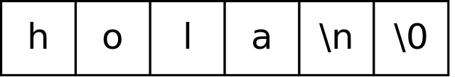
La especificacion de formato %s dentro de printf espera que el
argumento correspondiente sea una cadena representada de este modo;
copy tambien se basa en el hecho de que su argumento de entrada
se termina con '\0', y copia este caracter dentro del argumento de
salida. (Todo esto implica que '\0', no es parte de un texto
normal.)
Es util mencionar de paso que aun un programa tan pequeño como este
presenta algunos problemas de diseño. Por ejemplo, ¿que debe hacer
main si encuentra una linea que es mayor que su limite?
getline trabaja en forma segura, en ese caso detiene la
recopilacion cuando el arreglo esta lleno, aunque no encuentre el
caracter nueva linea. Probando la longitud y el ultimo caracter
devuelto, main puede determinar si la linea fue demasiado larga,
y entonces realiza el tratamiento que se desee. Por brevedad, hemos
ignorado el asunto.
Para un usuario de getline no existe forma de saber con
anticipacion cuan larga podra ser una linea de entrada, por lo que
getline revisa un posible desbordamiento (overflow). Por otro
lado, el usuario de copy ya conoce (o lo puede averiguar) cual es
el tamaño de la cadena, por lo que decidimos no agregar
comprobacion de errores en ella.
Ejercicio 1-16. Corrija la rutina principal del programa de la linea mas larga de modo que imprima correctamente la longitud de lineas de entrada arbitrariamente largas, y tanto texto como sea posible.
Ejercicio 1-17. Escriba un programa que imprima todas las lineas de entrada que sean mayores de 80 caracteres.
Ejercicio 1-18. Escriba un programa que elimine los blancos y los tabuladores que esten al final de cada linea de entrada, y que borre completamente las lineas en blanco.
Ejercicio 1-19. Escriba una funcion reverse(s) que invierta la
cadena de caracteres s. Usela para escribir un programa que
invierta su entrada, linea a linea.
1.10 Variables externas y alcance
Las variables que estan en main, tal como line, longest,
etc., son privadas o locales a ella. Debido a que son declaradas
dentro de main, ninguna otra funcion puede tener acceso directo a
ellas. Lo mismo tambien es valido para variables de otras
funciones; por ejemplo, la variable i en getLine no tiene
relacion con la i que esta en copy. Cada variable local de una
funcion comienza a existir solo cuando se llama a la funcion, y
desaparece cuando la funcion termina. Esto es por lo que tales
variables son conocidas como variables automaticas, siguiendo la
terminologia de otros lenguajes. Aqui se utilizara en adelante el
termino automatico para hacer referencia a esas variables
locales. (En el capitulo 4 se discute la categoria de
almacenamiento estatica, en la que las variables locales si
conservan sus valores entre llamadas.)
Debido a que las variables locales aparecen y desaparecen con la invocacion de funciones, no retienen sus valores entre dos llamadas sucesivas, y deben ser inicializadas explicitamente en cada entrada. De no hacerlo, contendran "basura".
Como una alternativa a las variables automaticas, es posible
definir variables que son externas a todas las funciones, esto
es, variables a las que toda funcion puede tener acceso por su
nombre. (Este mecanismo es parecido al COMMON de Fortran o a las
variables de Pascal declaradas en el bloque mas exterior.) Debido a
que es posible tener acceso global a las variables externas, estas
pueden ser usadas en lugar de listas de argumentos para comunicar
datos entre funciones. Ademas, puesto que las variables externas se
mantienen permanentemente en existencia, en lugar de aparecer y
desaparecer cuando se llaman y terminan las funciones, mantienen
sus valores aun despues de que regresa la funcion que los fijo.
Una variable externa debe definirse, exactamente una vez, fuera de
cualquier funcion; esto fija un espacio de almacenamiento para
ella. La variable tambien debe declararse en cada funcion que desee
tener acceso a ella; esto establece el tipo de la variable. La
declaracion debe ser una proposicion extern explicita, o bien puede
estar implicita en el contexto. Para concretar la discusion,
reescribamos el programa de la linea mas larga con line, longest y
max como variables externas. Esto requiere cambiar las llamadas,
declaraciones y cuerpos de las tres funciones.
#include <stdio.h> #define MAXLINE 1000 /* maximo tamaño de una linea de entrada */ int max; /* maxima longitud vista hasta el momento */ char line[MAXLINE]; /* linea de entrada actual */ char longest[MAXLINE]; /* la linea mas larga se guarda aqui */ int getLine(void); void copy(void); /* imprime la linea de entrada mas larga; version especializada */ main() { int len; extern int max; extern char longest[]; max = 0; while ((len = getLine()) > 0) if (len > max) { max = len; copy(); } if (max > 0) /* hubo una linea */ printf("%s", longest); return 0; } /* getLine: version especializada */ int getLine(void) { int c, i; extern char line[]; for (i = 0; i < MAXLINE - 1 && (c=getchar()) != EOF && c != '\n'; ++i) line[i] = c; if (c == '\n') { line[i] = c; ++i; } line[i] = '\0'; return i; } /* copy: version especializada */ void copy(void) { int i; extern char line[], longest[]; i = 0; while ((longest[i] = line[i]) != '\0') ++i; }
Las variables externas de main, getLine y copy estan
definidas en las primeras lineas del ejemplo anterior, lo que
establece su tipo y causa que se les asigne espacio de
almacenamiento. Desde el punto de vista sintactico, las
definiciones externas son exactamente como las definiciones de
variables locales, pero puesto que ocurren fuera de las funciones,
las variables son externas. Antes de que una funcion pueda usar una
variable externa, se debe hacer saber el nombre de la variable a la
funcion. Una forma de hacer esto es escribir una declaracion
extern dentro de la funcion; la declaracion es la misma que
antes, excepto por la palabra reservada extern.
Bajo ciertas circunstancias, la declaracion extern se puede
omitir. Si la definicion de una variable externa ocurre dentro del
archivo fuente antes de su uso por una funcion en particular,
entonces no es necesario el uso de una declaracion extern dentro
de la funcion. La declaracion extern en main, getLine y
copy es, por lo tanto, redundante. De hecho, una practica comun,
es poner las definiciones de todas las variables externas al
principio del archivo fuente y despues omitir todas las
declaraciones extern.
Si el programa esta dividido en varios archivos fuente y una
variable se define en archivo1 y se utiliza en archivo2 y
archivo3, entonces se necesitan declaraciones extern en
archivo2 y archivo3 para conectar las ocurrencias de la
variable. La practica comun es reunir declaraciones extern de
variables y funciones en un archivo separado, llamado
historicamente header, que es incluido por #include al
principio de cada archivo fuente. El sufijo .h se usa por
convencion para nombres de headers. Las funciones de la biblioteca
estandar, por ejemplo, estan declaradas en headers como
<stdio.h>. Este tema se trata ampliamente en el capitulo 4, y la
biblioteca en el capitulo 7 y en el apendice B.
Puesto que las versiones especializadas de getLine y copy no
tienen argumentos, la logica sugeriria que sus prototipos al
principio del archivo deben ser getLine() y copy(). Pero por
compatibilidad con programas de C anteriores, el estandar toma a
una lista vacia como una declaracion al viejo estilo, y suspende
toda revision de listas de argumentos; para una lista
explicitamente vacia debe emplearse la palabra void. Esto se
discutira en el capitulo 4.
Se debe notar que empleamos cuidadosamente las palabras definicion y declaracion cuando nos referimos a variables externas en esta seccion. La palabra "definicion" se refiere al lugar donde se crea la variable o se le asigna un lugar de almacenamiento; "declaracion" se refiere al lugar donde se establece la naturaleza de la variable pero no se le asigna espacio.
A proposito, existe una tendencia a convertir todo en variables
extern, debido a que aparentemente simplifica las comunicaciones
–las listas de argumentos son cortas y las variables existen
siempre, cuando se les requiere. Pero las variables externas
existen siempre, aun cuando no hacen falta. Descansar fuertemente
sobre variables externas es peligroso, puesto que lleva a programas
cuyas conexiones entre datos no son completamente obvias –las
variables pueden cambiarse en forma inesperada e inadvertida, y el
programa es dificil de modificar. La segunda version del programa
de la linea mayor es inferior a la primera, en parte por las
anteriores razones y en parte porque destruye la generalidad de dos
utiles funciones, introduciendo en ellas los nombres de las
variables que manipula.
Hasta este punto hemos descrito lo que podria llamarse los fundamentos convencionales de C. Con estos fundamentos, es posible escribir programas utiles de tamaño considerable, y probablemente seria una buena idea hacer una pausa suficientemente grande para realizarlos. Estos ejercicios sugieren programas de complejidad algo mayor que los anteriores del capitulo.
Ejercicio 1-20. Escriba un programa detab que reemplace
tabuladores de la entrada con el numero apropiado de blancos para
espaciar hasta el siguiente paro de tabulacion. Considere un
conjunto fijo de paros de tabulacion, digamos cada \[n\]
columnas. ¿Debe ser \[n\] una variable o un parametro simbolico?
Ejercicio 1-21. Escriba un programa entab que reemplace cadenas
de blancos por el minimo numero de tabuladores y blancos para
obtener el mismo espaciado. Considere los paros de tabulacion de
igual manera que para detab. Cuando un tabulador o un simple
espacio en blanco fuese suficiente para alcanzar un paro de
tabulacion, ¿a cual se le debe dar preferencia?
Ejercicio 1-22. Escriba un programa para "doblar" lineas grandes de entrada en dos o mas lineas mas cortas despues del ultimo caracter no blanco que ocurra antes de la n-esima columna de entrada. Asegurese de que su programa se comporte apropiadamente con lineas muy largas, y de que no hay blancos o tabuladores antes de la columna especificada.
Ejercicio 1-23. Escriba un programa para eliminar todos los comentarios de un programa en C. No olvide manejar apropiadamente las cadenas entre comillas y las constantes de caracter. Los comentarios de C no se anidan.
Ejercicio 1-24. Escriba un programa para revisar los errores de sintaxis rudimentarios de un programa en C, como parentesis, llaves y corchetes no alineados. No olvide las comillas ni los apostrofos, las secuencias de escape y los comentarios. (Este programa es dificil si se hace completamente general.)
capitulo 2: Tipos, operadores y expresiones
Las variables y las constantes son los objetos de datos basicos que se manipulan en un programa. Las declaraciones muestran las variables que se van a utilizar y establecen el tipo que tienen y algunas veces cuales son sus valores iniciales. Los operadores especifican lo que se hara con las variables. Las expresiones combinan variables y constantes para producir nuevos valores. El tipo de un objeto determina el conjunto de valores que puede tener y que operaciones se pueden realizar sobre el. Estos son los temas de este capitulo.
El estandar ANSI ha hecho muchos pequeños cambios y agregados a los
tipos basicos y a las expresiones. Ahora hay formas signed y
unsigned de todos los tipos enteros, y notaciones para constantes
sin signo y constantes de caracter hexadecimales. Las operaciones de
punto flotante pueden hacerse en precision sencilla; tambien hay un
tipo long double para precision extendida. Las constantes de
cadena pueden concatenarse al tiempo de compilacion. Las
enumeraciones son ya parte del lenguaje, formalizando una
caracteristica pendiente por mucho tiempo. Los objetos pueden ser
declarados const, lo que impide que cambien. Las reglas para
conversion automatica entre tipos aritmeticos se aumentaron para
manejar el ahora mas rico conjunto de tipos.
2.1 Nombres de variables
Aunque no lo mencionamos en el capitulo 1, existen algunas
restricciones en los nombres de las variables y de las constantes
simbolicas. Los nombres se componen de letras y digitos; el primer
caracter debe ser una letra. El caracter de subrayado "_" cuenta
como una letra; algunas veces es util para mejorar la legibilidad
de nombres largos de variables. Sin embargo, no se debe comenzar
los nombres de variables con este caracter, puesto que las rutinas
de biblioteca con frecuencia usan tales nombres. Las letras
mayusculas y minusculas son distintas, de tal manera que x y X son
dos nombres diferentes. La practica tradicional de C es usar letras
minusculas para nombres de variables, y todo en mayusculas para
constantes simbolicas.
Al menos los primeros 31 caracteres de un nombre interno son
significativos, para nombres de funciones y variables externas el
numero puede ser menor que 31, puesto que los nombres externos los
pueden usar los ensambladores y los cargadores, sobre los que el
lenguaje no tiene control. Para nombres externos, el estandar
garantiza distinguir solo para 6 caracteres y sin diferenciar
mayusculas de minusculas. Las palabras clave como if, else,
int, float, etc., estan reservadas: no se pueden utilizar como
nombres de variables. Todas ellas deben escribirse con minusculas.
Es conveniente elegir nombres que esten relacionados con el proposito de la variable, que no sea probable confundirlos tipograficamente. Nosotros tendemos a utilizar nombres cortos para variables locales, especialmente indices de iteraciones, y nombres mas largos para variables externas.
2.2 Tipos y tamaños de datos
Hay unos cuantos tipos de datos basicos en C:
char |
un solo byte, capaz de contener un caracter del conjunto de caracteres local. |
int |
un entero, normalmente del tamaño natural de los enteros en la maquina en la que se ejecuta. |
float |
punto flotante de precision normal. |
double |
punto flotante de doble precision. |
Ademas, existen algunos calificadores que se aplican a estos tipos
basicos, short y long se aplican a enteros:
short int sh; long int counter;
La palabra int puede omitirse de tales declaraciones, lo que
tipicamente se hace.
La intencion es que short y long puedan proporcionar diferentes
longitudes de enteros donde sea practico; int sera normalmente el
tamaño natural para una maquina en particular. A menudo short es
de 16 bits y long de 32; int es de 16 o de 32 bits. Cada
compilador puede seleccionar libremente los tamaños apropiados para
su propio hardware, sujeto solo a la restriccion de que los shorts
e ints son, por lo menos de 16 bits, los long son por lo menos de
32 bits y el short no es mayor que int, el cual a su vez no es
mayor que long.
El calificador signed o unsigned puede aplicarse a char o a
cualquier entero. Los numeros unsigned son siempre positivos o
cero y obedecen las leyes de la aritmetica modulo 2n, donde n es
el numero de bits en el tipo. Asi, por ejemplo, si los char son
de 8 bits, las variables unsigned char tienen valores tentre 0
y 255, en tanto que las variables signed char tienen valores
entre -128 y 127 (en una maquina de complemento a dos). El
hecho de que los chars ordinarios sean con signo o sin el depende
de la maquina, pero los caracteres que se pueden imprimir son
siempre positivos.
El tipo long double especifica punto flotante de precision
extendida. Igual que con los enteros, los tamaños de objetos de
punto flotante se definen en la implantacion; float, double y
long double pueden representar uno, dos o tres tamaños distintos.
Los archivos de encabezado headers estandar <limits.h> y
<float.h> contienen constantes simbolicas para todos esos
tamaños, junto con otras propiedades de la maquina y del
compilador, los cuales se discuten en el apendice B.
Ejercicio 2-1. Escriba un programa para determinar los rangos de
variables char, short, int y long, tanto signed como
unsigned, imprimiendo los valores apropiados de los headers
estandar y por calculo directo. Es mas dificil si los calcula:
determine los rangos de los varios tipos de punto flotante.
2.3 Constantes
Una constante entera como 1234 es un int. Una constante long
se escribe con una l (ele) o L terminal, como en 123456789L;
un entero demasiado grande para caber dentro de un int tambien
sera tomado como long. Las constantes sin signo se escriben con
una u o U, terminal y el sufijo ul o UL indica unsigned
long.
Las constantes de punto flotante contienen un punto decimal
(123.4) o un exponente (1e-2) o ambos; su tipo es double, a
menos que tengan sufijo. Los sufijos f o F indican una
constante float; l o L indican un long double.
El valor de un entero puede especificarse en forma octal o
hexadecimal en lugar de decimal. Un 0 (cero) al principio en una
constante entera significa octal; 0x o 0X al principio
significa hexadecimal. Por ejemplo, el decimal 31 puede
escribirse como 037 en octal y 0xlf o 0X1F en
hexadecimal. Las constantes octales y hexadecimales tambien pueden
ser seguidas por L para convertirlas en long y U para
hacerlas unsigned: 0XFUL es una constante unsigned long con
valor de 15 en decimal.
Una constante de caracter es un entero, escrito como un caracter
dentro de apostrofos, tal como 'x'. El valor de una constante de
caracter es el valor numerico del caracter en el conjunto de
caracteres de la maquina. Por ejemplo, en el conjunto de caracteres
ASCII el caracter constante '0' tiene el valor de 48, el cual no
esta relacionado con el valor numerico 0. Si escribimos '0' en
vez de un valor numerico como 48 que depende del conjunto de
caracteres, el programa es independiente del valor particular y mas
facil de leer. Las constantes de caracter participan en operaciones
numericas tal como cualesquier otros enteros, aunque se utilizan
mas comunmente en comparaciones con otros caracteres.
Ciertos caracteres pueden ser representados en constante de
caracter y de cadena, Por medio de secuencias de escape como \n
(nueva linea); esas secuencias se ven como dos caracteres, pero
representan solo uno. Ademas, un patron de bits arbitrario de
tamaño de un byte puede ser especificado por
'\ooo'
en donde ooo son de uno a tres digitos octales (0…7) o por
'\xhh'
en donde hh son uno o mas digitos hexadecimales (0…9, a…f,
A…F). Asi podriamos escribir
#define VTAB '\013' /* tab vertical ASCII */ #define BELL '\007' /* caracter campana ASCII */
o, en hexadecimal,
#define VTAB '\xb' /* tab vertical ASCII */ #define BELL '\x7' /* caracter campana ASCII */
El conjunto completo de secuencias de escape es
\a |
caracter de alarma (campana) |
\b |
retroceso |
\f |
avance de hoja |
\n |
nueva linea |
\r |
regreso de carro |
\t |
tabulador horizontal |
\v |
tabulador vertical |
\\ |
diagonal invertida |
\? |
interrogacion |
| \' | apostrofo |
| \" | comillas |
\ooo |
numero octal |
\xhh |
numero hexadecimal |
La constante de caracter '\0' representa el caracter con valor
cero, el caracter nulo. '\0' a menudo se escribe en vez de 0 para
enfatizar la naturaleza de caracter de algunas expresiones, pero el
valor numerico es precisamente 0.
Una expresion constante es una expresion que solo inmiscuye constantes. Tales expresiones pueden ser evaluadas durante la compilacion en vez de que se haga en tiempo de ejecucion, y por tanto pueden ser utilizadas en cualquier lugar en que pueda encontrarse una constante, como en
#define MAXLINE 1000 char line [MAXLINE + 1];
o
#define LEAP 1 /* en años bisiestos */ int days [31 + 28 + LEAP + 31 + 30 + 31 + 30 + 31 + 31 + 30 + 31 + 30 + 31];
Una constante de cadena o cadena literal, es una secuencia de cero o mas caracteres encerrados entre comillas, como en:
"Soy una cadena"
o
"" /* La cadena vacia */
Las comillas no son parte de la cadena, solo sirven para
delimitarla. Las mismas secuencias de escape utilizadas en
constantes de caracter se aplican en cadenas; \" representa el
caracter comillas. Las constantes de cadena pueden ser concatenadas
en tiempo de compilacion:
"hola," "mundo"
es equivalente a
"hola, mundo"
Esto es util para separar cadenas largas entre varias lineas fuente.
Tecnicamente, una constante de cadena es un arreglo de
caracteres. La representacion interna de una cadena tiene un
caracter nulo '\0' al final, de modo que el almacenamiento fisico
requerido es uno mas del numero de caracteres escritos entre las
comillas. Esta representacion significa que no hay limite en cuanto
a que tan larga puede ser una cadena, pero los programas deben leer
completamente una cadena para determinar su longitud. La funcion
strlen(s) de la biblioteca estandar regresa la longitud de su
argumento s de tipo cadena de caracteres, excluyendo el '\0'
terminal. Aqui esta nuestra version:
/* strlen: regresa la longitud de s */ int strlen(char s[]) { int i; i = 0; while (s[i] != '\0') ++i; return i; }
strlen y otras funciones para cadenas estan declaradas en el
header estandar <string.h>.
Se debe ser cuidadoso al distinguir entre una constante de caracter
y una cadena que contiene un solo caracter: 'x' no es lo mismo que
"x". El primero es un entero, utilizado para producir el valor
numerico de la letra x en el conjunto de caracteres de la
maquina. El ultimo es un arreglo de caracteres que contiene un
caracter (la letra x) y un '\0'.
Existe otra clase de constante, la constante de enumeracion. Una enumeracion es una lista de valores enteros constantes, como en:
enum boolean {NO, YES};
El primer nombre en un enum tiene valor 0, el siguiente 1, y
asi sucesivamente, a menos que sean especificados valores
explicitos. Si no todos los valores son especificados, los valores
no especificados continuan la progresion a partir del ultimo valor
que si lo fue, como en el segundo de esos ejemplos:
enum escapes { BELL = '\a', BACKSPACE = '\b', TAB = '\t', NEWLINE = '\n', VTAB = '\v', RETURN = '\r' }; enum months { JAN = 1, FEB, MAR, APR, MAY, JUN, JUL , AUG, SEP, OCT, NOV, DEC }; /* FEB = 2, MAR = 3, etc. */
Los nombres que estan en enumeraciones diferentes deben ser distintos. Los valores no necesitan ser distintos dentro de la misma enumeracion.
Las enumeraciones proporcionan una manera conveniente de asociar
valores constantes con nombres, una alternativa a #define con la
ventaja de que los valores pueden ser generados por uno. Aunque las
variables de tipos enum pueden ser declaradas, los compiladores
no necesitan revisar que lo que se va a almacenar en tal variable
es un valor valido para la enumeracion. No obstante, las variables
de enumeracion ofrecen la oportunidad de revisarlas y tal cosa es a
menudo mejor que #define. Ademas, un depurador puede ser capaz de
imprimir los valores de variables de enumeracion en su forma
simbolica.
2.4 Declaraciones
Todas las variables deben ser declaradas antes de su uso, aunque ciertas declaraciones pueden ser hechas en forma implicita por el contexto. Una declaracion especifica un tipo, y contiene una lista de una o mas variables de ese tipo, como en:
int lower, upper, step; char c, line[1000];
Las variables pueden ser distribuidas entre las declaraciones en cualquier forma; la lista de arriba podria igualmente ser escrita como:
int lower; int upper; int step; char c; char line[1000];
Esta ultima forma ocupa mas espacio, pero es conveniente para agregar un comentario a cada declaracion o para modificaciones subsecuentes.
Una variable tambien puede ser inicializada en su declaracion. Si el nombre es seguido por un signo de igual y una expresion, la expresion sirve como un inicializador, como en:
char esc = '\\'; int i = 0; int lixnit = MAXLINE+1; float eps = 1.0e-5;
Si la variable en cuestion no es automatica, la inicializacion es efectuada solo una vez, conceptualmente antes de que el programa inicie su ejecucion, y el inicializador debe ser una expresion constante. Una variable automatica explicitamente inicializada es inicializada cada vez que se entra a la funcion o bloque en que se encuentra; el inicializador puede ser cualquier expresion. Las variables estaticas y externas son inicializadas en cero por omision. Las variables automaticas para las que no hay un inicializador explicito tienen valores indefinidos (esto es, basura).
El calificador const puede aplicarse a la declaracion de
cualquier variable para especificar que su valor no sera
cambiado. Para un arreglo, el calificador const indica que los
elementos no seran alterados.
const double e = 2.71828182845905; const char msg[] = "precaucion: ";
La declaracion const tambien se puede utilizar con argumentos de
tipo arreglo, para indicar que la funcion no cambia ese arreglo:
int strlen(const char[]);
Si se efectua un intento de cambiar un const, el resultado esta
definido por la implantacion.
2.5 Operadores aritmeticos
Los operadores aritmeticos binarios son +, -, *, /, y el
operador modulo %. La division entera trunca cualquier parte
fraccionaria. La expresion:
x % y
produce el residuo cuando x es dividido entre y, esto es cero
cuando y divide a x exactamente. Por ejemplo, un año es
bisiesto si es divisible entre 4 pero no entre 100, excepto
aquellos años que son divisibles entre 400, que si son
bisiestos. Por lo tanto:
if ((year % 4 == 0 && year % 100 != 0) || year % 400 == 0) printf("%d es un año bisiesto\n", year); else printf("%d no es un año bisiesto\n", year);
El operador % no puede aplicarse a operandos float o
double. La direccion de truncamiento para / y el signo del
resultado de % son dependientes de la maquina para operandos
negativos, asi como la accion que se toma en caso de sobreflujo o
subflujo.
Los operadores binarios + y - tienen la misma precedencia, la
cual es menor que la precedencia de *, /, y %, que a su vez
es menor que + y - unarios. Los operadores aritmeticos se
asocian de izquierda a derecha.
La tabla 2-1 que se encuentra al final de este capitulo, resume la precedencia y asociatividad para todos los operadores.
2.6 Operadores de relacion y logicos
Los operadores de relacion son:
> >= < <=
Todos ellos tienen la misma precedencia. Precisamente bajo ellos en precedencia estan los operadores de igualdad:
== !=
Los operadores de relacion tienen precedencia inferior que los
operadores aritmeticos, asi que una expresion como i < lim-1 se
toma como i < (lim-1), como se esperaria.
Mas interesantes son los operadores logicos && y || Las
expresiones conectadas por && o || son evaluadas de izquierda a
derecha, y la evaluacion se detiene tan pronto como se conoce el
resultado verdadero o falso. La mayoria de los programas en C
descansan sobre esas propiedades. Por ejemplo, aqui esta un ciclo
de la funcion de entrada getline que escribimos en el capitulo 1:
for (i=0; i < lim-1 && (c=getchar()) != '\n' && c != EOF; ++i) s[i] = c;
Antes de leer un nuevo caracter es necesario verificar que hay
espacio para almacenarlo en el arreglo s, asi que la prueba i <
lim-1 debe hacerse primero. Ademas, si esta prueba falla, no
debemos seguir y leer otro caracter.
De manera semejante, seria desafortunado si c fuese probada
contra EOF antes de que se llame a getchar; por lo tanto, la
llamada y la asignacion deben ocurrir antes de que se pruebe el
caracter c.
La precedencia de && es mas alta que la de ||, y ambas son
menores que los operadores de relacion y de asignacion, asi que
expresiones como:
i < lim-1 && (c = getchar()) != '\n' && c != EOF
no requieren de parentesis adicionales. Puesto que la precedencia
de != es superior que la asignacion, los parentesis se necesitan
en:
(c = getchar()) != '\n'
para obtener el resultado deseado de asignacion a c y despues
comparacion con '\n'.
Por definicion, el valor numerico de una expresion de relacion or
logica es 1 si la relacion es verdadera, y 0 si la relacion es
falsa.
El operador unario de negacion ! convierte a un operando que no
es cero en 0, y a un operando cero en 1. Un uso comun de ! es
en construcciones como:
if (!valido)
en lugar de:
if (valido == 0)
Es dificil generalizar acerca de cual es la mejor. Construcciones
como !valido se leen en forma agradable ("si no es valido"), pero
otras mas complicadas pueden ser dificiles de entender.
Ejercicio 2-2. Escriba un ciclo equivalente a la iteracion for
anterior sin usar && o ||.
2.7 Conversiones de tipo
Cuando un operador tiene operandos de tipos diferentes, estos se
convierten a un tipo comun de acuerdo con un reducido numero de
reglas. En general, las unicas conversiones automaticas son
aquellas que convierten un operando "angosto" en uno "amplio" sin
perdida de informacion, tal como convertir un entero a punto
flotante en una expresion como f + i. Las expresiones que no
tienen sentido, como utilizar un float como subindice, no son
permitidas. Las expresiones que podrian perder informacion, como
asignar un tipo mayor a uno mas corto, o un tipo de punto flotante
a un entero, pueden producir una advertencia, pero no son ilegales.
Un char solo es un entero pequeño, por lo que los char se
pueden utilizar libremente en expresiones aritmeticas. Esto permite
una flexibilidad considerable en ciertas clases de transformacion
de caracteres. Una es ejemplificada con esta ingenua implantacion
de la funcion atoi, que convierte una cadena de digitos en su
equivalente numerico.
/* atoi: convierte s en entero */ int atoi(char s[]) { int i, n; n = 0; for (i = 0; s[i] >= '0' && s[i] <= '9'; ++i) n = 10 * n + (s[i] - '0'); return n; }
Tal como se discutio en el capitulo 1, la expresion
s[i] - '0'
da el valor numerico del caracter almacenado en s[i], debido a
que los valores de '0', '1', etc., forman una secuencia ascendente
contigua.
Otro ejemplo de conversion de char a int es la funcion lower,
que convierte un caracter sencillo a minuscula para el conjunto de
caracteres ASCII. Si el caracter no es una letra mayuscula, lower
lo regresa sin cambio.
/* lower: convierte c a minuscula; solamente ASCII */ int lower(int c) { if (c >= 'A' && c <= 'Z') return c + 'a' - 'A'; else return c; }
Esto funciona para ASCII debido a que las correspondientes letras
mayusculas y minusculas estan a una distancia fija como valores
numericos y cada alfabeto es contiguo – no hay sino letras entre
A y Z. Sin embargo, esta ultima observacion no es cierta para
el conjunto de caracteres EBCDIC, asi que este codigo podria
convertir algo mas que solo letras en EBCDIC.
El header estandar <ctype.h>, que se describe en el apendice B,
define una familia de funciones que proporcionan pruebas y
conversiones independientes de los juegos de caracteres. Por
ejemplo, la funcion tolower(c) regresa el valor de la letra
minuscula de c si c es una mayuscula, de modo que tolower es
un reemplazo transportable para la funcion lower mostrada
antes. De modo semejante, la prueba:
c >= '0' && c < = '9'
puede reemplazarse por
isdigit(c)
Nosotros utilizaremos las funciones de <ctype.h> en adelante.
Existe un sutil punto acerca de la conversion de caracteres a
enteros.El lenguaje no especifica si las variables de tipo char
son valores con o sin signo. Cuando un char se convierte a int,
¿puede producir alguna vez un entero negativo? La respuesta varia
de una maquina a otra, reflejando diferencias en la arquitectura.
En algunas maquinas un char cuyo bit mas a la izquierda es 1 se
convertira a un entero negativo ("extension de signo"). En otras,
un char es promovido a un int agregando ceros del lado
izquierdo, asi que siempre es positivo.
La definicion de C garantiza que ningun caracter que este en el
conjunto estandar de caracteres de impresion de la maquina sera
negativo, de modo que esos caracteres siempre seran cantidades
positivas en las expresiones. Pero hay patrones arbitrarios de bits
almacenados en variables de tipo caracter que pueden aparecer como
negativos en algunas maquinas, aunque sean positivos en otras. Por
transportabilidad, se debe especificar signed o unsigned si se
van a almacenar datos que no son caracteres en variables tipo
char.
Las expresiones de relacion como i > j y las expresiones logicas
conectadas por && y || estan definidas para tener un valor de
1 siendo verdaderas, y 0 al ser falsas. De este modo, la
asignacion
d = c >= '0' && c <= '9'
hace 1 a d si c es un digito, y 0 si no lo es. Sin embargo,
las funciones como isdigit pueden regresar cualquier valor
diferente de cero como verdadero. En la parte de validacion de
if, while, for, etc., "verdadero" es solo "diferente de
cero", por lo que esto no hace diferencia.
Las conversiones aritmeticas implicitas trabajan como se espera. En
general, si un operador como + o * que toma dos operandos
(operador binario) tiene operandos de diferentes tipos, el tipo
"menor" es promovido al tipo "superior" antes de que la operacion
proceda. El resultado es el del tipo mayor. La seccion 6 del
apendice A establece las reglas de conversion en forma precisa. Si
no hay operandos unsigned, sin embargo, el siguiente conjunto
informal de reglas bastara:
- Si cualquier operando es
long double, conviertase el otro along double. - De otra manera, si cualquier operando es
double, conviertase el otro adouble. - De otra manera, si cualquier operando es
float, conviertase el otro afloat. - De otra manera, conviertase
charyshortaint. - Despues, si cualquier operando es
long, conviertase el otro along.
Notese que los float que estan en una expresion no se convierten
automaticamente a double; esto es un cambio de la definicion
original. En general, las funciones matematicas como las de
<math.h> utilizaran doble precision. La razon principal para usar
float es ahorrar espacio de almacenamiento en arreglos grandes o,
con menor frecuencia, ahorrar tiempo en maquinas en donde la
aritmetica de doble precision es particularmente costosa.
Las reglas de conversion son mas complicadas cuando hay operandos
unsigned. El problema es que las comparaciones de valores con
signo y sin signo son dependientes de la maquina, debido a que
dependen de los tamaños de los varios tipos de enteros. Por
ejemplo, supongase que int es de 16 bits y long de 32. Entonces
-1L < 1U, debido a que 1U, que es un int, es promovido a
signed long. Pero -1L > 1UL, debido a que -1L es promovido a
unsigned long y asi parece ser un gran numero positivo.
Las conversiones tambien tienen lugar en las asignaciones; el valor del lado derecho es convertido al tipo de la izquierda, el cual es el tipo del resultado.
Un caracter es convenido a un entero, tenga o no extension de signo, como se describio anteriormente.
Los enteros mas largos son convertidos a cortos o a char desechando
el exceso de bits de mas alto orden. Asi en:
int i; char c; i = c; c = i;
el valor de c no cambia. Esto es verdadero ya sea que se inmiscuya
o no la extension de signo. Sin embargo, el invertir el orden de
las asignaciones podria producir perdida de informacion.
Si x es float e i es int, entonces x = i e i = x
produciran conversiones; de float a int provoca el truncamiento
de cualquier parte fraccionaria. Cuando double se convierte a
float, el que se redondee o trunque el valor es dependiente de la
implantacion.
Puesto que un argumento de la llamada a una funcion es una
expresion, tambien suceden conversiones de tipo cuando se pasan
argumentos a funciones. En ausencia del prototipo de una funcion,
char y short pasan a ser int, y float se hace doble. Esta
es la razon por la que hemos declarado los argumentos a funciones
como int y double, aun cuando la funcion se llama con char y
float.
Finalmente, la conversion explicita de tipo puede ser forzada ("coaccionada") en cualquier expresion, con un operador unario llamado cast. En la construccion:
(nombre-de-tipo) expresion
la expresion es convertida al tipo nombrado, por las reglas de
conversion anteriores. El significado preciso de un cast es como
si la expresion fuera asignada a una variable del tipo
especificado, que se utiliza entonces en lugar de la construccion
completa. Por ejemplo, la rutina de biblioteca sqrt espera un
argumento de doble precision y producira resultados sin sentido si
maneja inadvertidamente algo diferente, (sqrt esta declarado en
<math.h>.) Asi, si n es un entero, podemos usar:
sqrt((double) n)
para convertir el valor de n a doble antes de pasarlo a
sqrt. Notese que la conversion forzosa produce el valor de n en
el tipo apropiado; n en si no se altera. El operador cast tiene
la misma alta precedencia que otros operadores unarios, como se
resume en la tabla del final de este capitulo.
Si un prototipo de funcion declara argumentos, como debe ser
normalmente, la declaracion produce conversion forzada automatica
de los argumentos cuando la funcion es llamada. Asi, dado el
prototipo de la funcion sqrt:
double sqrt(double);
la llamada:
raiz2 = sqrt(2);
obliga al entero 2 a ser el valor double 2.0 sin necesidad de
ningun cast.
La biblioteca estandar incluye una implantacion transportable de un generador de numeros pseudoaleatorios, y una funcion para inicializar la semilla; lo primero ilustra un cast:
unsigned long int next = 1; /* rand: regresa un entero pseudoaleatorio en 0..32767 */ int rand(void) { next = next * 1103515245 + 12345; return (unsigned int)(next/65536) % 32768; } /* srand: fija la semilla para rand( ) */ void srand(unsigned int seed) { next = seed; }
Ejercicio 2-3. Escriba la funcion htoi(s), que convierte una
cadena de digitos hexadecimales (incluyendo 0x o 0X en forma
optativa) en su valor entero equivalente. Los digitos permitidos
son del 0 al 9, de la a a la f, y de la A a la F.
2.8 Operadores de incremento y decremento
El lenguaje C proporciona dos operadores poco comunes para
incrementar y decrementar variables. El operador de aumento ++
agrega 1 a su operando, en tanto que el operador de disminucion
-- le resta 1. Hemos usado frecuentemente ++ para incrementar
variables, como en:
if (c == '\n') ++ni;
El aspecto poco comun es que ++ y -- pueden ser utilizado como
prefijos (antes de la variable, como en ++n), o como postfijos
(despues de la variable: n++). En ambos casos, el efecto es
incrementar n. Pero la expresion ++n incrementa a n antes de
que su valor se utilice, en tanto que n++ incrementa a n
despues de que su valor se ha empleado. Esto significa que en un
contexto donde el valor esta siendo utilizado, y no solo el efecto,
++n y n++ son diferentes. Si n es 5, entonces:
x = n++;
asigna 5 a x, pero
x = ++n;
hace que x sea 6. En ambos casos, n se hace 6. Los
operadores de incremento y decremento solo pueden aplicarse a
variables; una expresion como (i + j)++ es ilegal.
Dentro de un contexto en donde no se desea ningun valor, sino solo el efecto de incremento, como en:
if (c == '\n') nl++;
prefijos y postfijos son iguales. Pero existen situaciones en donde
se requiere especificamente uno u otro. Por ejemplo, considerese la
funcion squeeze(s, c), que elimina todas las ocurrencias del
caracter c de una cadena s.
/* squeeze: borra todas las c de s */ void squeeze(char s[], int c) { int i, j; for (i = j = 0; s[i] != '\0'; i++ ) if (s[i] != c) s[j++] = s[i]; s[j] = '\0'; }
Cada vez que se encuentra un valor diferente de c, este se copia en
la posicion actual j, y solo entonces j es incrementada para
prepararla para el siguiente caracter. Esto es exactamente
equivalente a:
if (s[i] != c) {
s[j] = s[i];
j++;
}
Otro ejemplo de construccion semejante viene de la funcion
getline que escribimos en el capitulo 1, en donde podemos
reemplazar
if (c == '\n') { s[i] = c; ++i; }
por algo mas compacto como:
if (c == '\n') s[i++] = c;
Como un tercer ejemplo, considerese que la funcion estandar
strcat(s, t), que concatena la cadena t al final de la cadena
s. strcat supone que hay suficiente espacio en s para almacenar
la combinacion. Como la hemos escrito, strcat no regresa un valor;
la version de la biblioteca estandar regresa un apuntador a la
cadena resultante.
/* strcat: concatena t al final de s; s debe ser suficientemente grande */ void strcat(char s[], char t[]) { int i, j; i = j = 0; while (s[i] != '\0') /* encuentra el fin de s */ i++; while ((s[i++] = t[j++]) != '\0') /* copia t */ ; }
Como cada caracter se copia de t a s, el ++ postfijo se
aplica tanto a i como a j para estar seguros de que ambos estan
en posicion para la siguiente iteracion.
Ejercicio 2-4. Escriba una version alterna de squeeze(s1,s2)
que borre cada caracter de s1 que coincida con cualquier caracter
de la cadena s2.
Ejercicio 2-5. Escriba la funcion any(s1,s2), que regresa la
primera posicion de la cadena s1 en donde se encuentre cualquier
caracter de la cadena s2, o -1 si si no contiene caracteres de
s2. (La funcion de biblioteca estandar strpbrk hace el mismo
trabajo pero regresa un apuntador a la posicion encontrada.)
2.9 Operadores para manejo de bits
El lenguaje C proporciona seis operadores para manejo de bits; solo
pueden ser aplicados a operandos integrales, esto es, char,
short, int, y long, con o sin signo.
& |
AND de bits |
│ |
OR inclusivo de bits |
^ |
OR exclusivo de bits |
<< |
corrimiento a la izquierda |
>> |
corrimiento a la derecha |
~ |
complemento a uno (unario) |
El operador AND de bits & a menudo es usado para enmascarar algun
conjunto de bits; por ejemplo,
n = n & 0177;
hace cero todos los bits de n, menos los 7 de menor orden. El
operador OR de bits | es empleado para encender bits:
x = x | SET_ON;
fija en uno a todos los bits de x que son uno en SET_ON;
El operador OR exclusivo ^ pone un uno en cada posicion en donde
sus operandos tienen bits diferentes, y cero en donde son iguales.
Se deben distinguir los operadores de bits & y | de los
operadores logicos && y ||, que implican evaluacion de
izquierda a derecha de un valor de verdad. Por ejemplo, si x es
1 y y es 2, entonces x & y es cero en tanto que x && y es
uno.
Los operadores de corrimiento >> y << realizan corrimientos a
la derecha y a la izquierda de su operando que esta a la izquierda,
el numero de posiciones de bits dado por el operando de la derecha,
el cual debe ser positivo. Asi x << 2 desplaza el valor de x a
la izquierda dos posiciones, llenando los bits vacantes con cero;
esto es equivalente a una multiplicacion por 4. El correr a la
derecha una cantidad unsigned siempre llena los bits vacantes con
cero. El correr a la derecha una cantidad signada llenara con bits
de signo ("corrimiento aritmetico") en algunas maquinas y con bits
0 ("corrimiento logico") en otras.
El operador unario ~ da el complemento a uno de un entero; esto
es, convierte cada bit 1 en un bit 0 y viceversa. Por ejemplo:
x = x & ~077
fija los ultimos seis bits de x en cero. Notese que x & ~077 es
independiente de la longitud de la palabra, y por lo tanto, es
preferible a, por ejemplo, x & 0177700, que supone que x es una
cantidad de 16 bits. La forma transportable no involucra un costo
extra, puesto que ~077 es una expresion constante que puede ser
evaluada en tiempo de compilacion.
Como ilustracion de algunos de los operadores de bits, considere la
funcion getbits(x,p,n) que regresa el campo de n bits de x
(ajustado a la derecha) que principia en la posicion p. Se supone
que la posicion del bit 0 esta en el borde derecho y que n y
p son valores positivos adecuados. Por ejemplo, getbits(x,4,3)
regresa los tres bits que estan en la posicion 4, 3 y 2,
ajustados a la derecha.
/* getbits: obtiene n bits desde la posicion p */ unsigned getbits(unsigned x, int p, int n) { return (x >> (p + 1 - n)) & ~(~0 << n); }
La expresion x >> (p + 1 - n) mueve el campo deseado al borde
derecho de la palabra. ~O es todos los bits en 1; corriendo n
bits hacia la izquierda con ~0 << n coloca ceros en los n bits
mas a la derecha; complementado con ~ hace una mascara de unos en
los n bits mas a la derecha.
Ejercicio 2-6. Escriba una funcion setbits(x,p,n,y) que regresa
x con los n bits que principian en la posicion p iguales a
los n bits mas a la derecha de y, dejando los otros bits sin
cambio.
Ejercicio 2-7. Escriba una funcion invert(x,p,n) que regresa
x con los n bits que principian en la posicion p invertidos
(esto es, 1 cambiado a 0 y viceversa), dejando los otros sin
cambio.
Ejercicio 2-8. Escriba una funcion rightrot(x,n) que regresa el
valor del entero x rotado a la derecha n posiciones de bits.
2.10 Operadores de asignacion y expresiones
Las expresiones tales como
i = i + 2
en las que la variable del lado izquierdo se repite inmediatamente en el derecho, pueden ser escritas en la forma compacta
i += 2
El operador += se llama operador de asignacion.
La mayoria de los operadores binarios (operadores como + que
tienen un operando izquierdo y otro derecho) tienen un
correspondiente operador de asignacion op=, en donde op es uno
de:
+ - * / % << >> & ^ |
Si expr1 y expr1 son expresiones, entonces
expr1 op= expr2
es equivalente a
expr1 = (expr1) op (expr2)
exceptuando que expr1 se calcula solo una vez. Notense los
parentesis alrededor de expr2:
x *= y + 1
significa
x = x * (y + 1)
y no
x = x * y + 1
Como ejemplo, la funcion bitcount cuenta el numero de bits en 1
en su argumento entero.
/* bitcount: cuenta bits 1 en x */ int bitcount(unsigned x) { int b; for (b = 0; x != 0; x >>= 1) if (x & 01) b++; return b; }
Declarar al argumento x como unsigned asegura que cuando se
corre a la derecha, los bits vacantes se llenaran con ceros, no con
bits de signo, sin importar la maquina en la que se ejecute el
programa.
Muy aparte de su concision, los operadores de asignacion tienen la
ventaja de que corresponden mejor con la forma en que la gente
piensa. Decimos "suma 2 a i" o "incrementa i en 2", no "toma i,
agregale 2, despues pon el resultado de nuevo en i". Asi la
expresion i += 2 es preferible a i = i + 2. Ademas, para una
expresion complicada como:
yyva1[yypv[p3 + p4] + yypv[p1]] += 2
el operador de asignacion hace al codigo mas facil de entender, puesto que el lector no tiene que verificar arduamente que dos expresiones muy largas son en realidad iguales, o preguntarse por que no lo son, y un operador de asignacion puede incluso ayudar al compilador a producir codigo mas eficiente.
Ya hemos visto que la proposicion de asignacion tiene un valor y puede estar dentro de expresiones; el ejemplo mas comun es
while ((c = getchar()) != EOF)
...
Los otros operadores de asignacion (+=, -=, etc.) tambien
pueden estar dentro de expresiones, aunque esto es menos frecuente.
En todas esas expresiones, el tipo de una expresion de asignacion es el tipo de su operando del lado izquierdo, y su valor es el valor despues de la asignacion.
Ejercicio 2-9. En un sistema de numeros de complemento a dos, x
&= (x-1) borra el bit 1 de mas a la derecha en x. Explique el
porque. Utilice esta observacion para escribir una version mas
rapida de bitcount.
2.11 Expresiones condicionales
Las proposiciones
if (a > b) z = a; else z = b;
calculan en z el maximo de a y b. La expresion condicional,
escrita con el operador ternario proporciona una forma
alternativa para escribir esta y otras construcciones
semejantes. En la expresion
expr1 ? expr2 : expr3
la expresion expr1 es evaluada primero. Si es diferente de cero
(verdadero), entonces la expresion expr2 es evaluada, y ese es el
valor de la expresion condicional. De otra forma, expr3 se
evalua, y ese es el valor. Solo uno de entre expr2, y expr3 se
evalua. Asi, para hacer z el maximo de a y b,
z = (a > b) ? a : b; /* z = max(a, b) */
Se debe notar que la expresion condicional es en si una expresion,
y se puede utilizar en cualquier lugar donde otra expresion pueda
estar. Si \[expr_2\], y \[expr_3\] son de tipos diferentes, el tipo
del resultado se determina por las reglas de conversion discutidas
anteriormente en este capitulo. Por ejemplo, si f es un float y
i es un int, entonces la expresion
(i > 0) ? f : i
es de tipo float sea i positivo o no.
Los parentesis no son necesarios alrededor de la primera expresion
de una expresion condicional, puesto que la precedencia de ?: es
muy baja, solo arriba de la asignacion. De cualquier modo son
recomendables, puesto que hacen mas facil de ver la parte de
condicion de la expresion.
La expresion condicional frecuentemente lleva a un codigo
conciso. Por ejemplo, este ciclo imprime n elementos de un
arreglo, 10 por linea, con cada columna separada por un blanco, y
con cada linea (incluida la ultima) terminada por una nueva linea.
for (i = 0; i < n; i++) printf("%6d%c", a[i], ( i % 10 == 9 || i == n-1) ? '\n' : ' ');
Se imprime un caracter nueva linea despues de cada diez elementos,
y despues del n-esimo. Todos los otros elementos son seguidos por
un espacio en blanco. Esto podria verse oscuro, pero es mas
compacto que el if-else equivalente. Otro buen ejemplo es
printf("Hay %d elemento%s.\n", n, n == 1 ? "" : "s");
Ejercicio 2-10. Reescriba la funcion lower, que convierte
letras mayusculas a minusculas, con una expresion condicional en
vez de un if-else.
2.12 Precedencia y orden de evaluacion
La tabla 2-1 resume las reglas de precedencia y asociatividad de
todos los operadores, incluyendo aquellos que aun no se han
tratado. Los operadores que estan en la misma linea tienen la misma
precedencia; los renglones estan en orden de precedencia
decreciente, asi, por ejemplo, *, /, y % tienen todos la
misma precedencia, la cual es mas alta que la de + y -
binarios. El "operador" () se refiere a la llamada a una
funcion. Los operadores -> y . son utilizados para tener acceso
a miembros de estructuras; seran cubiertos en el capitulo 6, junto
con sizeof (tamaño de un objeto). En el capitulo 5 se discuten
* (indireccion a traves de un apuntador) y & (direccion de un
objeto), y en el capitulo 3 se trata al operador coma.
- Tabla 2-1
Precedencia y asociatividad de operadores
Operadores Asociatividad ()[]->.izquierda a derecha !~++--+-*(tipo)sizeofderecha a izquierda */%izquierda a derecha +-izquierda a derecha >><<izquierda a derecha <<=>>=izquierda a derecha ==!=izquierda a derecha &izquierda a derecha ^izquierda a derecha │izquierda a derecha &&izquierda a derecha ││izquierda a derecha ?:derecha a izquierda =+=-=*=/=%=&=^=│>>=<<=derecha a izquierda , izquierda a derecha
Los +, -, y * unarios, tienen mayor precedencia que las
formas binarias.
Notese que la precedencia de los operadores de bits &, ^ y |
esta debajo de == y !=. Esto implica que las expresiones de
prueba de bits como
if ((x & MASK) == 0) ...
deben ser completamente colocadas entre parentesis para dar los resultados apropiados.
Como muchos lenguajes, C no especifica el orden en el cual los
operandos de un operador seran evaluados. (Las excepciones son &&,
||, ?: y ',') Por ejemplo, en proposiciones como
x = f() + g();
f puede ser evaluada antes de g o viceversa; de este modo si
f o g alteran una variable de la que la otra depende, x puede
depender del orden de evaluacion. Se pueden almacenar resultados
intermedios en variables temporales para asegurar una secuencia
particular.
De manera semejante, el orden en el que se evaluan los argumentos de una funcion no esta especificado, de modo que la proposicion
printf("%d %d\n", ++n, power(2, n)); /* EQUIVOCADO */
puede producir resultados diferentes con distintos compiladores,
dependiendo de si n es incrementada antes de que se llame a
power. La solucion, por supuesto, es escribir
++n;
printf("%d %d\n", n, power(2, n));
Las llamadas a funciones, proposiciones de asignacion anidadas, y los operadores de incremento y decremento provocan "efectos colaterales" – alguna variable es modificada como producto de la evaluacion de una expresion. En cualquier expresion que involucra efectos colaterales, pueden existir sutiles dependencias del orden en que las variables involucradas en la expresion se actualizan. La infortunada situacion es tipificada por la proposicion
a[i] = i++;
La pregunta es si el subindice es el viejo o el nuevo valor de
i. Los compiladores pueden interpretar esto en formas diferentes,
y generar diferentes respuestas dependiendo de su
interpretacion. El estandar deja intencionalmente sin
especificacion la mayoria de tales aspectos. Cuando hay efectos
colaterales (asignacion a variables) dentro de una expresion, se
deja a la prudencia del compilador, puesto que el mejor orden
depende grandemente de la arquitectura de la maquina. (El estandar
si especifica que todos los efectos colaterales sobre argumentos
sucedan antes de que la funcion sea llamada, pero eso podria no
ayudar en la llamada a printf mostrada anteriormente.)
La moraleja es que escribir un codigo que dependa del orden de evaluacion es una mala practica de programacion en cualquier lenguaje. Naturalmente, es necesario conocer que cosas evitar, pero si no sabe como se hacen las cosas en varias maquinas, no debe intentar aprovechar una implantacion en particular.
capitulo 3: Control de flujo
Las proposiciones de control de flujo de un lenguaje especifican el orden en que se realiza el procesamiento. Ya hemos visto la mayoria de las construcciones de control de flujo en ejemplos anteriores; aqui completaremos el conjunto, y seremos mas precisos acerca de las discutidas con anterioridad.
3.1 Proposiciones y bloques
Una expresion como x = 0 o i++ o printf(...) se convierte en
una proposicion cuando va seguida de un punto y coma, como en
x = 0; i++; printf(...);
En C, el punto y coma es un terminador de proposicion, en lugar de un separador, como lo es en un lenguaje tipo Pascal.
Las llaves { y } se emplean para agrupar declaraciones y
proposiciones dentro de una proposicion compuesta o bloque, de
modo que son sintacticamente equivalentes a una proposicion
sencilla. Las llaves que encierran las proposiciones de una funcion
son un ejemplo obvio; otros ejemplos son las llaves alrededor de
proposiciones multiples despues de un if, else, while o
for. (Pueden declararse variables dentro de cualquier bloque;
esto se expondra en el capitulo 4.) No hay punto y coma despues de
la llave derecha que termina un bloque.
3.2 if-else
La proposicion if-else se utiliza para expresar decisiones.
Formalmente, la sintaxis es
if (expresion)
proposicion1
else
proposicion2
donde la parte del else es optativa. La expresion se evalua; si
es verdadera (esto es, si la expresion tiene un valor diferente
de cero), la proposicion1, se ejecuta. Si es falsa (expresion
es cero) y si existe una parte de else, la proposicion2, se
ejecuta en su lugar.
Puesto que un if simplemente prueba el valor numerico de una
expresion, son posibles ciertas abreviaciones de codigo. Lo mas
obvio es escribir
if (expresion)
en lugar de
if ( expresion != 0 )
Algunas veces esto es claro y natural; otras puede ser misterioso.
Debido a que la parte else de un if-else es optativa, existe
una ambigüedad cuando un else se omite de una secuencia if
anidada. Esto se resuelve al asociar el else con el if anterior
sin else mas cercano. Por ejemplo, en
if (n > 0 ) if (a > b) z = a; else z = b;
el else va con el if mas interno, como se muestra con el
sangrado. Si eso no es lo que se desea, se deben utilizar llaves
para forzar la asociacion correcta:
if (n > 0 ) { if (a > b) z = a; } else z = b;
La ambigüedad es especialmente perniciosa en situaciones como esta:
if (n > 0 ) for (i = 0 ; i < n; i ++) if (s[i] > 0) { printf("..."); return i; } else /* MAL */ printf ("error -- n es negativo \n");
El sangrado muestra en forma inequivoca lo que se desea, pero el
compilador no entiende el mensaje y asocia el else con el if
mas interno. Puede ser dificil encontrar esta clase de errores; es
buena idea utilizar llaves cuando hay varios if anidados.
A proposito, notese que hay un punto y coma despues de z = a en
if (a > b ) z = a; else z = b;
Esto se debe a que gramaticalmente al if sigue una proposicion,
y una expresion como z = a; siempre se termina con punto y coma.
3.3 else-if
La construccion
if (expresion) proposicion else if (expresion) proposicion else if (expresion) proposicion else if (expresion) proposicion else proposicion
ocurre de modo tan frecuente que bien vale una pequeña discusion
aparte. Esta secuencia de proposiciones if es la forma mas
general de escribir una decision multiple. Las expresiones se
evaluan en orden; si cualquier expresion es verdadera, la
proposicion asociada con ella se ejecuta, y esto termina toda la
cadena. Como siempre, el codigo para cada proposicion es una
proposicion simple o un grupo dentro de llaves.
La parte del ultimo else maneja el caso "ninguno de los anteriores"
o caso por omision cuando ninguna de las otras condiciones se
satisface. En algunos casos no hay una accion explicita para la
omision; en ese caso el
else
proposicion
del final puede omitirse, o puede utilizarse para deteccion de errores al atrapar una condicion "imposible".
Para ilustrar una decision de tres vias, se muestra una funcion de
busqueda binaria que decide si un valor particular de x se
encuentra en el arreglo ordenado v. Los elementos de v deben
estar en orden ascendente. La funcion regresa la posicion (un
numero entre 0 y n - 1) si x esta en v, y -1 si no es
asi.
La busqueda binaria primero compara el valor de entrada x con el
elemento medio del arreglo v. Si x es menor que el valor del
medio, la busqueda se enfoca sobre la mitad inferior de la tabla;
de otra manera lo hace en la mitad superior, en cualquier caso, el
siguiente paso es comparar a x con el elemento medio de la mitad
seleccionada. Este proceso de dividir en dos continua hasta que se
encuentra el valor o ya no hay elementos.
/* binsearch: encuentra x en v[0] <= v[1] <= ... <= v[n-1] */ int binsearch(int x, int v[], int n) { int low, high, mid; low = 0; high = n - 1; while (low <= high) { mid = (low + high)/2; if (x < v[mid]) high = mid - 1; else if (x > v[mid]) low = mid + 1; else /* found match */ return mid; } return -1; /* no match */ }
La decision fundamental es si x es menor que, mayor que o igual al
elemento medio v[mid] en cada paso; esto es un else-if natural.
Ejercicio 3-1. Nuestra busqueda binaria realiza dos pruebas dentro del ciclo, cuando una podria ser suficiente (al precio de mas pruebas en el exterior). Escriba una version con solo una prueba dentro del ciclo y mida la diferencia en tiempo de ejecucion.
3.4 switch
La proposicion switch es una decision multiple que prueba si una
expresion coincide con uno de un numero de valores constantes
enteros, y traslada el control adecuadamente.
switch (expresion) { case exp-const: proposiciones case exp-const: proposiciones default: proposiciones }
Cada case se etiqueta con uno o mas valores constantes enteros o
expresiones constantes enteras. Si un case coincide con el valor
de la expresion, la ejecucion comienza alli. Todas las expresiones
case deben ser diferentes. El etiquetado como default se
ejecuta si ninguno de los otros se satisface. El default es
optativo; si no esta y ninguno de los casos coincide, no se toma
accion alguna. Las clausulas case y default pueden ocurrir en
cualquier orden.
En el capitulo 1 se escribio un programa para contar las
ocurrencias de cada digito, espacios en blanco y todos los demas
caracteres, usando una secuencia de if ... else if ... else. Aqui
esta el mismo programa con un switch:
#include <stdio.h> main() /* cuenta digitos, espacios blancos, y otros*/ { int c, i, nwhite, nother, ndigit[10]; nwhite = nother = 0; for (i = 0; i < 10; i++) ndigit[i] = 0; while ((c = getchar()) != EOF) { switch (c) { case '0': case '1': case '2': case '3': case '4': case '5': case '6': case '7': case '8': case '9': ndigit[c-'0']++; break; case ' ': case '\n': case '\t': nwhite++; break; default: nother++; break; } } printf("digits ="); for (i = 0; i < 10; i++) printf(" %d", ndigit[i]); printf(", espacios blancos = %d, otros = %d\n", nwhite, nother); return 0; }
La proposicion break provoca una salida inmediata del
switch. Puesto que los case sirven solo como etiquetas, despues
de que se ejecuta el codigo para uno, la ejecucion pasa al
siguiente, a menos que se tome una accion especifica para terminar
el switch. Las formas mas comunes de dejar un switch son
break y return. Una proposicion break tambien se puede
emplear para forzar una salida inmediata de los ciclos while,
for y do, como se vera mas adelante en este capitulo.
Pasar a traves de los case es en parte bueno y en parte no. Por
el lado positivo, esto permite conectar varios case a una accion
simple, como con los digitos de este ejemplo. Pero eso tambien
implica que cada case normalmente debe terminar con un break
para prevenir pasar al siguiente. Pasar de un case a otro no es
una practica muy solida y es susceptible a la desintegracion cuando
se modifica el programa. Con la excepcion de etiquetas multiples
para un calculo simple, lo anterior se debe utilizar con cautela y
emplear comentarios.
Como formalidad, coloque un break despues del ultimo case (en
este caso el default) aun si es logicamente innecesario. Algun
dia, cuando se agregue otro case al final, esta practica de
programacion defensiva lo salvara.
Ejercicio 3-2. Escriba una funcion escape(s,t) que convierte
caracteres como nueva linea y tabulacion en secuencias de escape
visibles como \n y \t mientras copia la cadena t a
s. Utilice un switch. Escriba tambien una funcion para la
direccion inversa, convirtiendo secuencias de escape en caracteres
reales.
3.5 Ciclos while y for
Ya hemos aplicado los ciclos while y for. En
while (expresion)
proposicion
la expresion se evalua. Si es diferente de cero, se ejecuta la proposicion y se reevalua la expresion. Este ciclo continua hasta que la expresion se hace cero, punto en el cual se suspende la ejecucion para continuar despues de la proposicion.
La proposicion for
for (expr1; expr2; expr3)
proposicion
es equivalente a
expr1; while (expr2 ) { proposicion expr3 ; }
excepto por el comportamiento de continue que se describe en la
seccion 3.7.
Gramaticalmente, las tres componentes de un ciclo for son
expresiones. Por lo comun, expr1 y expr3 son asignaciones o
llamadas a funcion y expr2 es una expresion de
relacion. Cualquiera de las tres partes se puede omitir, aunque
deben permanecer los punto y coma. Si expr1 o expr3 se omite,
solo se desecha de la expansion. Si la prueba expr2 no esta
presente, se toma como permanentemente verdadera, asi que
for (;;) {
...
}
es una iteracion "infinita", que presumiblemente sera interrumpida
por otros medios, como un break o un return.
El usar while o for es principalmente cuestion de preferencia
personal. Por ejemplo, en
while ((c = getchar()) == ' ' || c == '\n' || c == '\t') ; /* ignora caracteres espaciadores */
no hay inicializacion o reinicializacion, por lo que el while es
mas natural.
El for se prefiere cuando existe una inicializacion simple e
incrementos, puesto que mantiene las proposiciones de control del
ciclo juntas y visibles al principio del mismo. Esto es mas obvio
en
for (i = 0; i < n; i++)
...
que es la forma caracteristica de procesar los primeros n
elementos de un arreglo en C, lo analogo al ciclo DO de Fortran o
al for de Pascal. Sin embargo, la analogia no es perfecta puesto
que tanto el indice como el limite de un ciclo for en C pueden
ser alterados desde dentro del ciclo, y la variable del indice i
retiene su valor cuando las iteraciones terminan por cualquier
razon. Debido a que las componentes del for son expresiones
arbitrarias, sus ciclos no estan restringidos a progresiones
aritmeticas. Por otra parte, considere que es un mal estilo incluir
en las secciones de inicializacion e incremento operaciones no
relacionadas con esas actividades, que mas bien se reservan para
acciones de control del ciclo.
Como un ejemplo mas amplio, aqui esta otra version de atoi para
convertir una cadena a su equivalente numerico. Esta es ligeramente
mas general que la del capitulo 2; trata tambien los espacios en
blanco previos al numero, y los signos + o -. (El capitulo 4
muestra atof, que realiza la misma conversion para numeros de
punto flotante.)
La estructura del programa refleja la forma de la entrada:
ignora espacios en blanco, si los hay toma el signo, si lo hay toma la parte entera y conviertela
Cada paso realiza su parte, y deja las cosas en forma clara para el siguiente. La totalidad del proceso termina con el primer caracter que no pueda ser parte de un numero.
#include <ctype.h> /* atoi: convierte s a entero; version 2 */ int atoi(char s[]) { int i, n, sign; for (i = 0; isspace(s[i]); i++) /* ignora espacio en blanco */ ; sign = (s[i] == '-') ? -1 : 1; if (s[i] == '+' || s[i] == '-') /* ignora el signo */ i++; for (n = 0; isdigit(s[i]); i++) n = 10 * n + (s[i] - '0'); return sign * n; }
La biblioteca estandar proporciona una funcion mas elaborada,
strtol, para la conversion de cadenas a enteros largos; vease la
seccion 5 del apendice B.
Las ventajas de mantener centralizado el control del ciclo son aun mas obvias cuando existen ciclos anidados. La siguiente funcion es un ordenamiento Shell para ordenar un arreglo de enteros. La idea basica de este algoritmo de ordenamiento, que fue inventado en 1959 por D.L. Shell, es que en las primeras etapas sean comparados elementos lejanos, en lugar de los adyacentes, como en los ordenamientos de intercambio mas simples. Esto tiende a eliminar rapidamente gran cantidad de desorden, asi que los estados posteriores tienen menos trabajo por hacer. El intervalo entre los elementos comparados disminuye en forma gradual hasta uno, punto en el que el ordenamiento viene a ser efectivamente un metodo adyacente de intercambio.
/* shellsort: ordena v[0]...v[n-1] en orden ascendente */ void shellsort(int v[], int n) { int gap, i, j, temp; for (gap = n/2; gap > 0; gap /= 2) for (i = gap; i < n; i++) for (j=i-gap; j>=0 && v[j]>v[j+gap]; j-=gap) { temp = v[j]; v[j] = v[j+gap]; v[j+gap] = temp; } }
Existen tres ciclos anidados. El mas externo controla el espacio
entre los elementos comparados, reduciendolo desde n/2 por un
factor de dos en cada paso hasta que llega a cero. El ciclo
intermedio recorre los elementos. El ciclo mas interno compara cada
pareja de elementos que esta separada por el espacio gap e
invierte a las que esten desordenadas. Puesto que gap finalmente
se reduce a uno, todos los elementos se ordenan
correctamente. Notese como la generalidad del for hace que el
ciclo mas externo coincida con la forma de los otros, aun cuando no
es una progresion aritmetica.
Un ultimo operador de C es la coma ",", que frecuentemente
encuentra uso en la proposicion for. Una pareja de expresiones
separadas por una coma se evalua de izquierda a derecha, y el tipo
y valor del resultado son el tipo y valor del operando
derecho. Asi, en una proposicion for es posible colocar
expresiones multiples en las diferentes partes, por ejemplo, para
procesar dos indices en paralelo. Esto se ilustra en la funcion
reverse(s), que invierte a la cadena s en el mismo lugar.
#include <string.h> /* reverse: invierte la cadena s en el mismo lugar */ void reverse(char s[]) { int c, i, j; for (i = 0, j = strlen(s)-1; i < j; i++, j--) { c = s[i]; s[i] = s[j]; s[j] = c; } }
Las comas que separan a los argumentos de una funcion, las variables en declaraciones, etc., no son operadores coma, y no garantizan evaluacion de izquierda a derecha.
Los operadores coma deberan utilizarse poco. Los usos mas adecuados
son en construcciones fuertemente relacionadas una con la otra,
como en el ciclo for de reverse, y en macros en donde un
calculo de paso multiple debe ser una expresion simple. Una
expresion coma podria tambien ser apropiada para el intercambio de
elementos en reverse, donde el intercambio puede ser a traves de
una operacion simple:
for (i = 0, j = strlen(s)-1; i < j; i++, j--)
c = s[i], s[i] = s[j], s[j] = c;
Ejercicio 3-3. Escriba la funcion expand(s1,s2) que expande
notacion abreviada como a-z, que viene en la cadena s1, en la
lista equivalente completa abc...xyz, en s2. Permita letras
mayusculas y minusculas, asi como digitos, y este preparado para
manejar casos como a-b-c y a-zO-9 y -a-z. Haga que los
guiones al inicio o al final se tomen literalmente.
3.6 Ciclos do-while
Como ya se expuso en el capitulo 1, los ciclos while y for
verifican al principio la condicion de termino. En contraste, el
tercer ciclo en C, el do-while, prueba al final despues de
realizar cada paso a traves del cuerpo del ciclo, el cual se
ejecuta siempre por lo menos una vez.
La sintaxis del do es
do proposicion while (expresion);
La proposicion se ejecuta y despues se evalua la expresion. Si
es verdadera, la proposicion se evalua de nuevo, y asi
sucesivamente. Cuando la expresion se hace falsa, el ciclo
termina. Excepto por el sentido de la prueba, el do-while es
equivalente a la proposicion repeat-until de Pascal.
La experiencia demuestra que el do-while es mucho menos utilizado
que el while y el for. Aunque de cuando en cuando es valioso, como
en la siguiente funcion itoa, que convierte un numero a una cadena
de caracteres (lo inverso de atoi). El trabajo es ligeramente mas
complicado de lo que podria pensarse en un principio, debido a que
los metodos faciles para generar digitos los generan en el orden
incorrecto. Hemos elegido generar la cadena al reves y despues
invertirla.
/* itoa: convierte n a caracteres en s */ void itoa(int n, char s[]) { int i, sign; if ((sign = n) < 0) /* registra el signo */ n = -n; /* vuelve a n positivo */ i = 0; do { /* genera digitos en orden inverso */ s[i++] = n % 10 + '0'; /* toma el siguiente digito */ } while ((n /= 10) > 0); /* borralo */ if (sign < 0) s[i++] = '-'; s[i] = '\0'; reverse(s); }
El do-while es necesario, o al menos conveniente, puesto que por
lo menos se debe instalar un caracter en el arreglo s, aun si n
es cero. Tambien empleamos llaves alrededor de la proposicion
simple que hace el cuerpo del do-while, aunque son innecesarias,
y asi el lector apresurado no confundira la seccion del while con
el principio de un ciclo while.
Ejercicio 3-4. En una representacion de numeros en complemento a
dos, nuestra version de itoa no maneja el numero negativo mas
grande, esto es, el valor de n igual a
\[-(2^wordsize-1)\]. Explique por que. Modifiquelo para imprimir el
valor correctamente, sin importar la maquina en que ejecute.
Ejercicio 3-5. Escriba la funcion itob(n,s,b) que convierte al
entero n en una representacion de caracteres con base b dentro
de la cadena s. En particular, itob(n,s,16) da formato a n
como un entero hexadecimal en s.
Ejercicio 3-6. Escriba una version de itoa que acepte tres
argumentos en lugar de dos. El tercer argumento es un ancho minimo
de campo; al numero convertido se deben agregar blancos a la
izquierda si es necesario para hacerlo suficientemente ancho.
3.7 break y continue
Algunas veces es conveniente tener la posibilidad de abandonar un
ciclo de otra manera que no sea probando al inicio o al final. La
proposicion break proporciona una salida anticipada de un for,
while y do, tal como lo hace el switch. Un break provoca
que el ciclo o switch mas interno que lo encierra termine
inmediatamente.
La siguiente funcion, trim, elimina espacios blancos, tabuladores
y nuevas lineas al final de una cadena, utilizando un break para
salir de un ciclo cuando se encuentra el no-blanco, no-tabulador o
no-nueva linea de mas a la derecha.
/* trim: elimina blancos, tabuladores y nueva linea al final */ int trim(char s[]) { int n; for (n = strlen(s)-1; n >= 0; n--) if (s[n] != ' ' && s[n] != '\t' && s[n] != '\n') break; s[n+1] = '\0'; return n; }
strlen regresa la longitud de la cadena. El ciclo for inicia al
final y rastrea hacia atras, buscando el primer caracter que no sea
blanco o tabulador o nueva linea. El ciclo se interrumpe cuando se
encuentra alguno o cuando n se hace negativa (esto es, cuando se
ha rastreado toda la cadena. Se debera verificar que este
comportamiento es correcto, aun cuando la cadena este vacia o solo
contiene espatos en blanco.
La proposicion continue esta relacionada con el break, pero se
utiliza menos; Provoca que inicie la siguiente iteracion del ciclo
for, while o do que la contiene. Dentro de while y do,
esto significa que la parte de la prueba se ejecuta inmediatamente;
en el for, el control se traslada al paso de incremento. La
proposicion continue se aplica solamente a ciclos, no a
switch. Un continue dentro de un switch que esta a su vez en
un ciclo, provoca la siguiente iteracion del ciclo.
Como un ejemplo, el siguiente fragmento procesa solo los elementos
no negativos que estan en el arreglo a; los valores negativos son
ignorados.
for (i = 0; i < n; i++ ) { if (a[i] < 0) /* ignora elementos negativos */ continue; ... /* trabaja con elementos positivos */ }
La proposicion continue se emplea a menudo cuando la parte del
ciclo que sigue es complicada, de modo que invertir la prueba y
sangrar otro nivel podria anidar profundamente el programa.
3.8 goto y etiquetas
C proporciona la infinitamente abusable proposicion goto, y
etiquetas para saltar hacia ellas. Formalmente, el goto nunca es
necesario, y en la practica es casi siempre mas facil escribir
codigo sin el. En este libro no se ha usado goto alguno.
Sin embargo, hay algunas situaciones donde los goto pueden
encontrar un lugar. La mas comun es abandonar el procesamiento en
alguna estructura profundamente anidada, tal como salir de dos o
mas ciclos a la vez. La proposicion break no se puede utilizar
directamente, puesto que solo sale del ciclo mas interno. Asi:
for ( ... ) for ( ... ) { ... if (desastre) goto error; } ... error: /* arregla el desorden */
Esta organizacion es util si el codigo de manejo de error no es trivial y si los errores pueden ocurrir en varios lugares.
Una etiqueta tiene la misma forma que un nombre de variable y es
seguida por dos puntos. Puede ser adherida a cualquier proposicion
de la misma funcion en la que esta el goto. El alcance de una
etiqueta es toda la funcion.
Como otro ejemplo, considerese el problema de determinar si dos
arreglos, a y b, tienen un elemento en comun. Una posibilidad
es
for (i = 0; i < n; i++) for (j = 0; j < m; j++) if (a[i] == b[j]) goto encontrado; /* no se encontro ningun elemento en comun */ ... encontrado: /* se tiene uno: a[i] == b[j] */ ...
El codigo que involucra un goto siempre puede escribirse sin el, aunque tal vez al precio de algunas pruebas repetidas o variables extra. Por ejemplo, la busqueda en los arreglos quedara
encontrado = 0; for (i = 0; i < n && !encontrado; i++) for (j = 0; j < m && !encontrado; j++) if(a[i] == b[j]) encontrado = 1; if (encontrado) /* se tiene uno: a[i-1] == b[j-1] */ ... else /* no se encontro algun elemento en comun */ ...
Con pocas excepciones, como las citadas aqui, el codigo que se basa
en proposiciones goto es generalmente mas dificil de entender y
de mantener que el codigo sin ellas. Aunque no somos dogmaticos
acerca del asunto, se ve que las proposiciones goto deben ser
utilizadas raramente, si acaso.
capitulo 4: Funciones y la estructura del programa
Las funciones dividen tareas grandes de computacion en varias mas pequeñas, y permiten la posibilidad de construir sobre lo que otros ya han hecho, en lugar de comenzar desde cero. Las funciones apropiadas ocultan los detalles de operacion de las partes del programa que no necesitan saber acerca de ellos, asi que dan claridad a la totalidad y facilitan la penosa tarea de hacer cambios.
El lenguaje C se diseño para hacer que las funciones fueran eficientes y faciles de usar; los programas escritos en C se componen de muchas funciones pequeñas en lugar de solo algunas grandes. Un programa puede residir en uno o mas archivos fuente, los cuales pueden compilarse por separado y cargarse junto con funciones de biblioteca previamente compiladas. No trataremos aqui tales procesos, puesto que los detalles varian de un sistema a otro.
La declaracion y definicion de funciones es el area donde el estandar ANSI ha hecho los cambios mas visibles a C. Tal como mencionamos en el capitulo 1, ahora es posible declarar los tipos de los argumentos cuando se declara una funcion. La sintaxis de la definicion de funciones tambien cambia, de modo que las declaraciones y las definiciones coincidan. Esto hace posible que el compilador pueda detectar muchos mas errores de lo que podia anteriormente. Ademas, cuando los argumentos se declaran con propiedad, se realizan automaticamente las conversiones convenientes.
El estandar clarifica las reglas sobre el alcance de los nombres; en particular, requiere que solo haya una definicion de cada objeto externo. La inicializacion es mas general: los arreglos y las estructuras automaticas ahora se pueden inicializar.
El preprocesador de C tambien se ha mejorado. Las nuevas facilidades del procesador incluyen un conjunto mas completo de directivas para la compilacion condicional, una forma de crear cadenas entrecomilladas a partir de argumentos, macros y un mejor control sobre el proceso de expansion de macros.
4.1 Conceptos basicos de funciones
Para comenzar, diseñemos y escribamos un programa que imprima cada
linea de su entrada que contenga un "patron" o cadena de caracteres
en particular. (Este es un caso especial del programa grep de
UNIX.) Por ejemplo, al buscar el patron de letras "ould" en el
conjunto de lineas
Ah Love! could you and I with Fate conspire
To grasp this sorry Scheme of Things entire,
Would not we shatter it to bits – and then
Re-mould it nearer to the Heart's Desire!
producira la salida
Ah Love! could you and I with Fate conspire
Would not we shatter it to bits – and then
Re-mould it nearer to the Heart's Desire!
El trabajo se ajusta ordenadamente en tres partes:
while (hay otra linea) if (la linea contiene el patron) imprimela
Aunque ciertamente es posible poner el codigo de todo esto en
main, una mejor forma es aprovechar la estructura haciendo de
cada parte una funcion separada. Es mas facil trabajar con tres
piezas pequeñas que con una grande, debido a que los detalles
irrelevantes se pueden ocultar dentro de las funciones, y minimizar
asi el riesgo de interacciones no deseadas. Los fragmentos incluso
se pueden emplear en otros programas.
"Mientras hay otra linea" es getline, funcion que ya escribimos
en el capitulo 1, e "imprimela" es printf, que alguien ya nos
proporciono. Esto significa que solo necesitamos escribir una
rutina para decidir si la linea contiene una ocurrencia del patron.
Podemos resolver ese problema escribiendo una funcion
strindex(s,t), que regresa la posicion o indice en la cadena s
en donde comienza la cadena t, o -1 si s no contiene
t. Debido a que los arreglos en C principian en la posicion cero,
los indices seran cero o positivos, y asi un valor negativo como
-1 es conveniente para señalar una falla. Cuando posteriormente
se necesite una coincidencia de patrones mas elaborada, solo se
debe reemplazar strindex; el resto del codigo puede permanecer
igual. (La biblioteca estandar provee una funcion strstr que es
semejante a strindex, excepto en que regresa un apuntador en
lugar de un indice.)
Una vez definido todo este diseño, llenar los detalles del programa
es simple. Aqui esta en su totalidad, de modo que se puede ver como
las piezas quedan juntas. Por ahora, el patron que se buscara es
una cadena literal, lo cual no es el mecanismo mas general.
Regresaremos en breve a una discusion sobre como inicializar
arreglos de caracteres, y en el capitulo 5 mostraremos como hacer
que el patron de caracteres sea un parametro fijado cuando se
ejecuta el programa. Tambien hay una version ligeramente diferente
de getline, que se podra comparar con la del capitulo 1.
#include <stdio.h> #define MAXLINE 1000 /* longitud maxima por linea de entrada */ int getLine(char line[], int max); int strindex(char source[], char searchfor[]); char pattern[] = "ould"; /* patron por buscar */ /* encuentra todas las lineas que coincidan con el patron */ main() { char line[MAXLINE]; int found = 0; while (getLine(line, MAXLINE) > 0) if (strindex(line, pattern) >= 0) { printf("%s", line); found++; } return found; } /* getLine: trae linea y la pone en s, regresa su longitud */ int getLine(char s[], int lim) { int c, i; i = 0; while (--lim > 0 && (c=getchar()) != EOF && c != '\n') s[i++] = c; if (c == '\n') s[i++] = c; s[i] = '\0'; return i; } /* strindex: regresa el indice de t en s, -1 si no existe */ int strindex(char s[], char t[]) { int i, j, k; for (i = 0; s[i] != '\0'; i++) { for (j=i, k=0; t[k]!='\0' && s[j]==t[k]; j++, k++) ; if (k > 0 && t[k] == '\0') return i; } return -1; }
Cada definicion de funcion tiene la forma
tipo-regresado nombre-de-funcion(declaraciones de argumentos) { declaraciones y proposiciones }
Varias partes pueden omitirse; una funcion minima es
nada() {}
que no hace ni regresa nada. Una funcion hacer-nada, como esta,
es algunas veces util para reservar lugar al desarrollar un
programa. Si el tipo que regresa se omite, se supone int.
Un programa es solo un conjunto de definiciones de variables y funciones. La comunicacion entre funciones es por argumentos y valores regresados por las funciones, y a traves de variables externas. Las funciones pueden presentarse en cualquier orden dentro del archivo fuente, y el programa fuente se puede dividir en varios archivos, mientras las funciones no se dividan.
La proposicion return es el mecanismo para que la funcion que se
llama regrese un valor a su invocador. Al return le puede seguir
cualquier expresion:
return expresion;
La expresion se convertira al tipo de retorno de la funcion si es necesario. Con frecuencia se utilizan parentesis para encerrar la expresion, pero son optativos.
La funcion que llama tiene la libertad de ignorar el valor
regresado. Incluso, no hay necesidad de una expresion despues de
return; en tal caso, ningun valor regresa al invocador. Tambien
el control regresa, sin valor, cuando la ejecucion "cae al final"
de la funcion al alcanzar la llave derecha que cierra. No es
ilegal, aunque probablemente un signo de problemas, el que una
funcion regrese un valor desde un lugar y ninguno desde otro. En
cualquier caso, si una funcion no regresa explicitamente un valor,
su "valor" es ciertamente basura.
El programa de busqueda del patron regresa un estado desde main,
el numero de coincidencias encontradas. Este valor esta disponible
para ser empleado por el medio ambiente que llamo al programa.
El mecanismo de como compilar y cargar un programa en C que reside
en varios archivos fuente varia de un sistema a otro. En el sistema
UNIX, por ejemplo, la orden cc mencionada en el capitulo 1 hace
el trabajo. Supongase que las tres funciones se almacenan en tres
archivos llamados main.c, getline.c, y strindex.c. Entonces
la orden
cc main.c getline.c strindex.c
compila los tres archivos, situa el codigo objeto resultante en los
archivos main.o, getline.o, y strindex.o, y despues los carga
todos dentro de un archivo ejecutable llamado a.out. Si existe un
error, digamos en main.c, ese archivo puede volverse a compilar
por si mismo y el resultado cargado con los archivos objeto
previos, con la orden.
cc main.c getline.o strindex.o
cc emplea la convencion ".c" contra ".o" para distinguir los
archivos fuente de los archivos objeto.
Ejercicio 4-1. Escriba la funcion strindex(s,t), que regresa la
posicion de la ocurrencia de mas a la derecha de t en s, o -1
si no hay alguna.
4.2 Funciones que regresan valores no enteros
Hasta ahora los ejemplos de funciones han regresado o ningun valor
(void) o un int. ¿Que pasa si una funcion debe regresar algo de
otro tipo? Muchas funciones numericas como sqrt, sin y cos
regresan double; otras funciones especializadas regresan tipos
diferentes. Para ilustrar como tratar con esto, escribamos y usemos
la funcion atof(s), que convierte la cadena s a su valor
equivalente de punto flotante de doble precision. La funcion atof
es una extension de atoi, de la que mostramos versiones en los
capitulos 2 y 3. Maneja signo y punto decimal optativos, y
presencia o ausencia de parte entera o fraccionaria. Nuestra
version no es una rutina de conversion de alta calidad; tomaria mas
espacio del que podemos dedicarle. La biblioteca estandar incluye
un atoi; el header <math.h> la declara.
Primero, atof por si misma debe declarar el tipo del valor que
regresa, puesto que no es int. El nombre del tipo precede al
nombre de la funcion:
#include <ctype.h> /* atof: convierte la cadena s a double */ double atof(char s[]) { double val, power; int i, sign; for (i = 0; isspace(s[i]); i++) /* ignora espacios blancos */ ; sign = (s[i] == '-') ? -1 : 1; if (s[i] == '+' || s[i] == '-') i++; for (val = 0.0; isdigit(s[i]); i++) val = 10.0 * val + (s[i] - '0'); if (s[i] == '.') i++; for (power = 1.0; isdigit(s[i]); i++) { val = 10.0 * val + (s[i] - '0'); power *= 10; } return sign * val / power; }
Segundo, e igualmente importante, la rutina que llama debe indicar
que atof regresa un valor que no es int. Una forma de asegurar esto
es declarar atof explicitamente en la rutina que la llama. La
declaracion se muestra en esta primitiva calculadora (apenas
adecuada para un balance de chequera), que lee un numero por linea,
precedido en forma optativa por un signo, y lo acumula, imprimiendo
la suma actual despues de cada entrada:
#include <stdio.h> #define MAXLINE 100 /* calculadora rudimentaria */ main() { double sum, atof(char []); char line[MAXLINE]; int getline(char line[], int max); sum = 0; while (getline(line, MAXLINE) > 0) printf("\t%g\n", sum += atof(line)); return 0; }
La declaracion
double sum, atof(char []);
señala que sum es una variable double, y que atof es una funcion
que toma un argumento char[] y regresa un double.
La funcion atof se debe declarar y definir consistentemente. Si
atof en si misma y la llamada a ella en main tienen tipos
inconsistentes dentro del mismo archivo fuente, el error sera
detectado por el compilador. Pero si (como es probable) atof
fuera compilada separadamente, la falta de consistencia no se
detectaria, atof regresaria un valor double que main trataria
como int, y se producirian resultados incongruentes.
A la luz de lo que hemos mencionado acerca de como deben coincidir las declaraciones con las definiciones, esto podria ser sorprendente. La razon de que ocurra una falta de coincidencia es que, si no existe el prototipo de una funcion, esta es declarada implicitamente la primera vez que aparece en una expresion, como
sum += atof(line)
Si en una expresion se encuentra un nombre que no ha sido declarado
previamente y esta seguido por parentesis izquierdo, se declara por
contexto, de modo que se supone que es el nombre de una funcion que
regresa un int, y nada se supone acerca de sus argumentos. Aun
mas, si la declaracion de una funcion no incluye argumentos como en
double atof();
tambien es tomada de modo que no se supone nada acerca de los
argumentos de atof; se desactiva toda revision de
parametros. Este significado especial de la lista de argumentos
vacia se hace para permitir que los programas en C viejos se
compilen con los nuevos compiladores. Pero es una mala tactica usar
esto con programas nuevos. Si la funcion toma argumentos,
declarelos; si no los toma, use void.
Dado atof, propiamente declarado, podemos escribir atoi
(convierte una cadena a int) en terminos de el:
/* atoi: convierte la cadena s a entero usando atof */ int atoi(char s[]) { double atof(char s[]); return (int) atof(s); }
Notese la estructura de las declaraciones y la proposicion
return. El valor de la expresion en
return expresion;
se convierte al tipo de la funcion antes de que se tome el
return. Por lo tanto, el valor de atof, un double, se
convierte automaticamente a int cuando aparece en este return,
puesto que la funcion atoi regresa un int. Sin embargo, esta
operacion potencialmente descarta informacion, asi que algunos
compiladores lo previenen. El cast establece explicitamente lo
que la operacion intenta y suprime las advertencias.
Ejercicio 4-2. Extienda atof para que maneje notacion
cientifica de la forma
123.45e-6
donde un numero de punto flotante puede ir seguido por e o E y
opcionalmente un exponente con signo.
4.3 Variables externas
Un programa en C consta de un conjunto de objetos externos, que son variables o funciones. El adjetivo "externo" se emplea en contraste con "interno", que describe los argumentos y las variables definidas dentro de las funciones. Las variables externas se definen fuera de cualquier funcion, y por lo tanto, estan potencialmente disponibles para muchas funciones. Las funciones en si mismas son siempre externas, puesto que C no permite definir funciones dentro de otras funciones. Por omision, las variables y funciones externas tienen la propiedad de que todas las referencias a ellas por el mismo nombre, incluso desde funciones compiladas separadamente, son referencias a la misma cosa. (El estandar llama a esta propiedad ligado externo.) En este sentido, las variables externas son analogas a los bloques COMMON de Fortran o a las variables del bloque mas externo de Pascal. Mas adelante veremos como definir variables y funciones externas que sean visibles solo dentro de un archivo fuente.
Debido a que las variables externas son accesibles globalmente, proporcionan una alternativa a los argumentos en funciones y a los valores de retorno para comunicar datos entre funciones. Cualquier funcion puede tener acceso a variables externas haciendo referencia a ellas solamente por su nombre, si este ha sido declarado de alguna manera.
Si un gran numero de variables se debe compartir entre funciones, las variables externas son mas covenientes y eficientes que las largas listas de argumentos. Sin embargo, como se señalo en el capitulo 1, este razonamiento se debera aplicar con precaucion, pues puede tener un efecto negativo sobre la estructura del programa y dar lugar a programas con demasiadas conexiones de datos entre funciones.
Las variables externas son tambien utiles debido a su mayor alcance y tiempo de vida. Las variables automaticas son internas a una funcion y su existencia se inicia cuando se entra a la funcion y desaparecen cuando esta se abandona. Por otro lado, las variables externas son permanentes, de modo que retienen sus valores de la invocacion de una funcion a la siguiente. Asi, si dos funciones deben compartir algunos datos, aun si ninguna llama a la otra, con frecuencia es mas conveniente que los datos compartidos se mantengan en variables externas, en lugar de que sean pasados como argumentos de entrada y salida.
Examinemos mas a fondo este tema con un ejemplo mas amplio. El
problema es escribir el programa de una calculadora que provea los
operadores +, -, * y /. Por ser mas facil su implantacion,
la calculadora utilizara notacion polaca inversa en lugar de
infija. (La polaca inversa es utilizada por algunas calculadoras de
bolsillo, y en lenguajes como Forth y PostScript.)
En notacion polaca inversa, cada operador sigue a sus operandos; una expresion infija como
(1 - 2) * (4 + 5)
se introduce como
1 2 - 4 5 + *
Los parentesis no son necesarios; la notacion no es ambigua mientras sepamos cuantos operandos espera cada operador.
La implantacion es simple. Cada operando se introduce en una pila o stack; cuando un operador llega, el numero correcto de operandos (dos para operadores binarios) son extraidos, se aplica el operador y el resultado se regresa a la pila. En el ejemplo anterior, se introducen 1 y 2, despues se reemplazan por su diferencia, -1. En seguida se introducen 4 y 5 y luego se reemplazan por su suma, 9. El producto de -1 y 9, que es -9, los reemplaza en la pila. El valor que se encuentra en el tope de la pila se extrae e imprime cuando se encuentra el fin de la linea de entrada.
La estructura del programa es asi un ciclo que realiza las operaciones adecuadas sobre cada operador y operando que aparece:
while (siguiente operador u operando no es fin de archivo) if (numero) introducirlo else if (operador) extraer operandos hacer operaciones introducir el resultado else if (nueva linea) extrae e imprime el tope de la pila else error
Las operaciones de introducir (push) y extraer de una pila
(pop) son sencillas, Pero cuando se les agrega deteccion y
recuperacion de errores, son suficientemenfe largas como para que
sea mejor ponerlas en funciones separadas en lugar del codigo a lo
largo de todo el programa. Ademas, debe existir una funcion
separada para buscar el siguiente operador u operando.
La principal decision de diseño que aun no se ha explicado es donde
esta la pila, esto es, cuales rutinas tienen acceso a ella
directamente. Una posibilidad es mantenerla en main, y pasar la
pila y la posicion actual a las rutinas que introducen y extraen
elementos. Pero main no necesita saber acerca de las variables
que controlan a la pila; solo efectua operaciones de introducir y
extraer. Asi, hemos decidido almacenar la pila y su informacion
asociada en variables externas accesibless a las funciones push y
pop, pero no a main.
Traducir este bosquejo a codigo es suficientemente facil. Si por ahora pensamos que el programa existe en un archivo fuente, se vera asi:
#includeS #defineS
declaracion de funciones para main
main() { ... }
variables externas para push y pop
void push(double f) { ... } double pop(void) { ... } int getop(char s[]) { ... }
rutinas llamadas por getop
Mas adelante se vera como esto se puede dividir entre dos o mas archivos fuente.
La funcion main es un ciclo que contiene un gran switch sobre
el tipo de operador y operando; este es un uso del switch mas
tipico que el mostrado en la seccion 3.4.
#include <stdio.h> #include <stdlib.h> /* para atof() */ #define MAXOP 100 /* max tamaño de operando u operador */ #define NUMBER '0' /* señal de que un numero se encontro */ int getop(char []); void push(double); double pop(void); /* calculadora polaca inversa */ main() { int type; double op2; char s[MAXOP]; while ((type = getop(s)) != EOF) { switch (type) { case NUMBER: push(atof(s)); break; case '+': push(pop() + pop()); break; case '*': push(pop() * pop()); break; case '-': op2 = pop(); push(pop() - op2); break; case '/': op2 = pop(); if (op2 != 0.0) push(pop() / op2); else printf("error: divisor cero\n"); break; case '\n': printf("\t%.8g\n", pop()); break; default: printf("error: comando desconocido %s\n", s); break; } } return 0; }
Puesto que + y * son operadores conmutativos, el orden en el
que se combinan los operandos extraidos es irrelevante, pero para
- y / deben distinguirse los operandos izquierdo y derecho. En
push(pop() - pop()); /* INCORRECTO */
no se define el orden en el que se evaluan las dos llamadas de
pop. Para garantizar el orden correcto, es necesario extraer el
primer valor en una variable temporal, como se hizo en main.
#define MAXVAL 100 /* maxima profundidad de la pila val */ int sp = 0; /* siguiente posicion libre en la pila */ double val[MAXVAL]; /* valores de la pila */ /* push: introduce f a la pila */ void push(double f) { if (sp < MAXVAL) val[sp++] = f; else printf("error: pila llena, no puede efectuar push %g\n", f); } /* pop: extrae y regresa el valor superior de la pila */ double pop(void) { if (sp > 0) return val[--sp]; else { printf("error: pila vacia\n"); return 0.0; } }
Una variable es externa si se encuentra definida fuera de cualquier
funcion. Asi, la pila y el indice de la pila que deben ser
compartidos por push y por pop se definen fuera de estas
funciones. Pero main en si misma no hace referencia a la pila o a
la posicion de la pila – la representacion puede estar oculta.
Pasemos ahora a la implantacion de getop, la funcion que toma el
siguiente operador u operando. La tarea es facil. Ignorar blancos y
tabuladores. Si el siguiente caracter no es un digito o punto
decimal, regresarlo. De otra manera, reunir una cadena de digitos
(que pueda incluir un punto decimal), y regresar NUMBER, la señal
de que ha sido reunido un numero.
#include <ctype.h> int getch(void); void ungetch(int); /* getop: obtiene el siguiente operador u operando numerico */ int getop(char s[]) { int i, c; while ((s[0] = c = getch()) == ' ' || c == '\t') ; s[1] = '\0'; if (!isdigit(c) && c != '.') return c; /* no es un numero */ i = 0; if (isdigit(c)) /* reune la parte entera */ while (isdigit(s[++i] = c = getch())) ; if (c == '.') /* reune la parte fraccionaria */ while (isdigit(s[++i] = c = getch())) ; s[i] = '\0'; if (c != EOF) ungetch(c); return NUMBER; }
¿Que son getch y ungetch? Por lo comun se da el caso de que un
programa no puede determinar si ha leido suficiente de la entrada
hasta que ha leido demasiado. Un ejemplo es reunir los caracteres
que forman un numero: hasta que se vea el primer no-digito, el
numero no esta completo. Pero entonces el programa ha leido un
caracter de mas, para el cual no esta preparado.
El problema podria ser resuelto si fuera posible "desleer" el
caracter no deseado. Entonces, cada vez que el programa lea un
caracter de mas, podria regresarlo a la entrada, asi que el resto
del codigo se podra comportar como si nunca se hubiese
leido. Afortunadamente, es facil simular el regreso de un caracter,
escribiendo un par de funciones cooperativas, getch entrega el
siguiente caracter de la entrada que va a ser considerado;
ungetch reintegra el caracter devuelto a la entrada, de modo que
llamadas posteriores a getch lo regresaran antes de leer algo
nuevo de la entrada.
Como trabajan juntas es sencillo, ungetch coloca el caracter
regresado en un buffer compartido – un arreglo de caracteres,
getch lee del buffer si hay algo alli y llama a getchar si el
buffer esta vacio. Tambien debe existir una variable indice que
registre la posicion del caracter actual en el buffer temporal.
Puesto que el buffer y el indice son compartidos por getch y
ungetch y deben retener sus valores entre llamadas, deben ser
externos a ambas rutinas. Asi, podemos escribir getch, ungetch
y sus variables compartidas como:
#define BUFSIZE 100 char buf[BUFSIZE]; /* buffer para ungetch */ int bufp = 0; /* siguiente posicion libre en buf */ int getch(void) /* obtiene un (posiblemente ya regresado) caracter */ { return (bufp > 0) ? buf[--bufp] : getchar(); } void ungetch(int c) /* regresa caracter a la entrada */ { if (bufp >= BUFSIZE) printf("ungetch: demasiados caracteres\n"); else buf[bufp++] = c; }
La biblioteca estandar incluye una funcion ungetch que
proporciona el regreso de Un caracter; esto se vera en el
capitulo 7. Se ha utilizado un arreglo para lo que se regresa a la
entrada, en lugar de un caracter sencillo, para dar una idea mas
general.
Ejercicio 4-3. Dada la estructura basica, es facil extender la
calculadora. Agregue el operador modulo (%) y consideraciones
para numeros negativos.
Ejercicio 4-4. Agregue ordenes para imprimir el elemento al tope de la pila sin sacarlo de ella, para duplicarlo y para intercambiar los dos elementos del tope. Agregue una orden para limpiar la pila.
Ejercicio 4-5. Agregue acceso a funciones de biblioteca como
sin, exp y pow. Consulte <math.h> en el apendice B,
seccion 4.
Ejercicio 4-6. Agregue ordenes para manipular variables. (Es facil proporcionar veintiseis variables con nombres de una letra.) Añada una variable para el valor impreso mas reciente.
Ejercicio 4-7. Escriba una rutina ungets(s) que regresa a la
entrada una cadena completa. ¿Debe ungets conocer acerca de buf
y bufp, o solo debe usar ungetch?
Ejercicio 4-8. Suponga que nunca existira mas de un caracter de
regreso. Modifique getch y ungetch de acuerdo con eso.
Ejercicio 4-9. Nuestros getch y ungetch no manejan
correctamente un EOF que se regresa. Decida cuales deben ser sus
propiedades si se regresa un EOF, y despues realice su diseño.
Ejercicio 4-10. Una organizacion alternativa emplea getline
para leer una linea completa de entrada; esto hace innecesarios a
getch y a ungetch. Corrija la calculadora para que use este
planteamiento.
4.4 Reglas de alcance
Las funciones y variables externas que constituyen un programa en C no necesitan ser compiladas a la vez; el texto fuente del programa se puede tener en varios archivos y se pueden cargar rutinas de biblioteca previamente compiladas. Entre las preguntas de interes estan
- ¿Como se escriben las declaraciones de modo que las variables sean declaradas adecuadamente durante la compilacion?
- ¿Como se arreglan las declaraciones de modo que todas las piezas se conecten adecuadamente cuando se carga el programa?
- ¿Como se organizan las declaraciones de modo que solo haya una copia?
- ¿Como se inicializan las variables externas?
Discutamos estos temas reorganizando el programa de la calculadora en varios archivos. En terminos practicos, la calculadora es demasiado pequeña para que convenga separarla, pero es una excelente ilustracion de los conceptos que surgen en programas mayores.
El alcance de un nombre es la parte del programa dentro del cual se puede usar el nombre. Para una variable automatica declarada al principio de una funcion, el alcance es la funcion dentro de la cual esta declarado el nombre. Las variables locales con el mismo nombre que esten en funciones diferentes no tienen relacion. Lo mismo es valido para los parametros de una funcion, que en efecto son variables locales.
El alcance de una variable o funcion externa abarca desde el
punto en que se declara hasta el fin del archivo que se esta
compilando. Por ejemplo, si main, sp, val, push, y pop
estan definidas en un archivo, en el orden expuesto anteriormente,
esto es,
main() { ... } int sp = 0; double val[MAXVAL]; void push(double f) { ... } double pop(void) { ... }
entonces las variables sp y val se pueden utilizar en push y
pop simplemente nombrandolas; no se necesita ninguna otra
declaracion. Pero estos nombres no son visibles en main, ni
push ni pop.
Por otro lado, si se va a hacer referencia a una variable externa
antes de su definicion, o si esta definida en un archivo fuente
diferente al que se esta utilizando, entonces es obligatoria una
declaracion extern.
Es importante distinguir entre la declaracion de una variable externa y su definicion. Una declaracion expone las propiedades de una variable (principalmente su tipo); una definicion tambien provoca que reserve un espacio para almacenamiento. Si las lineas
int sp; double val[MAX VAL];
aparecen fuera de cualquier funcion, definen las variables externas
sp y val, reservan un espacio para almacenamiento y tambien
sirven como declaracion para el resto de ese archivo fuente. Por
otro lado, las lineas
extern in sp; extern double val[];
declaran para el resto del archivo que sp es un int y que
val es un arreglo double (cuyo tamaño se determina en algun
otro lugar), pero no crean las variables ni les reservan espacio.
Solo debe existir una definicion de una variable externa entre
todos los archivos que forman un programa fuente; otros archivos
pueden contener declaraciones extern para tener acceso a
ellas. (Tambien puede haber declaraciones extern en el archivo
que contiene la definicion.) Los tamaños de los arreglos deben ser
especificados con la definicion, pero es optativo hacerlo en una
declaracion extern.
La inicializacion de una variable externa solo va con su definicion.
Aunque no es una organizacion idonea para este programa, las
funciones push y pop pueden definirse en un archivo, y las
variables val y sp podrian ser definidas e inicializadas en
otro. Entonces se necesitarian las siguientes definiciones y
declaraciones para enlazarlas:
- En el archivo 1
extern int sp; extern double val[] void push(double f) { ... } double pop(void) { ... }
- En el archivo 2
int sp = 0; double val[MAXVAL];
Debido a que las declaraciones extern que se encuentran en el
archivo 1 estan situadas antes y afuera de las definiciones de
funciones, se aplican a todas las funciones; un conjunto de
declaraciones basta para todo el archivo 1. Esta misma
organizacion tambien seria necesaria si las definiciones de sp y
val se encontraran despues de su uso en un archivo.
4.5 Archivo de encabezamiento header
Consideremos ahora la division del programa de la calculadora en
varios archivos fuente, como podria ser si cada uno de los
componentes fuera sustancialmente mayor. La funcion main ira
dentro de un archivo, al que llamaremos main.c; push, pop y
sus variables van dentro de un segundo archivo, stack.c; getop
va en un tercero, getop.c. Finalmente, getch y ungetch van
dentro de un cuarto archivo, getch.c; las separaremos de las
otras debido a que podrian venir de una biblioteca compilada
separadamente en un programa realista.
Hay algo mas de que preocuparse – las definiciones y declaraciones
compartidas entre archivos. Debemos centralizarlas hasta donde sea
posible, de modo que haya solo una copia por mantener mientras se
desarrolla el programa. En consecuencia, situaremos este material
comun en un archivo tipo header, calc.h,que se incluira donde
sea necesario. (La linea #include se describe en la seccion 4.11)
Entonces, el programa resultante se ve como sigue:
calc.h
+---------------------+
| #define NUMBER '0' |
| void push(double); |
| double pop(void); |
| int getop(char []); |
| int getch(void); |
| void ungetch(int); |
+---------------------+
main.c: getop. c: stack.c:
+---------------------+ +---------------------+ +---------------------+
| #include <stdio.h> | | #include <stdio.h> | | #include <stdio.h> |
| #include <stdlib.h> | | #include <ctype.h> | | #include "calc.h" |
| #include "calc.h" | | #include "calc.h" | | #define MAXVAL 100 |
| #define MAXOP 100 | | getop() { | | int sp = 0; |
| main () { | | ... | | double val[MAXVAL]; |
| ... | | } | | void push(double) { |
| } | +---------------------+ | ... |
+---------------------+ | } |
| double pop(void) { |
| ... |
getch. c: | } |
+---------------------+ +---------------------+
| #include <stdio.h> |
| #define BUFSIZE 100 |
| char buf[BUFSIZE]; |
| int bufp = 0; |
| int getch(void) { |
| ... |
| } |
| void ungetch(int) { |
| ... |
| } |
+---------------------+
Existe un compromiso entre el deseo de que cada archivo solo tenga acceso a la informacion que necesita para su trabajo y la realidad practica de que es mas dificil mantener mas archivos tipo header. Hasta un tamaño moderado de programa, probablemente es mejor tener un archivo de encabezamiento que contenga todo lo que sera compartido entre las partes del programa; esta es la decision que tomamos aqui. Para un programa mucho mas grande, se necesitaria mas organizacion y mas archivos tipo header.
4.6 Variables estaticas
Las variables sp y val en stack.c, y buf y bufp en
getch.c, son para el uso privado de las funciones que estan en
sus respectivos archivos fuente, y se supone que nada mas tiene
acceso a ellas. La declaracion static, aplicada a una variable o
funcion externa, limita el alcance de ese objeto al resto del
archivo fuente que se esta compilando. Asi las variables static
externas proporcionan una forma de ocultar nombres como buf y
bufp en la combinacion getch-ungetch, que deben ser externas
para que puedan ser compartidas, aunque no deben ser visibles a los
usuarios de getch y ungetch.
El almacenamiento estatico se especifica al anteponer a la
declaracion normal la palabra static. Si las dos rutinas y las dos
variables se compilan en un archivo, como en
static char buf[BUFSIZE]; /* buffer para ungetch */ static int bufp = 0; /* siguiente posicion libre en buf */ int getch(void) { ... } void ungetch(int c) { ... }
entonces ninguna otra rutina sera capaz de tener acceso a buf ni
a bufp, y esos nombres no entraran en conflicto con los mismos
nombres que esten en otros archivos del mismo programa. De la misma
manera, las variables que push y pop utilizan para la
manipulacion de la pila se pueden ocultar, declarando sp y val
como static.
La declaracion static externa se usa con mas frecuencia en
variables, pero tambien se puede aplicar a funciones. Normalmente,
los nombres de funciones son globales, visibles a cualquier parte
del programa completo. Sin embargo, si una funcion se declara como
static, su nombre es invisible fuera del archivo en el que esta
declarada.
La declaracion static tambien puede aplicarse a variables
internas. Las variables internas static son locales a una funcion
en particular, tal como lo son las variables automaticas, pero a
diferencia de ellas, mantienen su existencia en lugar de ir y venir
cada vez que se activa la funcion. Eso significa que las variables
internas static proporcionan almacenamiento privado y permanente
dentro de una funcion.
Ejercicio 4-11. Modifique getop de modo que no necesite
utilizar ungetch. Sugerencia: emplee una variable static
interna.
4.7 Variables tipo registro
Una declaracion register indica al compilador que la variable en
cuestion se empleara intensamente. La idea es que las variables
register se coloquen en registros de la maquina, lo que puede dar
como resultado programas mas pequeños y rapidos. Pero los
compiladores tienen la libertad de ignorar esta sugerencia.
La declaracion register se ve asi:
register int x; register char c;
etcetera. La declaracion register solo se puede aplicar a
variables automaticas y a los parametros formales de una
funcion. En este ultimo caso, aparece como
f(register unsigned m, register long n) { register int i; ... }
En la practica existen restricciones en las variables tipo
registro, que reflejan la realidad del equipo donde se opera. Solo
algunas variables de cada funcion se pueden mantener en registros,
y solo se permiten ciertos tipos. Sin embargo, el exceso de
declaraciones tipo registro no provoca daños, puesto que la palabra
register se ignora en las declaraciones excesivas o no
permitidas. Ademas, no es posible tomar la direccion de una
variable de tipo registro (tema que se tratara en el capitulo 5),
sin importar si la variable esta o no realmente en un registro. Las
restricciones especificas sobre el numero y tipo de estas variables
varian de una maquina a otra.
4.8 Estructura de bloques
C no es un lenguaje estructurado en bloques en el sentido de Pascal o lenguajes semejantes, puesto que las funciones no se pueden definir dentro de otras funciones. Por otra parte, las variables se pueden definir en una modalidad de estructura de bloques dentro de una funcion. Las declaraciones de variables (incluyendo la inicializacion) pueden seguir a la llave izquierda que indica cualquier proposicion compuesta, no solo la que inicia a una funcion. Las variables declaradas de esta manera ocultan cualquier nombre identico de variables en bloques externos, y permanecen hasta que se encuentra la llave derecha que corresponde con la inicial. Por ejemplo, en
if (n > 0) { int i; /* declara una nueva i */ for (i = 0; i < n; i++) ... }
el alcance de la variable i es la rama "verdadera" del if; esta
i no tiene nada que ver con alguna i fuera del bloque. Una
variable automatica declarada e inicializada en un bloque se
inicializa cada vez que se entra al bloque. Una variable static
se inicializa solo la primera vez que se entra al bloque.
Las variables automaticas, incluyendo los parametros formales, tambien esconden a las variables y funciones externas del mismo nombre. Dadas las declaraciones
int x; int y; f (double x) { double y; }
en la funcion f, las ocurrencias de x se refieren al parametro,
que es un double; fuera de f, se refieren al int externo. Lo
mismo es valido para la variable y.
Por estilo, es mejor evitar nombres de variables que coinciden con nombres de un alcance exterior; la potencialidad de confusion y error es muy grande.
4.9 Inicializacion
La incializacion ya se ha mencionado muchas veces, pero siempre alrededor de algun otro tema. Esta seccion resume algunas de las reglas, ahora que ya se han discutido las diferentes categorias de almacenamiento.
En ausencia de una inicializacion explicita, se garantiza que las variables externas y estaticas se inicializaran en cero; las variables automaticas y tipo registro tienen valores iniciales indefinidos (esto es, basura).
Las variables escalares se pueden inicializar cuando se definen, siguiendo al nombre con un signo de igual y una expresion:
int x = 1; char squote = '\''; long day = 1000L * 60L * 60L * 24L; /* milisegundos/dia */
Para variables externas y estaticas, el inicializador debe ser una expresion constante; la inicializacion se realiza una vez, conceptualmente antes de que el programa inicie su ejecucion. Para variables automaticas y tipo registro, se hace cada vez que se entra a la funcion o bloque.
Para variables automaticas y tipo registro, el inicializador no se limita a una constante: puede ser cualquier expresion que contenga valores previamente definidos, incluso llamadas a funciones. Por ejemplo, la inicializacion del programa de busqueda binaria de la seccion 3.3 podria escribirse como
int binsearch(int x, int v[], int n) { int low = 0; int high = n - 1; int mid; ... }
en lugar de
int low, high, mid; low = 0; high = n - 1;
En efecto, las inicializaciones de variables automaticas son solo abreviaturas de proposiciones de asignacion. La eleccion es en gran medida cuestion de gusto. Nosotros hemos empleado generalmente asignaciones explicitas, debido a que los inicializadores en las declaraciones son dificiles de ver y lejanos del lugar de uso.
Un arreglo puede ser inicializado al seguir su declaracion con una
lista de inicializadores encerrados entre llaves y separados por
comas. Por ejemplo, para inicializar un arreglo days con el
numero de dias de cada mes:
int days[] = { 31, 28, 31, 30, 31, 30, 31, 31, 30, 31, 30, 31 };
Cuando se omite el tamaño de un arreglo, el compilador calculara la longitud contando los inicializadores, los cuales son 12 en este caso.
Si existen menos inicializadores para un arreglo que los del tamaño especificado, los otros seran cero para variables externas o estaticas, pero basura para automaticas. Es un error tener demasiados inicializadores. No hay forma de indicar la repeticion de un inicializador, ni de inicializar un elemento que esta a la mitad de un arreglo sin proporcionar tambien todos los valores precedentes.
Los arreglos de caracteres son un caso especial de inicializacion; se puede utilizar una cadena en lugar de la notacion de llaves y comas:
char pattern[] = "ould";
es mas corto pero equivalente a
char pattern[] = { 'o', 'u', 'l', 'd', '\0'};
En este caso, el tamaño del arreglo es cinco (cuatro caracteres mas el terminador '\0').
4.10 Recursividad
Las funciones de C pueden emplearse recursivamente; esto es, una funcion puede llamarse a si misma ya sea directa o indirectamente. Considere la impresion de un numero como una cadena de caracteres. Como ya se menciono anteriormente, los digitos se generan en orden incorrecto: los digitos de orden inferior estan disponibles antes de los digitos de orden superior, pero se deben imprimir en el orden invertido.
Existen dos soluciones a este problema. Una es almacenar los
digitos en un arreglo tal como se generan, y despues imprimirlos en
orden inverso, como se hizo con itoa en la seccion 3.6. La
alternativa es una solucion recursiva, en la que printd primero
se llama a si misma para tratar con los primeros digitos, y despues
imprime el digito del final. De nuevo, esta version puede fallar
con el numero negativo mas grande.
#include <stdio.h> /* printd: imprime n en decimal */ void printd(int n) { if (n < 0) { putchar('-'); n = -n; } if (n / 10) printd(n / 10); putchar(n % 10 + '0'); }
Cuando una funcion se llama a si misma recursivamente, cada
invocacion obtiene un conjunto nuevo de todas las variables
automaticas, independiente del conjunto previo. Asi, en
printd(123) el primer printd recibe el argumento n =
123. Pasa 12 al segundo printd, que a su vez pasa 1 a un
tercero. El printd del tercer nivel imprime 1, despues regresa
al segundo nivel. Ese printd imprime 2, despues regresa al
primer nivel. Ese imprime 3 y termina.
Otro buen ejemplo de recursividad es quicksort, un algoritmo de ordenamiento desarrollado en 1962 por C. A. R. Hoare. Dado un arreglo, un elemento se selecciona y los otros se particionan en dos subconjuntos – aquellos menores que el elemento de la particion y aquellos mayores o iguales a el. El mismo proceso se aplica despues recursivamente a los dos subconjuntos. Cuando un subconjunto tiene menos de dos elementos no necesita ya de ningun ordenamiento; esto detiene la recursividad.
Nuestra version de quicksort no es la mas rapida posible, pero es una de las mas simples. Empleamos el elemento intermedio de cada subarreglo para particionar.
/* qsort: ordena v[left]...v[right] en orden ascendente */ void qsort(int v[], int left, int right) { int i, last; void swap(int v[], int i, int j); if (left >= right) /* no hace nada si el arreglo contiene */ return; /* menos de dos elementos */ swap(v, left, (left + right)/2); /* mueve el elemento de particion */ last = left; /* a v[0] */ for (i = left + 1; i <= right; i++) /* particion */ if (v[i] < v[left]) swap(v, ++last, i); swap(v, left, last); /* regresa el elemento de particion */ qsort(v, left, last-1); qsort(v, last+1, right); }
Pasamos la operacion de intercambio a una funcion separada swap,
puesto que ocurre tres veces en qsort.
/* swap: intercambia v[i] y v[j] */ void swap(int v[], int i, int j) { int temp; temp = v[i]; v[i] = v[j]; v[j] = temp; }
La biblioteca estandar incluye una version de qsort que puede
ordenar objetos de cualquier tipo.
La recursividad no puede proporcionar un ahorro en almacenamiento, puesto que en algun lugar se debe mantener una pila de los valores procesados. Ni sera mas rapida. Pero el codigo recursivo es mas compacto y frecuentemente mucho mas facil de escribir y de entender que su equivalente no recursivo. La recursividad es especialmente conveniente para estructuras de datos definidas en forma recursiva, como arboles; veremos un agradable ejemplo en la seccion 6.5.
Ejercicio 4-12. Adapte las ideas de printd al escribir la
version recursiva del programa itoa; esto es, convierta un entero
en una cadena llamando a una rutina recursiva.
Ejercicio 4-13. Escriba una version recursiva de la funcion
reverse(s), que invierte la cadena s en su lugar.
4.11 El preprocesador de C
C proporciona ciertas facilidades de lenguaje por medio de un
preprocesador, que conceptualmente es un primer paso separado en la
compilacion. Los dos elementos que se usan con mas frecuencia son
#include, para incluir el contenido de un archivo durante la
compilacion, y #define, para reemplazar un simbolo por una
secuencia arbitraria de caracteres. Otras caracteristicas que se
describen en esta seccion incluyen compilacion condicional y macros
con argumentos.
4.11.1 Inclusion de archivos
La inclusion de archivos facilita el manejo de grupos de #define y
declaraciones (entre otras cosas). Cualquier linea fuente de la
forma
#include "nombre"
o
#include <nombre>
se reemplaza por el contenido del fichero nombre. Si el nombre
se encierra entre comillas, la busqueda del archivo comienza
normalmente donde se encontro el programa fuente; si no se
encuentra alli, o si el nombre se delimita por < y > , la
busqueda sigue una ruta predefinida por la implantacion para
encontrar el archivo. Un archivo incluido puede contener lineas
#include.
Frecuentemente existen varias lineas #include al principio de un
archivo fuente, para incluir proposiciones #define y
declaraciones extern comunes, o para tener acceso a la
declaracion del prototipo de una funcion de biblioteca desde
headers como <stdio.h>. (Estrictamente hablando, no necesitan
ser archivos; los detalles de como se tiene acceso a los headers
dependen de la implantacion.)
#include es la mejor manera de enlazar las declaraciones para un
programa grande. Garantiza que todos los archivos fuente se
supliran con las mismas definiciones y declaraciones de variables,
y asi elimina un tipo de error particularmente desagradable. Por
supuesto, cuando se cambia un archivo include, se deben recompilar
todos los archivos que dependen de el.
4.11.2 Substitucion de macros
Una definicion tiene la forma
#define nombre texto de reemplazo
Pide la substitucion de una macro del tipo mas sencillo – las
siguientes ocurrencias de nombre seran substituidas por el
texto de reemplazo. El nombre en un #define tiene la misma
forma que un nombre de variable; el texto de reemplazo es
arbitrario. Normalmente el texto de reemplazo es el resto de la
linea, pero una definicion extensa puede continuarse en varias
lineas, colocando una \ al final de cada linea que va a
continuar. El alcance de un nombre definido con #define va desde
su punto de definicion hasta el fin del archivo fuente que se
compila. Una definicion puede emplear definiciones previas. Las
substituciones se realizan solo para elementos, y no sucede dentro
de cadenas delimitadas por comillas, por ejemplo, si AFIRMA es
un nombre definido, no habra substitucion en printf ("AFIRMA")
ni en AFIRMATIVO.
Cualquier nombre puede definirse con cualquier texto de reemplazo. Por ejemplo.
#define porsiempre for (;;) /* ciclo infinito */
define una nueva palabra, porsiempre, para un ciclo infinito.
Tambien es posible definir macros con argumentos, para que el
texto de reemplazo pueda ser diferente para diferentes llamadas
de la macro. Como un ejemplo, defina una macro llamada max;
#define max(A, B) ((A) > (B) ? (A) : (B))
Aunque aparenta ser una llamada a funcion, el uso de max se expande a codigo. Cada ocurrencia de un parametro formal (A o B) sera reemplazada por el argumento real correspondiente. Asi, la linea
x = max(p + q, r + s);
sera reemplazada por la linea
x = ((p + q) > (r + s) ? (p + q) : (r + s));
En tanto que los argumentos se traten consistentemente, esta macro
servira para cualquier tipo de datos; no hay necesidad de
diferentes tipos de max para diferentes tipos de datos, como la
habria con las funciones.
Si examina la expansion de max, notara algunos riesgos. Las
expresiones se evaluan dos veces; esto es malo si involucra
efectos colaterales como operadores incrementales o de entrada y
salida. Por ejemplo,
max(i++, j++) /* INCORRECTO */
incrementara el valor mas grande dos veces. Tambien debe tenerse algun cuidado con los parentesis, para asegurar que se preserva el orden de evaluacion; considere que pasa cuando la macro
#define cuadrado(x) x * x /* INCORRECTO */
se invoca como cuadrado(z + 1).
Sin embargo, las macros son valiosas. Un ejemplo practico viene de
<stdio.h>, donde getchar y putchar se definen frecuentemente
como macros para evitar el exceso de tiempo de ejecucion de una
llamada a funcion por cada caracter procesado. Las funciones en
<ctype.h> tambien se realizan generalmente como macros.
Los nombres se pueden hacer indefinidos con #undef, para
asegurar que una rutina es realmente una funcion, no una macro:
#undef getchar int getchar (void) { ... }
Los parametros formales no se reemplazan dentro de cadenas entre
comillas. Sin embargo, si un nombre de parametro esta precedido
por un # en el texto de reemplazo, la combinacion se expandira
en una cadena entre comillas, con el parametro reemplazado por el
argumento real. Esto puede combinarse con concatenacion de cadenas
para hacer, por ejemplo, una macro de impresion para depuracion:
#define dprint(expr) printf(#expr " = %g\n", expr)
Cuando se invoca, como en
dprint(x/y);
la macro se expande en
printf("x/y" " = %g\n", x/y);
y las cadenas se concatenan, asi el efecto es
printf ("x/y = %g\n", x/y);
Dentro del argumento real, cada " se reemplaza por \" y cada \
por \\, asi que el resultado es una constante de cadena
legitima.
El operador ## del preprocesador proporciona una forma de
concatenar argumentos reales durante la expansion de una macro. Si
un parametro que esta en el texto de reemplazo es adyacente a un
##, es reemplazado por el argumento real, se eliminan el ## y
los espacios en blanco que lo rodean, y el resultado se rastrea de
nuevo. Por ejemplo, la macro paste concatena sus dos argumentos:
#define paste(front, back) front ## back
asi, paste(nombre, 1) crea el token nombre1.
Las reglas para el uso anidado de ## son misteriosas; en el
apendice A se pueden encontrar mayores detalles.
Ejercicio 4-14. Defina una macro swap(t,x,y) que intercambie
dos argumentos de tipo t. (La estructura de bloques ayudara.)
4.11.3 Inclusion condicional
Es posible controlar el preprocesamiento mismo con proposiciones condicionales que se evaluan durante esa etapa. Esto proporciona una forma de incluir codigo selectivamente, dependiendo del valor de condiciones evaluadas durante la compilacion.
La linea #if evalua una expresion constante entera (que no puede
incluir sizeof, casts o constantes enum). Si la expresion es
diferente de cero, se incluyen las siguientes lineas hasta un
#endif, #elif o #else. (La proposicion de procesador #elif
es como else-if). La expresion defined(nombre) en un #if es
1 si el nombre se ha definido, y 0 de otra manera.
Por ejemplo, para asegurarse de que el contenido de un archivo
hdr.h se incluya solo una vez, el contenido del archivo se
delimita con una condicional como esta:
#if !defined (HDR) #define HDR /* el contenido de hdr.h va aqui */ #endif
La primera inclusion de hdr.h define el nombre HDR; las
siguientes inclusiones encontraran definido al nombre y pasaran
hacia el #endif. Un estilo semejante puede emplearse para evitar
incluir archivos varias veces. Si este estilo se utiliza en forma
consistente, entonces cada header puede en si mismo incluir
cualquier otro del que dependa, sin que el usuario tenga que
tratar con la interdependencia.
La siguiente secuencia prueba el nombre SYSTEM para decidir cual
version de un header incluir:
#if SYSTEM == SYSV #define HDR "sysv.h" #elif SYSTEM == BSD #define HDR "bsd.h" #elif SYSTEM == MSDOS #define HDR "msdos.h" #else #define HDR "default.h" #endif #include HDR
Las lineas #ifdef e #ifndef son formas especializadas que
prueban si un nombre esta definido. El primer ejemplo de #if de
mas arriba pudo haberse escrito
#ifndef HDR #define HDR /* contenido de hdr.h va aqui */ #endif
capitulo 5: Apuntadores y arreglos
Un apuntador es una variable que contiene la direccion de una variable. Los apuntadores se utilizan mucho en C, en parte debido a que ellos son en ocasiones la unica forma de expresar una operacion, y en parte debido a que por lo general llevan un codigo mas compacto y eficiente de lo que se puede obtener en otras formas. Los apuntadores y los arreglos estan relacionados intimamente; este capitulo tambien explora estas relaciones y muestra como explotarlas.
Los apuntadores se han puesto junto a la proposicion goto como una
forma maravillosa de crear programas ininteligibles. Esto es
verdadero cuando se utilizan en forma descuidada, y es facil crear
apuntadores que señalen a algun lugar inesperado. Sin embargo, con
disciplina, los apuntadores pueden tambien emplearse para obtener
claridad y simplicidad. Este es el aspecto que trataremos de
ilustrar.
El principal cambio en ANSI C es hacer explicitas las reglas acerca
de como pueden manipularse los apuntadores, obligando a lo que los
buenos programadores ya practican y lo que los buenos compiladores
ya imponen. Ademas, el tipo void * (apuntador a void) reemplaza
a char * como el tipo apropiado para un apuntador generico.
5.1 Apuntadores y direcciones
Empecemos con un dibujo simplificado de como se organiza la
memoria. Una maquina tipica tiene un arreglo de celdas de memoria
numeradas o direccionadas consecutivamente, que pueden manipularse
individualmente o en grupos contiguos. Una situacion comun es que
cualquier byte puede ser un char, un par de celdas de un byte
pueden tratarse como un entero short, y cuatro bytes adyacentes
forman un long. Un apuntador es un grupo de celdas (generalmente
dos o cuatro) que pueden mantener una direccion. Asi, si c es un
char y p es un apuntador que apunta a el, podria representarse
la situacion de esta manera:
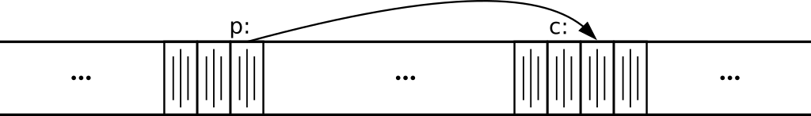
El operador unario & da la direccion de un objeto, de modo que la
proposicion.
p = &c;
asigna la direccion de c a la variable p, y se dice que p
"apunta a" c. El operador & solo se aplica a objetos que estan
en memoria: variables y elementos de arreglos. No puede aplicarse a
expresiones, constantes o variables tipo registro.
El operador unario * es el operador de indireccion o
desreferencia; cuando se aplica a un apuntador, da acceso al
objeto al que señala el apuntador. Supongase que x y y son
enteros e ip es un apuntador a int. Esta secuencia artificial
muestra como declarar un apuntador y como emplear & y *:
int x = 1, y = 2, z[10]; int *ip; /* ip es un apuntador a int */ ip = &x; /* ip ahora apunta a x */ y = *ip; /* y es ahora 1 */ *ip = 0; /* x es ahora 0 */ ip = &z[0]; /* ip ahora apunta a z[0] */
Las declaraciones de x, y y z son lo que hemos visto todo el
tiempo. La declaracion del apuntador ip,
int *ip;
funciona como mnemonico; dice que la expresion *ip es un
int. La sintaxis de la declaracion para una variable imita la
sintaxis de expresiones en las que la variable puede aparecer. Este
razonamiento se aplica tambien a la declaracion de funciones. Por
ejemplo,
double *dp, atoi (char *);
indica que en una expresion *dp y atof(s) tienen valores de
tipo double, y que el argumento de atof es un apuntador a
char.
Tambien se debe notar la implicacion que tiene el hecho de que un apuntador esta restringido a señalar a una clase particular de objeto: cada apuntador señala a un tipo especifico de datos. (Hay una excepcion: un "apuntador a void" se emplea para mantener cualquier tipo de apuntador, pero en si mismo no puede ser desreferenciado. Esto se volvera a tratar en la seccion 5.11.)
Si ip apunta al entero x, entonces *ip puede presentarse en
cualquier contexto donde x pueda hacerlo, asi que
*ip = *ip + 10;
incrementa *ip en 10.
Los operadores unarios * y & se ligan mas estrechamente que los
operadores aritmeticos; asi, la asignacion
y = *ip + 1
toma aquello a lo que apunte ip, le agrega 1, y asigna el
resultado a y, mientras que
*ip += 1
incrementa en uno aquello a que ip apunta, como lo hace
++*ip
y
(*ip)++
Los parentesis son necesarios en este ultimo ejemplo; sin ellos, la
expresion incrementaria ip en lugar de a lo que apunta, debido a
que los operadores unarios como * y ++ se asocian de derecha a
izquierda.
Por ultimo, puesto que los apuntadores son variables, se pueden
emplear sin desreferenciamiento. Por ejemplo, si iq es otro
apuntador a int,
iq = ip
copia el contenido de ip en iq; asi, hace que iq apunte a lo
que ip esta apuntando.
5.2 Apuntadores y argumentos de funciones
Puesto que C pasa los argumentos de funciones por valor, no existe
una forma directa para que la funcion que se invoca altere una
variable de la funcion que la llama. Por ejemplo, una rutina de
ordenamiento podria intercambiar dos elementos desordenados con una
funcion llamada swap. No es suficiente escribir
swap(a, b);
donde la funcion swap esta definida como
void swap(int x, int y) /* INCORRECTO */ { int temp; temp = x; x = y; y = temp; }
Debido a la llamada por valor, swap no puede afectar los
argumentos a y b que estan en la rutina que la llamo. La
funcion anterior solo intercambia copias de a y de b.
La forma de obtener los resultados que se desean es que el programa invocador pase apuntadores a los valores que se cambiaran:
swap(&a, &b);
Puesto que el operador & produce la direccion de una variable,
&a es un apuntador a a. Dentro de la misma funcion swap, los
parametros se declaran para ser apuntadores, y se tiene acceso a
los operandos indirectamente a traves de ellos.
void swap(int *px, int *py) /* intercambia *px y *py */ { int temp; temp = *px; *px = *py; *py = temp; }
Graficamente:
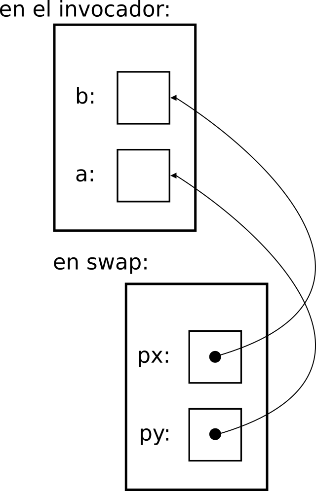
Los argumentos tipo apuntador permiten a una funcion tener acceso y
cambiar objetos que estan en la funcion que la llamo. Como ejemplo,
considere una funcion getint que realiza una conversion de
entrada en formato libre, desglosando un flujo de caracteres en
valores enteros, un entero por llamada. Asi, getint tiene que
regresar el valor encontrado y tambien una señal de fin de archivo
cuando ya no hay mas que tomar. Esos valores tienen que regresarse
por rutas separadas, para que sin importar que valor se emplea para
EOF, tambien pueda ser el valor de un entero de la entrada.
Una solucion es hacer que getint regrese el estado de fin de
archivo como su valor de funcion, usando un argumento apuntador
para almacenar el entero convertido y tenerlo en la funcion
invocadora. Este esquema tambien es utilizado por scanf, como se
vera en la seccion 7.4.
El siguiente ciclo llena un arreglo con enteros por medio de
llamadas a getint:
int n, array[SIZE], getint(int *); for (n = 0; n < SIZE && getint(&array[n]) != EOF; n++ )
Cada llamada pone en array[n] el siguiente entero que se
encuentra a la entrada e incrementa n. Observese que es esencial
pasar la direccion de array[n] a getint. De otra manera no hay
forma de que getint comunique el entero convertido hacia la
funcion invocadora.
Esta version de getint regresa EOF como fin de archivo, cero si
la siguiente entrada no es un numero, y un valor positivo si la
entrada contiene un numero valido.
#include <ctype.h> int getch(void); void ungetch(int); /* getint: obtiene el siguiente entero de la entrada y lo asigna a *pn */ int getint(int *pn) { int c, sign; while (isspace(c = getch())) /* ignora espacios en blanco */ ; if (!isdigit(c) && c != EOF && c != '+' && c != '-') { ungetch(c); /* no es un numero */ return 0; } sign = (c == '-') ? -1 : 1; if (c == '+' || c == '-') c = getch(); for (*pn = 0; isdigit(c); c = getch()) *pn = 10 * *pn + (c - '0'); *pn *= sign; if (c != EOF) ungetch(c); return c; }
A lo largo de getint, *pn se emplea como una variable int
ordinaria. Tambien se utilizo getch y ungetch (descritas en la
seccion 4.3) para que el caracter extra que debe leerse puede
regresar a la entrada.
Ejercicio 5-1. Como se escribio, getint trata a un + o un -
no seguido por un digito como una representacion valida de
cero. Corrijala para que regrese tal caracter a la entrada.
Ejercicio 5-2. Escriba getfloat, la analogia de punto flotante de
getint. ¿Que tipo regresa getfloat como su valor de funcion?
5.3 Apuntadores y arreglos
En C existe una fuerte relacion entre apuntadores y arreglos, tan fuerte que deben discutirse simultaneamente. Cualquier operacion que pueda lograrse por indexacion de un arreglo tambien puede realizarse con apuntadores. La version con apuntadores sera por lo general mas rapida, pero, al menos para los no iniciados, algo mas dificil de entender.
La declaracion
int a[10];
define un arreglo a de tamaño 10, esto es, un bloque de 10 objetos
consecutivos llamados a[0], a[1], …, a[9].
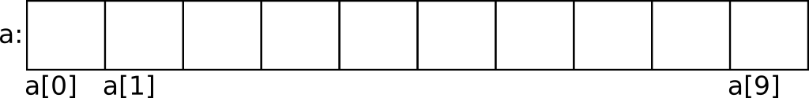
La notacion a[i] se refiere al i-esimo elemento del arreglo. Si pa es un apuntador
a un entero, declarado como
int *pa;
entonces la asignacion
pa = &a[0];
hace que pa apunte al elemento cero de a; esto es, pa
contiene la direccion de a[0].
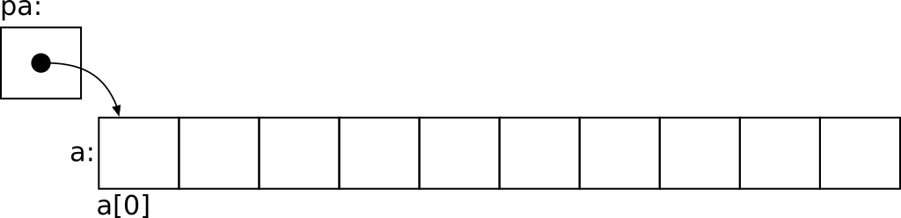
Ahora la asignacion
x = *pa;
copiara el contenido de a[0] en x.
Si pa apunta a un elemento en particular de un arreglo, entonces
por definicion pa + 1 apunta al siguiente elemento, pa + i
apunta i elementos despues de pa, y pa - i apunta i
elementos antes. Asi, si pa apunta a a[0],
*(pa + 1)
se refiere al contenido de a[1], pa + i es la direccion de
a[i] y *(pa + i) es el contenido de a[i].
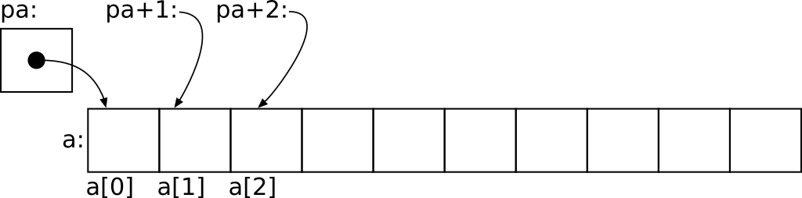
Lo anterior es verdadero sin importar el tipo o tamaño de las
variables del arreglo a. El significado de "agregar 1 a un
apuntador", y por extension, toda la aritmetica de apuntadores, es
que pa + 1 apunta al siguiente objeto, y pa + i apunta al
i-esimo objeto adelante de pa.
La correspondencia entre indexacion y aritmetica de apuntadores es muy estrecha. Por definicion, el valor de una variable o expresion de tipo arreglo es la direccion del elemento cero del arreglo. Asi, que despues de la asignacion
pa = &a[0];
pa y a tienen valores identicos. Puesto que el nombre de un
arreglo es un sinonimo para la localidad del elemento inicial, la
asignacion pa = &a[0] puede escribirse tambien como
pa = a;
Mas sorprendente, al menos a primera vista, es el hecho de que una
referencia a a[i] tambien puede escribirse como *(a + i). Al
evaluar a[i], C la convierte inmediatamente a *(a + i); las dos
formas son equivalentes. Al aplicar el operador & a ambas partes
de esta equivalencia, se deriva que &a[i] y a + i tambien son
identicas: a + i es la direccion del i-esimo elemento delante de
a. Por otra parte, si pa es un apuntador, las expresiones
pueden usarlo con un subindice; pa[i] es identico a *(pa + i).
En resumen, cualquier expresion de arreglo e indice es equivalente
a una opresion escrita como un apuntador y un desplazamiento.
Existe una diferencia entre un nombre de arreglo y un apuntador,
que debe tenerse en mente. Un apuntador es una variable, por esto
pa = a y pa++ son legales. Pero un nombre de arreglo no es una
variable; construcciones como a = pa y a++ son ilegales.
Cuando un nombre de arreglo se pasa a una funcion, lo que se pasa
es la localidad del elemento inicial. Dentro de la funcion que se
llama, este argumento es una variable local, y por lo tanto, un
parametro de nombre de arreglo es un apuntador, esto es, una
variable que contiene una direccion. Se puede utilizar este hecho
para escribir otra version de strlen, que calcula la longitud de
una cadena.
/* strlen: regresa la longitud de la cadena s */ int strlen(char *s) { int n; for (n = 0; *s != '\0'; s++) n++; return n; }
Puesto que s es un apuntador, es perfectamente legal
incrementarlo; s++ no tiene efecto alguno sobre la cadena de
caracteres de la funcion que llamo a strlen, sino que simplemente
incrementa la copia privada del apuntador de strlen. Eso
significa que llamadas como
strlen("hola, mundo"); /* constante de cadena */ strlen(array); /* char array[100]; */ strlen(ptr); /* char *ptr; */
si funcionan.
Puesto que los parametros formales en una definicion de funcion,
char s[];
y
char *s;
son equivalentes, preferimos el ultimo, porque indica mas explicitamente que el parametro es un apuntador. Cuando un nombre de arreglo se pasa a una funcion, esta puede interpretar a su conveniencia que se ha manejado un arreglo o un apuntador, y manipularlo en consecuencia. Puede incluso emplear ambas notaciones si ello lo hace apropiado y claro.
Es posible pasar parte de un arreglo a una funcion, pasando un
apuntador al inicio del subarreglo. Por ejemplo, si a es un
arreglo,
f(&a[2])
y
f(a + 2)
ambas pasan a la funcion f la direccion del subarreglo que inicia
en a[2]. Dentro de f, la declaracion de parametros puede ser
f(int arr[]) { ... }
o
f(int *arr) { ... }
Asi, hasta donde a f le concierne, el hecho de que el parametro se
refiera a parte de un arreglo mas grande no es de consecuencia.
Si se esta seguro de que los elementos existen, tambien es posible
indexar hacia atras en un arreglo; p[-1], p[-2], etc., son
legitimos desde el punto de vista sintactico, y se refieren a
elementos que preceden inmediatamente a p[0]. Por supuesto, es
ilegal hacer referencia a objetos que no esten dentro de los
limites del arreglo.
5.4 Aritmetica de direcciones
Si p es un apuntador a algun elemento de un arreglo, entonces
p++ incrementa p para apuntar al siguiente elemento, y p += i
la incrementa para apuntar i elementos adelante de donde
actualmente lo hace. Esas y otras construcciones semejantes son las
formas mas simples de aritmetica de apuntadores o de direcciones.
El lenguaje C es consistente y regular en su enfoque a la
aritmetica de direcciones; su integracion de apuntadores, arreglos
y aritmetica de direcciones es uno de los aspectos que le dan
fuerza. Lo ilustraremos al escribir un rudimentario asignador de
memoria. Hay dos rutinas: la primera, alloc(n), regresa un
apuntador a n posiciones consecutivas, que pueden ser empleadas
por el invocador de alloc para almacenar caracteres. La segunda,
afree(p), libera el almacenamiento adquirido en esta forma, de
modo que pueda ser reutilizado posteriormente. Las rutinas son
rudimentarias, puesto que las llamadas a afree deben realizarse
en el orden opuesto a las llamadas realizadas a alloc. Es decir,
el almacenamiento manejado por alloc y afree es una pila o
lista del tipo ultimo-que-entra, primero-que-sale. La biblioteca
estandar proporciona funciones analogas llamadas malloc y free
que no tienen tales restricciones; en la seccion 8.7 se mostrara
como se Pueden realizar.
La implantacion mas sencilla es hacer que alloc maneje piezas de
un gran arreglo de caracteres al que llamaremos allocbuf. Este
arreglo esta reservado para alloc y para afree. Puesto que
estas hacen su trabajo con apuntadores, no con indices, ninguna
otra rutina necesita conocer el nombre del arreglo, el cual puede
ser declarado como static en el archivo fuente que contiene a
alloc y a afree, y asi ser invisible hacia afuera. En la
implantacion practica, el arreglo puede incluso no tener un nombre;
podria obtenerse llamando a malloc o pidiendo al sistema
operaiivo un apuntador hacia algun bloque sin nombre de memoria.
La otra informacion necesaria es cuanto de allocbuf se ha
utilizado. Empleamos un apuntador, llamado allocp, que apunta
hacia el siguiente elemento libre. Cuando se requieren n
caracteres a alloc, primero revisa si hay suficiente espacio
libre en allocbuf. Si lo hay, alloc regresa el valor actual de
allocp (esto es, el principio del bloque libre), despues lo
incrementa en n para apuntar a la siguiente area libre. Si no hay
espacio, alloc regresa cero, en tanto que afree(p) simplemente
hace allocp igual a p si p esta dentro de allocbuf.
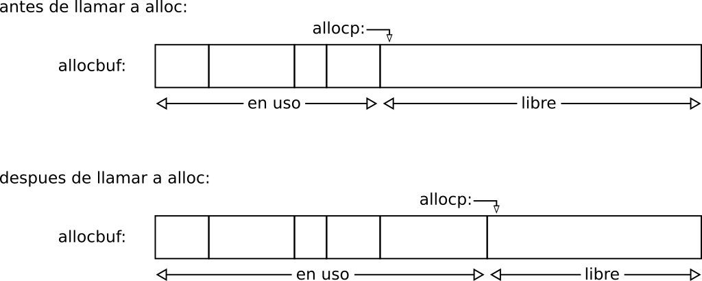
#define ALLOCSIZE 10000 /* tamaño del espacio disponible */ static char allocbuf [ALLOCSIZE]; /* almacenamiento para alloc */ static char *allocp = allocbuf; /* siguiente posicion libre */ char *alloc(int n) /* regresa un apuntador a n caracteres */ { if (allocbuf + ALLOCSIZE - allocp >= n) { /* si cabe */ allocp += n; return allocp - n; /* antigua p */ } else /* no hay suficiente espacio */ return 0; } void afree(char *p) /* almacenamiento libre apuntado por p */ { if (p >= allocbuf && p < allocbuf + ALLOCSIZE) allocp = p; }
En general, un apuntador puede ser inicializado tal como cualquier otra variable, aunque normalmente los unicos valores significativos son cero o una expresion que involucre la direccion de un dato previamente definido y de un tipo apropiado. La declaracion
static char * allocp = allocbuf;
define a allocp como un apuntador a caracteres y lo inicializa para
apuntar al principio de allocbuf, que es la siguiente posicion
libre cuando el programa comienza. Esto tambien podria haberse
escrito
static char * allocp = &allocbuf[0];
puesto que el nombre del arreglo es la direccion del elemento cero.
La prueba
if (allocbuf + ALLOCSIZE - allocp >= n) { /* si cabe */
comprueba si existe suficiente espacio para satisfacer la peticion
de n caracteres. Si lo hay, el nuevo valor de allocp seria,
cuando mucho, uno adelante del fin de allocbuf. Si la peticion
puede satisfacerse, alloc regresa un apuntador al principio de un
bloque de caracteres (notese la declaracion de la funcion). De lo
contrario, alloc debe regresar alguna señal de que no queda
espacio. El lenguaje C garantiza que cero nunca es una direccion
valida para datos y por lo tanto puede usarse un valor de cero como
retorno para señalar un suceso anormal, en este caso, falta de
espacio.
Los apuntadores y los enteros no son intercambiables. Cero es la
unica excepcion: la constante cero puede ser asignada a un
apuntador, y este puede compararse contra la constante cero. La
constante simbolica NULL se emplea con frecuencia en lugar de
cero, como un mnemonico para indicar mas claramente que es un valor
especial para un apuntador. NULL esta definido en <stdio.h>. De
aqui en adelante se utilizara NULL.
Pruebas como
if (allocbuf + ALLOCSIZE - allocp >= n) { /* si cabe */
y
if (p >= allocbuf && p < allocbuf + ALLOCSIZE)
muestran varias facetas importantes de la aritmetica de
apuntadores. Primero, los apuntadores pueden compararse bajo
ciertas circunstancias. Si p y q apuntan a miembros del mismo
arreglo, entonces relaciones como ==, !=, <, >=, etc.,
funcionan correctamente. Por ejemplo,
p < q
es verdadero si p apunta a un elemento que esta antes en el
arreglo de lo que esta al que apunta q. Cualquier apuntador puede
ser comparado por su igualdad o desigualdad con cero. Pero esta
indefinido el comportamiento para la aritmetica o comparaciones con
apuntadores que no apuntan a miembros del mismo arreglo. (Existe
una excepcion: la direccion del primer elemento que esta despues
del fin de un arreglo puede emplearse en aritmetica de
apuntadores.)
Segundo, ya se ha observado que un apuntador y un entero pueden sumarse o restarse. La construccion
p + n
significa la direccion del n-esimo objeto adelante del que apunta
actualmente p. Esto es verdadero sin importar la clase de objeto
al que apunta p; n es escalada de acuerdo con el tamaño de los
objetos a los que apunta p, lo cual esta determinado por la
declaracion de p. Si un int es de cuatro bytes, por ejemplo, la
escala para el int sera de cuatro.
La resta de apuntadores tambien es valida: si p y q apuntan a
elementos del mismo arreglo, y p < q, entonces q - p + 1 es el
numero de elementos desde p hasta q, inclusive. Este hecho
puede usarse para escribir todavia otra version de strlen:
/* strlen: regresa la longitud de la cadena s */ int strlen(char *s) { char *p = s; while (*p != '\0') p++; return p - s; }
En su declaracion, p se inicializa en s, esto es, para apuntar
al primer caracter de la cadena. En el ciclo while, cada caracter
se examina en su turno hasta que al final se encuentra el
'\0'. Debido a que p apunta a caracteres, p++ avanza p al
siguiente caracter cada vez, y p - s da el numero de caracteres
que se avanzaron, esto es, la longitud de la cadena. (El numero de
caracteres en la cadena puede ser demasiado grande como para
almacenarse en un int. El header <stddef.h> define un tipo
ptrdiff_t, que es suficientemente grande para almacenar la
diferencia signada de dos valores apuntadores. Sin embargo, si se
es muy cauteloso, se debe usar size_t para el tipo de retorno de
strlen, para coincidir con la version de la biblioteca estandar,
size_t es el tipo de entero sin signo que regresa el operador
sizeof.)
La aritmetica de apuntadores es consistente: si estuvieramos
tratando con float, que ocupan mas espacio de memoria que los
char, y si p fuera un apuntador a float, p++ avanzaria al
siguiente float. Asi, podemos escribir otra version de alloc
que mantenga floats en lugar de chars, simplemente cambiando de
char a float en todo alloc y afree. Todas las
manipulaciones de apuntadores tomaran automaticamente en cuenta el
tamaño de los objetos apuntados.
Las operaciones validas de apuntadores son asignacion de
apuntadores del mismo tipo, suma y substraccion de un apuntador y
un entero, resta o comparacion de dos apuntadores a miembros del
mismo arreglo, y asignacion o comparacion con cero. Toda otra
aritmetica de apuntadores es ilegal. No es legal sumar dos
apuntadores, multiplicarlos o dividirlos, enmascararlos o
agregarles un float o un double, o aun, excepto para void *,
asignar un apuntador de un tipo a un apuntador de otro tipo sin una
conversion forzosa de tipo.
5.5 Apuntadores a caracteres, y funciones
Una constante de cadena, escrita como
"Soy una cadena"
es un arreglo de caracteres. En la representacion interna, el arreglo termina con el caracter nulo '\0' de tal manera que los programas puedan encontrar el fin. La longitud de almacenamiento es asi uno mas que el numero de caracteres entre las comillas.
Posiblemente la mas comun ocurrencia de cadenas constantes se encuentra como argumentos a funciones, como en
printf("hola, mundo\n");
Cuando una cadena de caracteres como esta aparece en un programa,
el acceso a ella es a traves de un apuntador a caracteres; printf
recibe un apuntador al inicio del arreglo de caracteres. Esto es,
se tiene acceso a una cadena constante por un apuntador a su primer
elemento.
Las cadenas constantes no necesitan ser argumentos de funciones. Si
pmessage se declara como
char * pmessage;
entonces la proposicion
pmessage = "now is the time";
asigna a pmessage un apuntador al arreglo de caracteres. Esta
no es la copia de una cadena; solo concierne a apuntadores. El
lenguaje C no proporciona ningun operador para procesar como unidad
una cadena de caracteres.
Existe una importante diferencia entre estas definiciones:
char amessage[] = "now is the time"; /* arreglo */ char *pmessage = "now is the time"; /* apuntador */
amessage es un arreglo, suficientemente grande como para contener
la secuencia de caracteres y el '\0' que lo inicializa. Se pueden
modificar caracteres individuales dentro del arreglo, pero
amessage siempre se referira a la misma localidad de
almacenamiento. Por otro lado, pmessage es un apuntador,
inicializado para apuntar a una cadena constante; el apuntador
puede modificarse posteriormente para que apunte a algun otro lado,
pero el resultado es indefinido si trata de modificar el contenido
de la cadena.
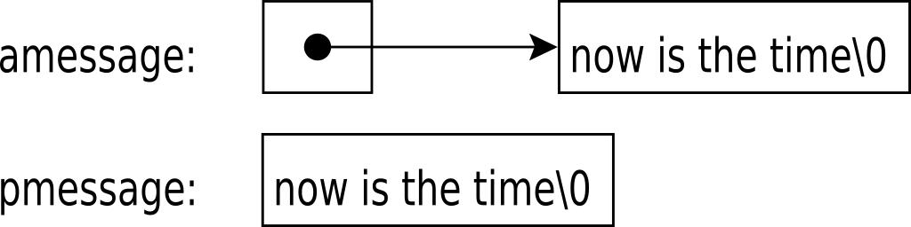
Ilustraremos mas aspectos de los apuntadores y los arreglos,
estudiando versiones de dos utiles funciones adaptadas de la
biblioteca estandar. La primera funcion es strcpy(s,t), que copia
la cadena t a la cadena s. Seria agradable decir simplemente s
= t, pero esto copia el apuntador, no los caracteres. Para copiar
los caracteres se requiere de un ciclo. Primero esta la version con
un arreglo:
/* strcpy: copia t hacia s; version de subindices */ void strcpy(char *s, char *t) { int i; i = 0; while ((s[i] = t[i]) != '\0') i++; }
En contraste, aqui esta una version de strcpy con apuntadores:
/* strcpy: copia t hacia s; version uno con apuntadores */ void strcpy(char *s, char *t) { while ((*s = *t) != '\0') { s++; t++; } }
Puesto que los argumentos se pasan por valor, strcpy puede
utilizar los parametros s y t en la forma que le parezca
mejor. Aqui hay apuntadores convenientemente inicializados, que se
desplazan a lo largo del arreglo un caracter a la vez, hasta que el
'\0' con que termina t se ha copiado a s.
En la practica, strcpy no se escribiria como se mostro
anteriormente. Los programadores expertos de C preferirian
/* strcpy: copia t hacia s; version dos con apuntadores */ void strcpy(char *s, char *t) { while ((*s++ = *t++) != '\0') ; }
Esto traslada el incremento de s y de t hacia dentro de la
parte de prueba del ciclo. El valor de *t++ es el caracter al que
apunta t antes de incrementarse; el ++ postfijo no modifica t
sino hasta despues de que se ha tomado el caracter. En la misma
forma, el caracter se almacena en la posicion anterior de s antes
de que se incremente. Tambien este caracter es el valor contra el
cual se compara '\0' para controlar el ciclo. El efecto real es que
los caracteres se copian de t a s, hasta el '\0' final,
incluyendolo.
Como resumen final, observe que una comparacion contra '\0' es redundante, puesto que la pregunta es simplemente si la expresion es cero. Asi, la funcion podria escribirse correctamente como
/* strcpy: copia t hacia s; version tres con apuntadores */ void strcpy(char *s, char *t) { while (*s++ = *t++) ; }
Aunque esto puede parecer misterioso a primera vista, la conveniencia de esta notacion es considerable, y debe dominarse el estilo, puesto que se encontrara frecuentemente en programas de C.
En la biblioteca estandar (<string.h>) strcpy, devuelve la
cadena objetivo como el valor de la funcion.
La segunda rutina que examinaremos es strcmp(s,t), que compara
las cadenas de caracteres s y t, y regresa un valor negativo,
cero o positivo si s es lexicograficamente menor que, igual a, o
mayor que t. El valor se obtiene al restar los caracteres de la
primera posicion en que s y t no coinciden.
/* strcmp: regresa <0 si s<t, 0 si s == t, >0 si s>t */ int strcmp(char *s, char *t) { int i; for (i = 0; s[i] == t[i]; i++) if (s[i] == '\0') return 0; return s[i] - t[i]; }
version con apuntadores de strcmp:
/* strcmp: regresa <0 si s<t, 0 si s == t, >0 si s>t */ int strcmp(char *s, char *t) { for ( ; *s == *t; s++, t++) if (*s == '\0') return 0; return *s - *t; }
Puesto que ++ y -- son operadores prefijos o postfijos, se
presentan otras combinaciones de *, ++ y --, aunque con menos
frecuencia. Por ejemplo,
*--p
disminuye p antes de traer el caracter al que apunta. En efecto,
la pareja de expresiones
*p++ = val; /* mete val en la pila */ val = *--p; /* saca el tope de la pila y lo pone en val */
son expresiones idiomaticas estandar para meter y sacar algo de una pila; vease la seccion 4.3.
El header <string.h> contiene declaraciones para las funciones
que se mencionan en esta seccion, ademas de una variedad de otras
funciones para manipulacion de cadenas en la biblioteca estandar.
Ejercicio 5-3. Escriba una version con apuntadores de la funcion
strcat que se muestra en el capitulo 2: strcat(s,t) copia la
cadena t al final de s.
Ejercicio 5-4. Escriba la funcion strend(s,t), que regresa 1
si la cadena t se presenta al final de la cadena s, y cero si
no es asi.
Ejercicio 5-5. Escriba versiones de las funciones strncpy,
strncat y strncmp de la biblioteca <string.h>, que operan con
hasta los n primeros caracteres de sus argumentos de cadena. Por
ejemplo, strncpy(s,t,n) copia hasta n caracteres de t hacia
s. En el apendice B se exponen descripciones mas completas.
Ejercicio 5-6. Reescriba apropiadamente los programas y
ejercicios de los capitulos anteriores, empleando apuntadores en
lugar de indices de arreglos. Buenos prospectos son getline
(capitulos 1 y 4), atoi, itoa, y sus variantes (capitulos 2, 3
y 4), reverse (capitulo 3) y strindex y getop (capitulo 4).
5.6 Arreglos de apuntadores; apuntadores a apuntadores
Puesto que en si mismos los apuntadores son variables, pueden
almacenarse en arreglos tal como otras variables. Ilustraremos esto
al escribir un programa que ordena un conjunto de lineas de texto
en orden alfabetico, que es una version restringida del programa
sort de UNIX.
En el capitulo 3 se presento una funcion de ordenamiento Shell que podia ordenar un arreglo de enteros, y en el capitulo 4 se mejoro con un quicksort. El mismo algoritmo funcionara, excepto que ahora se debe tratar con lineas de texto de diferentes longitudes, y que, a diferencia de los enteros, no se pueden comparar ni cambiar en una simple operacion. Se necesita una representacion de datos que maneje eficiente y convenientemente lineas de texto.
Aqui es donde entran los arreglos de apuntadores. Si las lineas que
se van a ordenar se almacenan juntas en un gran arreglo de
caracteres, entonces se puede tener acceso a cada linea por medio
de un apuntador a su primer caracter. Por su lado, los apuntadores
se pueden almacenar en un arreglo. Dos lineas se pueden comparar
pasando sus apuntadores a strcmp. Cuando dos lineas desordenadas
tienen que intercambiarse, se intercambian los apuntadores en el
arreglo de apuntadores, no las lineas de texto.
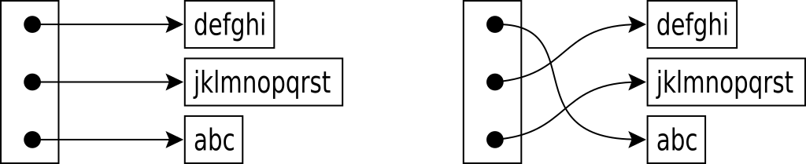
Esto elimina el doble problema de un manejo complicado de almacenamiento y exceso de procesamiento que se produciria al mover las lineas.
El proceso de ordenamiento tiene tres pasos:
lee todas las lineas de entrada ordenalas imprimelas en orden
Como es usual, es mejor dividir el programa en funciones que coincidan con esta division natural, con la rutina principal controlando a las otras funciones. Abandonemos por un momento el paso de ordenamiento, y concentremonos en las estructuras de datos y la entrada y salida.
La rutina de entrada tiene que reunir y guardar los caracteres de
cada linea, y construir un arreglo de apuntadores hacia las
lineas. Tambien debe contar el numero de lineas de entrada, puesto
que esa informacion se requiere para el ordenamiento y la
impresion. Debido a que la funcion de entrada solo puede tratar con
un numero finito de lineas, puede regresar alguna cuenta de lineas
ilegal, como -1, si se presenta demasiado texto a la entrada.
La rutina de salida solo tiene que imprimir las lineas en el orden en que aparecen en el arreglo de apuntadores.
#include <stdio.h> #include <string.h> #define MAXLINES 5000 /* max # de lineas por ordenar */ char *lineptr[MAXLINES]; /* apuntadores a lineas de texto */ int readlines(char *lineptr[], int nlines); void writelines(char *lineptr[], int nlines); void qsort(char *lineptr[], int left, int right); /* ordena lineas de entrada */ main() { int nlines; /* numero de lineas de entrada leidas */ if ((nlines = readlines(lineptr, MAXLINES)) >= 0) { qsort(lineptr, 0, nlines-1); writelines(lineptr, nlines); return 0; } else { printf("error: entrada demasiado grande para ordenarla\n"); return 1; } } #define MAXLEN 1000 /* max longitud de cualquier linea de entrada */ int getline(char *, int); char *alloc(int); /* readlines: lee lineas de entrada */ int readlines(char *lineptr[], int maxlines) { int len, nlines; char *p, line[MAXLEN]; nlines = 0; while ((len = getline(line, MAXLEN)) > 0) if (nlines >= maxlines || (p = alloc(len)) == NULL) return -1; else { line[len-1] = '\0'; /* elimina caracter nueva linea */ strcpy(p, line); lineptr[nlines++] = p; } return nlines; } /* writelines: escribe lineas de salida */ void writelines(char *lineptr[], int nlines) { int i; for (i = 0; i < nlines; i++) printf("%s\n", lineptr[i]); }
La funcion getline se trato en la seccion 1.9.
El principal elemento nuevo es la declaracion para lineptr:
char *lineptr[MAXLINES]
que indica que lineptr es un arreglo de MAXLINES elementos,
cada uno de los cuales es un apuntador a char. Esto es,
lineptr[i] es un apuntador a caracter, y *lineptr[i] es el
caracter al que apunta, el primer caracter de la i-esima linea de
texto almacenada.
Puesto que lineptr es por si mismo el nombre de un arreglo, puede
tratarse como un apuntador en la misma forma que en nuestros
ejemplos anteriores, y writelines puede escribirse en su lugar
como
/* writelines: escribe lineas de salida */ void writelines(char *lineptr[], int nlines) { while (nlines-- > 0) printf("%s\n", *lineptr++); }
Inicialmente *lineptr apunta a la primera linea; cada incremento
lo avanza al siguiente apuntador a linea mientras nlines se
disminuye.
Teniendo la entrada y la salida bajo control, podemos proceder a
ordenar. El quicksort del capitulo 4 necesita solo cambios de poca
importancia: las declaraciones deben modificarse, y la operacion de
comparacion debe hacerse llamando a strcmp. El algoritmo
permanece igual, lo que nos da cierta confianza de que aun
trabajara.
/* qsort: ordena v[left]...v[right] en orden ascendente */ void qsort(char *v[], int left, int right) { int i, last; void swap(char *v[], int i, int j); if (left >= right) /* no hace nada si el arreglo contiene */ return; /* menos de dos elementos */ swap(v, left, (left + right)/2); last = left; for (i = left+1; i <= right; i++) if (strcmp(v[i], v[left]) < 0) swap(v, ++last, i); swap(v, left, last); qsort(v, left, last-1); qsort(v, last+1, right); }
De manera semejante, la rutina de intercambio solo requiere modificaciones poco significativas:
/* swap: intercambia v[i] y v[j] */ void swap(char *v[], int i, int j) { char *temp; temp = v[i]; v[i] = v[j]; v[j] = temp; }
Puesto que cualquier elemento individual de v (alias lineptr)
es un apuntador a caracter, temp tambien debe serlo, de modo que
uno pueda copiarse al otro.
Ejercicio 5-7. Reescriba readlines para almacenar lineas en un
arreglo proporcionado por main, en lugar de llamar a alloc para
obtener espacio de almacenamiento. ¿Cuanto mas rapido es el
programa?
5.7 Arreglos multidimensionales
El lenguaje C proporciona arreglos multidimensionales rectangulares, aunque en la practica se usan menos que los arreglos de apuntadores. En esta seccion mostraremos algunas de sus propiedades.
Considerese el problema de la conversion de fechas, de dia del mes
a dia del año y viceversa. Por ejemplo, el 1 de marzo es el 60° dia
de un año que no es bisiesto, y el 61° dia de uno que si lo
es. Definamos dos funciones para hacer la conversion: day_of_year
convierte mes y dia en el dia del año, y month_day convierte el
dia del año en mes y dia. Puesto que esta ultima funcion calcula
dos valores, los argumentos de mes y dia deben ser apuntadores:
month_day(1988, 60, &m, &d)
hace m igual a 2 y d igual a 29 (29 de febrero).
Ambas funciones necesitan la misma informacion, una tabla de los numeros de dias de cada mes ("treinta dias tiene septiembre …"). Puesto que el numero de dias por mes difiere para años bisiestos y no bisiestos, es mas facil separarlos en dos renglones de un arreglo bidimensional que siga la pista de lo que le pasa a febrero durante los calculos. El arreglo y las funciones que realizan las transformaciones son como se muestra a continuacion:
static char daytab[2][13] = { {0, 31, 28, 31, 30, 31, 30, 31, 31, 30, 31, 30, 31}, {0, 31, 29, 31, 30, 31, 30, 31, 31, 30, 31, 30, 31}, }; /* day_of_year: obtiene dia del año a partir de mes y dia */ int day_of_year(int year, int month, int day) { int i, leap; leap = year%4 == 0 && year%100 != 0 || year%400 == 0; for (i = 1; i < month; i++) day += daytab[leap][i]; return day; } /* month_day: obtiene mes, y dia a partir de dia del año */ void month_day(int year, int yearday, int *pmonth, int *pday) { int i, leap; leap = year%4 == 0 && year%100 != 0 || year%400 == 0; for (i = 1; yearday > daytab[leap][i]; i++) yearday -= daytab[leap][i]; *pmonth = i; *pday = yearday; }
Recuerdese que el valor aritmetico de una expresion logica, como la
de leap, es cero (falso) o uno (verdadero), asi que puede
emplearse como indice del arreglo daytab.
El arreglo daytab tiene que ser externo tanto a day_of_year
como a month_day, para que ambas puedan utilizarlo. Lo hicimos
char para ilustrar un uso legitimo de char para almacenar enteros
pequeños que no son caracteres.
daytab es el primer arreglo de caracteres de dos dimensiones con
el que hemos tratado. En C, un arreglo de dos dimensiones es en
realidad un arreglo unidimensional, cada uno de cuyos elementos es
un arreglo. Por ello, los subindices se escriben como
daytab[i][j] /* [renglon] [columna] */
en lugar de
daytab [i,j] /* INCORRECTO */
Aparte de esta diferencia de notacion, un arreglo de dos dimensiones puede tratarse en forma muy semejante a la de los otros lenguajes. Los elementos se almacenan por renglones, asi que el indice de mas a la derecha, o columna, varia mas rapido cuando se tiene acceso a los elementos en orden de almacenamiento.
Un arreglo se inicializa con una lista de inicializadores entre
llaves; cada renglon de un arreglo de dos dimensiones se inicializa
con una sublista. El arreglo daytab se inicia con una columna de
ceros, de modo que los numeros de mes puedan variar entre 1 y
12 en lugar de 0 a 11. Puesto que el espacio no es apremiante
aqui, esto es mas claro que ajustar los indices.
Si un arreglo de dos dimensiones se pasa a una funcion, la
declaracion de parametros en la funcion debe incluir el numero de
columnas; el numero de renglones es irrelevante, puesto que lo que
se pasa es, como antes, un apuntador a un arreglo de renglones,
donde cada renglon es un arreglo de 13 ints. Es este caso
particular, es un apuntador a objetos que son arreglos de 13
ints. Entonces, si el arreglo daytab se pasara a la funcion f,
la declaracion de f seria:
f(int daytab[2][13]) { ... }
Tambien podria ser
f(int daytab[][13]) { ... }
porque el numero de renglones es irrelevante, o podria ser
f(int (*daytab)[13]){ ... }
que indica que el parametro es un apuntador a un arreglo de 13
enteros. Los parentesis son necesarios, puesto que los corchetes
[] tienen mas alta precedencia que *. Sin parentesis, la
declaracion
int *daytab[13]
es un arreglo de 13 apuntadores a entero. De modo mas general, solo la primera dimension (subindice) de un arreglo queda abierta; todas las otras deben especificarse.
En la seccion 5.12 se discute mas acerca de declaraciones complicadas.
Ejercicio 5-8. No existe deteccion de errores en day_of_year ni
en month_day. Solucione ese defecto.
5.8 Inicializacion de arreglos de apuntadores
Considerese el problema de escribir una funcion month_name(n),
que regrese un apuntador a una cadena de caracteres que contengan
el nombre del n-esimo mes. Esta es una aplicacion ideal para un
arreglo static interno, month_name contiene un arreglo
reservado de cadenas de caracteres, y regresa un apuntador a la
cadena apropiada cuando se llama. Esta seccion muestra como se
inicializa ese arreglo de nombres.
La sintaxis es semejante a la de inicializaciones previas:
/* month_name: regresa el nombre del n-esimo mes */ char *month_name(int n) { static char *name[] = { "Mes ilegal", "Enero", "Febrero", "Marzo", "Abril", "Mayo", "Junio", "Julio", "Agosto", "Septiembre", "Octubre", "Noviembre", "Diciembre" }; return (n < 1 || n > 12 ) ? name[0]; name[n]; }
La declaracion de name, que es un arreglo de apuntadores a
caracteres, es la misma que la de lineptr en el ejemplo del
ordenamiento. El inicializador es una lista de cadenas de
caracteres; cada una se asigna a la posicion correspondiente dentro
del arreglo. Los caracteres de la i-esima cadena se colocan en
algun lugar, y en name[i] se almacena un apuntador a
ellos. Puesto que el tamaño del arreglo name no esta
especificado, el compilador cuenta los inicializadores y completa
el numero correcto.
5.9 Apuntadores vs. arreglos multidimensionales
Los nuevos usuarios de C algunas veces se confunden con la
diferencia entre un arreglo de dos dimensiones y uno de
apuntadores, como name en el ejemplo anterior. Dadas las
definiciones
int a[10][20]; int *b[10];
entonces tanto a[3][4] como b[3][4] son referencias
sintacticamente legitimas a un unico int. Pero a es
verdaderamente un arreglo de dos dimensiones: se le han asignado
200 localidades de tamaño de un int, y se emplea el calculo
convencional de subindices rectangulares 20 * renglon + columna
para encontrar elemento a[renglon,columna]. Para b, sin
embargo, la definicion solo asigna 10 apuntadores y no los
inicializa; la inicializacion debe realizarse en forma explicita,
ya sea estaticamente o con codigo. Suponiendo que cada elemento de
b apunta a un arreglo de veinte elementos, entonces existiran
200 ints reservados, mas diez celdas para los apuntadores. La
ventaja importante del arreglo de apuntadores es que los renglones
del arreglo pueden ser de longitudes diferentes. Esto es, no es
necesario que cada elemento de b apunte a un vector de veinte
elementos; alguno puede apuntar a dos elementos, otro a cincuenta y
algun otro a ninguno.
Aunque hemos basado esta discusion en terminos de enteros, el uso
mas frecuente de arreglos de apuntadores es para almacenar cadenas
de caracteres de longitudes diversas, como en la funcion
month_name. Compare la declaracion y la grafica para un arreglo
de apuntadores:
char *name[] = { "Mes ilegal", "Ene", "Feb", "Mar" };
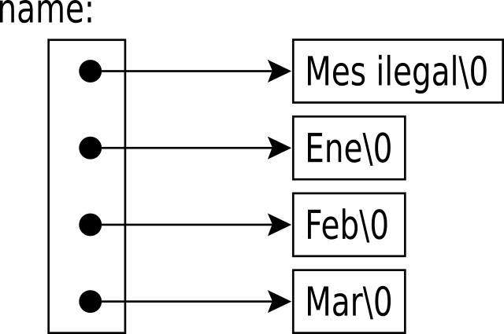
con la de un arreglo bidimensional:
char aname[][15] = { "Mes ilegal", "Ene", "Feb", "Mar" };
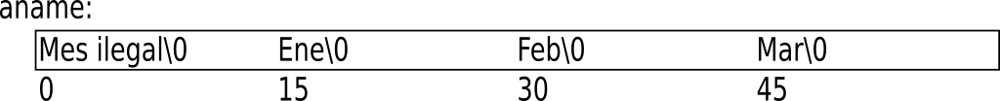
Ejercicio 5-9. Reescriba las rutinas day_of_year y month_day
empleando apuntadores en lugar de indices.
5.10 Argumentos en la linea de ordenes
Dentro de un medio ambiente que maneje C hay una forma de pasar
argumentos o parametros en la linea de ordenes a un programa cuando
empieza su ejecucion. Cuando se llama a main se le invoca con dos
argumentos. El primero (llamado por convencion argc, por
argument count) es el numero de argumentos en la linea de ordenes
con los que se invoco el programa; el segundo (argv,por argument
vector) es un apuntador a un arreglo de cadenas de caracteres que
contiene los argumentos, uno por cadena. Se acostumbra utilizar
niveles multiples de apuntadores para manipular esas cadenas de
caracteres.
El ejemplo mas sencillo es el programa echo, que despliega sus
argumentos de la linea de ordenes en una linea, separados por
blancos. Esto es, la orden
echo hola, mundo
imprime
hola, mundo
Por convencion, argv[0] es el nombre con el que se invoco el
programa, por lo que argc es por lo menos 1. Si argc es 1,
entonces no hay argumentos en la linea despues del nombre del
programa. En el ejemplo anterior, argc es 3, y argv[0],
argv[1] y argv[2] son "echo", "hola," y "mundo",
respectivamente. El primer argumento optativo es argv[1] y el
ultimo es argv[argc - 1]; ademas, el estandar requiere que
argv[argc] sea un apuntador nulo.
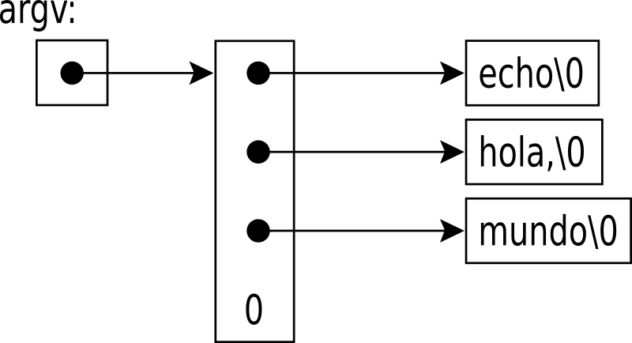
La primera version de echo trata a argv como un arreglo de
apuntadores a caracteres:
#include <stdio.h> /* eco de los argumentos de la linea de ordenes; 1a. version */ main(int argc, char *argv[]) { int i; for (i = 1; i < argc; i++) printf("%s%s", argv[i], (i < argc-1) ? " " : ""); printf("\n"); return 0; }
Como argv es un apuntador a un arreglo de apuntadores, se pueden
manipular al apuntador en lugar de indexar al arreglo. Esta
siguiente variacion se basa en incrementar argv, que es un
apuntador a un apuntador a char, en tanto se disminuye argc:
#include <stdio.h> /* eco de los argumentos de la linea de ordenes; 2a. version */ main(int argc, char *argv[]) { while (--argc > 0) printf("%s%s", *++argv, (argc > 1) ? " " : ""); printf("\n"); return 0; }
Puesto que argv es un apuntador al inicio del arreglo de cadenas
de argumentos, incrementarlo en 1 (++argv) lo hace apuntar hacia
argv[1] en lugar de apuntar a argv[0]. Cada incremento sucesivo
lo mueve al siguiente argumento; entonces *argv es el apuntador a
ese argumento. Al mismo tiempo, argc disminuye; cuando llega a
cero, no quedan argumentos por imprimir.
En forma alternativa, podemos escribir la proposicion printf como
printf((argc > 1) ? "%s " : "%s", *++argv);
Esto demuestra que el argumento de formato del printf tambien
puede ser ser una expresion.
Como un segundo ejemplo, hagamos algunas mejoras al programa de la
seccion 4.1 que encuentra un patron. Si se recuerda, se fijo el
patron de busqueda en lo profundo del programa, un esquema que
obviamente no es satisfactorio. Siguiendo la guia del programa
grep de UNIX, cambiemos el programa de modo que el patron que se
debe encontrar se especifique por el primer argumento en la linea
de ordenes.
#include <stdio.h> #include <string.h> #define MAXLINE 1000 int getline(char *line, int max); /* find: imprime lineas que coinciden con el patron del 1er. argumento */ main(int argc, char *argv[]) { char line[MAXLINE]; int found = 0; if (argc != 2) printf("Usage: find pattern\n"); else while (getline(line, MAXLINE) > 0) if (strstr(line, argv[1]) != NULL) { printf("%s", line); found++; } return found; }
La funcion strstr(s,t) de la biblioteca estandar regresa un
apuntador a la primera ocurrencia de la cadena t dentro de la
cadena s, o NULL si no existe. La funcion esta declarada en
<string.h>.
Ahora se puede extender el modelo para ilustrar construcciones adicionales de apuntadores. Suponga que deseamos permitir dos argumentos optativos. Uno indica "imprime todas las lineas excepto aquellas que coincidan con el patron"; el segundo dice "precede cada linea impresa con su numero de linea".
Una convencion comun para programas en C en sistemas UNIX es que un
argumento que inicia con un signo de menos introduce una bandera o
parametro optativo. Si seleccionamos -x (por "excepto") para
indicar la inversion, y -n ("numero") para solicitar la
numeracion de lineas, entonces la orden
find -x -n patron
imprimira cada linea que no coincida con el patron, precedida por su numero de linea.
Los argumentos para opciones deben ser permitidos en cualquier orden, y el resto del programa debe ser independiente del numero de argumentos que estuvieran presentes. Ademas, es conveniente para los usuarios que los argumentos de las opciones puedan combinarse, como en
find -nx patron
Aqui esta el programa:
#include <stdio.h> #include <string.h> #define MAXLINE 1000 int getline(char *line, int max); /* find: imprime lineas que coinciden con el patron del 1er. argumento */ main(int argc, char *argv[]) { char line[MAXLINE]; long lineno = 0; int c, except = 0, number = 0, found = 0; while (--argc > 0 && (*++argv)[0] == '-') while (c = *++argv[0]) switch (c) { case 'x': except = 1; break; case 'n': number = 1; break; default: printf("find: illegal option %c\n", c); argc = 0; found = -1; break; } if (argc != 1) printf("Usage: find -x -n pattern\n"); else while (getline(line, MAXLINE) > 0) { lineno++; if ((strstr(line, *argv) != NULL) != except) { if (number) printf("%ld:", lineno); printf("%s", line); found++; } } return found; }
argc se disminuye y argv se incrementa antes de cada argumento
opcional. Al final del ciclo, si no hay errores, argc dice
cuantos argumentos permanecen sin procesar y argv apunta al
primero de estos. Asi, argc debe ser 1 y *argv debe apuntar
al patron. Notese que *++argv es un apuntador a un argumento tipo
cadena, asi que (*++argv)[0] es su primer caracter. (Una forma
alternativa valida seria **++argv.) Debido a que [] tiene mas
prioridad que * y que ++, los parentesis son necesarios; sin
ellos, la expresion seria tomada como *++(argv[0]). En efecto,
esto es lo que empleamos en el ciclo mas interno, donde la tarea es
proceder a lo largo de una cadena especifica de argumentos. En el
ciclo mas interno, la expresion *++argv[0] incrementa el
apuntador argv[0]
Es raro que se empleen expresiones con apuntadores mas complicadas que estas; en tal caso, sera mas intuitivo separarlas en dos o tres pasos.
Ejercicio 5-10. Escriba el programa expr, que evalua una
expresion polaca inversa de la linea de ordenes, donde cada
operador u operando es un argumento por separado. Por ejemplo,
expr 2 3 4 + *
se evalua como 2 x (3 + 4).
Ejercicio 5-11. Modifique el programa entab y detab (escritos
como ejercicios en el capitulo 1) para que acepten una lista de
puntos de tabulacion como argumentos. Utilice los tabuladores
habituales si no hay argumentos.
Ejercicio 5-12. Extienda entab y detab de modo que acepten la
abreviatura
entab -m +n
que indica puntos de tabulacion cada n columnas, iniciando en la
columna m. Seleccione el comportamiento por omision mas
conveniente (para el usuario).
Ejercicio 5-13. Escriba el programa tail, que imprime las ultimas
n lineas de su entrada. Por omision, n es 10, digamos, pero puede
modificarse con un argumento optativo, de modo que
tail -n
imprime las ultimas n lineas. El programa debe comportarse en
forma racional sin importar cuan poco razonable sea la entrada o el
valor de n. Escriba el programa de manera que haga el mejor uso
de la memoria disponible; las lineas deben almacenarse como en el
programa de ordenamiento de la seccion 5.6, no en un arreglo de dos
dimensiones de tamaño fijo.
5.11 Apuntadores a funciones
En C, una funcion por si sola no es una variable, pero es posible
definir apuntadores a funciones, que pueden asignarse, ser
colocados en arreglos, pasados a funciones, regresados por
funciones y otras cosas mas. Ilustraremos esto modificando el
procedimiento de ordenamiento descrito anteriormente en este
capitulo, de modo que si se da el argumento opcional -n, ordenara
las lineas de entrada numericamente en lugar de lexicograficamente.
Frecuentemente un ordenamiento consiste de tres partes – una comparacion que determina el orden de cualquier par de objetos, un intercambio que invierte su orden, y un algoritmo de ordenamiento que realiza comparaciones e intercambios hasta que los objetos esten en orden. El algoritmo de ordenamiento es independiente de las operaciones de comparacion e intercambio; asi, al pasarle diferentes funciones de comparacion e intercambio, se pueden obtener clasificaciones con diferentes criterios. Esta es la tactica que se sigue en nuestro nuevo metodo.
La comparacion lexicografica de dos lineas es realizada por
strcmp, como antes; tambien requeriremos de una rutina numcmp
que compare el valor numerico de dos lineas y regrese la misma
clase de indicacion que hace strcmp. Estas funciones se declaran
antes de main, y a qsort se le pasa un apuntador a la funcion
apropiada. Se ha hecho un procesamiento deficiente de los errores
en los argumentos, con el fin de concentrarnos en los elementos
principales.
#include <stdio.h> #include <string.h> #define MAXLINES 5000 /* max # de lineas a ordenar */ char *lineptr[MAXLINES]; /* apuntadores a lineas de texto */ int readlines(char *lineptr[], int nlines); void writelines(char *lineptr[], int nlines); void qsort(void *lineptr[], int left, int right, int (*comp)(void *, void *)); int numcmp(char *, char *); /* ordena lineas de entrada */ main(int argc, char *argv[]) { int nlines; /* numero de lineas de entrada leidas */ int numeric = 0; /* 1 si es ordenamiento numerico */ if (argc > 1 && strcmp(argv[1], "-n") == 0) numeric = 1; if ((nlines = readlines(lineptr, MAXLINES)) >= 0) { qsort((void**) lineptr, 0, nlines-1, (int (*)(void*,void*))(numeric ? numcmp : strcmp)); writelines(lineptr, nlines); return 0; } else { printf("entrada demasiado grande para ser ordenada\n"); return 1; } }
En la llamada a qsort, strcmp y numcmp son direcciones de
funciones. Como se sabe que son funciones, el operador & no es
necesario, en la misma forma que no es necesario antes del nombre
de un arreglo.
Hemos escrito qsort de modo que pueda procesar cualquier tipo de
dato, no solo cadenas de caracteres. Como se indica por la funcion
prototipo, qsort espera un arreglo de apuntadores, dos enteros y
una funcion con dos argumentos de tipo apuntador. Para los
argumentos apuntadores se emplea el tipo de apuntador generico
void *. Cualquier apuntador puede ser forzado a ser void * y
regresado de nuevo sin perdida de informacion, de modo que podemos
llamar a qsort forzando los argumentos a void *. El elaborado
cast del argumento de la funcion fuerza los argumentos de la
funcion de comparacion. Esto generalmente no tendra efecto sobre la
representacion real, pero asegura al compilador que todo este bien.
/* qsort: clasifica v[left]...v[right] en orden ascendente */ void qsort(void *v[], int left, int right, int (*comp)(void *, void *)) { int i, last; void swap(void *v[], int, int); if (left >= right) /* no hace nada si el arreglo contiene */ return; /* menos de dos elementos */ swap(v, left, (left + right)/2); last = left; for (i = left+1; i <= right; i++) if ((*comp)(v[i], v[left]) < 0) swap(v, ++last, i); swap(v, left, last); qsort(v, left, last-1, comp); qsort(v, last+1, right, comp); }
Las declaraciones deben estudiarse con cuidado. El cuarto parametro
de qsort es
int (*comp) (void *, void *)
que indica que comp es un apuntador a una funcion que tiene dos
argumentos void * y regresa un int.
El uso de comp en la linea
if ((*comp) (v[i], v[left] < 0)
es consistente con la declaracion: comp es un apuntador a una
funcion, *comp es la funcion, y
(*comp) (v[i], v[left])
es la llamada a ella. Los parentesis son necesarios para que los componentes sean correctamente asociados; sin ellos,
int *comp(void *, void *) /* INCORRECTO */
indica que comp es una funcion que regresa un apuntador a int,
lo cual es muy diferente.
Ya hemos mostrado strcmp, que compara dos cadenas. Aqui esta
numcmp, que compara dos cadenas numericamente, valor que se
calcula llamando a atof:
#include <stdlib.h> /* numcmp: compara s1 y s2 numericamente */ int numcmp(char *s1, char *s2) { double v1, v2; v1 = atof(s1); v2 = atof(s2); if (v1 < v2) return -1; else if (v1 > v2) return 1; else return 0; }
La funcion swap, que intercambia dos apuntadores, es identica a
la que presentamos anteriormente en este capitulo, excepto en que
las declaraciones se han cambiado a void *.
void swap(void *v[], int i, int j) { void *temp; temp = v[i]; v[i] = v[j]; v[j] = temp; }
Puede agregarse una variedad de otras opciones al programa de ordenamiento; algunas se convierten en ejercicios interesantes.
Ejercicio 5-14. Modifique el programa de ordenamiento de modo que
maneje una bandera -r, que indica ordenar en orden inverso
(descendente). Asegurese de que -r, trabaja con -n.
Ejercicio 5-15. Agregue la opcion -f para igualar las letras
mayusculas y minusculas, de modo que no se haga distincion entre
ellas durante el ordenamiento; por ejemplo, al comparar, a y A
son iguales.
Ejercicio 5-16. Agregue la opcion -d ("orden de directorio"),
que compara solo letras, numeros y blancos. Asegurese de que
trabaja en conjuncion con -f.
Ejercicio 5-17. Agregue capacidad de manejo de campos, para que
el ordenamiento se haga sobre campos de las lineas, cada campo
ordenado de acuerdo con un conjunto independiente de opciones. (El
indice de este libro fue ordenado con -df para las entradas y
-n para los numeros de pagina.)
5.12 Declaraciones complicadas
Al lenguaje C se le reprueba algunas veces por la sintaxis de sus declaraciones, particularmente las que involucran apuntadores a funciones. En la sintaxis hay un intento de hacer que coincidan las declaraciones con su uso; trabaja bien para casos simples, pero puede ser confusa para los dificiles, debido a que las declaraciones no pueden leerse de izquierda a derecha, y debido al exceso de uso de parentesis. La diferencia entre
int *f(); /* f: funcion que regresa un apuntador a int */
y
int (*pf)(); /* pf: apuntador a una funcion que regresa un int */
ilustra el problema: * es un operador prefijo y tiene menor
precedencia que (), de modo que los parentesis son necesarios
para obligar a una asociacion apropiada.
Aunque en la practica es extraño que aparezcan declaraciones
verdaderamente complicadas, es importante saber como entenderlas y,
si es necesario, como crearlas. Una buena forma de sintetizar
declaraciones es en pequeños pasos con typedef, que se discute en
la seccion 6.7. Como una alternativa, en esta seccion presentaremos
un par de programas que convierten de C valido a una descripcion
verbal y viceversa. La descripcion verbal se lee de izquierda a
derecha.
La primera, dcl, es la mas compleja. Convierte una declaracion de
C en una descripcion hecha con palabras, como en estos ejemplos:
char **argv
argv: pointer to char
int (*daytab)[13]
daytab: pointer to array[13] of int
int *daytab[13]
daytab: array[13] of pointer to int
void *comp()
comp: function returning pointer to void
void (*comp)()
comp: pointer to function returning void
char (*(*x())[])()
x: function returning pointer to array[] of
pointer to function returning char
char (*(*x[3])())[5]
x: array[3] of pointer to function returning
pointer to array[5] of char
dcl esta basada en la gramatica que especifica un declarador, que
se define en forma precisa en el apendice A, seccion 8.5; esta es
una forma simplificada:
dcl: optional *'s direct-dcl
direct-dcl: name
(dcl)
direct-dcl()
direct-dcl[optional size]
Con palabras, una dcl es una dcl-directa, tal vez precedido por
*s. Una dcl-directa es un nombre, o una dcl entre parentesis,
o una dcl-directa seguida por parentesis, o una dcl-directa
seguida por corchetes con un tamaño optativo.
Esta gramatica puede emplearse para reconocer declaraciones. Por ejemplo, considere este declarador:
(*pfa[]) ()
pfa se identificara como un nombre y por ende como una
dcl-directa. Entonces pfa[] es tambien una dcl-directa. Luego
*pfa[] se reconoce como una dcl, de modo que (*pfa[]) es una
dcl-directa. Entonces (*pfa[])() es una dcl-directa y por
tanto una dcl. Tambien podemos ilustrar el analisis con un arbol
de estructura gramatical como este (en donde dcl-directa se ha
abreviado como dcl-dir):
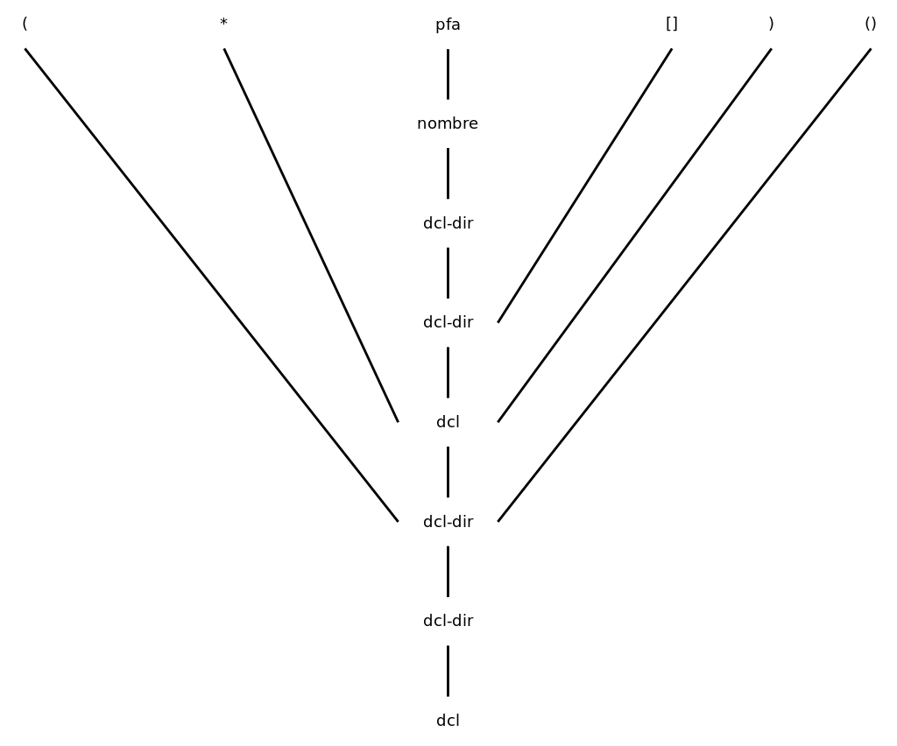
El corazon del programa del es un par de funciones, dcl y
dirdcl, que describen una declaracion de acuerdo con esta
gramatica. Debido a que la gramatica esta definida recursivamente,
las funciones se llaman recursivamente una a la otra, mientras
reconocen piezas de una declaracion; el programa se conoce como
analizador sintactico por descenso recursivo.
/* dcl: reconoce una declaracion */ void dcl(void) { int ns; for (ns = 0; gettoken() == '*'; ) /* cuenta *'s */ ns++; dirdcl(); while (ns-- > 0) strcat(out, " apuntador a"); } /* dirdcl: reconoce un declarador directo */ void dirdcl(void) { int type; if (tokentype == '(') { /* ( dcl ) */ dcl(); if (tokentype != ')') printf("error: falta )\n"); } else if (tokentype == NAME) /* nombre de variable */ strcpy(name, token); else printf("error: nombre o (dcl) esperado\n"); while ((type=gettoken()) == PARENS || type == BRACKETS) if (type == PARENS) strcat(out, " funcion que regresa"); else { strcat(out, " arreglo"); strcat(out, token); strcat(out, " de"); } }
Puesto que se intenta que el programa sea ilustrativo, no a prueba
de balas, hay restricciones sobre dcl, que solo puede manejar un
tipo simple de datos como char o int. No maneja tipos de
argumentos dentro de funciones, o calificadores como const. Los
espacios en blanco inadecuados lo confunden. No se recupera mucho
ante los errores, de modo que las declaraciones invalidas tambien
lo confunden. Esas mejoras se dejan como ejercicios.
Aqui estan las variables globales y la rutina principal:
#include <stdio.h> #include <string.h> #include <ctype.h> #define MAXTOKEN 100 enum { NAME, PARENS, BRACKETS }; void dcl(void); void dirdcl(void); int gettoken(void); int tokentype; /* tipo del ultimo token */ char token[MAXTOKEN]; /* cadena del ultimo token */ char name[MAXTOKEN]; /* nombre del identificador */ char datatype[MAXTOKEN]; /* tipo de dato = char, int, etc. */ char out[1000]; /* cadena de salida */ main() /* convierte una declaracion a palabras */ { while (gettoken() != EOF) { /* 1er. token en la linea */ strcpy(datatype, token); /* es el tipo de dato */ out[0] = '\0'; dcl(); /* reconoce el resto de la linea */ if (tokentype != '\n') printf("error de sintaxis\n"); printf("%s: %s %s\n", name, out, datatype); } return 0; }
La funcion gettoken ignora blancos y tabuladores, y encuentra el
siguiente token de la entrada; un "token" es un nombre, un par de
parentesis, un par de corchetes que tal vez incluyen un numero, o
cualquier otro caracter simple.
int gettoken(void) /* regresa el siguiente token */ { int c, getch(void); void ungetch(int); char *p = token; while ((c = getch()) == ' ' || c == '\t') ; if (c == '(') { if ((c = getch()) == ')') { strcpy(token, "()"); return tokentype = PARENS; } else { ungetch(c); return tokentype = '('; } } else if (c == '[') { for (*p++ = c; (*p++ = getch()) != ']'; ) ; *p = '\0'; return tokentype = BRACKETS; } else if (isalpha(c)) { for (*p++ = c; isalnum(c = getch()); ) *p++ = c; *p = '\0'; ungetch(c); return tokentype = NAME; } else return tokentype = c; }
getch y ungetch se discutieron en el capitulo 4.
Es mas facil ir en la direccion inversa, especialmente si no nos
preocupamos por la generacion de parentesis redundantes. El
programa undcl convierte una descripcion verbal como "x es una
funcion que regresa un apuntador a un arreglo de apuntadores a
funciones que regresan char", que se expresara como
x () * [] * () char
y se convertira en
char (*(*x())[])()
La sintaxis abreviada de la entrada nos permite reutilizar a la
funcion gettoken. La funcion undcl tambien emplea las mismas
variables externas que dcl.
int main(){ int type; char temp[ MAXTOKEN ]; while( gettoken() != EOF ){ out[ 0 ] = '\0'; strcpy( out, token ); while( (type = gettoken()) != '\n' ) if( type == PARENS || type == BRACKETS ) strcat( out, token ); else if( type == '*' ){ sprintf( temp, "(*%s)", out ); strcpy( out, temp ); } else if( type == NAME ){ sprintf( temp, "%s %s", token, out ); strcpy( out, temp ); } else printf( "entrada invalida en %s\n", token ); printf( "\n%s\n", out ); } return 0; }
Ejercicio 5-18. Haga que dcl se recupere de errores en la entrada.
Ejercicio 5-19. Modifique undcl de modo que no agregue
parentesis redundantes a las declaraciones.
Ejercicio 5-20. Extiende dcl para que maneje declaraciones con
tipos de argumentos de funciones, calificadores como const,
etcetera.
capitulo 6: Estructura
Una estructura es una coleccion de una o mas variables, de tipos posiblemente diferentes, agrupadas bajo un solo nombre para manejo conveniente. (Las estructuras se conocen como "records" en algunos otros lenguajes, principalmente Pascal.) Las estructuras ayudan a organizar datos complicados, en particular dentro de programas grandes, debido a que permiten que a un grupo de variables relacionadas se les trate como una unidad en lugar de como entidades separadas.
Un ejemplo tradicional de estructura es el registro de una nomina: un empleado esta descrito por un conjunto de atributos, como nombre, domicilio, numero del seguro social, salario, etc. Algunos de estos atributos pueden, a su vez, ser estructuras: un nombre tiene varios componentes, como los tiene un domicilio y aun un salario. Otro ejemplo, mas tipico para C, procede de las graficas: un punto es un par de coordenadas, un rectangulo es un par de puntos, y otros casos semejantes.
El principal cambio realizado por el estandar ANSI es la definicion de la asignacion de estructuras – las estructuras se pueden copiar y asignar, pasar a funciones y ser regresadas por funciones. Esto ha sido manejado por muchos compiladores durante varios años, pero las propiedades estan ahora definidas en forma precisa. Las estructuras y los arreglos automaticos ahora tambien se pueden inicializar.
6.1 Conceptos basicos sobre estructuras
Definamos algunas estructuras propias para graficacion. El objeto
basico es un punto, del cual supondremos que tiene una coordenada
x y una coordenada y, ambas enteras.
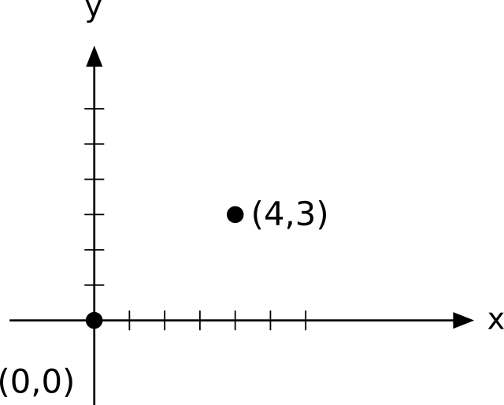
Los dos componentes pueden ser colocados en una estructura declarada asi:
struct point { int x; int y; };
La palabra reservada struct presenta la declaracion de una
estructura, que es una lista de declaraciones entre llaves. Un
nombre optativo, llamado etiqueta de estructura, puede seguir a
la palabra struct (como aqui lo hace point). La etiqueta da
nombre a esta clase de estructura, y en adelante puede ser
utilizado como una abreviatura para la parte de declaraciones entre
llaves.
Las variables nombradas dentro de la estructura se llaman miembros. Un miembro de estructura, y una variable ordinaria (esto es, no miembro) pueden tener el mismo nombre sin conflicto, puesto que siempre se pueden distinguir por el contexto. Ademas, en diferentes estructuras pueden encontrarse los mismos nombres de miembros, aunque por cuestiones de estilo se deberian de usar los mismos nombres solo para objetos estrechamente relacionados.
Una declaracion struct define un tipo. La llave derecha que
termina la lista de miembros puede ser seguida por una lista de
variables, como se hace para cualquier tipo basico. Esto es,
struct { ... } x, y, z;
es sintacticamente analogo a
int x, y, z;
en el sentido de que cada proposicion declara a x, y y z como
variables del tipo nombrado y causa que se les reserve espacio
contiguo.
Una declaracion de estructura que no esta seguida por una lista de
variables no reserva espacio de almacenamiento sino que simplemente
describe una plantilla o la forma de una estructura. Sin embargo,
si la declaracion esta etiquetada, la etiqueta se puede emplear
posteriormente en definiciones de instancias de la estructura. Por
ejemplo, dada la declaracion anterior de point,
struct point pt;
define una variable pt que es una estructura de tipo struct
point. Una estructura se puede inicializar al seguir su definicion
con una lista de inicializadores, cada uno una expresion constante,
para los miembros:
struct point maxpt = { 320, 200 };
Una estructura automatica tambien se puede inicializar por asignacion o llamando a una funcion que regresa una estructura del tipo adecuado.
Se hace referencia a un miembro de una estructura en particular en una expresion con una construccion de la forma
nombre-estructura.miembro
El operador miembro de estructura "." conecta al nombre de la
estructura con el nombre del miembro. Por ejemplo, para imprimir
las coordenadas del punto pt,
printf("%d,%d", pt.x, pt.y);
o para calcular la distancia del origen (0,0) a pt,
double dist, sqrt(double); dist = sqrt((double)pt.x * pt.x + (double)pt.y * pt.y);
Las estructuras pueden anidarse. Una representacion de un rectangulo es como un par de puntos que denotan las esquinas diagonalmente opuestas:
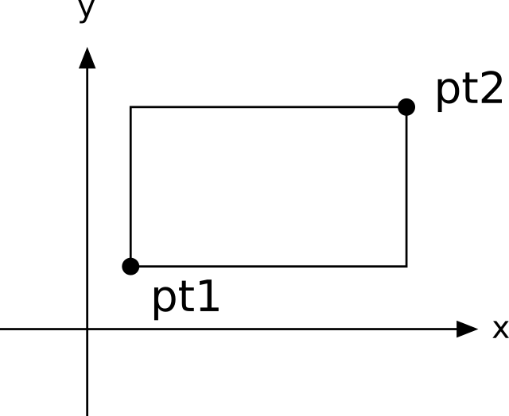
struct rect { struct point ptl; struct point pt2; };
La estructura rect contiene dos estructuras point. Si
declaramos screen como
struct rect screen;
entonces
screen.pt1.x
se refiere a la coordenada x del miembro pt1 de screen.
6.2 Estructuras y funciones
Las unicas operaciones legales sobre una estructura son copiarla o
asignarla como unidad, tomar su direccion con &, y tener acceso a
sus miembros. La copia y la asignacion incluyen pasarlas como
argumentos a funciones y tambien regresar valores de funciones. Las
estructuras no se pueden comparar. Una estructura se puede
inicializar con una lista de valores constantes de miembros; una
estructura automatica tambien se puede inicializar con una
asignacion.
Investiguemos las estructuras escribiendo algunas funciones para manipular puntos y rectangulos. Hay por lo menos tres acercamientos posibles: pasar separadamente los componentes, pasar una estructura completa o pasar un apuntador a ella. Cada uno tiene sus puntos buenos y malos.
La primera funcion, makepoint, toma dos enteros y regresa una
estructura point:
/* makepoint: crea un punto con las componentes x, y */ struct point makepoint(int x, int y) { struct point temp; temp.x = x; temp.y = y; return temp; }
Notese que no hay conflicto entre el nombre del argumento y el miembro con el mismo nombre; incluso la reutilizacion de los nombres refuerza el vinculo.
makepoint ahora se puede usar para inicializar dinamicamente
cualquier estructura, o para proporcionar los argumentos de la
estructura a una funcion:
struct rect screen; struct point middle; struct point makepoint(int, int); screen.pt1 = makepoint(0, 0); screen.pt2 = makepoint(XMAX, YMAX); middle = makepoint((screen.pt1.x + screen.pt2.x)/2, (screen.pt1.y + screen.pt2.y)/2);
El siguiente paso es un conjunto de funciones para hacer operaciones aritmeticas sobre los puntos. Por ejemplo,
/* addpoint: suma dos puntos */ struct point addpoint(struct point p1, struct point p2){ p1.x += p2.x; p1.y += p2.y; return p1; }
Aqui, tanto los argumentos como el valor de retorno son
estructuras. Incrementamos los componentes en p1 en lugar de
utilizar explicitamente una variable temporal para hacer enfasis en
que los parametros de la estructura son pasados por valor como
cualesquiera otros.
Como otro ejemplo, la funcion ptinrect prueba si un punto esta
dentro de un rectangulo, donde hemos adoptado la convencion de que
un rectangulo incluye sus lados izquierdo e inferior pero no sus
lados superior y derecho:
/* ptinrect: regresa 1 si p esta en r, 0 si no lo esta */ int ptinrect(struct point p, struct rect r) { return p.x >= r.pt1.x && p.x < r.pt2.x && p.y >= r.pt1.y && p.y < r.pt2.y; }
Esto supone que el rectangulo esta representado en una forma
estandar en donde las coordenadas pt1 son menores que las
coordenadas pt2. La siguiente funcion regresa un rectangulo,
garantizando que esta en forma canonica:
#define min(a, b) ((a) < (b) ? (a) : (b)) #define max(a, b) ((a) > (b) ? (a) : (b)) /* canonrect: pone en forma canonica las coordenadas de un rectangulo */ struct rect canonrect(struct rect r) { struct rect temp; temp.pt1.x = min(r.pt1.x, r.pt2.x); temp.pt1.y = min(r.pt1.y, r.pt2.y); temp.pt2.x = max(r.pt1.x; r.pt2.x); temp.pt2.y = max(r.pt1.y, r.pt2.y); return temp; }
Si una estructura grande va a ser pasada a una funcion, generalmente es mas eficiente pasar un apuntador que copiar la estructura completa. Los apuntadores a estructuras son como los apuntadores a variables ordinarias. La declaracion
struct point *pp;
dice que pp es un apuntador a una estructura de tipo struct
point. Si pp apunta a una estructura point, *pp es la
estructura, y (*pp).x y (*pp).y son los miembros. Para emplear
pp, se podria escribir, por ejemplo,
struct point origin, *pp; pp = &origin; printf("origin is (%d,%d)\n", (*pp).x, (*pp).y);
Los parentesis son necesarios en (*pp).x debido a que la
precedencia del operador miembro de estructura . es mayor que la
de *. La expresion *pp.x significa *(pp.x), lo cual es ilegal
debido a que x no es un apuntador.
Los apuntadores a estructuras se usan con tanta frecuencia que se
ha proporcionado una notacion alternativa como abreviacion. Si p
es un apuntador a estructura, entonces
p->miembro-de-estructura
se refiere al miembro en particular. (El operador -> es un signo
- (menos) seguido inmediatamente por >.) De esta manera
podriamos haber escrito
printf("el origen es (%d,%d)\n", pp->x, pp->y);
Tanto . como -> se asocian de izquierda a derecha, de modo que
si tenemos
struct rect r, *rp = &r;
entonces estas cuatro expresiones son equivalentes:
r.pt1.x rp->pt1.x (r.pt1).x (rp->pt1).x
Los operadores de estructuras . y ->, junto con () para
llamadas a funciones y [] para subindices, estan hasta arriba de
la jerarquia de precedencias y se asocian estrechamente. Por
ejemplo, dada la declaracion
struct { int len; char *str; } *p;
entonces
++p->len
incrementa a len, no a p, puesto que los parentesis implicitos
son ++(p->len). Los parentesis se pueden emplear para alterar la
asociacion: (++p)->len incrementa a p antes de tener acceso a
len, y (p++)->len incrementa a p despues del acceso. (Este
ultimo conjunto de parentesis es innecesario.)
De la misma manera, *p->str obtiene cualquier cosa a la que str
apunte; *p->str++ incrementa a str despues de hacer el acceso a
lo que apunta (exactamente como *s++); (*p->str)++ incrementa
cualquier cosa a la que str apunte; y *p++->str incrementa a p
despues de hacer el acceso a lo que str apunta.
6.3 Arreglos de estructuras
Considerese escribir un programa para contar las ocurrencias de cada palabra reservada de C. Se requiere de un arreglo de cadenas de caracteres para mantener los nombres, y un arreglo de enteros para las cuentas. Una posibilidad es usar dos arreglos paralelos, keyword y keyconunt, como en
char *keyword[NKEYS]; int keycount[NKEYS];
pero el hecho de que los arreglos sean paralelos sugiere una organizacion diferente, un arreglo de estructuras. Cada entrada de una palabra es una pareja:
char *word; int count;
y hay un arreglo de parejas. La declaracion de estructura
struct key { char *word; int count; } keytab[NKEYS];
declara un tipo de estructura key, define un arreglo keytab de
estructuras de ese tipo, y reserva espacio de almacenamiento para
ellas. Cada elemento del arreglo es una estructura. Esto tambien se
podria escribir como
struct key { char *word; int count; }; struct key keytab[NKEYS];
Como la estructura keytab contiene un conjunto constante de
nombres, es mas facil convertirla en una variable externa e
inicializarla de una vez cuando se define. La inicializacion de la
estructura es analoga a otras anteriores – la definicion es seguida
por una lista de inicializadores entre llaves:
struct key { char *word; int count; } keytab[] = { "auto", 0, "break", 0, "case", 0, "char", 0, "const", 0, "continue", 0, "default", 0, /* ... */ "unsigned", 0, "void", 0, "volatile", 0, "while", 0 };
Los inicializadores se listan en parejas correspondientes a los miembros de las estructuras. Podria ser mas preciso encerrar los inicializadores para cada "renglon" o estructura entre llaves, como en
{ "auto", 0 },
{ "break", 0 },
{ "case", 0 },
...
pero las llaves internas no son necesarias cuando los
inicializadores son variables simples o cadenas de caracteres, y
cuando todos estan presentes. Como es usual, el numero de entradas
en el arreglo keytab se calculara si los inicializadores estan
presentes y el [] se deja vacio.
El programa que cuenta palabras reservadas inicia con la definicion
de keytab. La rutina principal lee de la entrada con llamadas
repetidas a la funcion getword, que trae una palabra a la
vez. Cada palabra se consulta en keytab con una version de la
funcion de busqueda binaria que se escribio en el capitulo 3. La
lista de palabras reservadas debe estar ordenada en forma
ascendente en la tabla.
#include <stdio.h> #include <ctype.h> #include <string.h> #define MAXWORD 100 int getword(char *, int); int binsearch(char *, struct key *, int); /* cuenta palabras reservadas de C */ main() { int n; char word[MAXWORD]; while (getword(word, MAXWORD) != EOF) if (isalpha(word[0])) if ((n = binsearch(word, keytab, NKEYS)) >= 0) keytab[n].count++; for (n = 0; n < NKEYS; n++) if (keytab[n].count > 0) printf("%4d %s\n", keytab[n].count, keytab[n].word); return 0; } /* binsearch: encuentra una palabra en tab[ 0 ]. . .tab[ n-1 ] */ int binsearch(char *word, struct key tab[], int n) { int cond; int low, high, mid; low = 0; high = n - 1; while (low <= high) { mid = (low+high) / 2; if ((cond = strcmp(word, tab[mid].word)) < 0) high = mid - 1; else if (cond > 0) low = mid + 1; else return mid; } return -1; }
Mostraremos la funcion getword en un momento; por ahora es
suficiente decir que cada llamada a getword encuentra una
palabra, que se copia dentro del arreglo referido como su primer
argumento.
La cantidad NKEYS es el numero de palabras en keytab. Aunque
las podriamos contar manualmente, es mucho mas facil y seguro que
lo haga la maquina, especialmente si la lista esta sujeta a
cambios. Una posibilidad seria terminar la lista de inicializadores
con un apuntador nulo y luego hacer un ciclo a lo largo de keytab
hasta que se encuentra el fin.
Pero esto es mas de lo que se requiere, puesto que el tamaño del arreglo esta determinado completamente al tiempo de compilacion. El tamaño del arreglo es el tamaño de una entrada multiplicado por el numero de entradas, asi que el numero de entradas es
size of keytab / size of struct key
C proporciona un operador unario a tiempo de compilacion llamado
sizeof que se puede emplear para calcular el tamaño de cualquier
objeto. Las expresiones
sizeof objeto
y
sizeof (nombre de tipo)
dan un entero igual al tamaño en bytes del tipo u objeto
especificado. (Estrictamente, sizeof produce un valor entero sin
signo cuyo tipo, size_t, esta definido en el header
<stddef.h>.) Un objeto puede ser una variable, arreglo o
estructura. Un nombre de tipo puede ser el nombre de un tipo basico
como int o double o un tipo derivado como una estructura o un
apuntador.
En nuestro caso, el numero de palabras es el tamaño del arreglo
dividido entre el tamaño de un elemento. Este calculo se utiliza en
una proposicion #define para fijar el valor de NKEYS:
#define NKEYS (sizeof keytab / sizeof(struct key))
Otra forma de escribir esto es dividir el tamaño del arreglo entre el tamaño de un elemento especifico:
#define NKEYS (sizeof keytab / sizeof keytab[0])
Esto tiene la ventaja de que no necesita ser modificado si el tipo cambia.
Un sizeof no se puede utilizar en una linea #if, debido a que
el preprocesador no analiza nombres de tipos. Pero la expresion del
#define no es evaluada por el preprocesador, y aqui el codigo es
legal.
Ahora la funcion getword. Hemos escrito una funcion getword mas
general de lo que se requiere para este programa, pero no es
complicada, getword obtiene la siguiente "palabra" de la entrada,
donde una palabra es cualquier cadena de letras y digitos que
principia con una letra, o un solo caracter que no sea espacio en
blanco. El valor de la funcion es el primer caracter de la palabra,
o EOF para fin de archivo, o el caracter en si mismo cuando no es
alfabetico.
/* getword: obtiene la siguiente palabra o caracter de la entrada */ int getword(char *word, int lim) { int c, getch(void); void ungetch(int); char *w = word; while (isspace(c = getch())) ; if (c != EOF) *w++ = c; if (!isalpha(c)) { *w = '\0'; return c; } for ( ; --lim > 0; w++) if (!isalnum(*w = getch())) { ungetch(*w); break; } *w = '\0'; return word[0]; }
getword utiliza getch y ungetch, que se escribieron en el
capitulo 4. Cuando la recoleccion de un simbolo alfanumerico se
detiene, getword se ha colocado un caracter adelante. La llamada
a ungetch regresa el caracter a la entrada para la siguiente
llamada, getword tambien usa isspace para ignorar espacios en
blanco, isalpha para identificar letras, e isalnum para
identificar letras y digitos; todas provienen del header estandar
<ctype.h>.
Ejercicio 6-1. Nuestra version de getword no maneja adecuadamente
las subrayas, cadenas constantes, comentarios o lineas de control
para el preprocesador. Escriba una version mejorada.
6.4 Apuntadores a estructuras
Para ilustrar algunas de las consideraciones involucradas con apuntadores y arreglos de estructuras, escribamos de nuevo el programa de conteo de palabras reservadas, esta vez utilizando apuntadores en lugar de subindices.
La declaracion externa de keytab no requiere de cambios, pero
main y binsearch si necesitan modificaciones.
#include <stdio.h> #include <ctype.h> #include <string.h> #define MAXWORD 100 int getword(char *, int); struct key *binsearch(char *, struct key *, int); /* cuenta palabras reservadas de C; version con apuntadores */ main() { char word[MAXWORD]; struct key *p; while (getword(word, MAXWORD) != EOF) if (isalpha(word[0])) if ((p=binsearch(word, keytab, NKEYS)) != NULL) p->count++; for (p = keytab; p < keytab + NKEYS; p++) if (p->count > 0) printf("%4d %s\n", p->count, p->word); return 0; } /* binsearch: encuentra una palabra en tab[0]...tab[n-1] */ struct key *binsearch(char *word, struck key *tab, int n) { int cond; struct key *low = &tab[0]; struct key *high = &tab[n]; struct key *mid; while (low < high) { mid = low + (high-low) / 2; if ((cond = strcmp(word, mid->word)) < 0) high = mid; else if (cond > 0) low = mid + 1; else return mid; } return NULL; }
Aqui hay varias cosas que ameritan nota. Primero, la declaracion de
binsearch debe indicar que regresa un apuntador a struct key en
lugar de un entero; esto se declara tanto en el prototipo de la
funcion como en binsearch. Si binsearch encuentra la palabra,
regresa un apuntador a ella; si no, regresa NULL.
Segundo, ahora se tiene acceso a los elementos de keytab por
medio de apuntadores. Esto requiere de cambios significativos en
binsearch.
Los inicializadores para low y high son ahora apuntadores al
inicio y justo despues del final de la tabla.
El calculo del elemento intermedio ya no puede ser simplemente
mid = (low + high) / 2 /* INCORRECTO */
puesto que la suma de dos apuntadores es ilegal. Sin embargo, la
resta es legitima, por lo que high - low es el numero de
elementos, y asi
mid = low + (high - low) / 2
hace que mid apunte al elemento que esta a la mitad entre low y
high.
El cambio mas importante es ajustar el algoritmo para estar seguros
de que no genera un apuntador ilegal o intenta hacer acceso a un
elemento fuera del arreglo. El problema es que &tab[-1] y
&tab[n] estan ambas fuera de los limites del arreglo tab. La
primera es estrictamente ilegal, y es ilegal desreferenciar la
segunda. Sin embargo, la definicion del lenguaje garantiza que la
aritmetica de apuntadores que involucra el primer elemento despues
del fin de un arreglo (esto es, &tab[n] trabajara correctamente.
En main escribimos
for( p = keytab; p < keytab + NKEYS; p++ )
Si p es un apuntador a una estructura, la aritmetica con p toma
en cuenta el tamaño de la estructura, asi que p++ incrementa p
con la cantidad correcta para obtener el siguiente elemento del
arreglo de estructuras, y la prueba detiene el ciclo en el momento
correcto.
Sin embargo, no hay que suponer que el tamaño de una estructura es
la suma de los tamaños de sus miembros. Debido a requisitos de
alineacion para diferentes objetos, podria haber "huecos" no
identificados dentro de una estructura. Asi por ejemplo, si un
char es de un byte y un int de cuatro bytes, la estructura
struct { char c; int i; };
bien podria requerir ocho bytes, no cinco. El operador sizeof
regresa el valor apropiado.
Finalmente, un comentario acerca del formato del programa: cuando una funcion regresa un tipo complicado como un apuntador a estructura, como en
struct key *binsearch(char *word, struct key *tab, int n)
el nombre de la funcion puede ser dificil de leer y de encontrar con un editor de texto. Por eso, algunas veces se emplea un estilo alternativo:
struct key * binsearch(char *word, struct key *tab, int n)
Esto es algo de gusto personal; seleccione la forma que prefiera y mantengala.
6.5 Estructuras autorreferenciadas
Supongase que deseamos manejar el problema mas general de contar las ocurrencias de todas las palabras en alguna entrada. Como la lista de palabras no se conoce por anticipado, no podemos ordenarlas convenientemente y utilizar una busqueda binaria. No podemos hacer una busqueda lineal para cada palabra que para ver si ya se ha visto, puesto que el programa tomaria demasiado tiempo. (En forma mas precisa, su tiempo de ejecucion tiende a crecer en proporcion cuadratica con el numero de palabras de entrada.) ¿Como podemos organizar los datos para tratar eficientemente una lista de palabras arbitrarias?
Una solucion es mantener siempre ordenado el conjunto de palabras que ya se han visto, colocando cada una en su posicion correcta cuando llega. Esto, de cualquier manera, no se podria realizar recorriendo las palabras en un arreglo lineal – tambien tomado demasiado tiempo. En lugar de ello utilizaremos una estructura de datos llamada arbol binario.
El arbol contiene un "nodo" por cada palabra distinta; cada nodo contiene
- un apuntador al texto de la palabra
- una cuenta del numero de ocurrencias
- un apuntador al nodo hijo de la izquierda
- un apuntador al nodo hijo de la derecha
Los nodos se mantienen de tal manera que en cualquier nodo el subarbol izquierdo contiene solo palabras que son lexicograficamente menores que la palabra que esta en el nodo, y el subarbol de la derecha solo contiene palabras que son mayores. Este es el arbol para la oracion "Es tiempo de que todos los hombres buenos vengan al auxilio de su partido", como se construyo al insertar cada palabra tal como fue encontrada.
Ningun nodo puede tener mas de dos hijos; solo puede tener cero o uno.
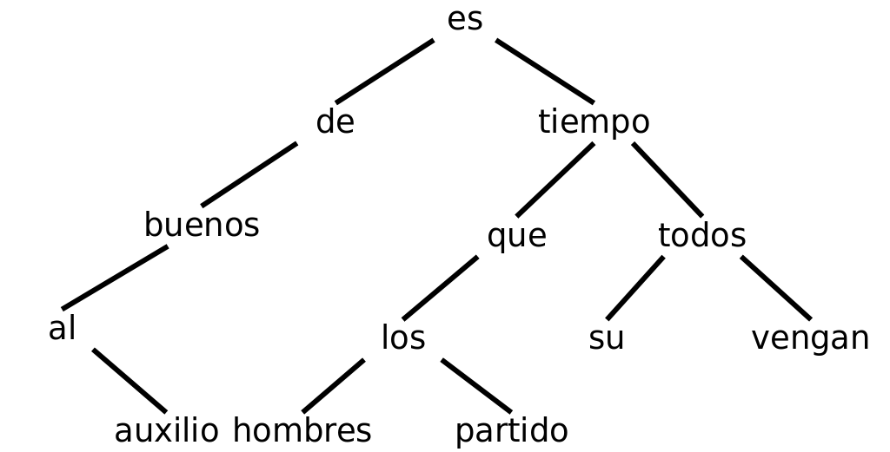
Para descubrir si una nueva palabra ya esta en el arbol, inicie en la raiz y comparela con la que esta almacenada en ese nodo. Si coincide, la pregunta se responde afirmativamente. Si la nueva palabra es menor que la palabra del arbol, continue buscando en el nodo hijo de la izquierda o, de otra manera, en el nodo hijo de la derecha. Si ya no hay un hijo en la direccion requerida, la palabra nueva no esta en el arbol, y de hecho la entrada vacia es el lugar apropiado para agregar la palabra nueva. Este proceso es recursivo, ya que la busqueda desde cualquier nodo emplea una busqueda desde uno de sus hijos. Por ello, unas rutinas recursivas para insercion e impresion seran lo mas natural.
Regresando a la descripcion de un nodo, se representa convenientemente como una estructura con cuatro componentes:
struct tnode { /* el nodo del arbol: */ char *word; /* apunta hacia el texto */ int count; /* numero de ocurrencias */ struct tnode *left; /* hijo a la izquierda */ struct tnode *right; /* hijo a la derecha */ };
Esta declaracion recursiva de un nodo podria parecer riesgosa, pero es correcta. Es ilegal que una estructura contenga una instancia de si misma, pero
struct tnode *left;
declara a left como un apuntador a tnode, no como un tnode en
si.
Ocasionalmente, se requiere de una variacion de estructuras autorreferenciadas: dos estructuras que hagan referencia una a la otra. La forma de manejar esto es:
struct t { ... struct s *p; /* p apunta a una s */ }; struct s { ... struct t *q; /* q apunta a una t */ };
El codigo de todo el programa es sorprendentemente pequeño, dado un
numero de rutinas de soporte, como getword, que ya hemos
descrito. La rutina principal lee palabras con getword y las
instala en el arbol con addtree
#include <stdio.h> #include <ctype.h> #include <string.h> #define MAXWORD 100 struct tnode *addtree(struct tnode *, char *); void treeprint(struct tnode *); int getword(char *, int); /* conteo de frecuencia de palabras */ main() { struct tnode *root; char word[MAXWORD]; root = NULL; while (getword(word, MAXWORD) != EOF) if (isalpha(word[0])) root = addtree(root, word); treeprint(root); return 0; }
La funcion addtree es recursiva, main presenta una palabra al
nivel superior del arbol (la raiz). En cada etapa, la palabra se
compara con la que ya esta almacenada en el nodo, y se filtra
bajando hacia el subarbol izquierdo o derecho con una llamada
recursiva a addtree. Finalmente la palabra coincidira con algo
que ya esta en el arbol (en cuyo caso la cuenta se incrementa), o
se encuentra un apuntador nulo, indicando que se debe crear un nodo
y agregarlo al arbol. Si se crea un nuevo nodo, addtree regresa
un apuntador a el, y lo instala en el nodo padre.
struct tnode *talloc(void); char *strdup(char *); /* addtree: agrega un nodo con w, en o bajo p */ struct tnode *addtree(struct tnode *p, char *w) { int cond; if (p == NULL) { /* llego una nueva palabra */ p = talloc(); /* crea un nuevo nodo */ p->word = strdup(w); p->count = 1; p->left = p->right = NULL; } else if ((cond = strcmp(w, p->word)) == 0) p->count++; /* palabra repetida */ else if (cond < 0) /* menor que el contenido del subarbol izquierdo */ p->left = addtree(p->left, w); else /* mayor que el contenido del subarbol derecho */ p->right = addtree(p->right, w); return p; }
El espacio de almacenamiento para el nuevo nodo se obtiene con la
rutina talloc, la cual regresa un apuntador a un espacio libre
adecuado para mantener un nodo del arbol, y la nueva palabra se
copia a un lugar oculto con strdup. (Hablaremos de esas rutinas
en un momento.) La cuenta se inicializa y los dos hijos se hacen
nulos. Esta parte del codigo se ejecuta solo para las hojas del
arbol, cuando esta siendo agregado un nuevo nodo. Hemos omitido
(imprudencialmente) la revision de errores en los valores
regresados por strdup y talloc.
treeprint imprime el arbol en forma ordenada; para cada nodo
escribe el subarbol izquierdo (todas las palabras menores que
esta), despues la palabra en si, y posteriormente el subarbol
derecho (todas las palabras mayores). Si se siente inseguro sobre
la forma en que trabaja la recursion, simule la operacion de
treeprint sobre el arbol mostrado anteriormente.
/* treeprint: impresion del arbol p en orden */ void treeprint(struct tnode *p) { if (p != NULL) { treeprint(p->left); printf("%4d %s\n", p->count, p->word); treeprint(p->right); } }
Una nota practica: si el arbol se "desbalancea" debido a que las palabras no llegan en orden aleatorio, el tiempo de ejecucion puede aumentar demasiado. En el peor de los casos, si las palabras ya estan en orden, este programa realiza una costosa simulacion de busqueda lineal. Existen generalizaciones del arbol binario que no padecen de este comportamiento del peor caso, pero no las describiremos aqui.
Antes de dejar este ejemplo, tambien es deseable una breve
exposicion sobre un problema relacionado con los asignadores de
memoria. Es claramente deseable que solo exista un asignador de
almacenamiento en un programa, aun cuando asigne diferentes clases
de objetos. Pero si un asignador va a procesar peticiones de,
digamos, apuntadores a char y apuntadores a struct tnode,
surgen dos preguntas. Primera, ¿como cumple los requisitos de la
mayor parte de las maquinas reales, de que los objetos de ciertos
tipos deben satisfacer restricciones de alineacion (por ejemplo,
generalmente los enteros deben ser situados en localidades pares)?
Segunda, ¿cuales declaraciones pueden tratar con el hecho de que un
asignador de memoria necesariamente debe regresar diferentes clases
de apuntadores?
Los requisitos de alineacion por lo general se pueden satisfacer
facilmente, al costo de algun espacio desperdiciado, asegurando que
el asignador siempre regrese un apuntador que cumpla con todas las
restricciones de alineacion. El alloc del capitulo 5 no garantiza
ninguna alineacion en particular, de modo que emplearemos la
funcion malloc de la biblioteca estandar, que si lo hace. En el
capitulo 8 se mostrara una forma de realizar malloc.
La pregunta acerca del tipo de declaracion para una funcion como
malloc es dificil para cualquier lenguaje que tome con seriedad
la revision de tipos. En C, el metodo apropiado es declarar que
malloc regresa un apuntador a void, despues forzar
explicitamente con un cast al apuntador para hacerlo del tipo
deseado, malloc y las rutinas relativas estan declaradas en el
header estandar <stdlib.h>. Asi, talloc se puede escribir como
#include <stdlib.h> /* talloc: crea un tnode */ struct tnode *talloc(void) { return (struct tnode *) malloc(sizeof(struct tnode)); }
strdup simplemente copia la cadena dada por su argumento a un
lugar seguro, obtenido por una llamada a malloc:
char *strdup(char *s) /* crea un duplicado de s */ { char *p; p = (char *) malloc(strlen(s)+1); /* +1 para '\0' */ if (p != NULL) strcpy(p, s); return p; }
malloc regresa NULL si no hay espacio disponible; strdup pasa
ese valor, dejando el manejo de error a su invocador.
El espacio obtenido al llamar a malloc puede liberarse para su
reutilizacion llamando a free; veanse los capitulos 7 y 8.
Ejercicio 6-2. Escriba un programa que lea un programa en C e imprima en orden alfabetico cada grupo de nombres de variable que sean identicas en sus primeros 6 caracteres, pero diferentes en el resto. No cuente palabras dentro de cadenas ni comentarios. Haga que 6 sea un parametro que pueda fijarse desde la linea de ordenes.
Ejercicio 6-3. Escriba un programa de referencias cruzadas que imprima una lista de todas las palabras de un documento, y para cada palabra, una lista de los numeros de linea en los que aparece. Elimine palabras como "el", "y", etcetera.
Ejercicio 6-4. Escriba un programa que imprima las distintas palabras de su entrada, ordenadas en forma descendente de acuerdo con su frecuencia de ocurrencia. Precede a cada palabra por su conteo.
6.6 Busqueda en tablas
En esta seccion escribiremos los componentes de un paquete de
busqueda en tablas, para ilustrar mas aspectos acerca de
estructuras. Este codigo es tipico de lo que podria encontrarse en
las rutinas de manejo de tablas de simbolos de un macroprocesador o
compilador. Por ejemplo, considere la proposicion #define. Cuando
se encuentra una linea como
#define IN 1
el nombre IN y el texto de reemplazo 1 se almacenan en una
tabla. Despues, cuando el nombre IN aparece en una proposicion
como
state = IN;
se debe reemplazar por 1.
Existen dos rutinas que manipulan los nombres y textos de
reemplazo. install(s,t) registra el nombre s y el texto de
reemplazo t en una tabla; s y t son solo cadenas de
caracteres, lookup(s) busca s en la tabla y regresa un
apuntador al lugar en donde fue encontrado, o NULL si no esta.
El algoritmo es una busqueda hash – el nombre que llega se
convierte a un pequeño entero no negativo, que despues se usa para
indexar un arreglo de apuntadores. Un elemento del arreglo apunta
al principio de una lista ligada de bloques que describen nombres
que tienen ese valor de hash. El elemento es NULL si ningun
nombre ha obtenido ese valor.
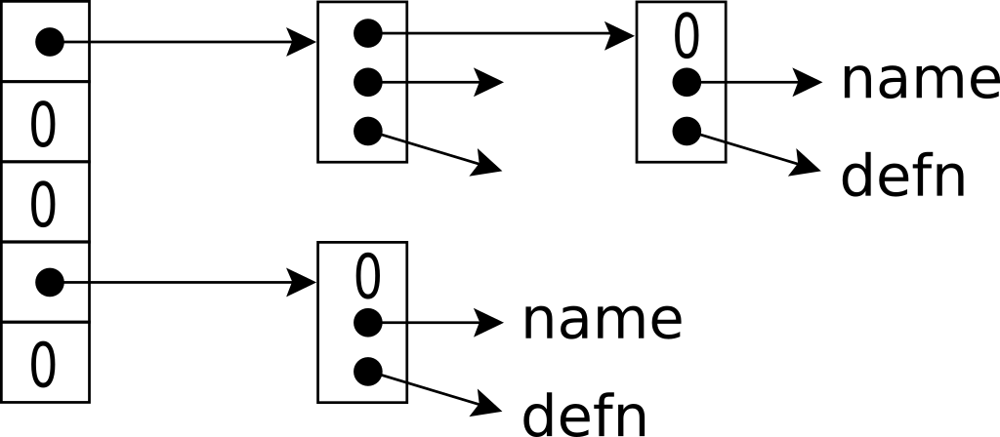
Un bloque de la lista es una estructura que contiene apuntadores al nombre, al texto de reemplazo y al siguiente bloque de la lista. Un siguiente apuntador nulo marca el final de la lista.
struct nlist { /* entrada de la tabla: */ struct nlist *next; /* siguiente entrada en la cadena */ char *name; /* nombre definido */ char *defn; /* texto de reemplazo */ };
El arreglo de apuntadores es solo
#define HASHSIZE 101 static struct nlist *hashtab[HASHSIZE]; /* tabla de apuntadores */
La funcion de hash, que se utiliza tanto en lookup como en
install, agrega cada valor de caracter de la cadena a una
combinacion mezclada de los anteriores y regresa el modulo del
residuo entre el tamaño del arreglo. Esta no es la mejor funcion de
hash posible, pero es pequeña y efectiva.
/* hash: forma un valor hash para la cadena s */ unsigned hash(char *s) { unsigned hashval; for (hashval = 0; *s != '\0'; s++) hashval = *s + 31 * hashval; return hashval % HASHSIZE; }
La aritmetica sin signo asegura que el valor de hash no es negativo.
El proceso de hash produce un indice inicial en el arreglo
hashtab; si la cadena se encontrara en algun lugar, sera en la
lista de bloques que empieza alli. La busqueda se realiza por
lookup. Si lookup encuentra que la entrada ya esta presente,
regresa un apuntador a ella; de otra manera, regresa NULL.
/* lookup: busca s en hashtab */ struct nlist *lookup(char *s) { struct nlist *np; for (np = hashtab[hash(s)]; np != NULL; np = np->next) if (strcmp(s, np->name) == 0) return np; /* se encontro */ return NULL; /* no se encontro */ }
El ciclo for que esta en lookup es la expresion idiomatica
estandar para moverse sobre una lista ligada;
for (ptr = head; ptr != NULL; ptr = ptr->next) ...
install usa a lookup para determinar si el nombre que se va a
instalar ya esta presente; de ser asi, la nueva definicion toma el
lugar de la anterior. De otra manera, se crea una nueva entrada,
install regresa NULL si por cualquier razon no hay espacio para
una nueva entrada.
struct nlist *lookup(char *); char *strdup(char *); /* install: coloca (name, defn) dentro de hashtab */ struct nlist *install(char *name, char *defn) { struct nlist *np; unsigned hashval; if ((np = lookup(name)) == NULL) { /* no fue encontrado */ np = (struct nlist *) malloc(sizeof(*np)); if (np == NULL || (np->name = strdup(name)) == NULL) return NULL; hashval = hash(name); np->next = hashtab[hashval]; hashtab[hashval] = np; } else /* ya esta alli */ free((void *) np->defn); /* libera la anterior defn */ if ((np->defn = strdup(defn)) == NULL) return NULL; return np; }
Ejercicio 6-5. Escriba una funcion undef que borre un nombre y
una definicion de la tabla mantenida por lookup e install.
Ejercicio 6-6. Haga una version simple del procesador #define
(esto es, sin argumentos) adecuada para usarse con programas en C,
basada en las rutinas de esta seccion. Tambien podra encontrar
utiles getch y ungetch.
6.7 Typedef
C proporciona una facilidad llamada typedef para crear nuevos
tipos de datos. Por ejemplo, la declaracion
typedef int Longitud;
hace del nombre Longitud un sinonimo de int. El tipo Longitud
puede emplearse en declaraciones, casts, etc., exactamente de la
misma manera en que lo podria ser int.
Longitud len, maxlen; Longitud *lengths[];
De modo semejante, la declaracion
typedef char * Cadena;
hace a Cadena un sinonimo para char * o apuntador a caracter,
que despues puede usarse en declaraciones y casts:
Cadena p, lineptr[MAXLINES], alloc(int); int strcmp(Cadena, Cadena); p = (Cadena) malloc(lOO);
Notese que el tipo que se declara en un typedef aparece en la
posicion de un nombre de variable, no justo despues de la palabra
typedef. Sintacticamente, typedef es como las clases de
almacenamiento extern, static, etc. Hemos empleado nombres con
mayuscula para los typedef, para destacarlos.
Como un ejemplo mas complicado, podriamos declarar mediante
typedef los nodos del arbol mostrados anteriormente en este
capitulo:
typedef struct tnode *Treeptr; typedef struct tnode { /* el nodo del arbol: */ char *word; /* apunta hacia el texto */ int count; /* numero de ocurrencias */ struct tnode *left; /* hijo izquierdo */ struct tnode *right; /* hijo derecho */ } Treenode;
Esto crea dos nuevas palabras reservadas para tipos, llamados
Treenode (una estructura) y Treeptr (un apuntador a la
estructura). Entonces, la rutina talloc podria ser
Treeptr talloc(void) { return (Treeptr) malloc(sizeof(Treenode)); }
Se debe destacar que una declaracion typedef no crea un nuevo
tipo en ningun sentido; simplemente agrega un nuevo nombre para
algun tipo ya existente. Tampoco es alguna nueva semantica: las
variables declaradas de esta manera tienen exactamente las mismas
propiedades que las variables cuyas declaraciones se escriben
explicitamente. En efecto, typedef es como #define, excepto que
al ser interpretado por el compilador puede realizar substituciones
textuales que estan mas alla de las capacidades del
preprocesador. Por ejemplo,
typedef int (*AAF)(char *, char *);
crea el tipo AAF, de "apuntador a funcion (de dos argumentos
char *) que regresa int ", el cual se puede usar en contextos
como
AAF strcmp, numcmp;
dentro del breve programa del capitulo 5.
Ademas de las razones puramente esteticas, hay dos razones
principales para emplear typedef. La primera es parametrizar un
programa contra los problemas de transportabilidad. Si se emplea
typedef para tipos de datos que pueden ser dependientes de la
maquina, cuando un programa se traslada, solo los typedef
requieren de cambios. Una situacion comun es usar nombres de
typedef para varias cantidades enteras, y entonces hacer un
conjunto apropiado de selecciones de short, int y long para
cada maquina. Tipos como size_t y ptrdifl_t de la biblioteca
estandar son ejemplos.
El segundo proposito de los typedef es proporcionar mejor
documentacion para un programa – un tipo llamado Treeptr puede
ser mas facil de entender que uno declarado solo como un apuntador
a una estructura complicada.
6.8 Uniones
Una union es una variable que puede contener (en momentos diferentes) objetos de diferentes tipos y tamaños, y el compilador hace el seguimiento del tamaño y requisitos de alineacion. Las uniones proporcionan una forma de manipular diferentes clases de datos dentro de una sola area de almacenamiento, sin incluir en el programa ninguna informacion dependiente de la maquina. Son analogas a los variant records de Pascal.
Como un ejemplo, que podria ser encontrado en el manejador de la
tabla de simbolos de un compilador, supongase que una constante
podria ser un Iñt, un float, o un apuntador a caracter. El
valor de una constante en particular debe ser guardado en una
variable del tipo adecuado. No obstante, es conveniente para el
manejador de tablas si el valor ocupa la misma cantidad de memoria
y es guardado en el mismo lugar sin importar su tipo. Este es el
proposito de una "union" – una sola variable que puede
legitimamente guardar uno de varios tipos. La sintaxis se basa en
las estructuras:
union u_tag { int ival; float fval; char *sval; } u;
La variable u sera suficientemente grande como para mantener al
mayor de los tres tipos: el tamaño especifico depende de la
implantacion. Cualquiera de estos tipos puede ser asignado a u y
despues empleado en expresiones, mientras que el uso sea
consistente: el tipo recuperado debe ser el tipo que se almaceno
mas recientemente. Es responsabilidad del programador llevar el
registro del tipo que esta almacenado actualmente en una union; si
algo se almacena como un tipo y se recupera como otro, el resultado
depende de la implantacion.
Sintacticamente, se tiene acceso a los miembros de una union con
nombre-union.miembro
o
apuntador-union->miembro
precisamente como a las estructuras. Si la variable utype se
emplea para llevar el registro del tipo actualmente almacenado en
u, entonces se podria ver el codigo como
if (utype == INT) printf("%d\n", u.ival); if (utype == FLOAT) printf("%f\n", u.fval); if (utype == STRING) printf("%s\n", u.sval); else printf("bad type %d in utype\n", utype);
Las uniones pueden presentarse dentro de estructuras y arreglos, y viceversa. La notacion para tener acceso a un miembro de una union en una estructura (o viceversa) es identica a la de las estructuras anidadas. Por ejemplo, en el arreglo de estructuras definido por
struct { char *name; int flags; int utype; union { int ival; float fval; char *sval; } u; } symtab[NSYM];
al miembro ival se le refiere como
symtab[i].u.ival
y al primer caracter de la cadena sval por cualquiera de
*symtab[i].u.sval
symtab[i].u.sval[0]
En efecto, una union es una estructura en la cual todos los miembros tienen un desplazamiento de cero a partir de la base, la estructura es suficientemente grande para mantener al miembro "mas ancho", y la alineacion es la apropiada para todos los tipos de la union. Estan permitidas las mismas operaciones sobre las uniones como sobre las estructuras: asignacion o copia como unidad, tomar la direccion, y hacer el acceso a un miembro.
Una union solo se puede inicializar con un valor del tipo de su
pirimer miembro, asi que la union u descrita anteriormente solo
se puede inicializar con un valor entero.
El asignador de almacenamiento del capitulo 8 muestra como se puede usar una union para obligar a que una variable sea alineada para una clase particular de limites de almacenamiento.
6.9 Campos de bits
Cuando el espacio de almacenamiento es escaso, puede ser necesario empaquetar varios objetos dentro de una sola palabra de maquina; un uso comun es un conjunto de banderas de un bit en aplicaciones como tablas de simbolos para compiladores. Los formatos de datos impuestos externamente, como interfaces hacia dispostivos de hardware, frecuentemente requieren la capacidad de tomar partes de una palabra.
Imaginese un fragmento de un compilador que manipula una tabla de
simbolos. Cada identificador dentro de un programa tiene cierta
informacion asociada a el, por ejemplo, si es o no una palabra
reservada, si es o no externa y/o estatica y otros aspectos. La
forma mas compacta de codificar tal informacion es con un conjunto
de banderas de un bit dentro de un char o int.
La forma usual en que esto se realiza es definiendo un conjunto de "mascaras" correspondientes a las posiciones relevantes de bits, como en
#define KEYWORD 01 #define EXTERNAL 02 #define STATIC 04
O
enum { KEYWORD = 01, EXTERNAL = 02, STATIC = 04 };
Los numeros deben ser potencias de dos. El acceso a los bits viene a ser cosa de "jugar" con los operadores de corrimiento, enmascaramiento y complemento, que se describieron en el capitulo 2.
Ciertas expresiones aparecen frecuentemente:
flags |= EXTERNAL | STATIC;
enciende los bits EXTERNAL y STATIC en flags, en tanto que
flags &= ~(EXTERNAL | STATIC);
los apaga, y
if ((flags & (EXTERNAL | STATIC)) == 0) ...
es verdadero si ambos bits estan apagados.
Aunque estas expresiones se dominan facilmente, como alternativa C
ofrece la capacidad de definir y tener acceso a campos de una
palabra mas directamente que por medio de operadores logicos de
bits. Un campo de bits, o simplemente campo, es un conjunto de
bits adyacentes dentro de una unidad de almacenamiento definida por
la implantacion, al que llamaremos "palabra". La sintaxis para la
definicion y acceso a campos esta basada en estructuras. Por
ejemplo, la anterior tabla de simbolos #define podria haber sido
reemplazada por la definicion de tres campos:
struct { unsigned int is_keyword : 1; unsigned int is_extern : 1; unsigned int is_static : 1; } flags;
Esto define una variable llamada flags, que contiene tres campos
de un bit. El numero que sigue al caracter dos puntos representa el
ancho del campo en bits. Los campos son declarados unsigned int
para asegurar que sean cantidades sin signo.
Los campos individuales son referidos en la misma forma que para
otros miembros de estructuras: flags.is_keyword,
flags.is_extern, etc. Los campos Se comportan como pequeños
enteros y pueden participar en expresiones aritmeticas, como lo
hacen otros enteros. Asi, el ejemplo previo pudo escribirse mas
naturalmente como
flags.is_extern = flags.is_static = 1;
para encender los bits;
flags.is_extern = flags.is_static = 0;
para apagarlos; y
if (flag.is_extern == 0 && flags.is_static == 0)
...
para probarlos.
Casi todo acerca de los campos es dependiente de la
implantacion. El que un campo pueda traslapar al limite de una
palabra se define por la implantacion. Los campos no necesitan
tener nombre; los campos sin nombre (dos puntos y su amplitud
solamente) se emplean para llenar espacios. El ancho especial 0
puede emplearse para obligar a la alineacion al siguiente limite de
palabra.
Los campos se asignan de izquierda a derecha en algunas maquinas y
de derecha a izquierda en otras. Esto significa que aunque los
campos son utiles para el mantenimiento de estructuras de datos
definidas internamente, la pregunta de que punta viene primero
tiene que considerarse cuidadosamente cuando se seleccionan datos
definidos externamente; los programas que dependen de tales cosas
no son transportables. Los campos solo se pueden declarar como
enteros; por transportabilidad, se debe especificar explicitamente
signed o unsigned. No son arreglos y no tienen direcciones, de
modo que el operador & no puede aplicarse a ellos.
capitulo 7: Entrada y salida
Las operaciones de entrada y salida no son en si parte del lenguaje C, por lo que hasta ahora no las hemos destacado. Sin embargo, los programas interactuan con su medio ambiente en formas mucho mas complicadas de las que hemos mostrado antes. En este capitulo describiremos la biblioteca estandar, un conjunto de funciones que proporcionan entrada y salida, manipulacion de cadenas, manejo de memoria, rutinas matematicas y una variedad de otros servicios para programas en C, aunque haremos hincapie en la entrada y salida.
El estandar ANSI define de manera precisa estas funciones de biblioteca, de modo que pueden existir en forma compatible en cualquier sistema en donde exista C. Los programas que restringen su interaccion con el sistema a las facilidades provistas por la biblioteca estandar pueden ser llevados de un sistema a otro sin cambios.
Las propiedades de las funciones de biblioteca estan especificadas
en mas de una docena de headers; ya hemos visto algunos,
incluyendo <stdio.h>, <string.h> y <ctype.h> . No
presentaremos aqui la totalidad de la biblioteca, puesto que estamos
mas interesados en escribir programas en C que los usan. La
biblioteca se describe en detalle en el apendice B.
7.1 Entrada y salida estandar
Como señalamos en el capitulo 1, la biblioteca consiste en un modelo simple de entrada y salida de texto. Un flujo de texto consiste en una secuencia de lineas, cada una de las cuales termina con un caracter nueva linea. Si el sistema no opera de ese modo, la biblioteca hace lo que sea necesario para simular que asi funciona. Por ejemplo, la biblioteca podria convertir el regreso de carro y avance de linea a una nueva linea en la entrada y de nuevo en la salida.
El mecanismo de entrada mas simple es leer un caracter a la vez de
la entrada estandar, normalmente el teclado, con getchar:
int getchar(void)
getchar regresa el siguiente caracter de la entrada cada vez que
se invoca, o EOF cuando encuentra fin de archivo. La constante
simbolica EOF esta definida en <stdio.h>. El valor es
tipicamente -1, pero las pruebas se deben escribir en funcion de
EOF, de modo que sean independientes del valor especifico.
En muchos medios ambientes, un archivo puede tomar el lugar del
teclado empleando la convencion < para redireccionamiento de
entrada: si un programa prog usa getchar, entonces la linea de
ordenes
prog < infile
provoca que prog lea caracteres de infile. El cambio de la
entrada se realiza de tal manera que prog mismo es ajeno al
cambio; en particular, la cadena "< infile" no esta incluida entre
los argumentos de la linea de ordenes en argv. El cambio de la
entrada es tambien invisible si la entrada viene de otro programa
via un mecanismo de interconexion (pipe): en algunos sistemas, la
linea de ordenes
otroprog | prog
ejecuta tanto al programa otroprog como a prog, e interconecta
la salida estandar de otroprog con la entrada estandar para
prog.
La funcion
int putchar(int)
se emplea para salida: putchar(c) coloca el caracter c en la
salida estandar, que por omision es la pantalla. putchar
regresa el caracter escrito, o EOF si ocurre algun error. De
nuevo, la salida puede ser dirigida hacia algun archivo con
> nombrearch: si prog utiliza putchar,
prog > archsal
escribira la salida estandar hacia archsal. Si se permite la
interconexion,
prog | otroprog
deja la salida estandar de prog en la entrada estandar de
otroprog.
La salida producida por printf tambien encuentra su camino hacia
la salida estandar. Las llamadas a putchar y a printf pueden
estar traslapadas – la salida aparece en el orden en que se
hicieron las llamadas.
Cada archivo fuente que se refiera a una funcion de biblioteca de entrada/salida debe contener la linea
#include <stdio.h>
antes de la primera referencia. Cuando un nombre se delimita por
< y > se realiza una busqueda del header en algunos lugares
estandar (por ejemplo, en los sistemas UNIX, tipicamente en el
directorio /usr/include).
Muchos programas leen solo un flujo de entrada y escriben solo un
flujo de salida; para tales programas la entrada y salida con
getchar, putchar y printf puede ser totalmente adecuada y en
realidad es suficiente para comenzar. Esto es particularmente
cierto si se emplea la redireccion para conectar la salida de un
programa a la entrada de otro. Por ejemplo, considerese el programa
lower, que convierte su entrada a minusculas:
#include <stdio.h> #include <ctype.h> main() /* lower: convierte la entrada a minusculas */ { int c; while ((c = getchar()) != EOF) putchar(tolower(c)); return 0; }
La funcion tolower esta definida en <ctype.h>; convierte una
letra mayuscula a minuscula, y regresa los otros caracteres
intactos. Como mencionamos antes, las "funciones" como getchar y
putchar en <stdio.h> y tolower en <ctype.h> son a menudo
macros, evitandose asi la sobrecarga de una llamada a funcion por
cada caracter. En la seccion 8.5 se mostrara como se hace esto. Sin
importar como sean las funciones de <ctype.h> en una maquina
dada, los programas que las emplean estan aislados del juego de
caracteres.
Ejercicio 7-1. Escriba un programa que convierta mayusculas a
minusculas o viceversa, dependiendo del nombre con que se invoque,
dado en argv[0].
7.2 Salida con formato - printf
La funcion de salida printf traduce valores internos a
caracteres. Ya hemos empleado informalmente printf en los
capitulos anteriores. La descripcion de aqui cubre los usos mas
tipicos, pero no esta completa; para la definicion completa, vease
el apendice B.
int printf(char *format, arg1, arg2, ...)
printf convierte, da formato e imprime sus argumentos en la
salida estandar bajo el control de format. Regresa el numero de
caracteres impresos.
La cadena de formato contiene dos tipos de objetos: caracteres
ordinarios, Que son copiados al flujo de salida, y especificaciones
de conversion, cada uno de los cuales causa la conversion e
impresion de los siguientes argumentos sucesivos de printf. Cada
especificacion de conversion comienza con un % y termina con un
caracter de conversion. Entre el % y el caracter de conversion
pueden estar, en orden:
- Un signo menos, que especifica el ajuste a la izquierda del argumento convertido.
- Un numero que especifica el ancho minimo de campo. El argumento convertido sera impreso dentro de un campo de al menos este ancho. Si es necesario sera llenado de blancos a la izquierda (o a la derecha, si se requiere ajuste a la izquierda) para completar la amplitud del campo.
- Un punto, que separa el ancho de campo de la precision.
- Un numero, la precision, que especifica el numero maximo de caracteres de una cadena que seran impresos, o el numero de digitos despues del punto decimal de un valor de punto flotante, o el numero minimo de digitos para un entero.
- Una
hsi el entero sera impreso como unshort, o unal(letra ele) si sera como unlong.
Los caracteres de conversion se muestran en la tabla 7-1. Si el
caracter despues del % no es una especificacion de conversion, el
comportamiento no esta definido.
- Tabla 7-1
Conversiones basicas de
printfCARACTER Tipo de argumento : impreso como d, i int: numero decimal.o int: numero octal sin signo (sin cero inicial).x, X int: numero hexadecimal sin signo (con unOxoOXinicial, usandoabcdeoABCDEFpara 10, …, 15.u int: numero decimal sin signo,c int: caracter sencillo.s char *: imprime caracteres de una cadena hasta un '\0' o el numero de caracteres dado por la precision.f double:[-]m.dddddd, en donde el numero de d's esta dado por la precision (predeterminado a 6).e, E double:[-]m.dddddde+/-xxo[-]m.ddddddE+/-xx, en donde el numero de d's esta dado por la precision (predeterminado a 6).g, G double: usa%eo%Esi el exponente es menor que-4o mayor o igual a la precision; de otra forma usa%f. Los ceros o el punto al final no se imprimen.p void *: apuntador (representacion dependiente de la instalacion),% no es convertido en ningun argumento; imprime un %.
Una amplitud o precision se puede especificar por *, en cuyo caso
el valor se calcula convirtiendo el siguiente argumento (que debe
ser int). Por ejemplo, para imprimir al menos max caracteres de
una cadena s,
printf("%.*s", max, s);
La mayoria de las conversiones de formato se han ilustrado en capitulos anteriores. Una excepcion es la precision relacionada con las cadenas. La siguiente tabla muestra el efecto de una variedad de especificaciones al imprimir "hello, world" (12 caracteres). Hemos colocado el caracter dos puntos alrededor de cada campo para que se pueda apreciar su extension.
:%s: | :hello, world: :%10s: | :hello, world: :%.10s: | :hello, wor: :%-10s: | :hello, world: :%.15s: | :hello, world: :%-15s: | :hello, world : :%15.10s: | : hello, wor: :%-15.10s: | :hello, wor :
Una advertencia: printf emplea su primer argumento para decidir
cuantos argumentos le siguen y cuales son sus tipos, printf se
confundira y se obtendran resultados erroneos si no hay suficientes
argumentos o si tienen tipos incorrectos. Tambien debe advertir la
diferencia entre estas dos llamadas:
printf(s); /* FALLA si s contiene % */ printf("%s", s); /* SEGURO */
La funcion sprintf realiza las mismas conversiones que printf,
pero almacena la salida en una cadena:
int sprintf(char *cadena, char *format, arg1, arg2, ...);
sprintf da formato a los argumentos que estan en arg1, arg2,
etc., de acuerdo con format como antes, pero coloca el resultado
en cadena en vez de en la salida estandar; cadena debe ser
suficientemente grande como para recibir el resultado.
Ejercicio 7-2. Escriba un programa que imprima una entrada arbitraria en forma sensata. Como minimo, debera imprimir caracteres no graficos en octal o hexadecimal de acuerdo con la costumbre local, y separar lineas largas de texto.
7.3 Listas de argumentos de longitud variable
Esta seccion contiene la realizacion de una version minima de
printf, para Mostrar como escribir una funcion que procese una
lista de argumentos de longitud variable en una forma
transportable. Puesto que estamos interesados principalmente en el
procesamiento de argumentos, minprintf procesara la cadena de
formato y los argumentos, pero llamara al printf real para hacer
las conversiones de formato.
La declaracion correcta para printf es
int printf(char *fmt, ...)
donde la declaracion ... significa que el numero y tipo de esos
argumentos puede variar. La declaracion ... solo puede aparecer
al final de la lista de argumentos.
Nuestra minprintf se declara como
void minprintf (char *fmt, ...)
ya que no regresara la cuenta de caracteres que regresa printf.
El truco esta en como minprintf recorre la lista de argumentos
cuando la lista ni siquiera tiene un nombre. El header estandar
<stdarg.h> contiene un conjunto de macrodefiniciones que definen
como avanzar sobre una lista de argumentos. La realizacion de este
header variara de una maquina a otra, pero la interfaz que
presenta es uniforme.
El tipo va_list se emplea para declarar una variable que se
referira a cada argumento en su momento; en minprintf, esta
variable se llama ap, por "argument pointer" (apuntador a
argumento). La macro va_start inicializa ap para apuntar al
primer argumento sin nombre. Debe llamarse una vez antes de usar
ap. Al menos debe haber un argumento con nombre; el ultimo
argumento con nombre es empleado por va_start para iniciar.
Cada llamada de va_arg regresa un argumento y avanza ap al
siguiente; va_arg emplea un nombre de tipo para determinar que
tipo regresar y cuan grande sera el avance. Finalmente, va_end
realiza las labores de limpieza y arreglo que sean necesarias. Debe
invocarse antes que la funcion regrese.
Estas propiedades forman la base de nuestro printf simplificado:
#include <stdarg.h> /* minprintf: printf minima con lista variable de argumentos */ void minprintf(char *fmt, ...) { va_list ap; /* apunta a cada arg sin nombre en orden */ char *p, *sval; int ival; double dval; va_start(ap, fmt); /* hace que ap apunte al 1er. arg sin nombre */ for (p = fmt; *p; p++) { if (*p != '%') { putchar(*p); continue; } switch (*++p) { case 'd': ival = va_arg(ap, int); printf("%d", ival); break; case 'f': dval = va_arg(ap, double); printf("%f", dval); break; case 's': for (sval = va_arg(ap, char *); *sval; sval++) putchar(*sval); break; default: putchar(*p); break; } } va_end(ap); /* limpia cuando todo esta hecho */ }
Ejercicio 7-3. Aumente minprintf para que maneje otras de las
caracteristicas de printf.
7.4 Entrada con formato - scanf
La funcion scanf es la entrada analoga de printf, y proporciona
muchas de las mismas facilidades de conversion en la direccion
opuesta.
int scanf(char *format, ...)
scanf lee caracteres de la entrada estandar, los interpreta de
acuerdo con las especificaciones que estan en format, y almacena
los resultados a traves de los argumentos restantes. El argumento
de formato se describe abajo; los otros argumentos, cada uno de
los cuales debe ser un apuntador, indican donde debera almacenarse
la entrada correspondientemente convertida. Como con printf, esta
seccion es un resumen de las posibilidades mas utiles, no una lista
exhaustiva.
scanf se detiene cuando termina con su cadena de formato, o
cuando alguna entrada no coincide con la especificacion de
control. Regresa como su valor el numero de items de entrada que
coinciden con exito. Esto se puede emplear para decidir cuantos
items se encontraron. Al final del archivo, regresa EOF; notese
que esto es diferente de 0, que significa que el siguiente
caracter de entrada no coincide con la primera especificacion en la
cadena de formato. La siguiente llamada a scanf continua la
busqueda inmediatamente despues del ultimo caracter que ya fue
convertido.
Existe tambien una funcion sscanf que lee de una cadena y no de
la entrada estandar:
int sscanf(char *string, char *format, arg1, arg2, ...)
Rastrea la cadena string de acuerdo con el formato en format, y
almacena el valor resultante a traves de arg1, arg2, etc. Estos
argumentos deben ser apuntadores.
La cadena de formato generalmente contiene especificaciones de conversion, las cuales son empleadas para controlar la conversion de entrada. La cadena de formato puede contener:
- Espacios o tabuladores, los cuales son ignorados.
- Caracteres ordinarios (no
%), que se espera coincidan con el siguiente caracter que no sea espacio en blanco del flujo de entrada. - Especificaciones de conversion, consistentes en el caracter
%, un caracter optativo de supresion de asignacion*, un numero optativo que especifica el ancho maximo de campo, unah,l, oLoptativa que indica la amplitud del objetivo, y un caracter de conversion.
La especificacion de conversion dirige la conversion del siguiente
campo de entrada. Normalmente el resultado se coloca en la variable
apuntada por el argumento correspondiente. Si se indica la
supresion de asignacion con el caracter *, sin embargo, el campo
de entrada es ignorado y no se realiza asignacion alguna. Un campo
de entrada esta definido como una cadena de caracteres que no son
espacio en blanco; se extiende hasta el siguiente espacio en blanco
o hasta que el ancho de campo se agote, si esta especificado. Esto
implica que scanf leera entre varias lineas para encontrar su
entrada, ya que las nuevas lineas son espacios en blanco. (Los
caracteres de espacio en blanco son tabulador, nueva linea, retorno
de carro, tabulador vertical y avance de hoja.)
El caracter de conversion indica la interpretacion del campo de entrada. El argumento correspondiente debe ser un apuntador, como es requerido por la semantica de las llamadas por valor de C. Los caracteres de conversion se muestran en la tabla 7-2.
- Tabla 7-2
Conversiones basicas de
scanfCARACTER Dato DE ENTRADA: TIPO DE ARGUMENTO: d entero decimal; int *.i entero; int *. El entero puede estar en octal (iniciado con0) o hexadecimal (iniciado conOxoOX).o entero octal (con o sin cero inicial); int *.u entero decimal sin signo; unsigned int *.x entero hexadecimal (iniciado o no con OxoOX);int *.c caracteres; char *. Los siguientes caracteres de entrada (por omision 1) son colocados en el sitio indicado. El salto normal sobre los espacios en blanco es suprimido; para leer el siguiente espacio no blanco, use%1s.s cadena de caracteres (no entrecomillada); char *, apunta a un arreglo de caracteres suficientemente grande para la cadena y una terminacion '\0' que sera agregada.e, f, g numero de punto flotante con signo, punto decimal y exponente optativos; float *.% %literal; no se hace asignacion alguna.
Los caracteres de conversion d, i, o, u y x pueden ser
precedidos por h para indicar que en la lista de argumentos
aparece un apuntador a short en lugar de a int, o por l
(letra ele) para indicar que aparece un apuntador a long en la
lista de argumentos. En forma semejante, los caracteres de
conversion e, f, g pueden ser precedidos por l para indicar
que hay un apuntador a double en lugar de a float en la lista
de argumentos.
Como un primer ejemplo, la rudimentaria calculadora del capitulo 4
se puede escribir con scanf para hacer la conversion de entrada:
#include <stdio.h> main() /* calculadora rudimentaria */ { double sum, v; sum = 0; while (scanf("%lf", &v) == 1) printf("\t%.2f\n", sum += v); return 0; }
Suponga que deseamos leer lineas de entrada que contienen fechas de la forma
25 Dic 1988
La proposicion scanf es
int day, year; char monthname[20]; scanf("%d %s %d", &day, monthname, &year);
No se emplea & con monthname, ya que un nombre de arreglo es un
apuntador.
Pueden aparecer caracteres literales en la cadena de formato de
scanf, y deben coincidir con los mismos caracteres de la
entrada. De modo que podemos leer fechas de la forma mm/dd/yy con
esta proposicion scanf:
int day, month, year; scanf("%d/%d/%d", &month, &day, &year);
scanf ignora los blancos y los tabuladores que esten en su cadena
de formato. Ademas, salta sobre los espacios en blanco (blancos,
tabuladores, nuevas lineas etc.) mientras busca los valores de
entrada. Para leer de entradas cuyo formato no esta fijo, a menudo
es mejor leer una linea a la vez, y despues separarla con
sscanf. Por ejemplo, suponga que deseamos leer lineas que pueden
contener fechas en cualquiera de las formas anteriores. Entonces
podemos escribir
while (getline(line, sizeof(line)) > 0) { if (sscanf(line, "%d %s %d", &day, monthname, &year) == 3) printf("valid: %s\n", line); /* forma 25 Dic 1988 */ else if (sscanf(line, "%d/%d/%d", &month, &day, &year) == 3) printf("valid: %s\n", line); /* forma mm/dd/yy */ else printf("invalid: %s\n", line); /* forma invalida */ }
Las llamadas a scanf pueden estar mezcladas con llamadas a otras
funciones de entrada. La siguiente llamada a cualquier funcion de
entrada iniciara leyendo el primer caracter no leido por scanf.
Una advertencia final: los argumentos de scanf y sscanf deben
ser apuntadores. El error mas comun es escribir
scanf("%d", n);
en lugar de
scanf("%d", &n);
Este error generalmente no se detecta en tiempo de compilacion.
Ejercicio 7-4. Escriba una version privada de scanf analoga a
minprintf de la seccion anterior.
Ejercicio 7-5. Reescriba la calculadora postfija del capitulo 4
usando scanf y/o sscanf para hacer la entrada y la conversion.
7.5 Acceso a archivos
Hasta ahora todos los ejemplos han leido de la entrada estandar y escrito en la salida estandar, las cuales se definen automaticamente para los programas por el sistema operativo local.
El siguiente paso es escribir un programa que de acceso a un
archivo que no este ya conectado al programa. Un programa que
ilustra la necesidad de tales operaciones es cat, el cual
concatena en la salida estandar un conjunto de archivos nombrados,
cat se emplea para escribir archivos en la pantalla, y como un
colector de entradas de proposito general para programas que no
disponen de la capacidad de tener acceso a los archivos por
nombre. Por ejemplo, la orden
cat x.c y.c
imprime el contenido de los archivos x.c y y.c (y nada mas) en
la salida estandar.
La pregunta es como hacer que los archivos nombrados sean leidos – esto es, como conectar las proposiciones que leen los datos, con los nombres externos que un usuario tiene en mente.
Las reglas son simples. Antes de que pueda ser leido o escrito, un
archivo tiene que ser abierto por la funcion de biblioteca
fopen, la cual toma un nombre externo como x.c o y.c, hace
algunos arreglos y negociaciones con el sistema operativo (cuyos
detalles no deben importarnos), y regresa un apuntador que sera
usado en posteriores lecturas o escrituras del archivo.
Este apuntador, llamado apuntador de archivo, apunta a una
estructura que contiene informacion acerca del archivo, tal como la
ubicacion de un buffer, la posicion de caracter actual en el
buffer, si el archivo esta siendo leido o escrito y si han ocurrido
errores o fin de archivo. Los usuarios no necesitan saber los
detalles, debido a que las definiciones obtenidas de <stdio.h>
incluyen una declaracion de estructura llamada FILE. La unica
declaracion necesaria para un apuntador de archivo se ejemplifica
por
FILE *fp; FILE *fopen(char *nombre, char *modo);
Esto dice que fp es un apuntador a un FILE, y fopen regresa
un apuntador a FILE. Notese que FILE es un nombre de tipo, como
int, no una etiqueta de estructura; esta definido con un
typedef. (Los detalles de como realizar fopen en el sistema
UNIX se explican en la seccion 8.5.)
La llamada a fopen en un programa es
fp = fopen(nombre, modo);
El primer argumento de fopen es una cadena de caracteres que
contiene el nombre del archivo. El segundo argumento es el modo,
tambien una cadena de caracteres, que indica como se intenta
emplear el archivo. Los modos disponibles incluyen lectura ("r"),
escritura ("w"), y añadido ("a"). Algunos sistemas distinguen entre
archivos de texto y binarios; para los ultimos, debe escribirse una
"b" luego de la cadena de modo.
Si un archivo que no existe se abre para escribir o añadir, se
crea, si es posible. Abrir un archivo existente para escribir
provoca que los contenidos anteriores sean desechados, mientras que
abrirlo para añadir los preserva. Es un error tratar de leer un
archivo que no existe, y tambien pueden haber otras causas de
error, como tratar de leer un archivo cuando no se tiene
permiso. Si existe cualquier error, fopen regresa NULL. (El
error puede ser identificado en forma mas precisa; vease la
discusion de funciones para manipulacion de errores al final de la
seccion 1 en el apendice B.)
Lo siguiente que se requiere es una forma de leer o escribir el
archivo una vez que esta abierto. Existen varias posibilidades, de
las cuales getc y putc son las mas simples, getc regresa el
siguiente caracter de un archivo; necesita el apuntador del archivo
para decirle cual es.
int getc(FILE *fp)
getc regresa el siguiente caracter del flujo al que se refiere
fp; regresa EOF si ocurre algun error.
putc es una funcion de salida:
int putc(int c, FILE *fp)
putc escribe el caracter c en el archivo fp y regresa el
caracter escrito, o EOF si ocurre un error. Tal como getchar y
putchar, getc y putc pueden ser macros en lugar de funciones.
Cuando se arranca un programa en C, el medio ambiente del sistema
operativo es responsable de abrir tres archivos y proporcionar
apuntadores de archivo para ellos. Estos archivos son la entrada
estandar, la salida estandar y el error estandar; los apuntadores
de archivo correspondientes se llaman stdin, stdout y stderr,
y estan declarados en <stdio.h>. Normalmente stdin se conecta
al teclado y stdout y stderr se conectan a la pantalla, pero
stdin y stdout pueden ser redirigidos a archivos o a
interconexiones (pipes) como se describe en la seccion 7.1.
getchar y putchar pueden estar definidos en terminos de getc,
putc, stdin y stdout, como sigue:
#define getchar() getc(stdin) #define putchar(c) putc((c), stdout)
Para entrada o salida de archivos con formato se pueden emplear las
funciones fscanf y fprintf. Estas son identicas a scanf y
printf, excepto en que el primer argumento es un apuntador de
archivo que especifica el archivo que sera leido o escrito; la
cadena de formato es el segundo argumento.
int fscanf(FILE *fp, char *formato, ...) int fprintf(FILE *fp, char *formato, ...)
Habiendo hecho a un lado estos prerrequisitos, ya estamos ahora en
posicion de escribir el programa cat, que concatena archivos. El
diseño se ha encontrado conveniente para muchos programas. Si
existen argumentos en la linea de ordenes, se interpretan como
nombres de archivos, y se procesan en orden. Si no hay argumentos,
se procesa la entrada estandar.
#include <stdio.h> /* cat: concatena archivos, version 1 */ main(int argc, char *argv[]) { FILE *fp; void filecopy(FILE *, FILE *); if (argc == 1) /* sin args; copia la entrada estandar */ filecopy(stdin, stdout); else while(--argc > 0) if ((fp = fopen(*++argv, "r")) == NULL) { printf("cat: no se puede abrir %s\n", *argv); return 1; } else { filecopy(fp, stdout); fclose(fp); } return 0; } /* filecopy: copia el archivo ifp al archivo ofp */ void filecopy(FILE *ifp, FILE *ofp) { int c; while ((c = getc(ifp)) != EOF) putc(c, ofp); }
Los apuntadores de archivo stdin y stdout son objetos de tipo
FILE *. Sin embargo, son constantes, no variables, por lo que no
es posible asignarles algo.
La funcion
int fclose(FILE *fp)
es lo inverso de fopen; interrumpe la conexion que fue
establecida por fopen entre el apuntador de archivo y el nombre
externo, liberando al apuntador de archivo para otro archivo.
Puesto que la mayoria de los sistemas operativos tienen algunas
limitantes sobre el numero de archivos que un programa puede tener
abiertos simultaneamente, es una buena idea liberar los apuntadores
de archivo cuando ya no son necesarios, como se hizo en cat.
Tambien hay otra razon para usar fclose en un archivo de salida –
vacia el buffer en el cual putc esta colectando la salida. Cuando
un programa termina normalmente, fclose es llamado
automaticamente para cada archivo abierto. (Se puede cerrar stdin
y stdout si no son necesarios. Tambien pueden ser reasignados por
la funcion de biblioteca freopen.)
7.6 Manejo de errores - stderr y exit
El manejo de los errores en cat no es el ideal. El problema es
que si no se puede tener acceso a uno de los archivos por alguna
razon, el diagnostico se imprime al final de la salida
concatenada. Eso podria ser aceptable si la salida va a la
pantalla, pero no si va hacia un archivo o hacia otro programa
mediante una interconexion.
Para manejar mejor esta situacion, se asigna un segundo flujo de
salida, llamado stderr, a un programa en la misma forma en que
stdin y stdout. La salida escrita hacia stderr normalmente
aparece en la pantalla, aun si la salida estandar es redirigida.
Corrijamos cat para escribir sus mensajes de error en el archivo
de error estandar.
#include <stdio.h> /* cat: concatena archivos, version 2 */ main(int argc, char *argv[]) { FILE *fp; void filecopy(FILE *, FILE *); char *prog = argv[0]; /* nombre del programa para errores */ if (argc == 1) /* sin args; copia la entrada estandar */ filecopy(stdin, stdout); else while(--argc > 0) if ((fp = fopen(*++argv, "r")) == NULL) { fprintf(stderr, "%s: no se puede abrir %s\n", prog, *argv); exit(1); } else { filecopy(fp, stdout); fclose(fp); } if (ferror(stdout)){ fprintf(stderr, "%s: error al escribir stdout\n", prog); exit(2); } exit(0); }
El programa señala errores en dos maneras. Primero, la salida de
diagnosticos producida por fprintf va hacia stderr, de modo que
encuentra su camino hacia la pantalla en lugar de desaparecer en
una interconexion o dentro de un archivo de salida. Incluimos el
nombre del programa, tomandolo de argv[0], en el mensaje, para
que si este programa se usa con otros, se identifique la fuente del
error.
Segundo, el programa utiliza la funcion de biblioteca estandar
exit, que termina la ejecucion de un programa cuando se le
llama. El argumento de exit esta disponible para cualquier
proceso que haya llamado a este, para que se pueda probar el exito
o fracaso del programa por otro que lo use como
subproceso. Convencionalmente, un valor de retorno 0 señala que
todo esta bien; los valores diferentes de cero generalmente señalan
situaciones anormales, exit llama a fclose por cada archivo de
salida abierto, para vaciar cualquier salida generada a traves de
un buffer.
Dentro de main, return expr es equivalente a exit (expr).
exit tiene la ventaja de que puede ser llamada desde otras
funciones, y que las llamadas a ella se pueden encontrar con un
programa de busqueda de patrones como el del capitulo 5.
La funcion ferror regresa un valor diferente de cero si ocurrio
un error en el flujo fp.
int ferror(FILE *fp)
Aunque los errores de salida son raros, si ocurren (por ejemplo, si un disco se llena), por lo que los programas de produccion deben revisar tambien esto.
La funcion feof(FILE *) es analoga a ferror; regresa un valor
diferente de cero si ha ocurrido un fin de archivo en el archivo
especificado.
int feof(FILE *fp)
En general, no nos hemos preocupado por el estado de la salida de nuestros pequeños programas ilustrativos, pero todo programa serio debe tener cuidado de regresar valores de estado sensatos y utiles.
7.7 Entrada y salida de lineas
La biblioteca estandar proporciona una rutina de entrada fgets,
es semejante a la funcion getline que hemos empleado en capitulos
anteriores:
char *fgets(char *linea, int maxlinea, FILE *fp)
fgets lee la siguiente linea (incluyendo el caracter nueva linea)
del archivo fp y la deja en el arreglo de caracteres linea; se
leen hasta maxline-1 caracteres. La linea resultante se termina
con '\0'. Normalmente, fgets regresa linea; en caso de fin de
archivo o de error, regresa NULL. (Nuestra getline regresa la
longitud de la linea, que es un valor mas util; cero significa fin
de archivo.)
Para salida, la funcion fputs escribe una cadena (que no necesita
contener una nueva linea) a un archivo:
int fputs(char *linea, FILE *fp)
Esta funcion regresa EOF si ocurre un error y cero si no ocurre.
Las funciones de biblioteca gets y puts son semejantes a
fgets y fputs, pero operan sobre stdin y stdout. De modo
desconcertante, gets elimina el '\n' terminal y puts lo agrega.
Para mostrar que no hay nada especial sobre funciones como fgets
y fputs, aqui estan, copiadas de la biblioteca estandar de
nuestro sistema:
/* fgets: obtiene hasta n caracteres de iop */ char *fgets(char *s, int n, FILE *iop) { register int c; register char *cs; cs = s; while (--n > 0 && (c = getc(iop)) != EOF) if ((*cs++ = c) == '\n') break; *cs = '\0'; return (c == EOF && cs == s) ? NULL : s; } /* fputs: coloca la cadena s en el archivo iop */ int fputs(char *s, FILE *iop) { int c; while (c = *s++) putc(c, iop); return ferror(iop) ? EOF : 0; }
Por razones que no son obvias, el estandar especifica valores de
retorno diferentes para fgets y fputs.
Es facil realizar nuestro getline a partir de fgets:
/* getline: lee una linea, regresa su longitud */ int getline(char *line, int max) { if (fgets(line, max, stdin) == NULL) return 0; else return strlen(line); }
Ejercicio 7-6. Escriba un programa para comparar dos archivos, imprimiendo la primera linea en donde difieran.
Ejercicio 7-7. Modifique el programa de busqueda de un patron del capitulo 5 para que tome su entrada de un conjunto de archivos nombrados o, si no hay archivos nombrados como argumentos, de la entrada estandar. ¿Debe escribirse el nombre del archivo cuando se encuentra una linea que coincide?
Ejercicio 7-8. Escriba un programa para imprimir un conjunto de archivos, iniciando cada nuevo archivo en una pagina nueva, con un titulo y un contador de pagina por cada archivo.
7.8 Otras funciones
La biblioteca estandar proporciona una amplia variedad de funciones. Esta seccion es una breve sinopsis de las mas utiles. En el apendice B pueden encontrarse mas detalles y muchas otras funciones.
7.8.1 Operaciones sobre cadenas
Ya hemos mencionado las funciones sobre cadenas strlen,
strcpy, strcat, y strcmp, que se encuentran en <string.h>.
En adelante, s y t son de tipo char *, y c y n son
int.
strcat(s,t) |
concatena t al final de s |
strncat(s,t,n) |
concatena n caracteres de t al final de s |
strcmp(s,t) |
regresa negativo, cero, o positivo para s < t, s == t, o s > t |
strncmp(s,t,n) |
igual que strcmp pero solo en los primeros n caracteres |
strcpy(s,t) |
copia t en s |
strncpy(s,t,n) |
copia a lo mas n caracteres de t a s |
strlen(s) |
regresa la longitud de s |
strchr(s,c) |
regresa un apuntador al primer c que este en s, o NULL si no esta presente |
strrchr(s,c) |
regresa un apuntador al ultimo c que este en s, o NULL si no esta presente |
7.8.2 Prueba y conversion de clases de caracteres
Varias funciones de <ctype.h> realizan pruebas y conversiones de
caracteres. En lo que se muestra a continuacion, c es un int
que se puede representar como un unsigned char o EOF. Las
funciones regresan int.
isalpha(c) |
diferente de cero si c es albafetica, 0 si no lo es |
isupper(c) |
diferente de cero si c es mayuscula, 0 si no lo es |
islower(c) |
diferente de cero si c es minuscula, 0 si no lo es |
isdigit(c) |
diferente de cero si c un digito, 0 si no lo es |
isalnum(c) |
diferente de cero si isalpha(c) o isdigit(c), 0 si no lo es |
isspace(c) |
diferente de cero si c es un blanco, tabulador, nueva linea, retorno, avance de linea tabulador vertical |
toupper(c) |
regresa c convertida a mayuscula |
tolower(c) |
regresa c convertida a minuscula |
7.8.3 ungetc
La biblioteca estandar proporciona una version mas restringida de
la funcion ungetch que escribimos en el capitulo 4; se llama
ungetc.
int ungetc(int c, FILE *fp)
coloca el caracter c de nuevo en el archivo fp y regresa c,
o EOF en caso de error. Solo se garantiza poner un caracter de
regreso por archivo. Es posible utilizar ungetc con cualquiera
de las funciones como scanf, getc o getchar.
7.8.4 Ejecucion de ordenes
La funcion system(char *s) ejecuta la orden contenida en la
cadena de caracteres s, y despues continua la ejecucion del
programa actual. Los contenidos de s dependen fuertemente del
sistema operativo local. Como un ejemplo trivial, en sistemas
UNIX, la proposicion
system("date");
provoca que se ejecute el programa date, el cual imprime la
fecha y hora del dia en la salida estandar, system regresa del
comando ejecutado un estado entero dependiente del sistema. En el
sistema UNIX, el estado de retorno es el valor regresado por
exit.
7.8.5 Administracion del almacenamiento
Las funciones malloc y calloc obtienen bloques de memoria
dinamicamente,
void *malloc(size__t n)
regresa un apuntador a n bytes de almacenamiento no
inicializado, o NULL si la peticion no se satisface.
void *calloc(size__t n, size__t size)
regresa un apuntador a suficiente espacio para almacenar un
arreglo de n objetos del tamaño especificado, o NULL si la
peticion no se satisface. El espacio de almacenamiento es
inicializado en cero.
El apuntador regresado por malloc o calloc tiene la alineacion
apropiada para el objeto en cuestion, pero se le debe hacer una
conversion forzada al tipo apropiado, como en
int ip; ip = (int *) calloc(n, sizeof(int));
free(p) libera el espacio apuntado por p, donde p se obtuvo
originalmente por una llamada a malloc o calloc. No existen
restricciones sobre el orden en el que se libera el espacio, pero
es un grave error el liberar algo no obtenido por una llamada a
calloc o malloc.
Tambien es un error usar algo despues de haber sido liberado. Un tipico pero erroneo fragmento de codigo es este ciclo que libera elementos de una lista:
for (p = head; p != NULL; p = p->next) /* INCORRECTO */ free(p);
La forma correcta es guardar lo necesario antes de liberar:
for (p = head; p != NULL; p = q) { q = p->next; free(p); }
La seccion 8.7 muestra la realizacion de un asignador de
almacenamiento como malloc, en el cual los bloques asignados se
pueden liberar en cualquier orden.
7.8.6 Funciones matematicas
Existen mas de veinte funciones matematicas declaradas en
<math.h>; aqui estan algunas de las empleadas con mas
frecuencia. Cada una toma uno o dos argumentos double y regresa
un double.
sin(x) |
seno de x, x en radianes |
cos(x) |
coseno de x, x en radianes |
atan2(y,x) |
arco tangente de y/x, en radianes |
exp(x) |
funcion exponencial ex |
log(x) |
logaritmo natural (base e) de x (x>0) |
log10(x) |
logaritmo comun (base 10 ) de x (x>0) |
pow(x,y) |
xy |
sqrt(x,) |
raiz cuadrada de x (x>O) |
fabs(x) |
valor absoluto de x |
7.8.7 Generacion de numeros aleatorios
La funcion rand() calcula una secuencia de enteros
pseudoaleatorios en el rango de cero a RAND_MAX, que esta
definido en <stdlib.h>. Una forma de producir numeros aleatorios
de punto flotante mayores o iguales a cero pero menores que uno es
#define frand() ((double) rand() / (RAND_MAX + 1.0))
(Si su biblioteca ya proporciona una funcion para numeros aleatorios de punto flotante, es probable que tenga mejores propiedades estadisticas que esta.)
La funcion srand(unsigned) fija la semilla para rand. La
implantacion portatil de rand y de srand sugerida por el
estandar aparece en la seccion 2.7.
Ejercicio 7-9. Se pueden escribir funciones como isupper para
ahorrar espacio o tiempo. Explore ambas posibilidades.
capitulo 8: La interfaz con el sistema UNIX
El sistema operativo UNIX proporciona sus servicios a traves de un conjunto de llamadas al sistema, que consisten en funciones que estan dentro del sistema operativo y que pueden ser invocadas por programas del usuario. Este capitulo describe como emplear algunas de las mas importantes llamadas al sistema desde programas en C. Si el lector usa UNIX, esto debe serle directamente util, debido a que algunas veces es necesario emplear llamadas al sistema para tener maxima eficiencia, o para tener acceso a alguna facilidad que no este en la biblioteca. Incluso, si se emplea C en un sistema operativo diferente el lector deberia ser capaz de adentrarse en la programacion estudiando estos ejemplos; aunque los detalles varian, se encontrara un codigo semejante en cualquier sistema. Puesto que la biblioteca de C ANSI esta en muchos casos modelada con base en las facilidades de UNIX, este codigo puede ayudar tambien a su entendimiento.
El capitulo esta dividido en tres partes fundamentales: entrada/salida, sistema de archivos y asignacion de almacenamiento. Las primeras dos partes suponen una modesta familiaridad con las caracteristicas externas de los sistemas UNIX.
El capitulo 7 tuvo que ver con una interfaz de entrada/salida uniforme entre sistemas operativos. En cualquier sistema las rutinas de la biblioteca estandar se tienen que escribir en terminos de las facilidades proporcionadas por el sistema anfitrion. En las secciones de este capitulo describiremos las llamadas al sistema UNIX para entrada y salida, y mostraremos como puede escribirse parte de la biblioteca estandar con ellas.
8.1 Descriptores de archivos
En el sistema operativo UNIX, todas las entradas y salidas se realizan por la lectura o escritura de archivos, debido a que los dispositivos perifericos, aun el teclado y la pantalla, son archivos que estan en el sistema. Esto significa que una sencilla interfaz homogenea maneja todas las comunicaciones entre un programa y los dispositivos perifericos.
En el caso mas general, antes de leer o escribir un archivo, primero se debe informar al sistema acerca de la intencion de hacerlo, mediante el proceso llamado abrir un archivo. Si se va a escribir en un archivo tambien puede ser necesario crearlo o descartar el contenido previo. El sistema verifica los derechos para hacer tal cosa (¿El archivo existe? ¿tiene permiso de hacer acceso a el?) y, si todo esta correcto, regresa al programa un pequeño entero no negativo llamado descriptor de archivo. Siempre que se van a efectuar acciones de entrada y salida sobre ese archivo, se usa el descriptor de archivo para identificarlo en lugar del nombre. (Un descriptor de archivo es analogo al apuntador de archivo usado por la biblioteca estandar o al manipulador de archivo de MS-DOS.) Toda la informacion acerca de un archivo abierto es mantenida por el sistema; el programa del usuario se refiere al archivo solo por el descriptor.
Puesto que es tan comun que la entrada y la salida involucren al
teclado y a la pantalla, existen arreglos especiales para hacer
esto convenientemente. Cuando el interprete de comandos (el
"shell") ejecuta un programa se abren tres archivos, con
descriptores 0, 1 y 2, llamados entrada estandar, salida
estandar y error estandar. Si un programa lee de 0 y escribe a
1 y a 2, puede hacer entrada y salida sin preocuparse de abrir
archivos.
El usuario de un programa puede redirigir la E/S hacia y desde
archivos con < y >:
prog <infile >outfile
En este caso, la shell cambia las asignaciones predefinidas para
los descriptores 0 y 1 a los archivos nombrados. Normalmente el
descriptor de archivo 2 permanece asignado a la pantalla, para
que los mensajes de error puedan ir hacia alla. Observaciones
semejantes se aplican para la entrada y salida asociada con una
interconexion. En todos los casos, la asignacion de archivos la
cambia la shell, no el programa. El programa no sabe de donde
proviene su entrada ni hacia donde va su salida, mientras use al
archivo 0 para entrada y 1 y 2 para salida.
8.2 E/S de bajo nivel - read y write
La entrada y salida usa las llamadas al sistema read y write, a
las que se tiene acceso desde programas escritos en C a traves de
dos funciones llamadas read y write. Para ambas, el primer
argumento es un descriptor de archivo. El segundo argumento es un
arreglo de caracteres perteneciente al programa hacia o de donde
los datos van a ir o venir. El tercer argumento es el numero de
bytes que seran transferidos.
int n_read = read(int fd, char *buf, int n); int n_written = write(int fd, char *buf, int n);
Cada llamada regresa una cuenta del numero de bytes
transferidos. En la lectura, el numero de bytes regresados puede
ser menor que el numero solicitado. Un valor de regreso de cero
bytes implica fin de archivo y -1 indica un error de algun
tipo. Para escritura, el valor de retorno es el numero de bytes
escritos: si este no es igual al numero solicitado, ha ocurrido un
error.
En una llamada pueden leerse cualquier numero de bytes. Los valores
mas comunes son 1, que significa un caracter a la vez (sin
buffer), y un numero como 1024 o 4096, que corresponde al
tamaño de un bloque fisico de un dispositivo periferico. Los
valores mayores seran mas eficientes debido a que seran realizadas
menos llamadas al sistema.
Para juntar estos temas, podemos escribir un sencillo programa que copie su entrada a su salida, el equivalente del programa copiador de archivos escrito para el capitulo 1. Este programa copiara cualquier cosa a cualquier cosa, ya que la entrada y la salida pueden ser redirigidas hacia cualquier archivo o dispositivo.
#include "syscalls.h" main() /* copia la entrada a la salida */ { char buf[BUFSIZ]; int n; while ((n = read(0, buf, BUFSIZ)) > 0) write(1, buf, n); return 0; }
Hemos reunido prototipos de funciones para las llamadas al sistema
en un archivo llamado syscalls.h, de modo que podamos incluirlo
en los programas de este capitulo. Sin embargo, este nombre no es
estandar.
El parametro BUFSIZ tambien esta definido dentro de syscalls.h;
su valor es un tamaño adecuado para el sistema local. Si el tamaño
del archivo no es un multiplo de BUFSIZ, algun read regresara
un numero menor de bytes a ser escritos por write; la siguiente
llamada a read despues de eso regresara cero.
Es instructivo ver como se pueden usar read y write para
construir rutinas de alto nivel como getchar, putchar, etc. Por
ejemplo, aqui esta una version de getchar que realiza entrada sin
buffer, leyendo de la entrada estandar un caracter a la vez.
#include "syscalls.h" /* getchar: entrada de un caracter simple sin buffer */ int getchar(void) { char c; return (read(0, &c, 1) == 1) ? (unsigned char) c : EOF; }
c debe ser un char, debido a que read necesita un apuntador a
caracter. Forzar c a ser unsigned char en la proposicion de
regreso elimina cualquier problema de extension de signo.
La segunda version de getchar hace la entrada en grandes
fragmentos y saca los caracteres uno a la vez.
#include "syscalls.h" /* getchar: version con buffer simple */ int getchar(void) { static char buf[BUFSIZ]; static char *bufp = buf; static int n = 0; if (n == 0) { /* el buffer esta vacio */ n = read(0, buf, sizeof buf); bufp = buf; } return (--n >= 0) ? (unsigned char) *bufp++ : EOF; }
Si esta version de getchar fuese a ser compilada con <stdio.h>
incluida, seria necesario eliminar la definicion del nombre
getchar con #undef en caso de que este implantada como una
macro.
8.3 open, creat, close, unlink
Ademas de la entrada, la salida y el error estandar, se pueden
abrir explicitamente archivos para leerlos o escribirlos. Existen
dos llamadas al sistema para esto, open y creat [sic a pesar de
que en ingles la palabra correcta es "create", el nombre de la
funcion es solo "creat"].
open es como el fopen expuesto en el capitulo 7, excepto que en
lugar de regresar un apuntador de archivo, regresa un descriptor de
archivo, que es tan solo un int. open regresa -1 si ocurre
algun error.
#include <fcntl.h> int fd; int open(char *name, int flags, int perms); fd = open(name, flags, perms);
Como con fopen, el argumento name es una cadena de caracteres
que contiene el nombre del archivo. El segundo argumento, flags,
es Un int que especifica como sera abierto el archivo; los
principales valores son:
O_RDONLY |
abrir solo para lectura |
O_WRONLY |
abrir solo para escritura |
O_RDWR |
abrir para lectura y escritura |
Estas constantes estan definidas en <fcntl.h> en sistemas UNIX
System V, y en <sys/file.h> en versiones Berkeley (BSD).
Para abrir un archivo ya existente para lectura,
fd = open(name, O_RDONLY, 0);
El argumento perms es siempre cero para los usos de open que
discutiremos.
Es un error tratar de abrir un archivo que no existe. Para crear
nuevos archivos o reescribir anteriores, se proporciona la llamada
al sistema creat.
int creat(char *name, int perms); fd = creat(name, perms);
regresa un descriptor de archivo si fue capaz de crear el archivo,
y -1 si no lo fue. Si el archivo ya existe, creat lo truncara a
longitud cero y por tanto descartara su contenido previo; esto no
es un error de creat para un archivo que ya existe.
Si el archivo no existe, creat lo crea con los permisos
especificados por el argumento perms. En el sistema de archivos
de UNIX hay nueve bits para informacion de permisos asociados con
un archivo, que controlan el acceso a la lectura, escritura y
ejecucion para el propietario del archivo, para el grupo del
propietario y para todos los demas. Asi, un numero octal de tres
digitos es conveniente para especificar los permisos. Por ejemplo,
0755 especifica permisos para leer, escribir y ejecutar para el
propietario, y leer y ejecutar para el grupo y para cualquier otro.
Para ilustrarlo, aqui esta una version simplificada del programa
cp de UNIX, que copia un archivo a otro. Nuestra version copia
solo un archivo, no permite que el segundo argumento sea un
directorio e inventa los permisos en lugar de copiarlos.
#include <stdio.h> #include <fcntl.h> #include "syscalls.h" #define PERMS 0666 /* lectura y escritura para propietario, grupo y otros */ void error(char *, ...); /* cp: copia f1 a f2 */ main(int argc, char *argv[]) { int f1, f2, n; char buf[BUFSIZ]; if (argc != 3) error("Uso: cp de hacia"); if ((f1 = open(argv[1], O_RDONLY, 0)) == -1) error("cp: no se puede abrir %s", argv[1]); if ((f2 = creat(argv[2], PERMS)) == -1) error("cp: no se puede crear %s, modo %03o", argv[2], PERMS); while ((n = read(f1, buf, BUFSIZ)) > 0) if (write(f2, buf, n) != n) error("cp: error de escritura en el archivo %s", argv[2]); return 0; }
Este programa crea el archivo de salida con permisos fijos
0666. Con la llamada al sistema stat, descrita en la seccion
8.6, podemos determinar el modo de un archivo existente y asi dar
el mismo modo a la copia.
Notese que la funcion error es invocada con una lista variable de
argumentos muy semejante a la de printf. La implementacion de
error ilustra como utilizar otros miembros de la familia
printf. La funcion de biblioteca estandar vprintf es como
printf, excepto que la lista variable de argumentos es
reemplazada por un solo argumento que ha sido inicializado llamando
a la macro va_start. En forma semejante, vfprintf y vsprintf
coinciden con fprintf y sprintf.
#include <stdio.h> #include <stdarg.h> /* error: imprime un mensaje de error y muere */ void error(char *fmt, ...) { va_list args; va_start(args, fmt); fprintf(stderr, "error: "); vprintf(stderr, fmt, args); fprintf(stderr, "\n"); va_end(args); exit(1); }
Existe un limite (regularmente 20) en el numero de archivos que
un programa puede tener abiertos simultaneamente. De acuerdo con
esto, un programa que intente procesar muchos archivos debe ser
preparado para reutilizar descriptores de archivo. La funcion
close(int fd) suspende la conexion entre un descriptor de archivo
y un archivo abierto, y libera al descriptor de archivo para ser
utilizado con algun otro archivo; corresponde a fclose de la
biblioteca estandar excepto en que no existe un buffer que
vaciar. La terminacion de un programa via exit o return desde
el programa principal cierra todos los archivos abiertos.
La funcion unlink(char *name) remueve el archivo name del
sistema de archivos. Corresponde a la funcion de la biblioteca
estandar remove.
Ejercicio 8-1. Reescriba el programa cat del capitulo 7 usando
read, write, open y close, en lugar de sus equivalentes de
la biblioteca estandar. Haga experimentos para determinar la
velocidad relativa de las dos versiones.
8.4 Acceso aleatorio - lseek
La entrada y la salida son normalmente secuenciales: cada read o
write ocurre en una posicion del archivo justo despues de la
anterior. Sin embargo, cuando es necesario, un archivo se puede
leer o escribir en cualquier orden arbitrario. La llamada al
sistema lseek proporciona una forma de moverse en un archivo sin
leer o escribir ningun dato:
long lseek(int fd, long offset, int origin);
fija en offset la posicion actual en el archivo cuyo descriptor
es fd, que se toma relativo a la localizacion especificada por
origin. Una lectura o escritura posterior iniciara en esa
posicion, origin puede ser 0, 1 o 2 para especificar que el
desplazamiento offset sera medido desde el principio, desde la
posicion actual, o desde el fin del archivo, respectivamente. Por
ejemplo, para agregar a un archivo (la redireccion >> en el
shell de UNIX, o "a" de fopen), hay que ir al final antes de
escribir:
lseek(fd, 0L, 2);
Para regresar al principio ("rebobinar"),
lseek(fd, 0L, 0);
Notese el argumento 0L; tambien podria ser escrito como (long)
0 o solo como 0 si lseek esta declarado adecuadamente.
Con lseek, es posible tratar a los archivos mas o menos como
arreglos extensos, al precio de un acceso mas lento. Por ejemplo,
la siguiente funcion lee cualquier numero de bytes en cualquier
lugar arbitrario de un archivo. Regresa el numero leido, o -1 en
caso de error.
#include "syscalls.h" /* get: lee n bytes de la posicion pos */ int get(int fd, long pos, char *buf, int n) { if (lseek(fd, pos, 0) >= 0) /* se situa en pos */ return read(fd, buf, n); else return -1; }
El valor de regreso de lseek es un long que da la nueva
posicion en el archivo, o -1 si ocurre un error. La funcion de
biblioteca estandar fseek es semejante a lseek, excepto en que
el primer argumento es un FILE * y el valor de regreso es
diferente de cero si ocurrio un error.
8.5 Ejemplo - una realizacion de fopen y getc
Ilustremos ahora como algunas de estas piezas quedan juntas,
mostrando una implementacion de las rutinas fopen y getc de la
biblioteca estandar.
Recuerdese que los archivos en la biblioteca estandar son descritos por apuntadores de archivos en vez de con descriptores de archivo. Un apuntador de archivo es un apuntador a una estructura que contiene informacion varia acerca del archivo: un apuntador a un buffer, para que el archivo pueda ser leido en grandes fragmentos; una cuenta del numero de caracteres que quedan en el buffer; un apuntador a la posicion del siguiente caracter en el buffer; el descriptor de archivo, y banderas que describen el modo de lectura/escritura, estado de error, etcetera.
La estructura de datos que describe un archivo esta contenida en
<stdio.h>, que se debe incluir (con #include) en cualquier
archivo fuente que utilice rutinas de la biblioteca de
entrada/salida estandar. Tambien esta incluido en las funciones de
la biblioteca. En el siguiente fragmento de un <stdio.h> tipico,
los nombres que se intenta emplear solo en las funciones de la
biblioteca estandar inician con un subguion, por lo que son menos
susceptibles de tener conflicto con nombres en los programas del
usuario. Esta convencion la emplean todas las rutinas de la
biblioteca estandar.
#define NULL 0 #define EOF (-1) #define BUFSIZ 1024 #define OPEN_MAX 20 /* maximo numero de archivos abiertos a la vez */ typedef struct _iobuf { int cnt; /* caracteres que quedan */ char *ptr; /* posicion del siguiente caracter */ char *base; /* localizacion del buffer */ int flag; /* modo de acceso al archivo */ int fd; /* descriptor de archivo */ } FILE; extern FILE _iob[OPEN_MAX]; #define stdin (&_iob[0]) #define stdout (&_iob[1]) #define stderr (&_iob[2]) enum _flags { _READ = 01, /* archivo abierto para lectura */ _WRITE = 02, /* archivo abierto para escritura */ _UNBUF = 04, /* archivo sin buffer */ _EOF = 010, /* ocurrio fin de archivo (EOF) en este archivo */ _ERR = 020 /* ocurrio un error en este archivo */ }; int _fillbuf(FILE *); int _flushbuf(int, FILE *); #define feof(p) ((p)->flag & _EOF) != 0) #define ferror(p) ((p)->flag & _ERR) != 0) #define fileno(p) ((p)->fd) #define getc(p) (--(p)->cnt >= 0 \ ? (unsigned char) *(p)->ptr++ : _fillbuf(p)) #define putc(x,p) (--(p)->cnt >= 0 \ ? *(p)->ptr++ = (x) : _flushbuf((x),p)) #define getchar() getc(stdin) #define putcher(x) putc((x), stdout)
La macro getc normalmente decrementa la cuenta, avanza el
apuntador y regresa el caracter. (Recuerde que un #define largo
se continua con una diagonal invertida.) Si la cuenta se hace
negativa, sin embargo, getc llama a la funcion _fillbuf para
llevar el buffer, reinicializa el contenido de la estructura, y
regresa un caracter. Los caracteres son devueltos unsigned, lo
que asegura que todos los caracteres seran positivos.
Aunque no discutiremos ningun detalle, hemos incluido la definicion
de putc para mostrar que opera en forma muy semejante a getc,
llamando a una funcion _flushbuf cuando su buffer esta
lleno. Tambien hemos incluido macros para tener acceso al estado de
error, fin de archivo, y al descriptor del mismo.
Ahora puede escribirse la funcion fopen. La mayor parte de
fopen tiene que ver con tener el archivo abierto y colocado en el
lugar correcto, y con fijar los bits de la bandera flag para
indicar el estado apropiado, fopen no asigna ningun espado para
el buffer; esto es realizado por _fillbuf cuando el archivo se
lee por primera vez.
#include <fcntl.h> #include "syscalls.h" #define PERMS 0666 /* lectura y escritura para propietario, grupo, otros */ /* iopen: abre un archivo, regresa un apuntador de archivo */ FILE *fopen(char *name, char *mode) { int fd; FILE *fp; if (*mode != 'r' && *mode != 'w' && *mode != 'a') return NULL; for (fp = _iob; fp < _iob + OPEN_MAX; fp++) if ((fp->flag & (_READ | _WRITE)) == 0) break; /* se encontro una entrada libre */ if (fp >= _iob + OPEN_MAX) /* no hay entradas libres */ return NULL; if (*mode == 'w') fd = creat(name, PERMS); else if (*mode == 'a') { if ((fd = open(name, O_WRONLY, 0)) == -1) fd = creat(name, PERMS); lseek(fd, 0L, 2); } else fd = open(name, O_RDONLY, 0); if (fd == -1) /* no hubo acceso al nombre */ return NULL; fp->fd = fd; fp->cnt = 0; fp->base = NULL; fp->flag = (*mode == 'r') ? _READ : _WRITE; return fp; }
Esta version de fopen no maneja todas las posibilidades de modos
de acceso del estandar, aunque el agregarlas no se llevaria mucho
codigo. En particular, nuestro fopen no reconoce la "b" que
indica acceso binario, ya que eso no tiene significado en sistemas
UNIX, ni el "+" que permite tanto lectura como escritura.
La primera llamada a getc para un archivo en particular encuentra
una cuenta de cero, lo que obliga a una llamada a _fillbuf. Si
_fillbuf encuentra que el archivo no esta abierto para lectura,
regresa EOF de inmediato. De otra forma, trata de asignar un
buffer (si la lectura sera con buffer).
Una vez que el buffer ha sido establecido, _fillbuff llama a
read para llenarlo, fija la cuenta y los apuntadores, y regresa
el caracter del principio del buffer. Las posteriores llamadas a
_fillbuf encontraran un buffer asignado.
#include "syscalls.h" /* _fillbuf: asigna y llena un buffer de entrada */ int _fillbuf(FILE *fp) { int bufsize; if ((fp->flag&(_READ|_EOF|_ERR)) != _READ) return EOF; bufsize = (fp->flag & _UNBUF) ? 1 : BUFSIZ; if (fp->base == NULL) /* sin buffer aun */ if ((fp->base = (char *) malloc(bufsize)) == NULL) return EOF; /* no puede obtener un buffer */ fp->ptr = fp->base; fp->cnt = read(fp->fd, fp->ptr, bufsize); if (--fp->cnt < 0) { if (fp->cnt == -1) fp->flag |= _EOF; else fp->flag |= _ERR; fp->cnt = 0; return EOF; } return (unsigned char) *fp->ptr++; }
El unico cabo suelto es como arrancar todo. El arreglo _iob debe
ser definido e inicializado para stdin, stdout y stderr:
FILE _iob[OPEN_MAX] = { /* stdin, stdout, stderr */ { 0, (char *) 0, (char *) 0, _READ, 0 }, { 0, (char *) 0, (char *) 0, _WRITE, 1 }, { 0, (char *) 0, (char *) 0, _WRITE | _UNBUF, 2 } };
La inicializacion de la parte flag de la estructura muestra que
stdin sera leido, stdout sera escrito, y stderr sera escrito
sin buffer.
Ejercicio 8-2. Reescriba fopen y _fillbut con campos en vez
de operaciones explicitas de bits. Compare el tamaño del codigo y
la velocidad de ejecucion.
Ejercicio 8-3. Diseñe y escriba _flushbuf, fflush, y
fclose.
Ejercicio 8-4. La funcion de biblioteca estandar
int fseek(FILE * fp, long offset, int origin)
es identica a lseek excepto que fp es un apuntador de archivo
en vez de un descriptor de archivo, y el valor regresado es un
estado int, no una posicion. Escriba fseek. Asegurese de que su
fseek se coordina apropiadamente con el manejo de buffers
realizado por las otras funciones de la biblioteca.
8.6 Ejemplo - listado de directorios
Algunas veces se requiere una forma diferente de interaccion con el
sistema de archivos, para determinar informacion acerca de un
archivo, no lo que contiene. Un programa que lista un directorio
tal como la orden ls de UNIX es un ejemplo - imprime los nombres
de los archivos que estan en el directorio, y, en forma optativa,
mas informacion, tal como tamaños, permisos y esas cosas. La orden
dir de MS-DOS es analoga.
Como un directorio de UNIX es simplemente un archivo, ls solo
necesita leerlo para obtener los nombres de archivos. Pero es
necesario utilizar una llamada al sistema para tener acceso a la
otra informacion acerca del archivo, tal como su tamaño. En otros
sistemas puede ser necesaria una llamada al sistema incluso para
los nombres de los archivos; este es el caso de MS-DOS, por
ejemplo. Lo que nosotros queremos es proporcionar acceso a la
informacion en una forma relativamente independiente del sistema, a
pesar incluso de que la realizacion pueda ser altamente dependiente
del sistema.
Ilustraremos algo de esto escribiendo un programa llamado
fsize. fsize es una forma especial de ls que imprime los
tamaños de todos los archivos nombrados en su lista de
argumentos. Si uno de los archivos es un directorio fsize se
aplica en forma recursiva para ese directorio. Si no hay ningun
argumento, procesa el directorio actual.
Iniciemos con una breve revision de la estructura del sistema de archivos de UNIX. Un directorio es un archivo que contiene una lista de nombres de archivo y algunas indicaciones de donde se localizan. La "localizacion" es un indice en otra tabla llamada la "lista de i-nodos". El inodo para un archivo es donde se mantiene toda la informacion acerca de un archivo, excepto su nombre. Una entrada en el directorio consiste generalmente en solo dos items, el nombre del archivo y el numero de inodo.
Desafortunadamente, el formato y el contenido preciso de un
directorio no es el mismo en todas las versiones del sistema. De
modo que dividiremos la tarea en dos partes para tratar de aislar
las partes no transportables. El nivel mas externo define una
estructura llamada Dirent y tres rutinas, opendir, readdir, y
closedir para proporcionar acceso independiente del sistema al
nombre y numero de inodo en una entrada del directorio.
Escribiremos fsize con esta interfaz. Despues mostraremos como
hacer esto en sistemas que usan la misma estructura de directorios
que UNIX Version 7, y System V; las variantes son dejadas como
ejercicios.
La estructura Dirent contiene el numero de inodo y el
nombre. La longitud maxima de un componente del nombre de archivo
es NAME_MAX, que es un valor dependiente del sistema, opendir
regresa un apuntador a una estructura llamada DIR, analoga a
FILE, que es empleada por readdir y closedir. La informacion
es recolectada en un archivo llamado dirent.h.
#define NAME_MAX 14 /* componente de nombre de archivo mas grande; */ /* dependiente del sistema */ typedef struct { /* entrada de directorio transportable: */ long ino; /* numero de inodo */ char name[NAME_MAX+1]; /* nombre + terminador '\0' */ } Dirent; typedef struct { /* DIR minima: sin buffer, etc. */ int fd; /* descriptor de archivo para el directorio */ Dirent d; /* la entrada del directorio */ } DIR; DIR *opendir(char *dirname); Dirent *readdir(DIR *dfd); void closedir(DIR *dfd);
La llamada al sistema stat toma un nombre de archivo y regresa
toda la informacion que esta en el inodo para ese archivo, o -1
si existe un error. Esto es,
char * name; struct stat stbuf; int stat(char *, struct stat *); stat(name, &strbuf);
llena la estructura stbuf con la informacion del inodo para el
nombre de archivo.
La estructura que describe el valor regresado por stat esta en
<sys/stat.h>, y tipicamente se ve asi:
struct stat /* informacion de inodo regresada por stat */ { dev_t st_dev; /* dispositivo de inodo */ ino_t st_ino; /* numero de inodo */ short st_mode; /* bits de modo */ short st_nlink; /* numero de enlaces al archivo */ short st_uid; /* id. de usuario del propietario */ short st_gid; /* id. de grupo del propietario */ dev_t st_rdev; /* para archivos especiales */ off_t st_size; /* tamaño del archivo en caracteres */ time_t st_atime; /* hora del ultimo acceso */ time_t st_mtime; /* hora de la ultima modificacion */ time_t st_ctime; /* hora de creacion original */ };
La mayoria de estos valores son explicados por los campos de
comentario. Los tipos como dev_t e ino_t estan definidos en
<sys/types.h>, que tambien debe ser incluido.
La entrada st_mode contiene un conjunto de banderas que describen
el archivo. La definicion de banderas esta tambien incluida en
<sys/stat.h>; solo requerimos de la parte que tiene que ver con
el tipo de archivo
#define S_IFMT 0160000 /* tipo de archivo */ #define S_IFDIR 0040000 /* directorio */ #define S_IFCHR 0020000 /* especial de caracteres */ #define S_IFBLK 0060000 /* especial de bloque */ #define S_IFREG 0100000 /* regular */ /* ... */
Ahora estamos listos para escribir el programa fsize. Si el modo
obtenido de stat indica que un archivo no es un directorio,
entonces el tamaño esta a la mano y puede ser impreso
directamente. Si el archivo es un directorio, sin embargo, entonces
tenemos que procesar ese directorio un archivo a la vez; puede a su
vez contener subdirectorios, de modo que el proceso es recursivo.
La rutina principal trata con los argumentos de la linea de
ordenes; pasa cada argumento a la funcion fsize.
#include <stdio.h> #include <string.h> #include "syscalls.h" #include <fcntl.h> /* banderas para lectura y escritura */ #include <sys/types.h> /* typedefs */ #include <sys/stat.h> /* estructura regresada por stat */ #include "dirent.h" void fsize(char *); /* imprime tamaños de archivos */ main(int argc, char **argv) { if (argc == 1) /* default: directorio actual */ fsize("."); else while (--argc > 0) fsize(*++argv); return 0; }
La funcion fsize imprime el tamaño del archivo. Sin embargo, si
el archivo es un directorio, fsize llama primero a dirwalk para
manejar todos los archivos en el. Note como se usan los nombres de
las banderas S_IFMT y S_IFDIR de <sys/stat.h> para decidir si
el archivo es un directorio. El uso de los parentesis importa,
debido a que la precedencia de & es inferior que la de ==.
int stat(char *, struct stat *); void dirwalk(char *, void (*fcn)(char *)); /* fsize: imprime el tamaño del archivo "name" */ void fsize(char *name) { struct stat stbuf; if (stat(name, &stbuf) == -1) { fprintf(stderr, "fsize: no se tiene acceso a %s\n", name); return; } if ((stbuf.st_mode & S_IFMT) == S_IFDIR) dirwalk(name, fsize); printf("%8ld %s\n", stbuf.st_size, name); }
La funcion dirwalk es una rutina de proposito general que aplica
una funcion a cada archivo que esta dentro de un directorio. Abre
el directorio, itera con todos los archivos que hay en el, llamando
en cada uno a la funcion; despues cierra el directorio y
regresa. Puesto que fsize llama a dirwalk en cada directorio,
las dos funciones se llaman recursivamente una a la otra.
#define MAX_PATH 1024 /* dirwalk: aplica fcn a todos los archivos de dir */ void dirwalk(char *dir, void (*fcn)(char *)) { char name[MAX_PATH]; Dirent *dp; DIR *dfd; if ((dfd = opendir(dir)) == NULL) { fprintf(stderr, "dirwalk: no se puede abrir %s\n", dir); return; } while ((dp = readdir(dfd)) != NULL) { if (strcmp(dp->name, ".") == 0 || strcmp(dp->name, "..")) continue; /* se ignora a si mismo y a su padre */ if (strlen(dir)+strlen(dp->name)+2 > sizeof(name)) fprintf(stderr, "dirwalk: nombre %s %s demasiado largo\n", dir, dp->name); else { sprintf(name, "%s/%s", dir, dp->name); (*fcn)(name); } } closedir(dfd); }
Cada llamada a readdir regresa un apuntador a informacion para el
siguiente archivo, o NULL cuando ya no quedan archivos. Cada
directorio siempre contiene entradas para si mismo, llamada ".", y
para su padre ".."; deben ser ignoradas, o el programa iterara por
siempre.
En este nivel, el codigo es independiente de como esta el formato
de los directorios. El siguiente paso es presentar versiones
minimas de opendir, readdir, y closedir para un sistema
especifico. Las siguientes rutinas son para sistemas UNIX Version 7
y System V; utilizan la informacion que esta en el header
<sys/dir.h>, que aparece asi:
#ifndef DIRSIZ #define DIRSIZ 14 #endif struct direct { /* entrada del directorio */ ino_t d_ino; /* numero de inodo */ char d_name[DIRSIZ]; /* los nombres largos no tienen '\0' */ };
Algunas versiones del sistema permiten nombres mucho mas largos y tienen una estructura de directorios mas complicada.
El tipo ino_t es un typedef que describe el indice de la lista
de inodos. En el sistema que usamos regularmente es un unsigned
short, pero esta no es la clase de informacion para incluir en un
programa; puede ser distinta en un sistema diferente, de modo que
typedef es mejor. Un juego completo de tipos "del sistema" se
encuentra en <sys/types.h>.
opendir abre el directorio, verifica que el archivo sea un
directorio (esta vez por medio de la llamada al sistema fstat,
que es como stat excepto en que se aplica a un descriptor de
archivo), asigna una estructura de directorio, y graba la
informacion.
int fstat(int fd, struct stat *); /* opendir: abre un directorio para llamadas de readdir */ DIR *opendir(char *dirname) { int fd; struct stat stbuf; DIR *dp; if ((fd = open(dirname, O_RDONLY, 0)) == -1 || fstat(fd, &stbuf) == -1 || (stbuf.st_mode & S_IFMT) != S_IFDIR || (dp = (DIR *) malloc(sizeof(DIR))) == NULL) return NULL; dp->fd = fd; return dp; }
closedir cierra el archivo del directorio y libera el espacio:
/* closedir: cierra un directorio abierto por opendir */ void closedir(DIR *dp) { if (dp) { close(dp->fd); free(dp); } }
Finalmente, readdir usa a read para leer cada entrada del
directorio. Si una entrada del directorio no esta actualmente en
uso (debido a que ha sido removido un archivo), el numero de inodo
es cero, y esta posicion se salta. De otra forma, el numero de
inodo y el nombre son colocados en una estructura static y se
regresa al usuario un apuntador a ella. Cada llamada sobreescribe
la informacion de la anterior.
#include <sys/dir.h> /* estructura local de directorio */ /* readdir: lee en secuencia las entradas de un directorio */ Dirent *readdir(DIR *dp) { struct direct dirbuf; /* estructura local de directorio */ static Dirent d; /* regreso: estructura transportable */ while (read(dp->fd, (char *) &dirbuf, sizeof(dirbuf)) == sizeof(dirbuf)) { if (dirbuf.d_ino == 0) /* entrada que no esta en uso */ continue; d.ino = dirbuf.d_ino; strncpy(d.name, dirbuf.d_name, DIRSIZ); d.name[DIRSIZ] = '\0'; /* asegura la terminacion */ return &d; } return NULL; }
Aunque el programa fsize es bastante especializado, ilustra un
par de ideas importantes. Primera, muchos programas no son
"programas del sistema"; simplemente usan informacion que es
mantenida por el sistema operativo. Para tales programas es crucial
que la representacion de la informacion aparezca solo en headers
estandar, y que los programas incluyan esos archivos en vez de
tener las declaraciones en ellos mismos. La segunda observacion es
que con cuidado es posible crear una interfaz hacia objetos
dependientes del sistema que a su vez sea relativamente
independiente del mismo. Las funciones de la biblioteca estandar
son buenos ejemplos.
Ejercicio 8-5. Modifique el programa fsize para que imprima el
resto de la informacion contenida en la entrada del inodo.
8.7 Ejemplo - asignador de memoria
En el capitulo 5 presentamos un asignador de memoria muy limitado
que funcionaba en modo de pila. La version que escribiremos ahora
no tiene restricciones. Las llamadas a malloc y free pueden
ocurrir en cualquier orden; malloc llama al sistema operativo
para obtener mas memoria cuando es necesaria. Estas rutinas
ilustran algunas de las consideraciones implicadas en la creacion
de codigo dependiente de maquina en una forma relativamente
independiente, y tambien muestran una aplicacion de estructuras,
uniones y typedef en la vida real.
En vez de asignar un arreglo precompilado de tamaño fijo, malloc
solicitara espacio al sistema operativo cuando sea necesario. Dado
que otras actividades en el programa tambien pueden requerir
espacio sin llamar a este asignador, el espacio que malloc maneja
puede no ser contiguo. Asi, el espacio libre de almacenamiento es
mantenido como una lista de bloques libres. Cada bloque contiene un
tamaño, un apuntador al siguiente bloque, y el espacio en si. Los
bloques son mantenidos en orden ascendente de direccion de
almacenamiento, y el ultimo bloque (direccion mas alta) apunta al
primero.
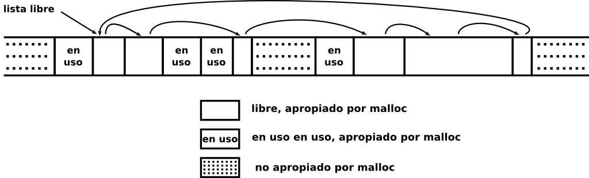
Cuando se hace una solicitud, se rastrea la lista libre hasta que se encuentra un bloque suficientemente grande. Este algoritmo es llamado "de primer ajuste" (first-fit), en contraste con (best fit), que busca el bloque mas pequeño que satisfaga la solicitud. Si el bloque es exactamente del tamaño requerido, se desliga de la lista y se entrega al usuario. Si el bloque es demasiado grande se divide, y la cantidad apropiada es entregada al usuario mientras que el resto permanece en la lista libre. Si no se encuentra un bloque suficientemente grande, algun otro trozo grande se obtiene del sistema operativo y se enlaza a la lista libre.
La liberacion tambien provoca una busqueda en la lista libre, para encontrar el lugar apropiado para insertar el bloque que esta siendo liberado. Si el bloque que esta siendo liberado es adyacente a un bloque libre en cualquiera de sus lados, se une con el en un bloque unico mas grande, por lo que el almacenamiento no se fragmenta demasiado. Determinar la adyacencia es facil puesto que la lista libre es mantenida en orden ascendente de direcciones.
Un problema, al que aludimos en el capitulo 5, es asegurar que el
almacenamiento regresado por malloc este alineado apropiadamente
para los objetos que se almacenaran en el. Aunque las maquinas
varian, para cada una existe un tipo que es el mas restrictivo: si
el tipo mas restrictivo puede ser almacenado en una direccion
particular, todos los otros tipos tambien lo seran. En algunas
maquinas, el tipo mas restrictivo es un double; en otras, basta
int o long.
Un bloque libre contiene un apuntador al siguiente bloque de la cadena, un registro del tamaño del bloque, y luego el espacio disponible en si; la informacion de control que esta al inicio es llamada el encabezado. Para simplificar la alineacion, todos los bloques son multiplos del tamaño del encabezado, y este se alinea apropiadamente. Esto se logra mediante una union que contiene la estructura deseada del encabezado y una ocurrencia del tipo de alineacion mas restrictivo, al que arbitrariamente hemos hecho long:
typedef long Align; /* para alineamiento al limite mayor */ union header { /* encabezado del bloque */ struct { union header *ptr; /* siguiente bloque si esta en la lista libre */ unsigned size; /* tamaño de este bloque */ } s; Align x; /* obliga a la alineacion de bloques */ }; typedef union header Header;
El campo Align nunca es utilizado; solo hace que cada encabezado
este alineado al limite del peor caso.
En malloc, el tamaño requerido en caracteres es redondeado al
numero apropiado de unidades de tamaño del encabezado; el bloque
que sera asignado contiene una unidad mas, para el encabezado en
si, y este es el valor grabado en el campo size. El apuntador
regresado por malloc apunta al espacio libre, no al
encabezado. El usuario puede hacer cualquier cosa con el espacio
requerido, pero si algo se escribe fuera del espacio asignado, la
lista se puede desorganizar.
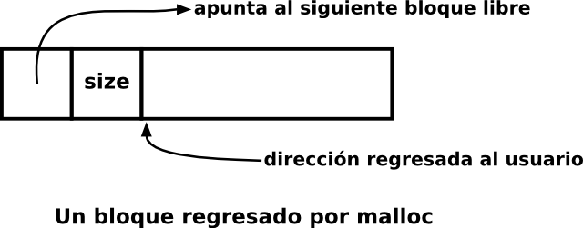
El campo size es necesario debido a que los bloques controlados
por malloc no requieren ser contiguos - no es posible calcular
tamaños mediante aritmetica de apuntadores.
La variable base se usa para comenzar. Si freep es NULL, como
lo es en la primer llamada de malloc, entonces se crea una lista
libre degenerada que contiene un bloque de tamaño cero y apunta a
si misma. En cualquier caso, luego se busca en la lista libre. La
busqueda de un bloque libre de tamaño adecuado principia en el
punto (freep) donde se encontro el ultimo bloque; esta estrategia
ayuda a mantener la lista homogenea. Si se encuentra un bloque
demasiado grande, al usuario se le regresa la parte final; de esta
forma el encabezado del original solo necesita tener ajustado su
tamaño. En todos los casos, el apuntador regresado al usuario
apunta al espacio libre dentro del bloque, que principia una unidad
mas alla del encabezado.
static Header base; /* lista vacia para iniciar */ static Header *freep = NULL; /* inicio de una lista libre */ /* malloc: asignador de almacenamiento de proposito general */ void *malloc(unsigned nbytes) { Header *p, *prevp; Header *morecore(unsigned); unsigned nunits; nunits = (nbytes+sizeof(Header)-1)/sizeof(union header) + 1; if ((prevp = freep) == NULL) { /* no hay lista libre aun */ base.s.ptr = freep = prevp = &base; base.s.size = 0; } for (p = prevp->s.ptr; ; prevp = p, p = p->s.ptr) { if (p->s.size >= nunits) { /* suficientemente grande */ if (p->s.size == nunits) /* exacto */ prevp->s.ptr = p->s.ptr; else { /* asigna la parte final */ p->s.size -= nunits; p += p->s.size; p->s.size = nunits; } freep = prevp; return (void *)(p+1); } if (p == freep) /* dio la vuelta a !a lista libre */ if ((p = morecore(nunits)) == NULL) return NULL; /* nada libre */ } }
La funcion morecore obtiene espacio de almacenamiento del sistema
operativo. Los detalles de como lo hace varian de sistema a
sistema. Debido a que pedir memoria al sistema es una operacion
comparativamente costosa, no deseamos hacerlo en cada llamada a
malloc, asi que morecore solicita al menos NALLOC unidades;
este bloque grande sera seccionado de acuerdo con las necesidades.
Despues de fijar el campo size, morecore inserta la memoria
adicional llamando a free.
#define NALLOC 1024 /* minimo # de unidades por requerir */ /* morecore: solicita mas memoria al sistema */ static Header *morecore(unsigned nu) { char *cp, *sbrk(int); Header *up; if (nu < NALLOC) nu = NALLOC; cp = sbrk(nu * sizeof(Header)); if (cp == (char *) -1) /* no hay nada de espacio */ return NULL; up = (Header *) cp; up->s.size = nu; free((void *)(up+1)); return freep; }
La llamada sbrk(n) al sistema UNIX regresa un apuntador a n
bytes mas de almacenamiento, sbrk regresa -1 si no hubo
espacio, aunque NULL hubiera sido un mejor diseño. El -1 debe
ser forzado a char * para que pueda ser comparado con el valor de
retorno. Nuevamente, las conversiones forzadas hacen a la funcion
relativamente inmune a los detalles de representacion de
apuntadores en maquinas diferentes. Hay, sin embargo, una
suposicion mas; que los apuntadores a bloques diferentes regresados
por sbrk pueden ser comparados. Esto no es garantizado por el
estandar, que solo permite la comparacion de apuntadores dentro de
un arreglo. Asi, esta version de malloc es portatil solo entre
maquinas para las que la comparacion general de apuntadores es
significativa.
free es la ultima seccion. Recorre la lista libre, iniciando en
freep, buscando donde insertar el bloque libre. Esto es entre dos
bloques existentes o en uno de los extremos de la lista. En
cualquier caso, si el bloque que esta siendo liberado es adyacente
a algun vecino, los bloques adyacentes se combinan. Los unicos
problemas son mantener los apuntadores señalando a las cosas
correctas y mantener los tamaños correctos.
/* free: coloca el bloque ap en la lista vacia */ void free( void *ap ){ Header *bp, *p; bp = (Header *)ap - 1; /* apunta al encabezado de un bloque */ for( p = freep; !(bp > p && bp < p->s.ptr ); p = p->s.ptr ) if( p >= p->s.ptr && (bp > p || bp < p->s.ptr) ) break; /* libera bloque al inicio o al final */ if( bp + bp->s.size == p->s.ptr ){ /* une al nbr superior */ bp->s.size += p->s.ptr->s.size; bp->s.ptr = p->s.ptr->s.ptr; } else bp->s.ptr = p->s.ptr; if( p + p->s.size == bp ){ /* une al nbr inferior */ p->s.size += bp->s.size; p->s.ptr = bp->s.ptr; } else p->s.ptr = bp; freep = p; }
Aunque la asignacion de memoria es intrinsecamente dependiente de
la maquina, el codigo anterior ilustra como pueden ser controladas
las dependencias de la maquina y confinadas a una parte muy pequeña
del programa. El uso de typedef y de union maneja la alineacion
(suponiendo que sbrk proporciona un apuntador apropiado). Las
conversiones forzosas hacen que los apuntadores se manejen adecuada
y explicitamente, e incluso se acoplan a una interfaz para el
sistema mal diseñada. Aun cuando los detalles aqui estan
relacionados con la asignacion de almacenamiento, el acercamiento
general es aplicable tambien a otras situaciones.
Ejercicio 8-6. La funcion calloc(n,size) de la biblioteca
estandar regresa un apuntador a n objetos de tamaño size, con
el almacenamiento inicializado en cero. Escriba calloc, invocando
a malloc o modificandola.
Ejercicio 8-7. malloc acepta un tamaño solicitado sin verificar
la posibilidad de que sea valido; free cree que el bloque que se
pide liberar contiene un campo de tamaño correcto. Mejore esas
rutinas para que se tomen mas molestias en la revision de errores.
Ejercicio 8-8. Escriba una rutina bfree(p,n) que libere un
bloque arbitrario p de n caracteres en la lista libre mantenida
por malloc y free. Utilizando bfree, un usuario puede agregar
un arreglo estatico o externo a la lista libre en cualquier
momento.
Apendice A: Manual de referencia
A1 Introduccion
Este manual describe al lenguaje C tal como se especifica en /Draft Proposed American National Standard for Information Systems - Programming Language C/, documento numero X3J11/88-001, con fecha 11 de enero de 1988. Este borrador no es el estandar final, y todavia es posible que ocurran algunos cambios en el lenguaje. Asi pues, este manual no describe la definicion final del lenguaje. Mas aun es una interpretacion del borrador propuesto del estandar, no el estandar en si, aunque se ha tenido cuidado de hacerlo una guia confiable.
En su mayor parte, este manual sigue la linea amplia del borrador estandar, que a su vez sigue la de la primera edicion de este libro, aunque la organizacion difiere en el detalle. Excepto por renombrar algunas producciones y porque no se formalizan las definiciones de los componentes lexicos o del preprocesador, la gramatica dada aqui para el lenguaje es equivalente a la del borrador actual.
En este manual, el material comentado se encuentra sangrado y escrito en un tipo mas pequeño, como este. A menudo estos comentarios resaltan las formas en las que el estandar ansi de C difiere del lenguaje definido por la primera edicion de este libro, o de refinamientos introducidos posteriormente en varios compiladores.
A2 Convenciones lexicas
Un programa consiste en una o mas unidades de traduccion
almacenadas en archivos. Es traducido en varias fases, que se
describen en A12. Las primeras fases hacen transformaciones lexicas
de bajo nivel, ejecutan directivas introducidas con lineas que
inician con el caracter #, y realizan macrodefiniciones y
expansiones. Cuando el preprocesamiento (A12) esta completo, el
programa se ha reducido a una secuencia de componentes lexicos.
A2.1 Componentes lexicos (tokens)
Existen seis clases de componentes lexicos: identificadores, palabras reservadas, constantes, cadenas literales, operadores y otros separadores. Los espacios, tabuladores horizontales y verticales, nueva linea, avance de forma y comentarios, como se describen adelante (en su conjunto, llamados "espacio en blanco") son ignorados, excepto los que separan componentes. Se requiere de algun espacio en blanco para separar identificadores de otra manera adyacentes, palabras reservadas y constantes.
Si el flujo de entrada se ha separado en componentes hasta un caracter determinado, el siguiente componente es la cadena mas larga de caracteres que puede constituir uno.
A2.2 Comentarios
Los caracteres /* inician un comentario, que termina con los
caracteres */. Los comentarios no se anidan y no pueden estar
dentro de cadenas o caracteres literales.
A2.3 Identificadores
Un identificador es una secuencia de letras y digitos. El primer
caracter debe ser una letra; el subguion _ cuenta como una
letra. Las letras minusculas y mayusculas son diferentes. Los
identificadores pueden tener cualquier longitud y, para
identificadores internos, al menos los primeros 31 caracteres son
significativos; algunas implantaciones pueden hacer que mas
caracteres sean significativos. Los identificadores internos
incluyen los nombres de macros del preprocesador y todos los otros
nombres que no tienen ligado externo (A11.2). Los identificadores
con ligado externo estan mas restringidos: las implantaciones
pueden hacer que solo sean significativos seis caracteres y pueden
ignorar la distincion entre mayusculas y minusculas.
A2.4 Palabras reservadas
Los siguientes identificadores son palabras reservadas y no se pueden utilizar de otra manera:
| auto | double | int | struct |
| break | else | long | switch |
| case | enum | register | typedef |
| char | extern | return | union |
| const | float | short | unsigned |
| continue | for | signed | void |
| default | goto | sizeof | volatile |
| do | if | static | while |
Algunas implantaciones tambien reservan las palabras fortran y
asm.
Las palabras const, signed y volatile son nuevas en el
estandar ANSI; enum y void son nuevas desde la primera
edicion, pero en uso comun: entry, antes reservada pero nunca
usada, ya no esta reservada. Dependiendo de las decisiones del
comite x3j11, la palabra noalias tambien puede estar
reservada.
A2.5 Constantes
Hay varias clases de constantes. Cada una tiene un tipo de dato; en A4.2 se discuten los tipos basicos.
constante: constante-entera constante-de-caracter constante-flotante constante-de-enumeracion
A2.5.1 Constantes enteras
Una constante entera que consiste en una secuencia de digitos se
toma como octal si inicia con 0 (digito cero), de otra manera
es decimal. Las constantes octales no contienen los digitos 8 o
9. Una secuencia de digitos precedida por Ox o OX (digito
cero) se toma como un entero hexadecimal. Los digitos
hexadecimales incluyen de a o A hasta la f o F con
valores 10 al 15.
Una constante entera puede tener la letra u o U como sufijo,
lo cual especifica que es unsigned. Tambien puede tener como
sufijo la letra l o L para estipular que es long.
El tipo de una constante entera depende de su forma, valor y
sufijo (vease A4 para una discusion de tipos). Un decimal sin
sufijo tiene el primero de estos tipos, en el que su valor pueda
ser representado: int, long int, unsigned long int. Si es
octal o hexadecimal sin sufijo, tiene el primer valor posible de
estos tipos: int, unsigned int, long int, unsigned long
int. Si tiene el sufijo u o U, entonces es unsigned int,
unsigned long int. Si tiene el sufijo l o L, entonces es
long int, unsigned long int. Si una constante entera tiene el
sufijo UL, entonces es unsigned long.
La elaboracion de los tipos de constantes enteras va
considerablemente mas alla de la primera edicion, que
simplemente hacia que las grandes constantes enteras fueran
long. Los sufijos U son nuevos.
A2.5.2 Constantes de caracter
Una constante de caracter es una secuencia de uno o mas caracteres encerrados entre apostrofos, como 'x'. El valor de una constante de caracter con un solo caracter es el valor numerico del caracter en el conjunto de caracteres de la maquina al tiempo de ejecucion. El valor de una constante multicaracter esta definido por la implantacion.
Las constantes de caracter no contienen el caracter ’ o nueva
linea; para representarlos, asi como a algunos otros caracteres,
se pueden utilizar las siguientes secuencias de escape.
| nueva linea | NL (LF) | \n |
| tab horizontal | HT | \t |
| tab vertical | VT | \v |
| retroceso | BS | \b |
| regreso de carro | CR | \r |
| avance de forma | FF | \f |
| señal audible | BEL | \a |
| diagonal inversa | \ | \\ |
| interrogacion | ? | \? |
| apostrofo | ' | \' |
| comillas | " | \" |
| numero octal | ooo | \ooo |
| numero hexadecimal | hh | \xhh |
El escape \ooo consiste en la diagonal inversa seguida por 1,
2 o 3 digitos octales, que estipulan el Valor del caracter
deseado. Un ejemplo comun de esta construccion es \0 (no
seguido por un digito), que especifica el caracter NUL. El
escape \xhh consiste en la diagonal inversa seguida por x,
seguida por digitos hexadecimales, que estipulan el valor de
caracter deseado. No hay limite en el numero de digitos, pero el
comportamiento queda indefinido si el valor de caracter
resultante excede al del caracter mas grande. Para caracteres
octales o hexadecimales, si la implantacion trata al tipo char
como signed, el valor es extendido en signo como si se forzara a
ser de tipo char. Si el caracter que sigue a \ no es uno de
los especificados, el comportamiento no esta definido.
En algunas implantaciones, existe un conjunto extendido de
caracteres que no se puede representar por el tipo char. Una
constante en este conjunto extendido se escribe con una L
precedente, por ejemplo L'x', y se llama una constante de
caracter amplio. Tal constante tiene tipo wchar_t, un tipo
entero definido en el header <stddef.h>. Como con las
constantes de caracter ordinarias, se pueden emplear escapes
octales o hexadecimales; el efecto esta indefinido si el valor
especificado excede al que se representa con wchar_t.
Algunas de estas secuencias de escape son nuevas, en particular
la represen hexadecimal de caracteres. Los caracteres extendidos
tambien son nuevos. Los juegos de caracteres comunmente usados en
America y Europa occidental se pueden codificar para quedar en el
tipo char; la intencion principal de agregar wchar_t fue
adaptarse a los lenguajes asiaticos.
A2.5.3 Constantes flotantes
Una constante flotante consta de una parte entera, un punto
decimal, una parte fraccionaria, una e o E, un exponente
entero signado optativo y un tipo sufijo optativo entre f o
F, l o L. Las partes entera y fraccionaria constan de una
secuencia de digitos. Cualquiera de las partes entera o
fraccionaria (no ambas) puede omitirse; cualquiera de las partes
del punto decimal o la e y el exponente (no ambas) pueden
omitirse. El tipo esta determinado por el sufijo; F o f la
hacen float, L o l la hacen long double; de otra manera
es double.
Los sufijos en constantes flotantes son nuevos.
A2.5.4 Constantes de enumeracion
Los identificadores declarados como enumeradores (vease A8.4)
son constantes de tipo int.
A2.6 Cadenas literales
Una cadena literal, tambien llamada cadena constante es una
secuencia de caracteres delimitados por comillas, como en "…"
Una cadena tiene el tipo "arreglo de caracteres" y categoria de
almacenamiento static (vease A4, abajo) y se inicializa con los
caracteres dados. El que cadenas identicas sean distintas esta
definido por la implantacion, y el comportamiento de un programa
que intenta alterar una cadena literal esta indefinido.
Cadenas literales adyacentes se concatenan en una sola cadena.
Despues de cualquier concatenacion, se agrega un byte nulo \0 a
la cadena, de modo que los programas que rastrean la cadena puedan
encontrar el fin. Las cadenas literales no contienen caracteres
nueva linea o comillas; para representarlos, se usan las mismas
secuencias de escape que para las constantes de caracter.
Como con las constantes de caracter, las cadenas literales en un
conjunto de caracteres extendido se escriben con una L
precedente, como en L"…". Las cadenas literales amplias de
caracteres tienen tipo "arreglo de wchart". La concatenacion de
cadenas literales ordinarias y amplias esta indefinida.
La especificacion de que las cadenas literales no tienen por que ser distintas, y la prohibicion en contra de modificarlas, son novedades dentro del estandar ANSI, asi como la concatenacion de cadenas literales adyacentes. Las cadenas literales de caracteres amplios son nuevas.
A3 Notacion sintactica
Dentro de la notacion sintactica que se emplea en este manual, las categorias sintacticas se indican con estilo italico, y las palabras textuales y caracteres en estilo mecanografico. Las categorias alternativas usualmente se listan en lineas separadas; en algunos casos, un conjunto amplio de alternativas cortas se presenta en una linea, marcada por la frase "uno de". Un simbolo optativo terminal o no terminal lleva el subindice "opt", de modo que, por ejemplo,
{ expresionopt }
significa una expresion optativa, encerrada entre llaves. La sintaxis se resume en A13.
A diferencia de la gramatica empleada en la primera edicion de este libro, la que aqui se da hace explicita la precedencia y asociatividad de los operadores de expresion.
A4 Significado de los identificadores
Los identificadores, o nombres, se refieren a una variedad de
cosas: funciones; etiquetas de estructuras, uniones y
enumeraciones; miembros de estructuras o de uniones; constantes de
enumeracion; nombres typedef y objetos. Un objeto, algunas veces
llamado variable, es una localidad en el espacio de almacenamiento
y su interpretacion depende de dos atributos fundamentales: su
categoria de almacenamiento y su tipo. La categoria de
almacenamiento determina el tiempo de vida del almacenamiento
asociado con el objeto identificado; el tipo determina el
significado de los valores encontrados en el objeto identificado.
Un nombre tambien tiene un alcance, que es la region del programa
dentro de la que se conoce, y una liga, que determina si el mismo
nombre en otro alcance se refiere al mismo objeto o funcion. El
alcance y la liga se discuten en A11.
A4.1 Categorias de almacenamiento
Existen dos categorias de almacenamiento: automatica y estatica.
Varias palabras reservadas, junto con el contexto de la
declaracion de un objeto, especifican su categoria de
almacenamiento. Los objetos automaticos son locales a un bloque
(A9.3), y son descartados al salir del bloque. Las declaraciones
dentro de un bloque crean objetos automaticos si no se menciona
una especificacion de categoria de almacenamiento, o si se emplea
el especificador auto. Los objetos declarados como register
son automaticos, y se almacenan (si es posible) en registros
rapidos de la maquina.
Los objetos estaticos pueden ser locales a un bloque o externos a
todos los bloques, pero en cualquier caso mantienen su valor entre
las salidas y reentradas a funciones o bloques. Dentro de un
bloque, incluyendo uno que proporcione el codigo de una funcion,
los objetos estaticos se declaran con la palabra reservada
static. Los objetos que se declaran fuera de todos los bloques,
al mismo nivel que la definicion de las funciones, son siempre
estaticos. Se pueden hacer locales a una unidad de traduccion en
particular por el uso de la palabra reservada static; esto les
otorga liga interna. Se hacen globales a un programa completo
omitiendo una categoria explicita de almacenamiento, o utilizando
la palabra reservada extern; esto les otorga liga externa.
A4.2 Tipos basicos
Existen varios tipos basicos. El header estandar <limits.h>
que se describe en el apendice B define los valores mayores y
menores de cada tipo dentro de la implantacion local. Los numeros
dados en el apendice B muestran las menores magnitudes aceptables.
Los objetos declarados como caracteres (char) son
suficientemente grandes para almacenar cualquier miembro del
conjunto de caracteres en ejecucion. Si un caracter genuino de ese
conjunto se almacena en un objeto char, su valor es equivalente
al codigo entero para ese caracter, y es no negativo. Se pueden
almacenar otras cantidades en variables char, pero el rango de
valores disponibles, y en especial si el valor tiene signo,
depende de la implantacion.
Los caracteres sin signo declarados unsigned char consumen la
misma cantidad de espacio que los caracteres sencillos, pero
siempre aparecen como no negativos; los caracteres explicitamente
signados que se declaran signed char toman igualmente el mismo
espacio que los caracteres sencillos.
unsigned char no aparece en la primera edicion de este libro,
pero es de uso comun. signed char es nuevo.
Ademas de los tipos char, hay tres tamaños de enteros,
declarados como short int, int, y long int. Los objetos
int simples tienen el tamaño natural sugerido por la
arquitectura de la maquina donde se ejecuta; los otros tamaños se
proporcionan para cumplir con necesidades especiales. Los enteros
mas grandes proporcionan por lo menos tanto almacenamiento como
los menores, pero la implantacion puede hacer a los enteros
simples equivalentes a los enteros cortos, o a los enteros
largos. Todos los tipos int representan valores con signo a
menos que se especifique lo contrario.
Los enteros sin signo, declarados mediante la palabra reservada
unsigned, obedecen a las leyes de la aritmetica modulo 2, donde
n es el numero de bits en la representacion, por lo que la
aritmetica sobre cantidades signadas nunca puede desbordarse. El
conjunto de valores no negativos que se pueden almacenar en
objetos con signo es un subconjunto de los que se pueden almacenar
en el correspondiente objeto sin signo, y la representacion para
los valores en comun es la misma.
Cualquiera de los tipos punto flotante de precision sencilla
(float), punto flotante de precision doble (double) y punto
flotante de precision extra (long double) puede ser sinonimo,
pero los ultimos en la lista son al menos tan precisos como los
que los anteceden.
long double es nuevo. La primera edicion hizo a long float
equivalente a double; esto se ha rechazado.
Las enumeraciones son tipos unicos que tienen valores enteros; asociado con cada enumeracion hay un conjunto de constantes nombradas (A8.4). Las enumeraciones se comportan como enteros, pero es comun que un compilador de una advertencia cuando un objeto de un tipo de enumeracion en particular se asigna a algo que no sea una de sus constantes o una expresion de su tipo.
Debido a que los objetos de estos tipos se pueden interpretar como
numeros, se hara referencia a ellos como tipos aritmeticos. Los
tipos char e int de todos los tamaños, cada uno con o sin
signo, y tambien los tipos de enumeracion, se llamaran
conjuntamente tipos enteros. Los tipos float, double y long
double se llamaran tipos flotantes.
El tipo void especifica un conjunto vacio de valores. Se usa
como el tipo regresado por funciones que no generan un valor.
A4.3 Tipos derivados
Ademas de los tipos basicos, existe una categoria conceptualmente infinita de tipos derivados, construidos a partir de los tipos fundamentales en las formas siguientes:
- arreglos de objetos de un tipo dado;
- funciones que regresan objetos de un tipo dado;
- apuntadores a objetos de un tipo dado;
- estructuras que contienen una secuencia de objetos de varios tipos;
- uniones capaces de contener un objeto cualquiera de varios tipos.
En general, estos metodos de construccion de objetos se pueden aplicar en forma recursiva.
A4.4 Calificadores de tipo
Un tipo de objeto puede tener calificadores adicionales. El
declarar const a un objeto anuncia que su valor no cambiara;
declararlo volatile anuncia que tiene propiedades especiales de
importancia para la optimizacion. Ningun calificador afecta el
rango de valores o propiedades aritmeticas del objeto. Los
calificadores se discuten en A8.2.
A5 Objetos y valores-l
Un objeto es una region de almacenamiento con nombre; un valor-l
es una expresion que se refiere a un objeto. Un ejemplo obvio de
una expresion valor-l es un identificador con un tipo adecuado y
una categoria de almacenamiento. Existen operadores que producen
valores-l: por ejemplo, si E es una expresion de tipo apuntador,
entonces *E es una expresion valor-1 que se refiere al objeto al
cual apunta E. El nombre "valor-l" proviene de la expresion de
asignacion E1 = E2 en la que el operador izquierdo E1 debe ser
una expresion valor-l. La discusion de cada operador especifica si
espera operandos valor-l y si entrega un valor-l.
A6 Conversiones
Algunos operadores pueden, dependiendo de sus operandos, provocar la conversion del valor de un operando de un tipo a otro. Esta seccion explica el resultado que se espera de tales conversiones. A6.5 resume las conversiones demandadas por la mayoria de los operadores ordinarios; en donde se requiera, sera complementada con la discusion de cada operador.
A6.1 Promocion entera
Un caracter, un entero corto o un campo entero de bits, todos con
o sin signo, o un objeto de tipo enumeracion, se puede utilizar
dentro de una expresion en cualquier lugar en donde se pueda usar
un entero. Si un int puede representar a todos los valores del
tipo original, entonces el valor es convertido a int; de otra
manera el valor es convertido a unsigned int. Este proceso se
llama promocion entera.
A6.2 Conversiones enteras
Un entero se convierte a un tipo sin signo dado encontrando el menor valor no negativo que sea congruente con ese entero, modulo uno mas que el mayor valor que se pueda representar en el tipo sin signo. En una representacion complemento a dos, esto es equivalente al truncamiento por la izquierda si el patron de bits del tipo sin signo es mas estrecho, y al llenado con ceros de valores sin signo y extension de signo en valores con signo si el tipo sin signo es mas amplio.
Cuando cualquier entero se convierte a un tipo con signo, el valor no se cambia si puede ser representado en el nuevo tipo, y en otro caso esta definido por la implantacion.
A6.3 Entero y flotante
Cuando un valor de tipo flotante se convierte a un tipo entero, la parte fraccionaria se descarta; si el valor resultante no puede ser representado en el tipo entero, el comportamiento no esta definido. En particular, el resultado de convertir valores flotantes negativos a tipos enteros sin signo no esta especificado.
Cuando un valor de tipo entero se convierte a flotante, y el valor esta en el rango representable pero no es exactamente representable, entonces el resultado puede ser el valor siguiente mas alto o mas bajo. Si el resultado esta fuera de rango, el comportamiento esta indefinido.
A6.4 Tipos flotantes
Cuando un valor flotante menos preciso se convierte a un tipo flotante igual o mas preciso, el valor no se modifica. Cuando un valor flotante mas preciso se convierte a un tipo flotante menos preciso, y el valor esta dentro del rango representable, el resultado puede ser el siguiente valor representable mas alto o el siguiente mas bajo. Si el resultado esta fuera de rango, el comportamiento esta indefinido.
A6.5 Conversiones aritmeticas
Muchos operadores provocan una conversion y producen tipos resultantes en forma semejante. El efecto es pasar los operandos a un tipo comun, que es tambien el tipo del resultado. A este patron se le llama conversiones aritmeticas usuales.
- Primero, si cualquier operando es un
long double, el otro es convertido along double. - De otra manera, si cualquier operando es
double, el otro es convertido adouble. - De otra manera, si cualquier operando es
float, el otro es convertido afloat. - De otra manera, se realiza promocion entera en ambos operandos;
despues, si cualquier operando es
unsigned long int, el otro es convertido aunsigned long int. - De otra manera, si un operando es
long inty el otro esunsigned int, el efecto depende de si unlong intpuede representar a todos los valores de ununsigned int; si es asi, el operandounsigned intes convertido along int; si no lo es, ambos son convertidos aunsigned long int. - De otra manera, si un operando es
long int, el otro es convertido along int. - De otra manera, si cualquier operando es
unsigned int, el otro es convertido aunsigned int. - De otra manera, ambos operandos tienen tipo
int.
Aqui hay dos cambios. Primero, la aritmetica sobre operandos
float se puede realizar en precision sencilla, en lugar de
doble; la primera edicion especificaba que toda la aritmetica
flotante era de doble precision. Segundo, los tipos sin signo
mas pequeños, cuando se combinan con un tipo con signo mayor, no
propagan la propiedad de no signado al tipo resultante; en la
primera edicion, siempre dominaba lo no signado. Las nuevas
reglas son ligeramente mas complicadas, pero de alguna forma
reducen las sorpresas que pueden ocurrir cuando una cantidad sin
signo encuentra a otra con signo. Aun pueden ocurrir resultados
inesperados cuando una expresion sin signo es comparada con una
expresion con signo del mismo tamaño.
A6.6 Apuntadores y enteros
Una expresion de tipo entero puede ser sumada o restada de un apuntador; en tal caso, la expresion entera es convenida tal como se especifica en la discusion del operador de adicion (A7.7).
Dos apuntadores a objetos del mismo tipo, dentro del mismo arreglo, pueden ser restados; el resultado es convertido a un entero como se especifica en la discusion del operador de sustraccion (A7.7).
Una expresion entera constante con valor 0, o esa expresion
forzada al tipo void *, puede ser convertida, por medio de un
cast, por asignacion, o por comparacion, a un apuntador de
cualquier tipo. Esto produce un apuntador nulo que es igual a otro
apuntador nulo del mismo tipo, pero diferente a cualquier
apuntador a una funcion u objeto.
Se permiten otras ciertas conversiones que involucran apuntadores, pero tienen aspectos dependientes de la implantacion. Se deben especificar con un operador explicito de conversion de tipo o cast (A7.5 y A8.8 ).
Un apuntador se puede convertir a un tipo entero suficientemente grande para mantenerlo; el tamaño requerido depende de la implantacion. La funcion de mapeo tambien depende de la implantacion.
Un objeto de tipo entero se puede explicitamente convertir a un apuntador. El mapeo siempre lleva un entero suficientemente amplio convertido de un apuntador de regreso al mismo apuntador, pero de otra manera es dependiente de la implantacion.
Un apuntador de un tipo se puede convertir a un apuntador a otro
tipo. El apuntador resultante puede causar errores de
direccionamiento si no se refiere a un objeto adecuadamente
alineado en la memoria. Se garantiza que un apuntador a un objeto
se puede convertir a un apuntador a un objeto cuyo tipo requiere
de una menor o igualmente estricta alineacion en el almacenamiento
y regresado de nuevo sin cambio; la nocion de "alineacion" es
dependiente de la implantacion, pero los objetos de tipo char
tienen los requisitos de alineacion menos estrictos. Como se
describe en A6.8, un apuntador se puede convertir a tipo void *
y regresado de nuevo sin cambio.
Finalmente, un apuntador a una funcion se puede convertir a un apuntador a otro tipo de funcion. La llamada a la funcion especificada por el apuntador convertido es dependiente de la implantacion; sin embargo, si el apuntador convertido es reconvertido a su tipo original, el resultado es identico al apuntador original.
A6.7 Void
El (inexistente) valor de un objeto void no se puede utilizar en
ninguna forma, ni se puede aplicar la conversion explicita o
implicita a ningun tipo no void. Debido a que la expresion
void denota un valor inexistente, solo se puede utilizar donde
no sea requerido el valor, por ejemplo, una proposicion de
expresion (A9.2) o el operando izquierdo de un operador coma
(A7.18).
Una expresion se puede convertir a tipo void con un cast. Por
ejemplo, una conversion forzada a void deja documentado el
rechazo del valor de una llamada a funcion utilizada como
proposicion de expresion.
void no aparecia en la primera edicion de este libro, pero se
ha vuelto comu desde entonces.
A6.8 Apuntadores a void
Cualquier apuntador se puede convertir a tipo void * sin perdida
de informacion. Si el resultado se regresa al tipo de apuntador
original, este es recuperado. A diferencia de la conversion
apumador-a-apuntador discutida en A6.6, que requiere un cast
explicito, los apuntadores pueden ser asignados hacia y desde
apuntadores de tipo void * y pueden ser comparados con ellos.
Esta interpretacion de apuntadores void * es nueva;
anteriormente, los apuntadores char * jugaban el papel de
apuntadores genericos. El estandar ANSI especificamente
consiente el encuentro de apuntadores void * con apuntadores a
objetos en asignaciones y relaciones, mientras que requiere
cast explicitos para mezclas de apuntadores.
A7 Expresiones
La precedencia de los operadores en expresiones es la misma que el
orden de las subsecciones principales de esta seccion, primero la
mas alta precedencia. Asi, por ejemplo, las expresiones a las que
se hace referencia como operandos de + (A7.7) son las definidas
en A7.1-A7.6. Dentro de cada subseccion, los operadores tienen la
misma precedencia. En cada subseccion se especifica la
asociatividad por la izquierda o la derecha para los operadores
discutidos alli. La gramatica incorpora la precedencia y
asociatividad de los operadores de la expresion y se resume en A13.
La precedencia y asociatividad de los operadores esta especificada completamente, pero el orden de evaluacion de las expresiones esta, con ciertas excepciones, indefinido, aun si las subexpresiones involucran efectos colaterales. Esto es, a menos que la definicion de un operador garantice que sus operandos se evaluen en un orden particular, la implantacion esta en libertad de evaluar los operandos en cualquier orden, o incluso intercalar su evaluacion. Sin embargo, cada operador combina los valores producidos por sus operandos en una forma compatible con el analisis gramatical de la expresion en que aparece.
El comite ANSI decidio, ultimamente en sus reportes, restringir la anterior libertad de reordenar las expresiones que involucran operadores matematicamente conmutativos y asociativos, pero que pueden no ser asociativos computacionalmente. En la practica, el cambio solo afecta a los calculos de punto flotante cercanos a los limites de su precision y en situaciones en donde es posible el desbordamiento.
El manejo del desbordamiento, errores de division y otras
condiciones de error dentro de la evaluacion de expresiones no esta
definido por el lenguaje. La mayoria de las realizaciones
existentes de C ignoran el desbordamiento en la evaluacion de
expresiones y asignaciones enteras con signo, pero este
comportamiento no esta garantizado. El trato de la division entre
0, y todas las condiciones de error de punto flotante, varia
entre las implantaciones; algunas veces es ajustable mediante el
uso de funciones no estandar de biblioteca.
A7.1 Generacion de apuntadores
Si el tipo de una expresion o subexpresion es un "arreglo de T",
para algun tipo T, entonces el valor de la expresion es un
apuntador al primer objeto del arreglo, y el tipo de la expresion
es alterado a "apuntador a T". Esta conversion no sucede si la
expresion es el operando de un operador & unario, o de ++,
--, sizeof o el operando izquierdo de un operador de
asignacion o el operador .. De modo semejante, una expresion de
tipo "funcion que regresa T", excepto cuando se utiliza como el
operando del operador &, es convertida a "apuntador a funcion
que regresa T". Una expresion que ha sufrido una de estas
conversiones no es valor-l.
A7.2 Expresiones primarias
Las expresiones primarias son identificadores, constantes, cadenas, o expresiones entre parentesis.
expresion primaria: identificador constante cadena (expresion)
Un identificador es una expresion primaria, siempre que haya sido declarado adecuadamente tal como se discutio anteriormente. Su tipo esta especificado por su declaracion. Un identificador es un valor-l si se refiere a un objeto (A5) y si su tipo es aritmetico, estructura, union o apuntador.
Una constante es una expresion primaria. Su tipo depende de su forma, tal como se discutio en A2.5.
Una cadena es una expresion primaria. Su tipo es originalmente
"arreglo de char" (para cadenas de caracteres amplios, "arreglo
de wchar_t"), pero siguiendo la regla dada en A7.1, usualmente
se modifica a "apuntador a char" (wchar_t) y el resultado es
un apuntador al primer caracter de la cadena. La conversion
tampoco ocurre en ciertos inicializadores; vease A8.7.
Una expresion entre parentesis es una expresion primaria cuyo tipo y valor son identicos a los de una expresion que no lo este. La presencia de parentesis no afecta el que la expresion sea un valor-l.
A7.3 Expresiones posfijas
Los operadores de expresiones posfijas se agrupan de izquierda a derecha.
expresion-posfija: expresion-primaria expresion-posfija[expresion] expresion-posfija(lista-de-expresiones-argumentoopt) expresion-posfija.identificador expresion-posfija->identificador expresion-posfija++ expresion-posfija–
lista-expresiones-argumento: expresion-de-asignacion lista-expresiones-argumento , expresion-de-asignacion
A7.3.1 Referencias a arreglos
Una expresion posfija seguida por una expresion dentro de
corchetes es una expresion posfija que denota una referencia
indexada a un arreglo. Una de las dos expresiones debe tener tipo
"apuntador a T"’, donde T es algun tipo, y la otra debe tener
tipo entero; el tipo de la expresion subindice es T. La expresion
E1[E2] es identica (por definicion) a *((E1) + (E2)). Vease
A8.6.2 para una discusion adicional.
A7.3.2 Llamadas a funciones
Una llamada a funcion es una expresion posfija, conocida como designador de funcion, seguido de parentesis que contienen una lista posiblemente vacia de expresiones de asignacion separadas por comas (A7.17), que constituyen los argumentos de la funcion. Si la expresion posfija consiste en un identificador para el que no existe una declaracion dentro del alcance actual, el identificador es explicitamente declarado como si la declaracion
extern int identificador();
hubiese sido dada en el bloque mas interno que contenga la llamada a la funcion. La expresion posfija (despues de una posible declaracion implicita y generacion de apuntador, A7.1) debe ser del tipo "apuntador a funcion que regresa T." para algun tipo de T, y el valor de la llamada a la funcion tiene el tipo T.
En la primera edicion, el tipo estaba restringido a "funcion" y
se requeria de un operador * explicito para invocar a traves
de apuntadores a funciones. El estandar ANSI esta de acuerdo
con algunos compiladores existentes permitiendo la misma
sintaxis para llamadas a funciones y a funciones especificadas
por apuntadores. La sintaxis anterior aun se puede utilizar.
El termino argumento se utiliza para una expresion pasada por una llamada a funcion; el termino parametro se emplea para un objeto de entrada (o su identificador) recibido por una definicion de funcion o descrito dentro de la declaracion de una funcion. Los terminos "argumento (parametro real)" y "argumento (parametro) formal" respectivamente, se usan algunas veces para hacer la misma distincion.
En preparacion para la llamada a una funcion, se hace una copia de cada argumento; todo el paso de argumentos es estrictamente por valor. Una funcion puede cambiar los valores de sus objetos parametros, que son copias de las expresiones argumentos, pero estos cambios no pueden afectar los valores de los argumentos. Sin embargo, es posible pasar un apuntador en el entendimiento de que la funcion puede cambiar el valor del objeto al que apunta el apuntador.
Existen dos estilos en los que se pueden declarar las funciones. En el nuevo estilo, los tipos de los parametros son explicitos y son parte del tipo de la funcion; tal declaracion se llama tambien el prototipo de la funcion. En el estilo anterior, los tipos de los parametros no se especifican. La declaracion de una funcion se trata en A8.6.3 y A10.1.
Si la declaracion de funcion dentro del alcance de una llamada
esta en el estilo anterior, entonces la promocion de argumentos
predefinida se aplica en cada argumento como sigue: la promocion
entera (A6.1) se realiza en cada argumento de tipo entero, y
cada argumento float es convertido a double. El efecto de la
llamada queda indefinido si el numero de argumentos no coincide
con el numero de parametros de la definicion de la funcion, o si
el tipo de un argumento despues de la promocion no coincide con
el del parametro correspondiente. La coincidencia de tipos
depende de si la definicion de la funcion esta en el nuevo o el
viejo estilo. Si esta en el anterior, entonces la comparacion es
entre el tipo promovido del argumento de la llamada y el tipo
promovido del parametro; si la definicion esta en el estilo
nuevo, el tipo promovido del argumento debe ser el del parametro
en si, sin promocion.
Si la declaracion de la funcion en el alcance de una llamada esta en estilo nuevo, entonces los argumentos se convierten, como por asignacion, a los tipos de los parametros correspondientes del prototipo de la funcion. El numero de argumentos debe ser el mismo que el numero de parametros explicitamente declarados, a menos de que la lista de parametros de la declaracion termine con la notacion de coma y tres puntos (, …). En ese caso, el numero de argumentos debe igualar o exceder al numero de parametros; los argumentos mas alla de los parametros con tipo explicitamente declarado sufren la promocion predefinida de argumentos descrita en el parrafo precedente. Si la definicion de la funcion esta en el estilo anterior, entonces el tipo de cada parametro dentro del prototipo visible a la llamada debe coincidir con los parametros correspondientes de la definicion, despues de que al tipo de parametro de la definicion se le ha hecho la promocion de argumentos.
Estas reglas son especialmente complicadas debido a que deben satisfacer una mezcla de funciones en el nuevo y viejo estilos. Las mezclas se deben evitar si es posible.
El orden de evaluacion de los argumentos no esta especificado; notese que los compiladores difieren. Sin embargo, los argumentos y los designadores de funcion son completamente evaluados, incluyendo todos los efectos colaterales, antes de que se entre a la funcion. Se Permiten las llamadas recursivas a cualquier funcion.
A7.3.3 Referencias a estructuras
Una expresion posfija seguida por un punto seguido de un identificador es una expresion posfija. El primer operando de la expresion debe ser una estructura o una union, y el identificador debe nombrar a un miembro de la estructura o union. El valor es el miembro nombrado de la estructura o union y su tipo es el tipo del miembro. La expresion es un valor-l si la primera expresion es un valor-l, y si el tipo de la segunda expresion no es un tipo arreglo.
Una expresion posfija seguida por una flecha (construida con -
y >) seguida por un identificador es una expresion posfija. El
primer operando en la expresion debe ser un apuntador a una
estructura o una union y el identificador debe nombrar a un
miembro de la estructura o union. El resultado se refiere al
miembro nombrado de la estructura o union al cual apunta el
apuntador de la expresion, y el tipo es el tipo del miembro; el
resultado es un valor-l si el tipo no es arreglo.
Asi la expresion E1->MOS es lo mismo que (*E1).MOS. Las
estructuras y uniones se discuten en A8.3.
En la primera edicion de este libro ya estaba la regla de que un nombre de miembro en una expresion asi tenia que pertenecer a la estructura o union mencionada en la expresion posfija; sin embargo, una nota admitia que esta regla no se seguia firmemente. Los compiladores recientes y el ANSI la siguen.
A7.3.4 Incrementos posfijos
Una expresion posfija seguida de un operador ++ o -- es una
expresion posfija. El valor de la expresion es el valor del
operando. Despues de usar el valor, se incrementa el
operando(++) o se decrementa (--) en 1. El operando debe
ser un valor-1; vease las discusion de operadores aditivos (A7.7)
y de asignacion (A7.17) para posteriores restricciones en el
operando y detalles de la operacion. El resultado no es un
valor-l.
A7.4 Operadores unarios
Las expresiones con operadores unarios se agrupan de derecha a izquierda.
expresion-unaria: expresion-posfija ++expresion-unaria --expresion-unaria operador-unario expresion-cast sizeof expresion-unaria sizeof (nombre-de-tipo) operador-unario: uno de & * + - ~ !
A7.4.1 Operadores prefijos de incremento
Una expresion unaria precedida por un operador ++ o -- es una
expresion unaria. El operando se incrementa (++) o decrementa
(--) en 1. El valor de la expresion es el valor despues del
incremento (decremento). El operando debe ser un valor-l; vease
la discusion de operadores aditivos (A7.7) y de asignacion
(A7.17) para posteriores restricciones en el operando y detalles
de la operacion. El resultado no es un valor-l.
A7.4.2 Operador de dreccion
El operador unario & toma la direccion de su operando. El
operando debe ser el valor-l que no se refiera a un campo de bits
ni a un objeto declarado como register, o debe ser de tipo
funcion. El resultado es un apuntador al objeto o funcion al que
se refiere el valor-l. Si el tipo del operando es T, el tipo del
resultado es "apuntador a T".
A7.4.3 Operador de irtfireccion
El operador unario * denota indireccion y regresa el objeto o
funcion a que apunta su operando. Es un valor-l si el operando es
un apuntador a un objeto de tipo aritmetico, estructura, union o
apunador. Si el tipo de la expresion es un "apuntador a T" el
tipo del resultado es T.
A7.4.4 Operador mas unario
El operando del operador unario + debe tener tipo aritmetico o
apuntador y el resultado es el valor del operando. Un operando
entero sufre promocion entera. EL tipo del resultado es el tipo
del operando promovido.
El + unario es nuevo en el estandar ANSI. Se agrego por
simetria con el - unario.
A7.4.5 Operador menos unario
El operador del - unario debe tener tipo aritmetico y el
resultado es el negativo de su operando. Un operando entero sufre
promocion entera. El negativo de una cantidad sin signo se
calcula restando el valor promovido del mayor valor del tipo
promovido y agregandole uno; pero el cero negativo es cero. El
tipo del resultado es el tipo del operando promovido.
A7.4.6 Operador compemento a uno
El operando del operador unario ~ debe tener tipo entero y el
resultado es el complemento a uno de su operando. Se realiza
promocion entera. Si el operando es sin signo, el resultado se
calcula restando el valor del mayor valor del tipo promovido. Si
el operando es con signo, el resultado se calcula convirtiendo el
operando promovido al tipo sin signo correspondiente, apicando
~ y regresando al tipo con signo. El tipo del resultado es el
tipo del operando promovido.
A7.4.7 Operador de negacion logica
El operando del operaoor ! debe tener tipo aritmetico o ser un
apuntador, y el resultado es 1 si el valor de su operando se
compara igual a 0 , y 0 en caso contrario. El tipo del
resultado es int.
A7.4.8 Operador sizeol
El operador sizeof produce el numero de bytes requeridos para
almacenar un objeto del tipo de su operando. El operando es una
expresion, que no es evaluada, o un nombre de tipo entre
parentesis. Cuando sizeof se aplica a char, el resultado es
1; cuando se aplica a un arreglo, el resultado es el numero
total de bytes en el arreglo. Cuando se aplica a una estructura o
union, el resultado es el numero de bytes en el objeto,
incluyendo cualquier relleno requerido para completar a un
arreglo: el tamaño de un arreglo de n elementos es n veces el
tamaño de un elemento. El operador no se puede aplicar a un
operando de tipo funcion o de tipo incompleto, o a un campo de
bits. El resultado es un entero constante sin signo; el tipo
particular se define por la implantacion. El header estandar
<stddef.h> (vease el apendice B) define este tipo como
size_t.
A7.5 Cast
Una expresion unaria precedida por el nombre entre parentesis de un tipo provoca la conversion del valor de la expresion al tipo nombrado.
expresion-cast: expresion-unaria (nombre-de-tipo) expresion-cast
Esta construccion se llama cast (conversion forzada). Los nombres de tipo se describen en A8.8. Los efectos de conversion son descritos en A6. Una expresion con un cast no es un valor-l.
A7.6 Operadores multiplicativos
Los operadores multiplicativos *, /, y % se agrupan de
izquierda a derecha.
expresion-multiplicativa: expresion-cast expresion-multiplicativa * expresion-cast expresion-multiplicativa / expresion-cast expresion-multiplicativa % expresion-cast
Los operandos de * y / deben tener tipo aritmetico; los
operandos de % deben tener tipo entero. Las conversiones
aritmeticas usuales se realizan sobre los operandos, y predicen el
tipo del resultado.
El operador binario * denota multiplicacion.
El operador binario / produce el cociente y el operador % el
residuo de la division de primer operando entre el segundo; si el
segundo operando es 0, el resultado esta indefinido. De otra
manera, siempre es cierto que (a/b)*b + a%b es igual que a. Si
ninguno de los operandos es negativo, entonces el residuo es no
negativo y menor que el divisor; si no lo son, se garantiza solo
que el valor absoluto del residuo es menor que el valor absoluto
del divisor.
A7.7 Operadores aditivos
Los operadores aditivos + y - se agrupan de izquierda a
derecha. Si los operandos tienen tipo aritmetico, se realizan las
conversiones aritmeticas usuales. Existen algunas posibilidades
adicionales de tipos para cada operador.
expresion-aditiva: expresion-multiplicativa expresion-aditiva + expresion-multiplicativa expresion-aditiva - expresion-multiplicativa
El resultado del operador + es la suma de los operandos. Un
apuntador a un objeto que este en un arreglo y un valor de
cualquier tipo entero se pueden sumar. Lo ultimo se convierte a
una direccion de desplazamiento, multiplicandolo por el tamaño del
objeto al que el apuntador apunta. La suma es un apuntador del
mismo tipo que el apuntador original y apunta a otro objeto dentro
del mismo arreglo, desplazado apropiadamente del objeto
original. Asi, si P es un apuntador a un objeto en un arreglo,
la expresion P+1 en un apuntador al siguiente objeto en el
arreglo. Si el apuntador de la suma apunta fuera de los limites
del arreglo, excepto a la primera localidad mas alla del final, el
resultado es indefinido.
La posibilidad de apuntadores mas alla del final del arreglo es nueva. Esto legitimiza una expresion idiomatica comun para iterar sobre los elementos de un arreglo.
El resultado del operador - es la diferencia de los operandos.
Un valor de cualquier tipo entero se puede restar de un apuntador,
y se aplican las mismas conversiones y condiciones que para la
adicion.
Si se restan dos apuntadores a objetos del mismo tipo, el
resultado es un valor entero con signo que representa el
desplazamiento entre los objetos apuntados; los apuntadores a
objetos sucesivos difieren en 1. El tipo del resultado depende
de la implantacion, pero esta definido como ptrdiff_t en el
header estandar <stddef.h>. El valor esta indefinido a menos
de que los apuntadores apunten a objetos dentro del mismo arreglo;
sin embargo, si P apunta al ultimo miembro de un arreglo,
entonces (P+1)-P tiene valor 1.
A7.8 Operadores de corrimiento
Los operadores de corrimiento >> y << se agrupan de izquierda a
derecha. Para ambos operadores, cada operando debe ser entero y
esta sujeto a las promociones enteras. El tipo del resultado es
el del operando promovido de la izquierda. El resultado esta
indefinido si el operando de la derecha es negativo, mayor o igual
al numero de bits del tipo de la expresion de la izquierda.
expresion-de-corrimiento: expresion-aditiva expresion-de-corrimiento << expresion-aditiva expresion-de-corrimiento >> expresion-aditiva
El valor de E1<<E2 es E1 (interpretado como un patron de bits)
recorrido a la izquierda E2 bits; en ausencia de desbordamiento,
esto es equivalente a la multiplicacion por 2E2. El valor de
E1>>E2 es El recorrido a la derecha E2 posiciones de bits. El
corrimiento a la derecha es equivalente a la division entre 2E2
si E1 es unsigned o si tiene un valor no negativo; de otra
forma el resultado esta definido por la implantacion.
A7.9 Operadores de relacion
Los operadores de relacion se agrupan de izquierda a derecha, pero
esto no es de utilidad, a<b<c se analiza como (a<b)<c, y a<b
se evalua como 0 o como 1.
expresion-relacional: expresion-de-corrimiento expresion-relacional < expresion-de-corrimiento expresion-relacional > expresion-de-corrimiento expresion-relacional <= expresion-de-corrimiento expresion-relacional >= expresion-de-corrimiento
Los operadores < (menor que), > (mayor que), <= (menor o
igual a) y >= (mayor o igual a) dan todos 0 si la relacion
especificada es falsa, y 1 si es verdadera. El tipo del
resultado es int. Las conversiones aritmeticas usuales se
realizan sobre los operandos aritmeticos. Pueden compararse los
apuntadores a objetos del mismo tipo; el resultado depende de las
localidades relativas en el espacio de direccionamiento de los
objetos apuntados. La comparacion de apuntadores esta definida
solo para partes del mismo objeto: si dos apuntadores apuntan al
mismo objeto simple, se comparan como iguales; si los apuntadores
lo hacen a miembros de la misma estructura, los apuntadores a
objetos declarados mas adelante en la estructura se comparan como
mayores; si los apuntadores son a miembros de la misma union, se
comparan como iguales; si los apuntadores hacen referencia a
miembros de un arreglo, la comparacion es equivalente a la
comparacion de los correspondientes subindices. Si P apunta al
ultimo miembro de un arreglo, entonces P+1 se compara como mayor
que P, incluso aunque P+1 apunte fuera del arreglo. De otra
manera, la comparacion de apuntadores esta indefinida.
Estas reglas liberan algo las restricciones establecidas en la primera edicion, permitiendo la comparacion de apuntadores a diferentes miembros de una estructura o union. Tambien legalizan la comparacion con un apuntador justo mas alla del final de un arreglo.
A7.10 Operadores de igualdad
expresion-de-igualdad: expresion-relacional expresion-de-igualdad == expresion-relacional expresion-de-igualdad != expresion-relacional
Los operadores == (igual a) y != (no igual a) son analogos a
los operadores de relacion excepto por su menor precedencia. (Asi
a<b == c<d es 1 cuando a<b y c<d tengan los mismos valores
de verdad).
Los operadores de igualdad siguen las mismas reglas que los
operadores de relacion, pero permiten posibilidades adicionales:
un apuntador puede ser comparado con una expresion constante
entera con valor 0, o con un apuntador a void. Vease A6.6.
A7.11 Operador AND para bits
expresion-AND: expresion-de-igualdad expresion-AND & expresion-de-igualdad
Se realizan las conversiones aritmeticas usuales; el resultado es la funcion AND de bits de los operandos. El operador se aplica solo a operandos enteros.
A7.12 Operador OR exclusivo para bits
expresion-OR-exclusivo: expresion-AND expresion-OR-exclusivo ^ expresion-AND
Se realizan las conversiones aritmeticas usuales; el resultado es la funcion OR exclusivo de los operandos. El operador se aplica solo a operandos enteros.
A7.13 Operador OR inclusivo para bits
expresion-OR-inclusivo: expresion-OR-exclusivo expresion-OR-inclusivo | expresion-OR-exclusivo
Se realizan las conversiones aritmeticas usuales; el resultado es la funcion OR inclusivo de sus operandos. El operador se aplica solo a operandos enteros.
A7.14 Operador logico AND
expresion-logica-AND: expresion-OR-inclusivo expresion-logica-AND && expresion-OR-inclusivo
El operador && se agrupa de izquierda a derecha. Regresa 1 si
ambos operandos se comparan como diferentes de cero; de otra
manera, regresa 0. A diferencia de &, && garantiza la
evaluacion de izquierda a derecha: el primer operando es evaluado,
incluyendo todos los efectos colaterales; si es igual a 0, el
valor de la expresion es 0. De otra manera, el operando derecho
es evaluado, y si es igual a 0, el valor de la expresion es 0;
de otra manera es 1.
Los operandos no requieren de tener el mismo tipo, pero cada uno
debe tener tipo aritmetico o ser un apuntador. El resultado es
int.
A7.15 Operador logico OR
expresion-logica-OR: expresion-logica-AND expresion-logica-OR || expresion-logica-AND
El operador || se agrupa de izquiera a derecha. Regresa 1 si
alguno de sus operandos no se compara como cero, y 0 en caso
contrario. A diferencia de |, || garantiza la evaluacion de
izquierda a derecha: el primer operando es evaluado, incluyendo
los efectos colaterales; si es diferente de 0, el valor de la
expresion es 1. De otra manera, es evaluado el operando derecho
y, si es diferente de 0, el valor de la expresion es 1; de
otra manera es cero.
Los operandos no requieren tener el mismo tipo, pero cada uno de
ellos debe tener numerico o ser apuntador. El resultado es int.
A7.16 Operador condicional
expresion condicional: expresion-logica-OR expresion-logica-OR ? expresion : expresion-condicional
La primera expresion se evalua, incluyendo todos los efectos
colaterales; si se compara como diferente de 0, el resultado es
el valor de la segunda expresion; de otra manera, es el de la
tercera expresion. Solo se evalua uno de los operadores segundo o
tercero. Si el segundo y el tercer operandos son aritmeticos, se
realizan las conversiones aritmetica usuales para hacerlos de
algun tipo comun y ese es el tipo del resultado. Si ambos son
void, estructuras o uniones del mismo tipo, o apuntadores a
objetos del mismo tipo, el resulta tiene el tipo comun. Si uno es
un apuntador y el otro la constante 0, el 0 es convertido a
tipo apuntador y el resultado tiene ese tipo. Si uno es un
apuntador a void y el otro es otro apuntador, el otro apuntador
es convertido a apuntador a void y ese es el tipo del resultado.
En la comparacion de tipos para apuntadores, los calificadores de tipo (A8.2) en el tipo al que apunta el apuntador no importan, pero el resultado hereda los calificadores de ambas ramas de la condicional.
A7.17 Expresiones de asignacion
Existen varios operadores de asignacion; todos se agrupan de derecha a izquierda.
expresion-de-asignacion: expresion-condicional expresion-unaria operador-de-asignacion expresion-de-asignacion operador-de-asignacion: uno de = *= /= %= += -= <<= >>= &= ^= |=
Todos requieren de un valor-l como operando izquierdo y este debe
ser modificable: no debe ser un arreglo y no debe tener un tipo
incompleto ni ser una funcion. Tampoco debe ser calificado con
const; si es una estructura o union, no debe tener ningun
miembro o, recursivamente ningun submiembro calificado con
const. El tipo de una expresion de asignacion es el de su
operando izquierdo, y el valor es el almacenado en el operando
izquierdo despues de que ha tenido lugar la asignacion.
En la asignacion simple con =, el valor de la expresion
reemplaza al del objeto al que se hace referencia con el
valor-l. Uno de los siguientes debe ser verdadero: ambos operandos
tienen tipo aritmetico, en tal caso, el operando de la derecha es
convertido al tipo del operando izquierdo por la asignacion; o
ambos operandos son estructuras o uniones mismo tipo; o un
operando es un apuntador y el otro es un apuntador a void; o el
operando izquierdo es un apuntador y el operando derecho es una
expresion constante con valor 0; o ambos operandos son
apuntadores a funciones u objetos cuyos tipos son los mismo
excepto por la posible ausencia de const o volatile en el
operando derecho.
Una expresion de la forma E1 op= E2 es equivalente a E1 = E1 op
(E2) excepto que E1 es evaluado solo una vez.
De acuerdo con las restricciones anteriores, es ilegal asignar
apuntadores cuando el lado derecho apunta a un objeto de algun
tipo y el lado izquierdo apunta a un objeto con una version
calificada con const de ese tipo. Una lectura estricta de esta
regla y su analoga para cast causa dificultades al implantar
ciertas funciones de biblioteca; seria bueno que fuera menos
restricta.
A7.18 Operador coma
expresion: expresion-de-asignacion expresion , expresion-de-asignacion
Un par de expresiones separadas por una coma se evalua de izquierda a derecha y el valor de la expresion izquierda se descarta. El tipo y valor del resultado son el tipo y valor del operando de la derecha. Todos los efectos colaterales de la evaluacion del operando izquierdo se completan antes de comenzar la evaluacion del operando derecho. En contextos donde a la coma se le da un significado especial, por ejemplo en listas de argumentos para funciones (A7.3.2) y listas de inicializadores (A8.7), la unidad sintactica requerida es una expresion de asignacion, de modo que el operador coma solo aparece en una agrupacion limitada por parentesis; por ejemplo,
f(a, (t=3, t+2), c)
tiene tres argumentos, el segundo de los cuales tiene el valor
5.
A7.19 Expresiones constantes
Sintacticamente, una expresion constante es una expresion restringida a un subconjunto de operadores:
expresion-constante: expresion-condicional
Las expresiones que evaluan a una constante se requieren en varios
contextos: despues de case, como limites de un arreglo y
longitudes de campos de bits, como valor de una constante de
enumeracion, en inicializadores y dentro de ciertas expresiones
del preprocesador.
Las expresiones constantes no pueden contener asignaciones,
operadores de incremento o decremento, llamadas a funciones ni
operadores coma, excepto en un operando de sizeof. Si se
requiere que la expresion constante sea entera, sus operandos
deben consistir en constantes enteras, de enumeracion, de
caracteres y flotantes; los cast deben estipular un tipo entero
y cualquier constante flotante debe ser convertida a entero. Esto
necesariamente excluye operaciones sobre arreglos, indireccion,
direccion-de y miembros de estructura. (Sin embargo, se permite
cualquier operando para sizeof.)
Hay mas libertad para las expresiones constantes de
inicializadores; los operandos pueden ser de cualquier tipo de
constante y el operando unario & puede ser aplicado a objetos
externos o estaticos, y a arreglos externos o estaticos, indexados
con una expresion constante. El operador unario & tambien se
puede aplicar implicitamente por la aparicion de arreglos no
indexados y funciones. Los inicializadores deben evaluarse a una
constante o a la direccion de un objeto externo o estatico
previamente declarado mas o menos una constante.
Se permite menos libertad para las expresiones enteras constantes
despues de #if; no se perniten expresiones sizeof, constantes
de enumeracion ni cast. Vease A12.5.
A8 Declaraciones
Las declaraciones especifican la interpretacion dada a cada identificador; no necesariamente reservan espacio de almacenamiento asociado con el identificador. Las declaraciones que reservan almacenamiento se llaman definiciones. Las declaraciones tienen la forma:
especificadores-de-declaracion lista-de-declaradores-initopt;
Los declaradores que estan en la lista-de-declaradores-init contienen la lista de identificadores que estan siendo declarados; los especificadores-de-declaracion consisten en una secuencia de especificadores de tipo y categoria de almacenamiento.
especificadores-declaracion: especificador-categoria-almacenamiento especificadores-de-declaracionopt especificador-de-tipo especificadores-de-declaracionopt cualificador-de-tipo especificadores-de-declaracionopt
lista-declaradores-init: declarador-init lista-declaradores-init , declarador-init
declarador-init: declarador declarador = inicializador
Los declaradores se discutiran posteriormente (A8.5), y contienen los nombres que estan siendo declarados. Una declaracion debe tener al menos un declarador o su especificador de tipo debe declarar la etiqueta de una estructura, una etiqueta de union o los miembros de una enumeracion; no se permiten declaraciones vacias.
A8.1 Especificadores de categoria de almacenamiento
Los especificadores de categoria de almacenamiento son:
- especificador-categoria-almacenamiento
auto register static extern typedef
Los significados de las categorias de almacenamiento se discutieron en A4.
Los especificadores auto y register dan a los objetos
declarados categoria de almacenamiento automatico y solo se pueden
usar dentro de funciones. Tales declaraciones tambien sirven como
definiciones y provocan que se reserve almacenamiento. Una
declaracion register es equivalente a una declaracion auto,
pero sugiere que se hara acceso frecuente a los objetos
declarados. Pocos objetos son realmente localizados en registros y
solo ciertos tipos son elegibles; las restricciones son
dependientes de la implantacion. Sin embargo, si un objeto es
declarado register, el operador unario & no se le puede
aplicar, explicita o implicitamente.
La regla de que es ilegal calcular la direccion de un objeto
declarado register, pero que realmente se tomara como auto,
es nueva.
El especificador static da a los objetos declarados categoria de
almacenamiento estatica, y se puede emplear dentro o fuera de las
funciones. Dentro de una funcion, este especificador provoca que
se asigne almacenamiento y sirve como definicion; para sus efectos
fuera de una funcion, vease A11.2.
Una declaracion con extern, utilizada dentro de una funcion,
especifica que el almacenamiento para los objetos declarados esta
definido en algun otro lugar; para sus efectos fuera de una
funcion, vease A11.2.
El especificador typedef no reserva almacenamiento y se llama
especificador de categoria de almacenamiento solo por conveniencia
sintactica; se discute en A8.9.
Cuando mas se puede dar un especificador de categoria de
almacenamiento dentro de una declaracion. Si no se da ninguno, se
utilizan estas reglas: los objetos declarados dentro de una
funcion se toman como auto; las funciones declaradas dentro de
una funcion se toman como extern; los objetos y funciones
declarados fuera de una funcion se toman como estaticos, con
enlace externo. Vease A10-A11.
A8.2 Especificadores de tipo
Los especificadores de tipo son
especificador-de-tipo: void char short int long float double signed unsigned especificador-estructura-o-union especificador-enum nombre-typedef
Cuando mas se puede especificar una de las palabras long o
short junto con int; el significado es el mismo si no se
menciona int. La palabra long se puede especificar junto con
double. Cuando mas se puede especificar una de las palabras
signed o unsigned junto con int o cualquiera de sus
variantes, short, long o con char. Cualquiera de las dos
puede aparecer sola; en tal caso se entiende como int. El
especificador signed es util para forzar a los objetos char a
tener signo; es permisible pero redundante dentro de otros tipos
enteros.
De otra manera, cuando mas se puede dar un especificador de tipo
en un declaracion. Si el especificador de tipo se omite de una
declaracion, se toma como int.
Los tipos tambien se pueden calificar, para indicar propiedades especiales de los objetos que estan siendo declarados.
calificador-de-tipo const volatile
Los calificadores de tipo pueden aparecer con cualquier
especificador de tipo. Un objeto const se puede inicializar,
pero despues no se le puede asignar nada. No hay semantica
independiente de la implantacion para objetos volatile.
Las propiedades const y volatile son nuevas dentro del
estandar ANSI. El proposito de const es anunciar objetos que
pueden ser localizados en memoria de solo lectura y tal vez
incrementar las oportunidades para optimizacion. El proposito de
volatile es forzar a la implantacion a suprimir la
optimizacion que, de otra manera, podria ocurrir. Por ejemplo,
para una maquina con entrada/salida asignado a memoria, el
apuntador a un registro de dispositivo se podria declarar como
un apuntador a volatile para prevenir que el compilador
remueva las referencias aparentemente redundantes a traves del
apuntador. Excepto que debe diagnosticar explicitamente los
intentos de cambiar objetos const, el compilador puede ignorar
estos calificadores.
Un tercer calificador, noalias, permanece bajo consideracion
por el comite de estandarizacion.
A8.3 Declaraciones de estructura y union
Una estructura es un objeto que consta de una secuencia de miembros nombrados de varios lipos. Una union en un objeto que contiene, en momentos distintos, cualquiera de algunos miembros de varios tipos. Los especificadores de estructura y union tienen la misma forma.
especificador-estructura-o-union: estructura-o-union identificadoropt { lista-declaraciones-struct } estructura-o-union identificador
estructura-o-union: struct union
Una lista-de-declaraciones-struct es una secuencia de declaraciones para los miembros de la estructura o union:
lista- declaraciones-struct: declaracion-struct lista-declaraciones-struct declaracion-struct
declaracion-struct: lista-calificador-especificador lista-de-declaradores-struct;
lista-cualificador-especificador: especificador-de-tipo lista-calificador-especificadoropt calificador-de-tipo lista-calificador-especificadoropt
lista-declaradores-struct: declarador-struct lista-declaradores-struct , declarador-struct
Por lo general, un declarador-struct es solo un declarador para un miembro de estructura o union: Un miembro de estructura tambien puede constar de un numero especificado de bits. Tal miembro tambien se llama campo de bits, o simplemente campo, un caracter dos puntos marca el inicio de su longitud despues del nombre del campo.
declarador-struct: declarador declarador_opt : expresion-constante
Un especificador de tipo de la forma
estructura-o-union identificador { lista-declaraciones-struct }
declara que el identificador sera la etiqueta de la estructura o union especificado por la lista. Una declaracion posterior en el mismo alcance o mas interno se puede referir al mismo tipo utilizando la etiqueta dentro de un especificador sin la lista:
estructura-o-union identificador
Si aparece un especificador con idenficador pero sin lista cuando
el identificador no esta declarada, se especifica un tipo
incompleto. Los objetos con tipo incompleto de estructura o
union se pueden mencionar en contextos donde no sea necesario su
tamaño, por ejemplo, en declaraciones (no definiciones), para
estipular un apuntador o para crear un typedef, pero no de otra
manera. El tipo se completa al presentarse un especificador
subsecuente con ese identificador que contenga una lista de
declaraciones. Incluso en especificadores con una lista, el tipo
de la estructura o union que esta siendo declarado es incompleto
dentro de la lista, y se completa solo en el que termina el
especificador.
Una estructura no puede contener un miembro de tipo incompleto. Por lo tanto, es imposible declarar una estructura o union que contenga una instancia de ella misma. Sin embargo, ademas de dar un nombre al tipo de estructura o union, las etiquetas permiten la definicion de estructuras autorreferenciadas; una estructura o union puede contener un apuntador a una instancia de ella misma, debido a que pueden ser declarados apuntadores a tipos incompletos.
Una regla muy especial se aplica a declaraciones de la forma
estructura-o-union identificador;
que declara una estructura o union, pero no tiene lista de declaraciones ni declaradores. Aun si el identificador es una etiqueta de estructura o union ya declarado en un alcance mas externo (A11.1), esta declaracion hace al identificador la etiqueta de una nueva estructura o union, de tipo incompleto, en el alcance actual.
Esta regla es nueva bajo ANSI. Su funcion es tratar con estructuras mutuamente recursivas declaradas en un alcance mas interno, pero cuyos identificadores podrian haber sido ya declarados en el alcance mas externo.
Un especificador de estructura o union con una lista sin identificador crea un tipo unico; se le puede hacer referencia directamente solo en la declaracion de la que es parte.
Los nombres de miembros y etiquetas no entran en conflicto entre ellos o con variables ordinarias. Un nombre de miembro no puede aparecer dos veces en la misma estructura o union, pero el mismo nombre de miembro se puede emplear en diferentes estructuras o uniones.
En la primera edicion de este libro, los nombres de miembros de estructuras y uniones no estaban asociados con su padre. Sin embargo, esta asociacion se hizo comun en compiladores mucho antes del estandar ANSI.
Un miembro que no sea campo de una estructura o union puede tener
cualquier tipo de objeto. Un miembro campo (que no requiere tener
un declarador y, por tanto, puede no tener nombre) tiene tipo
int, unsigned int, o signed int, y es interpretado como un
objeto de tipo entero de la longitud en bits especificada; el que
un campo int se trate como con signo depende de la implantacion.
Los campos adyacentes que son miembros de estructuras se
empaquetan en unidades de almacenamiento dependientes de la
implantacion en una direccion tambien dependiente. Cuando hay la
posibilidad de que un campo que sigue a otro no entre en una
unidad de almacenamiento parcialmente llena, se puede separar en
unidades, o la unidad se puede rellenar. Un campo sin nombre con
amplitud 0 fuerza a este rellenado, de modo que el siguiente
campo comenzara en la orilla de la siguiente unidad de asignacion.
El estandar ANSI hace que los campos sean aun mas dependientes de la implantacion que la primera edicion. Es recomendable leer las reglas del lenguaje para almacenar campos de bits como "dependientes de la implantacion" sin limitaciones. Las estructuras con campos de bits se pueden emplear como una forma transportable de intentar reducir el almacenamiento requerido para una estructura (con el costo probable de incrementar el espacio de instrucciones y tiempo para tener acceso a los campos), o como una forma no transportable de describir una plantilla de almacenamiento conocida al nivel de bits. En el segundo caso, es necesario entender las reglas de la implantacion local.
Los miembros de una estructura tienen direcciones ascendentes en el orden de sus declaraciones. De una estructura un miembro que no sea campo se alinea con un limite de direccionamiento dependiendo de su tipo; por tanto, puede haber huecos sin nombre dentro de una estructura. Si un apuntador a una estructura es convertido al tipo de un apuntador a su primer miembro, el resultado se refiere al primer miembro.
Se puede pensar en una union como una estructura donde todos sus
miembros inician en el desplazamiento 0 y cuyo tamaño es
suficiente para contener a cualquiera de miembros. Cuando mas, uno
de los miembros puede ser almacenado dentro de una union a la
vez. Si un apuntador a union es convertido al tipo de un apuntador
a un miembro, el resultado se refiere a ese miembro.
Un ejemplo simple de declaracion de estructura es
struct tnode { char tword[20]; int count; struct tnode *left; struct tnode *right; };
que contiene un arreglo de 20 caracteres, un entero y dos apuntadores a estructuras semejantes. Una vez que se ha dado esta declaracion, la declaracion
struct tnode s, *sp;
declara s como una estructura de la variedad dada y sp como
apuntador a una estructura de ese tipo. Con estas declaraciones,
la expresion
sp->count
se refiere al campo count de la estructura a la que apunta sp;
s.left
se refiere al apuntador al subarbol izquierdo de la estructura
s; y
s.right->tword[0]
se refiere al primer caracter del miembro tword del subarbol
derecho de s.
En general, un miembro de una union no puede ser inspeccionado a menos de que el valor de la union haya sido asignado utilizando ese miembro. Sin embargo, una consideracion especial simplifica el uso de uniones: si una union contiene varias estructuras que comparten una secuencia inicial comun, y si la union actualmente contiene una de esas estructuras, se permite hacer referencia a la parte inicial comun de cualesquiera de las estructuras contenidas. Por ejemplo, el siguiente fragmento es legitimo:
union { struct { int type; } n; struct { int type; int intnode; } ni; struct { int type; float floatnode; } nf; } u; ... u.nf.type = FLOAT; u.nf.floatnode = 3.14; ... if (u.n.type == FLOAT) ... sin(u.nf.floatnode) ...
A8.4 Enumeraciones
Las enumeraciones son tipos con valores que fluctuan entre un conjunto de constantes nombradas que se llaman enumeradores. La forma de un especificador de enumeracion se toma de la de las estructuras y uniones.
especificador-enum:
enum identificador_opt { lista-de-enumerador }
enum identificador
lista-de-enumerador:
enumerador
lista-de-enumerador , enumerador
enumerador:
identificador
identificador = expresion-constante
Los identificadores dentro de una lista de enumerador se declaran
como constantes de tipo int y pueden aparecer en cualquier lugar
donde se requiera una constante. Si no aparecen enumeradores con
=, entonces los valores de las correspondientes constantes
inician en 0 y se incrementan en 1 al leer la declaracion de
izquierda a derecha. Un enumerador con = da al identificador
asociado el valor especificado; los identificadores subsecuentes
continuan la progresion del valor asignado.
Los nombres de enumeradores en el mismo alcance deben ser distintos entre si y de los nombres de variables ordinarias, pero no es necesario que los valores sean distintos.
El papel del identificador en el especificador-enum es analogo al de la etiqueta de las estructuras en un especificador-de-estructura; nombra una enumeracion particular. Las reglas para especificadores-enum con y sin etiquetas y listas son las mismas que para especificadores de estructuras y uniones, excepto que los tipos de enumeracion incompleta no existen; la etiqueta de un especificador-enum sin una lista de enumeradores debe referirse a un especificador en el alcance dentro de la lista.
Las enumeraciones son nuevas desde la primera edicion de este libro, pero han sido parte del lenguaje por algunos años.
A8.5 Declaradores
Los declaradores tienen la sintaxis:
declarador apuntadoropt declarador-directo
declarador-directo: identificador ( declarador ) declarador-directo [ expresion-constanteopt ] declarador-directo ( lista-tipos-de-parametro ) declarador-directo ( lista-de-identificadoresopt )
apuntador:
- lista-calificadores-de-tipoopt
- lista-calificadores-de-tipoopt apuntador
lista-calificadores-de-tipo: calificador-de-tipo lista-calificadores-de-tipo calificador-de-tipo
La estructura de los declaradores es semejante a la de las expresiones de indireccion, funciones y arreglos; el agrupamiento es el mismo.
A8.6 Significado de los declaradores
La lista de declaradores aparece despues de una secuencia de especificadores de categoria de tipo y almacenamiento. Cada declarador declara un identificador principal unico, que aparece como la primera alternativa de la produccion para declarador-directo. Los especificadores de categoria de almacenamiento se aplican directamente a este identificador, pero su tipo depende de la forma de su declarador. Un declarador es leido como la afirmacion de que cuando su identificador aparece en una expresion de la misma forma que el declarador, produce un objeto del tipo especificado.
Considerando solo las partes de tipo de los especificadores de
declaracion (A8.2) y un declarador particular, una declaracion
tiene la forma "T D", donde T es un tipo y D es un
declarador. El tipo atribuido al identificador en las varias
formas del declarador se describe inductivamente empleando esta
notacion.
En una declaracion T D donde D es un identificador solo, el
tipo del ideniificador es T.
En una declaracion T D donde D tiene la forma
( D1 )
el tipo del identificador en D1 es el mismo que el de D. Los
parentesis no alteran el tipo, pero pueden cambiar la asociacion
de declaradores complejos.
A8.6.1 Declaradores de apuntadores
Es una declaracion T D en donde D tiene la forma
- lista-calificadores-de-tipoopt D1
y el tipo del identificador que esta en la declaracion T D1 es
"modificador-de-lipo T", el tipo del identificador de D es
"modificador-de-tipo lista-calificadores-de-tipo apuntador a
T". Los calificadores que siguen al * se aplican al apuntador
en si, no al objeto al que apunta.
Por ejemplo, considere la declaracion,
int *ap[];
Aqui ap[] juega el papel de D1; una declaracion int ap[]
(mas abajo) dara a ap el tipo "arreglo de int", la lista
calificador-de-tipo esta vacia, y el modificador-de-lipo es
"arreglo de". Por consiguiente la declaracion da a ap el tipo
"arreglo de apuntadores a int".
Como otros ejemplos, las declaraciones
int i, *pi, *const cpi = &i; const int ci = 3, *pci;
declaran un entero i y un apuntador a un entero pi. El valor
del apuntador constante cpi no puede ser cambiado; siempre
apunta a la misma localidad, aunque el valor al que se refiere
puede ser alterado. El entero ci es constante, y no se puede
cambiar (aunque si se puede inicializar, como aqui). El tipo de
pci es "apuntador a const int", y pci en si puede ser
modificada para apuntar a otro lugar, pero el valor al que apunta
no se puede alterar por asignacion a traves de pci.
A8.6.2 Declaradores de arreglos
En una declaracion T D donde D tiene la forma
D1 [expresion-constanteopt]
y el tipo del identificador en la declaracion T D1 es
"modificador-de-tipo T", el tipo del identificador D es
"modificador-de-tipo arreglo de T". Si la expresion-constante
esta presente, debe ser de lipo entero, y con valor mayor que
0. Si se omite la expresion consianie que especifica el limite,
el arreglo tiene tipo incompleto.
Un arreglo se puede construir a partir de un tipo aritmetico, de un apuntador, de una estructura o union o de otro arreglo (para generar un arreglo de varias dimensiones). Cualquier tipo del que se construya un arreglo debe ser completo; no debe ser un arreglo o estructura de tipo incompleto. Esto implica que para un arreglo multidimensional, solo se puede omitir la primera dimension. El tipo de un objeto de tipo arreglo incompleto se completa con otra declaracion para el objeto (A10.2), completa o por su inicializacion (A8.7). Por ejemplo,
float fa[17], *afp[17];
declara un arreglo de float y un arreglo de apuntadores a
float. Por otro lado,
static int x3d[3][5][7];
declara un arreglo tridimensional estatico de enteros, con rango
3 x 5 x 7 . Con todo detalle, x3d es un arreglo de tres
elementos; cada elemento es un arreglo de cinco arreglos; cada
uno de los ultimos arreglos es un arreglo de siete
enteros. Cualquiera de las expresiones x3d, x3d[i],
x3d[i][j], x3d[i][j][k] pueden aparecer razonablemente dentro
de una expresion. Los primeros tres tienen tipo "arreglo" y el
ultimo tiene tipo int. Mas especificamente, x3d[i][j] es un
arreglo de 7 enteros, y x3d[i] es un arreglo de 5 arreglos de 7
enteros.
La operacion de indexado de un arreglo esta definida de modo que
E1[E2] es identica a *(E1+E2). Por lo tanto, fuera de su
apariencia asimetrica, la indexacion es una operacion
conmutativa. Debido a las reglas de conversion que se aplican a
+ y a los arreglos (A6.6, A7.1, A7.7), si E1 es un arreglo
y E2 un entero, entonces E1[E2] se refiere al E2-esimo
miembro de E1.
En el ejemplo, x3d[i][j][k] es equivalente a *(x3d[i][j] +
k). La primera subexpresion x3d[i][j] se convierte (A7.1) al
tipo "apuntador a arreglo de enteros"; la adicion (A7.7)
involucra multiplicacion por el tamaño de un entero. De las
reglas se sigue que los arreglos se almacenan por renglones (el
ultimo subindice varia mas rapido), y que el primer subindice
dentro de la declaracion ayuda a determinar la cantidad de
almacenamiento consumido por un arreglo, pero no tiene mas
utilidad en el calculo de subindices.
A8.6.3 Declaracion de funciones
En una declaracion del nuevo estilo T D, donde D tiene la
forma
D1 (lista-tipos-de-parametro)
y el tipo del identificador dentro de la declaracion T D1 es
"modificador-de-tipo T", el tipo del identificador de D es
"modificador-de-tipo funcion con argumento
lista-tipos-de-parametros que regresa T".
La sintaxis de los parametros es
lista-tipos-de-parametro: lista-de-parametros lista-de-parametros , …
lista-de-parametros: declaracion-parametro lista-de-parametros , declaracion-parametro
declaracion-parametro: especificadores-de-declaracion declarador especificadores-de-declaracion declarador-abstracto-opt
En la declaracion del nuevo estilo, la lista de parametros
estipula los tipos de los parametros. Como un caso especial, el
declarador para una funcion del nuevo estilo sin parametros tiene
una lista de tipos de parametros consistente unicamente en la
palabra reservada void. Si la lista de tipos de parametros
finaliza con puntos suspensivos ", …", entonces la funcion
puede aceptar mas argumentos que el numero de parametros
descritos explicitamente; ver A7.3.2.
Los tipos de parametros que son arreglos o funciones se alteran y
quedan como apuntadores, de acuerdo con las reglas para
conversiones de parametros; ver A10.1. El unico especificador de
categoria de almacenamiento permitido dentro de un especificador
de declaracion de parametros es register, y este especificador
es ignorado a menos que el declarador de funcion encabece una
definicion de funcion. De modo semejante, si los declaradores que
estan en las declaraciones de parametros contienen
identificadores, y el declarador de funcion no encabeza una
definicion de funcion, los identificadores salen inmediatamente
del alcance. Los declaradores abstractos, que no mencionan a los
identificadores, se discuten en A8.8.
En una declaracion de funcion del estilo anterior T D, donde
D tiene la forma
D1(lista-de-identificadoresopt)
y el tipo del identificador dentro de la declaracion T D1 es
"modificador-de-tipo T", el tipo del identificador de D es
"modificador-de-tipo funcion de argumentos no especificados que
regresa T". Los parametros (si estan presentes) tienen la forma
lista-de-identificadores: identificador lista-de-identificadores , identificador
En el declarador del estilo anterior, la lista de identificadores debe estar ausente a menos de que el declarador se utilice en el encabezador de una definicion de funcion (A10.1). La declaracion no proporciona ninguna informacion acerca de los tipos de los parametros.
Por ejemplo, la declaracion
int f(), *fpi(), (*pfi)();
declara una funcion f que regresa un entero, una funcion fpi
que regresa un apuntador a un entero, y un apuntador pfi a una
funcion que regresa un entero. En ninguna de estas se especifica
la lista de parametros; estan en estilo anterior.
En una declaracion del nuevo estilo
int strcpy(char *dest, const char *source), rand(void);
strcpy es una funcion que regresa un int, con dos argumentos,
el primero es un apuntador a caracter y el segundo un apuntador a
caracteres constantes. Los nombres de los parametros son
realmente comentarios. La segunda funcion rand no emplea
argumentos y regresa int.
Los declaradores de funciones con prototipos de parametros son,
con mucho, el cambio mas importante introducido al lenguaje por
el estandar ANSI. Ofrecen una ventaja sobre los declaradores
"del estilo anterior" de la primera edicion, proporcionando
deteccion de errores y conversion de argumentos entre llamadas
a funciones, pero a un costo; desorden y confusion durante su
introduccion, y la necesidad de permitir ambas formas. Se
requirieron algunas aberraciones sintacticas para
compatibilidad, como void, usado como una marca explicita de
las funciones sin parametros del nuevo estilo.
La notacion de puntos suspensivos ", …" para funciones con
numero variable de argumentos tambien es nueva y, junto con las
macros en el header estandar <stdarg.h>, formaliza un
mecanismo que estuvo oficialmente prohibido pero
extraoficialmente permitido en la primera edicion.
Esas notaciones fueron adaptadas del lenguaje C++.
A8.7 Inicializacion
Cuando se declara un objeto, su declarador-init puede especificar
un valor inicial para el identificador que esta siendo
declarado. El inicializador es precedido por =, y es una
expresion o una lista de inicializadores anidados entre
llaves. Una lista puede terminar con coma, un buen detalle para un
formato claro.
inicializador:
expresion-asignacion
{ lista-de-inicializadores }
{ lista-de-inicializadores ,}
lista-de-inicializadores:
inicializador
lista-de-inicializadores , inicializador
Todas las expresiones del inicializador para un objeto o arreglo
estatico deben ser expresiones constantes tal como se describe en
A7.19. Las expresiones en el inicializador para un objeto o
arreglo auto o register deben igualmente ser expresiones
constantes si el inicializador es una lista encerrada entre
llaves. Sin embargo, si el inicializador para un objeto automatico
es una expresion simple, no requiere ser una expresion constante,
sino que debe tener simplemente el tipo apropiado para la
asignacion al objeto.
La primera edicion no aprobaba la inicializacion de estructuras automaticas, uniones o arreglos. El estandar ANSI lo permite, pero solo para construcciones constantes a menos de que el inicializador se pueda expresar con una expresion simple.
Un objeto estatico no inicializado explicitamente se inicializa
como si a el (o a sus miembros) se le asigna la constante 0. El
valor inicial de un objeto automatico que no este explicitamente
inicializado es indefinido.
El inicializador para un puntero o un objeto de tipo aritmetico es un expresion simple, tal vez entre llaves. La expresion se asigna al objeto.
El inicializador para un estructura es una expresion del mismo
tipo o una lista entre llaves de inicializadores para sus miembros
en orden. Los miebros de campo de bits sin nombre se ignoran y no
se inicializan. Si hay menos inicializadores que los miembros de
la estructura, los ultimos miembros son inicializados con 0. No
puede haber mas inicializadores que miembros.
El inicializador para un arreglo es una lista de inicializadores
entre llaves para sus miembros. Si el arreglo tiene tamaño
desconocido, el numero de inicializadores determina el tamaño del
arreglo y su tipo se completa. Si el arreglo tiene tamaño fijo, el
numero de inicializadores no puede exceder al numero de miembros
del arreglo; si hay menos, los ultimos miembros son inicializados
con 0.
Como caso especial, un arreglo de caracteres se puede inicializar
con una cadena literal; los caracteres sucesivos de la cadena
inicializan miembros sucesivos del arreglo. De modo semejante, una
literal de caracteres amplios (A2.6) puede inicializar un arreglo
de tipo wchar_t. Si el arreglo tiene tamaño desconocido, el
numero de caracteres en la cadena, incluyendo el caracter nulo de
terminacion, determina su tamaño; si su tamaño es fijo, el numero
de caracteres de la cadena, sin contar el caracter nulo de
terminacion, no debe exceder al tamaño del arreglo.
El inicializador para una union es una expresion simple del mismo tipo o un inicializador entre llaves para el primer miembro de la union.
La primera edicion no permitia la inicializacion para uniones. La regla del "primer miembro" es confusa, pero es dificil generalizar sin la nueva sintaxis. Ademas de permitir que las uniones sean inicializadas explicitamente, al menos en una forma primitiva, esta regla ANSI vuelve definitiva la semantica de uniones estaticas no inicializadas explicitamente.
Un agregado es una estructura o un arreglo. Si un agregado contiene miembros de tipo agregado, las reglas de inicializacion se aplican en forma recursiva. Las llaves pueden desaparecer de la inicializacion como sigue: si el inicializador para un miembro agregado que en si es un agregado inicia con una llave izquierda, entonces la lisia de inicializadores separados por coma que sigue inicializa los miembros del subagregado; es erroneo que haya mas inicializadores que miembros. Sin embargo, si el inicializador para un subagregado no inicia con una llave izquierda, entonces solo se toman de la lista los elementos suficientes para los miembros del subagregado; cualesquiera miembros restantes se dejan para inicializar el siguiente miembro del agregado del cual el subagregado es parte.
Por ejemplo,
int x[] = { 1, 3, 5 };
declara e inicializa x como un arreglo de una dimension con tres
miembros, puesto que no se ha especificado tamaño y existen tres
inicializadores.
float y[4][3] = { { 1, 3, 5 }, { 2, 4, 6 }, { 3, 5, 7 }, };
es una inicializacion completamente entre llaves: 1, 3, y 5
inicializan la primera fila del arreglo y[0], es decir
y[0][0], y[0][1], y y[0][2]. En igual forma, las siguientes
dos lineas inicializan y[1] y y[2]. El inicializador termina
antes y, por lo tanto, los elementos de y[3] son inicializados
con 0. Precisamente el mismo efecto se puede obtener con
float y[4][3] = { 1, 3, 5, 2, 4, 6, 3, 5, 7 };
El inicializador para y inicia con una llave izquierda, pero el
de y[0] no, por lo que se utilizan tres elementos de la
lista. De la misma forma los siguientes tres elementos de la lista
se toman sucesivamente para y[1] y despues y[2]. Tambien,
float y[4][3] = { { 1 }, { 2 }, { 3 }, { 4 } };
inicializa la primera columna de y (considerado como un arreglo
bidimensional) y deja al resto en 0.
Finalmente,
char msg[ ] = "Error de sintaxis en linea %s\n";
muestra un arreglo de caracteres cuyos miembros son inicializados con una cadena; su tamaño incluye el caracter nulo de terminacion.
A8.8 Nombres de tipos
Dentro de muchos contextos (para especificar las conversiones de
tipo explicitamente con un cast, para declarar tipos de
parametros en declaradores de funcion, y como un argumento de
sizeof) es necesario proporcionar el nombre de un tipo de
dato. Esto se logra utilizando un nombre de tipo, que
sintacticamente es una declaracion para un objeto de ese tipo,
omitiendo el nombre del objeto.
nombre-de-tipo: lista-calificador-especificador declarador-abstractoopt
declarador-abstracto: apuntador apuntadoropt declarador-abstracto-directo
declarador-abstracto-directo: ( declarador-abstracto ) declarador-abstracto-directoopt [expresion-constanteopt] declarador-abstracto-directoopt (lista-tipos-de-parametroopt)
Es posible identificar univocamente el lugar dentro del declarador abstracto en donde podria aparecer el identificador si la construccion fuera un declarador en una declaracion. El tipo nombrado es entonces el mismo que el tipo del identificador hipotetico. Por ejemplo,
int int * int *[3] int (*)[] int *() int (*[])(void)
nombra respectivamente los tipos "entero", "apuntador a entero", "arreglo de 3 apuntadores a enteros", "apuntador a un arreglo de un numero no especificado de enteros", "funcion de parametros no especificados que regresa un apuntador a entero" y "arreglo, de tamaño no especificado, de apuntadores a funciones sin parametros que regresa cada una un entero".
A8.9 Typedef
Las declaraciones cuyo especificador de categoria de
almacenamiento es typedef no declaran objetos; en lugar de ello
definen identificadores que nombran tipos. Esos identificadores se
llaman nombres typedef.
nombre-typedef: identificador
Una declaracion typedef atribuye un tipo a cada nombre entre sus
declaradores en la forma usual (ver A8.6 ). Luego de eso, cada
nombre typedef es sintacticamente equivalente a una palabra
reservada para especificador de tipo para el tipo asociado.
Por ejemplo, despues de
typedef long Blockno, *Blockptr; typedef struct { double r, theta; } Complex;
las construcciones
Blockno b; extern Blockptr bp; Complex z, *zp;
son declaraciones legitimas. El tipo de b es long, el de bp
es "apuntador a long", y el de z es la estructura especificada;
zp es un apuntador a tal estructura.
typedef no introduce nuevos tipos, solo formas sinonimas para
tipos que se podrian mencionar en otra forma. En el ejemplo, b
tiene el mismo tipo que cualquier otro objeto long.
Los nombres typedef se pueden redeclarar dentro de un alcance
mas interno, pero se debe dar un conjunto no vacio de
especificadores de tipo. Por ejemplo,
extern Blockno;
no redeclara a Blockno, pero
extern int Blockno;
si lo hace.
A8.10 Equivalencia de tipo
Dos listas de especificadores de tipo son equivalentes si
contienen el mismo conjunto de especificadores de tipo, tomando en
cuenta que algunos especificadores pueden implicar otros (por
ejemplo, long solo implica long int). Estructuras, uniones, y
enumeraciones con etiquetas diferentes son distintas, y una union,
estructura, o enumeracion sin etiqueta estipula un tipo unico.
Dos tipos son el mismo si sus declaradores abstractos (A8.8),
despues de expandir cualesquiera tipos typedef y de eliminar
cualesquiera identificadores de parametros de funcion, son las
mismas o equivalentes listas de especificadores de tipo. Los
tamaños de los arreglos y los parametros de las funciones son
significativos.
A9 Proposiciones
Excepto en donde asi se describe, las proposiciones se ejecutan en secuencia. Las proposiciones que se ejecutan por sus efectos y no tienen valores. Entran en varios grupos.
proposicion: proposicion-etiquetada proposicion-expresion proposicion-compuesta proposicion-de-seleccion proposicion-de-iteracion proposicion-de-salto
A9.1 Proposiciones etiquetadas
Las proposiciones pueden tener etiquetas como prefijos.
proposicion-etiquetada: identificador: proposicion case expresion-constante : proposicion default : proposicion
Una etiqueta consistente en un identificador declara al
identificador. El unico uso de una etiqueta identificadora es como
destino de un goto. El alcance del identificador esta dentro de
la funcion actual. Debido a que las etiquetas tienen su propio
espacio de nombre, no interfieren con otros identificadores y no
se pueden redeclarar. Vease A11.1.
Las etiquetas case y default se aplican con la proposicion
switch (A9.4). La expresion constante del case debe tener
tipo entero.
Las etiquetas por si mismas no alteran el flujo de control.
A9.2 Proposicion de expresion
La mayoria de las proposiciones son proposiciones de expresion, que tienen la forma
proposicion-expresion: expresionopt;
La mayoria de las proposiciones de expresion son asignaciones o llamadas a funcion. Todos los efectos colaterales de la expresion son completados antes de ejecutar la siguiente proposicion. Si la expresion se omite, la construccion se llama proposicion nula; a menudo se emplea para proporcionar un cuerpo vacio a una proposicion de iteracion o para situar una etiqueta.
A9.3 Proposicion compuesta
Para que se puedan utilizar varias proposiciones donde se espera una, se proporciona la proposicion compuesta (tambien llamada "bloque"). El cuerpo de una definicion de funcion es una proposicion compuesta.
proposicion-compuesta: { lista-declaracionopt lista-de-proposicionesopt }
lista-de-declaraciones: declaracion lista-de-declaraciones declaracion
lista-de-proposiciones: proposicion lista-de-proposiciones proposicion
Si un identificador dentro de la lista-de-declaraciones estuvo en un alcance exterior al bloque, la declaracion mas externa se suspende dentro del bloque (vease A11.1), despues de lo cual continua. Un identificador se puede declarar solo una vez dentro del mismo bloque. Estas reglas se aplican a identificadores dentro del mismo espacio de nombre (A11); los identificadores dentro de espacios de nombre diferentes son tratados como distintos.
La inicializacion de objetos automaticos se realiza cada vez que
se entra al bloque por la parte superior, y procede en el orden de
los declaradores. Si se ejecuta un salto dentro del bloque, estas
inicializaciones no se realizan. Las inicializaciones de objetos
static se realizan solo una vez, antes de que el programa comience
su ejecucion.
A9.4 Proposiciones de seleccion
Las proposiciones de seleccion eligen uno de varios flujos de control.
proposicion-de-seleccion:
if ( expresion ) proposicion
if ( expresion ) proposicion else proposicion
switch ( expresion ) proposicion
En ambas formas de la proposicion if, la expresion, que debe ser
aritmetica o de tipo apuntador, es evaluada, incluyendo todos los
efectos colaterales, y si se compara como diferente de 0, se
ejecuta la primera subproposicion. En la segunda forma, la segunda
subproposicion se ejecuta si la expresion es 0. La ambigüedad
del else se resuelve conectando un else con el ultimo if sin
else encontrado en el mismo nivel de anidamiento del bloque.
La proposicion switch provoca que el control sea transferido a
una de varias proposiciones, dependiendo del valor de una
expresion, que debe tener tipo entero. La subproposicion
controlada por un switch usualmente es compuesta. Cualquier
proposicion dentro de la subproposicion se puede etiquetar con una
o mas etiquetas case (A9.1). La expresion de control tiene
promocion integral (A6.1), y las constantes de los case son
convertidas al tipo promovido. No se permite que dos de las
expresiones case asociadas con el mismo switch puedan tener el
mismo valor despues de la conversion. Cuando mas puede haber una
etiqueta default asociada con un switch. Las proposiciones
switch pueden estar anidadas; una etiqueta case o default
esta asociada con el switch mas anidado que la contiene.
Cuando se ejecuta la proposicion switch, su expresion se evalua
incluyendo todos los efectos colaterales y es comparada con cada
constante del case. Si una de las constantes case es igual al
valor de la expresion, el control pasa a la proposicion de la
etiqueta case coincidente. Si ninguna-constante case coincide
con la expresion y si existe una etiqueta default, el control
pasa a la proposicion etiquetada. Si ningun caso coincide y no hay
default, entonces no se ejecuta ninguna de las subproposiciones
del switch.
En la primera edicion de este libro, se requeria que la
expresion de control del switch y las constantes case
tuvieran tipo int.
A9.5 Proposiciones de iteracion
Las proposiciones de iteracion especifican la ejecucion de un ciclo.
proposicion-de-iteracion:
while ( expresion ) proposicion
do proposicion while ( expresion ) ;
for ( expresionopt; expresionopt; expresionopt ) proposicion
En las proposiciones while y do, la subproposicion se ejecuta
en forma repetida mientras que el valor de la expresion permanezca
diferente de 0; la expresion debe tener tipo aritmetico o
apuntador. Con while, la prueba, incluyendo todos los efectos
colaterales de la expresion, ocurre antes de cada ejecucion de la
proposicion; con do, la prueba viene despues de cada iteracion.
En la proposicion for, la primera expresion se evalua una vez y
especifica la inicializacion para el ciclo. No hay restriccion en
cuanto a su tipo. La segunda expresion debe tener tipo aritmetico
o apuntador; se evalua antes de cada iteracion y, si es igual a
0, el for termina. La tercera expresion se evalua despues de
cada iteracion y especifica una reinicializacion para el ciclo. No
hay restriccion en cuanto a su tipo. Los efectos colaterales de
cada expresion se completan inmediatamente despues de su
evaluacion. Si la subproposicion no contiene continue, una
proposicion
for ( expresion1; expresion2 ; expresion3 ) proposicion
es equivalente a
expresion1; while ( expresion2 ) { proposicion expresion3 ; }
Cualquiera de las tres expresiones se puede descartar. La falta de una segunda expresion hace que la prueba implicada sea equivalente a probar una constante diferente de cero.
A9.6 Proposiciones de salto
Las proposiciones de salto transfieren el control incondicionalmente.
proposicion-de-salto:
goto identificador ;
continue;
break;
return expresionopt;
En la proposicion goto, el identificador debe ser una etiqueta
(A9.1) localizada en la funcion actual. El control se transfiere
a la proposicion etiquetada.
Una proposicion continue solo puede aparecer dentro de una
proposicion de iteracion, y ocasiona que el control pase a la
porcion de continuacion del ciclo mas anidado que encierra a tal
proposicion. En forma mas precisa, dentro de cada una de las
proposiciones
while (...) { do { for (...) {
... ... ...
contin: ; contin: ; contin: ;
} } while ( ... ) ; }
un continue que no este contenido dentro de una proposicion de
iteracion mas anidada es lo mismo que goto contin.
Una proposicion break puede aparecer solo dentro de una
proposicion de iteracion o de una proposicion switch, y termina
la ejecucion de lo mas anidado que encierre tal proposicion; el
control pasa a la proposicion que sigue a la proposicion
terminada.
Una funcion regresa a quien la invoco con la proposicion
return. Cuando return es seguido por una expresion, el valor
se regresa al invocador de la funcion. La expresion se convierte,
como si se asignara, al tipo regresado por la funcion en la que
aparece.
Que el flujo llegue hasta el final de la funcion es equivalente a
un return sin expresion. En cualquier caso, el valor regresado
esta indefinido.
A10 Declaraciones externas
La unidad de entrada proporcionada al compilador de C se llama unidad de traduccion; consiste en una secuencia de declaraciones externas, que son declaraciones o definiciones de funcion.
unidad-de-traduccion: declaracion-externa unidad-de-traduccion declaracion-externa declaracion-externa: definicion-de-funcion declaracion
El alcance de las declaraciones externas persiste hasta el final de la unidad de traduccion en la que son declaradas, precisamente como el efecto de las declaraciones dentro de los bloques persiste hasta el final del bloque. La sintaxis de las declaraciones externas es la misma que para todas las declaraciones, excepto que el codigo de las funciones solo se puede dar en este nivel.
A10.1 Definicion de funciones
Las definiciones de funciones tienen la forma
definicion-de-funcion: especificadores-de-declaracionopt declarador lista-de-declaracionesopt proposicion-compuesta
Los unicos especificadores de categoria de almacenamiento
permitidos entre los especificadores de declaracion son extern o
static; vease A11.2 para la distincion entre ellos.
Una funcion puede regresar un tipo aritmetico, una estructura, una
union, un apuntador o void, pero no una funcion o un arreglo. El
declarador en la declaracion de una funcion debe especificar
explicitamente que el identificador declarado tiene tipo funcion;
esto es, debe contener una de las formas (vease A8.6.3)
declarador-directo ( lista-tipos-de-parametros ) declarador-directo ( lista-de-identificadoresopt )
donde el declarador-directo es un identificador o un identificador
con parentesis. En particular, no debe adquirir el tipo de funcion
por medio de un typedef.
En la primera forma, la definicion es una funcion en el estilo
nuevo, y sus parametros, junto con sus tipos, son declarados
dentro de su lista de tipos de parametros; la
lista-de-declaraciones que sigue al declarador de la funcion debe
estar ausente. Salvo que la lista de tipos de parametros consista
solamente en void, mostrando que la funcion no tiene parametros,
cada declarador que este en la lista de tipos de parametros debe
contener un identificador. Si la lista de tipos de parametros
termina con ", …" entonces la funcion se puede llamar con mas
argumentos que parametros; para hacer referencia a los argumentos
extra se debe utilizar el mecanismo de la macro va_arg definido
en el header estandar <stdarg.h> y descrito en el apendice B.
Las funciones con numero variable de argumentos deben tener al
menos un parametro nombrado.
En la segunda forma, la definicion esta en el estilo anterior: la
lista de identificadores nombra los parametros, en tanto que la
lista de declaraciones les atribuye tipos. Si no se da ninguna
declaracion para un parametro, su tipo se toma como int. La
lista de declaraciones debe declarar solamente parametros
nombrados en la lista; no esta permitida la inicializacion y el
unico especificador de categoria de almacenamiento posible es
register.
En ambos estilos de definicion de funciones, se entiende que los parametros seran declarados precisamente despues del principio de la proposicion compuesta que constituye el cuerpo de la funcion y no pueden ser redeclarados alli los mismos identificadores (aunque podrian, como otros identificadores, ser redeclarados en bloques mas internos). Si se declara que un parametro tendra tipo "arreglo de tipo", la declaracion se ajusta para ser "apuntador a tipo"; de manera semejante, si un parametro es declarado con tipo "funcion que regresa tipo", la declaracion se ajusta como "apuntador a funcion que regresa tipo". Durante la llamada a una funcion, los argumentos se convierten de acuerdo con las necesidades y son asignados a los parametros; vease A7.3.2.
La definicion de funciones en el nuevo estilo es nueva en el
estandar ANSI. Tambien hay un pequeño cambio en los detalles de
la promocion; la primera edicion estipula que las declaraciones
de parametros float se ajustaron para leerse double. La
diferencia es notoria cuando dentro de una funcion se genera un
apuntador a un parametro.
Un ejemplo completo de una funcion en el estilo nuevo es
int max(int a, int b, int c) { int m; m = (a > b) ? a : b; return (m > c) ? m : c; }
Aqui int es el especificador de la declaracion; max(int a, int
b, int c) es el declarador de la funcion, y { ... } es el
bloque con el codigo para la funcion. La correspondiente
definicion en el estilo anterior seria
int max(a, b, c) int a, b, c; { /* ... */ }
donde ahora int max(a, b, c) es el declarador, e int a, b, c;
es la lista de declaraciones para los parametros.
A10.2 Declaraciones externas
Las declaraciones externas estipulan las caracteristicas de
objetos, funciones y otros identificadores. El termino "externa"
se refiere a su localizacion fuera de las funciones, y no esta
directamente conectado con la palabra reservada extern; la
categoria de almacenamiento para un objeto declarado externamente
puede dejarse vacia, o se puede especificar como extern o
static.
Pueden existir muchas declaraciones externas para el mismo identificador dentro de la misma unidad de traduccion si corresponden con su tipo y enlazado, y si hay cuando mas una definicion para el identificador.
Dos declaraciones para un objeto o funcion se hacen coincidir en tipo bajo las reglas discutidas en A8.10. Ademas, si las declaraciones difieren debido a que un tipo es una estructura, union o enumeracion incompleta (A8.3) y el otro es el tipo completo correspondiente con la misma etiqueta, se considera que los tipos coinciden. Mas aun, si uno es un tipo de arreglo incompleto (A8.6.2) y el otro es un tipo de arreglo completo, los tipos, si por lo demas son identicos, tambien se consideran coincidentes. Finalmente, si un tipo estipula una funcion en el estilo anterior y el otro una funcion en el nuevo y por lo demas identica, con declaracion de parametros, los tipos se toman como coincidentes.
Si la primera declaracion externa para una funcion u objeto
incluye el especificador static, este tiene enlazado interno;
de otra manera tiene enlazado externo. El enlazado se discute en
A11.2.
Una declaracion externa para un objeto es una definicion si tiene
inicializador. La declaracion de un objeto externo que no tiene
inicializador y no contiene el especificador declaracion de objeto
externo que no tiene un inicializador y no contiene al
especificador extern, es una definicion tentativa. Si en una
unidad de traduccion aparece una definicion para un objeto,
cualesquiera declaraciones tentativas se tratan simplemente como
declaraciones redundantes. Si no aparece ninguna definicion para
el objeto dentro de la unidad de traduccion, todas sus
definiciones tentativas se convierten en una sola definicion con
inicializador 0.
Cada objeto debe tener exactamente una definicion. Para objetos con enlace interno, esta regla se aplica en forma separada para cada unidad de traduccion, debido a que los objetos ligados internamente son unicos para una unidad de traduccion. Para objetos con enlace externo se aplica al programa completo.
Aunque la regla de una sola definicion esta formulada algo
diferente en la primera edicion de este libro, es en efecto
igual a la que se establece aqui. Algunas implantaciones la
aligeran, generalizando la idea de definicion tentativa. En la
formulacion alterna, que es comun en sistemas UNIX y reconocida
como una extension comun por el estandar, todas las definiciones
tentativas para un objeto ligado externamente, a traves de todas
las unidades de traduccion de un programa, se consideran juntas
en lugar de separadamente en cada unidad de traduccion. Si en
algun lugar del programa ocurre una definicion, entonces las
definiciones tentativas son simples declaraciones, pero si no
aparece ninguna definicion, entonces todas sus definiciones
tentativas se hacen definiciones con inicializador 0.
A11 Alcance y enlace
No es necesario que un programa se compile todo a la vez: el texto fuente se puede mantener en varios archivos con unidades de traduccion, y se pueden cargar rutinas precompiladas de bibliotecas. La comunicacion entre las funciones de un programa puede llevarse a cabo tanto a traves de llamadas como a traves de la manipulacion de datos externos.
Por tanto, existen dos clases de alcance a considerar: primera, el alcance lexico de un identificador, que es la region del texto del programa dentro de la que se entienden las caracteristicas del identificador; y segunda, el alcance asociado con objetos y funciones con liga externa, que determina la conexion entre identificadores en unidades de traduccion compiladas por separado.
A11.1 Alcance lexico
Los identificadores se dividen en varios espacios de nombre que no
interfieren entre si; el mismo identificador se puede utilizar
para diferentes propositos, incluso dentro del mismo alcance, si
los usos son en diferentes espacios de nombre. Estas categorias
son: objetos, funciones, nombres typedef y constantes enum;
etiquetas; rotulos de estructura, uniones y enumeraciones; y
miembros de cada estructura o union individualmente.
Estas reglas difieren en varias formas de las descritas en la primera edicion de este manual. Las etiquetas no tenian anteriormente su propio espacio de nombre; los identificadores de estructuras y de uniones tenian cada uno su espacio separado, y en algunas implantaciones tambien lo teman los identificadores de enumeraciones; colocar las diferentes clases de identificadores en el mismo espacio es una nueva restriccion. El mas importante alejamiento de la primera edicion es que cada estructura o union crea un espacio de nombre separado para sus miembros, de modo que en varias estructuras puede aparecer el mismo nombre. Esta regla ha sido una practica comun por muchos años.
El alcance lexico del identificador de un objeto o funcion dentro de una declaracion externa inicia al final de su declarador y persiste hasta el final de la unidad de traduccion en la que aparece. El alcance del parametro de una definicion de funcion comienza al inicio del bloque que define la funcion, y persiste a traves de la funcion; el alcance de un parametro en la declarcion de la funcion termina al final del declarador. El alcance de un identificador declarado a la cabeza de un bloque inicia al final de su declarador y persiste hasta el final del bloque. El alcance de una etiqueta es la totalidad de la funcion en la cual aparece. El alcance del identificador de una estructura, union o enumeracion, o de una constante de enumeracion, inicia al aparecer en un especificador de tipo y persiste hasta el final de la unidad de traduccion (para declaraciones en el nivel externo) o hasta el final del bloque (para declaraciones dentro de una funcion).
Si un identificador se declara explicitamente a la cabeza de un bloque, incluyendo el que constituye a la funcion, cualquier declaracion del identificador fuera del mismo bloque se suspende hasta el final.
A11.2 Enlace
Dentro de una unidad de traduccion, todas las declaraciones del mismo identificador de objeto o funcion con enlace interno se refieren a la misma cosa, y el objeto o funcion es unico para esa unidad de traduccion. Todas las declaraciones para el mismo identificador de objeto o funcion con enlace externo se refieren a la misma cosa, y el objeto o funcion es compartido por todo el programa.
Como se discutio en A10.2, la primera declaracion externa para un
identificador da al identificador enlace inierno si se usa el
especificador static, de otra manera, le da enlace externo. Si
la declaracion para un identificador dentro de un bloque no
incluye el especificador extern, el identificador no tiene
enlace y es unico para la funcion. Si incluye extern y hay una
declaracion externa activa para el identificador dentro del
alcance que rodea al bloque, entonces el identificador tiene el
mismo enlace que la declaracion externa y se refiere al mismo
objeto o funcion; pero si no hay ninguna declaracion externa
visible, su enlace es externo.
A12 Preprocesamiento
Un preprocesador realiza macrosubstituciones, compilacion
condicional e inclusion de archivos nombrados. Las lineas que
inician con #, aunque esten precedidas por espacios en blanco, se
comunican con este preprocesador. La sintaxis de estas lineas es
independiente del resto del lenguaje; pueden aparecer en cualquier
lugar y su efecto termina (independientemente del alcance) hasta el
final de la unidad de traduccion. Los limites de las lineas son
significativos; cada linea se analiza individualmente (pero vease
A12.2 como unir lineas). Para el preprocesador, un token es un
token del lenguaje o una secuencia de caracteres que da un nombre
de archivo como en la directiva #include (A12.4); ademas,
cualquier caracter que no este definido de otra manera se toma como
token. Sin embargo, el efecto de los caracteres espacio en blanco
que no sean espacio y tabulador horizontal esta definido dentro de
las lineas del preprocesador.
El preprocesamiento sucede en varias fases logicamente sucesivas que, en una implantacion en particular, se pueden condensar.
- Primero, las secuencias trigraficas que se describen en A12.1 son reemplazadas por sus equivalentes. De requerirlo el medio ambiente del sistema operativo, se introducen caracteres nueva linea entre las lineas del archivo fuente.
- Cada ocurrencia de un caracter diagonal inversa
/seguido por una nueva linea se elimina, uniendo asi lineas (A12.2). - El programa se divide en tokens separados por caracteres espacio en blanco; los comentarios se reemplazan por un solo espacio. Despues se obedecen las directivas de preprocesamiento, y las macros (A12.3-A12.10) se expanden.
- Las secuencias de escape que estan dentro de caracteres y cadenas literales constantes (A2.5.2,A2.6) se reemplazan por sus equivalentes; despues se concatenan las cadenas literales adyacentes.
- El resultado se traduce, despues se enlaza junto con otros programas y bibliotecas, recolectando los programas y datos necesarios y conectando las funciones y objetos externos con sus definiciones.
A12.1 Secuencias trigraficas
El conjunto de caracteres de los programas fuente de C esta contenido dentro del codigo ASCII de siete bits, pero es un superconjunto del ISO 646-1983 Invariant Code Set. Para poder representar a los programas en el conjunto reducido, todas las ocurrencias de las siguientes secuencias trigraficas se reemplazan por el caracter simple correspondiente. Este reemplazo ocurre antes de cualquier otro procesamiento.
??= # ??( [ ??< {
??/ \ ??) ] ??> }
??' ^ ??! | ??- ~
No ocurre ningun otro reemplazo.
Las secuencias trigraficas son nuevas en el estandar ANSI.
A12.2 Union de lineas
Las lineas que terminan con el caracter diagonal invertida / se
empalman eliminando la diagonal inversa y el siguiente caracter
nueva linea. Esto ocurre antes de hacer la division en tokens.
A12.3 Definicion y expansion de macros
Una linea de control de la forma
# define identificador secuencia-de-tokens
hace que el preprocesador reemplace las instancias subsecuentes
del identificador con la secuencia de tokens dada; se descartan
los espacios en blanco que se encuentran alrededor de la secuencia
de tokens. Un segundo # define para el mismo identificador es
erroneo a menos que la segunda secuencia de tokens sea identica
a la primera, en donde todos los espacios en blanco se consideran
equivalentes.
Una linea de la forma
# define identificador( lista-de-identificadores ) secuencia-de-tokens
donde no hay espacio en blanco entre el primer identificador y el
(, es una macrodefinicion con parametros dados por la lista de
identificadores. Tal como la primera forma, los espacios en blanco
alrededor de la secuencia de tokens se descartan, y la macro
puede redefinirse solo con una definicion en la que el numero y
descripcion de parametros y la secuencia de tokens sea identica.
Una linea de control de la forma
# undef identificador
hace que el preprocesador olvide la definicion del identificador.
No es erroneo aplicar #undef a un identificador desconocido.
Cuando una macro se ha definido en la segunda forma, las
instancias textuales posteriores del identificador de la macro
seguidas por espacio en blanco optativo, y despues por (, una
secuencia de tokens separados por comas y un ), constituyen
una llamada a la macro. Los argumentos de la llamada son las
secuencias de tokens separados por comas; las comas que se
encuentran entre comillas o protegidas por parentesis anidados no
separan argumentos. Durante la recoleccion los argumentos no son
macroexpandidos. El numero de argumentos en la llamada debe
coincidir con el numero de parametros en la definicion. Despues
de que los argumentos se aislan, se remueven los espacios en
blanco que los inician y finalizan. Despues se substituye la
secuencia de tokens resultante de cada argumento por cada
ocurrencia no entrecomillada del identificador del parametro
correspondiente en la secuencia de reemplazo de tokens de la
macro. A menos de que el parametro en la secuencia de reemplazo
este precedido por #, o precedido o seguido por ##, los
tokens argumentos se examinan para macro llamadas y se expanden
como sea necesario, justo antes de la insercion.
Dos operadores especiales influyen sobre el proceso de reemplazo.
Primero, si la ocurrencia de un parametro en la secuencia de
tokens de reemplazo esta precedida inmediatamente por #, se
colocan comillas (") alrededor del parametro correspondiente y
despues, tanto el # como el identificador del parametro, se
reemplazan por el argumento entrecomillado. Antes de cada caracter
" o \ que aparezca alrededor o dentro de una cadena literal o
constante de caracter en el argumento, se inserta un caracter \.
Segundo, si la secuencia de definicion de tokens para cualquier
clase de macro contiene un operador ##, entonces justo despues
del reemplazo de los parametros, se elimina cada ##, junto con
cualquier espacio en blanco de ambos lados, para concatenar los
tokens adyacentes y formar uno nuevo. El efecto esta indefinido
si se producen tokens invalidos, o si el resultado depende del
orden de procesamiento de los operadores ##. Ademas, ## no
puede aparecer al principio o fin de una secuencia de tokens de
reemplazo.
En ambas clases de macro, la secuencia de reemplazo de tokens se rastrea nuevamente en forma repetida, buscando mas definiciones de identificadores. Sin embargo, una vez que un identificador dado ha sido reemplazo en una expansion dada, no se reemplaza si se encuentra nuevamente durante la busqueda, sino que permanece sin cambio.
Aun cuando el valor final de una macroexpansion inicie con #, no
se toma como una directiva de preprocesamiento.
Los detalles del proceso de la macroexpansion se describen en
forma mas precisa en el estandar ANSI que en la primera
edicion. El cambio mas importante es la adicion de los
operadores # y ##, que hacen admisible el entrecomillado y
la concatenacion. Algunas de las nuevas reglas, especialmente
las que involucran concatenacion, son muy extrañas. (Veanse los
ejemplos siguientes.)
Por ejemplo, esto se puede utilizar para "constantes manifiestas", como en
#define TABSIZE 100 int table[TABSIZE];
La definicion
#define ABSDIFF (a, b) ((a)>(b) ? (a)-(b) : (b)-(a))
define una macro que regresa el valor absoluto de la diferencia entre sus argumentos. A diferencia de la funcion que hace la misma actividad, los argumentos y el tipo regresado pueden tener cualquier tipo aritmetico o incluso ser apuntadores. Los argumentos que pueden tener efectos colaterales son evaluados dos veces, una para la prueba y otra para producir el valor.
Dada la definicion
#define tempfile(dir) #dir "/%s"
la macro llamada tempfile(/usr/tmp) entrega
"/usr/tmp" "/%s"
que posteriormente se concatenara como una cadena sencilla. Despues de
#define cat(x, y) x ## y
la llamada cat(var, 123) produce varl23. Sin embargo, la
llamada cat(cat(1,2), 3)) esta indefinida: la presencia de ##
impide que los argumentos de la llamada mas externa sean
expandidos. Asi se produce la cadena de tokens.
cat ( 1 , 2 ) 3
y )3 (la union del ultimo token del primer argumento con el
primer token del segundo) no es un token legal. Si se
introduce un segundo nivel de macrodefinicion,
#define xcat(x, y) cat(x,y)
las cosas trabajan mas suavemente; xcat(xcat(1, 2), 3) produce
123, debido a que la expansion de xcat en si no involucra al
operador ##.
En la misma forma, ABSDIFF(ABSDIFF(a,b),c) produce lo esperado,
un resultado completamente expandido.
A12.4 Inclusion de archivos
Una linea de control de la forma
# include <nombre-de-archivo>
ocasiona el reemplazo de esa linea por el contenido completo del
archivo nombre-de-archivo. Los caracteres del nombre
nombre-de-archivo no deben incluir > o nueva linea y esta
indefinido el efecto si contiene ", ', \ o /*. El archivo
nombrado se busca en una secuencia de lugares dependiendo de la
implantacion.
De modo semejante, una linea de control de la forma
# include "nombre-de-archivo"
busca primero en asociacion con el archivo fuente original (fase
deliberadamente dependiente de la implantacion), y si tal busqueda
falla, entonces lo hace como en la primera forma. El efecto de
usar ', \, o /* en el nombre del archivo permanece
indefinido, pero esta permitido >.
Finalmente, una directiva de la forma
# include secuencia-de-tokens
que no coincida con una de las formas previas se interpreta
expandiendo la secuencia de tokens como texto normal; debe
resultar una de las dos formas con <...> o "...", y entonces
se trata como se describio anteriormente.
Los archivos #include pueden estar anidados.
A12.5 Compilacion condicional
Parte de un programa se pueden compilar condicionalmente, de acuerdo con la siguiente sintaxis esquematica.
preprocesador-condicional: linea-if texto partes-elif parte-elseopt #endif
linea-if:
partes-elif: linea-elif texto partes-elifopt
linea-elif:
parte-else: linea-else texto
linea-else:
#else
Cada una de las directivas (linea-if, linea-elif, linea-else, y
#endif) aparece sola en una linea. Las expresiones constantes
que estan en #if y posteriores lineas #elif se evaluan en
orden hasta que se encuentra una expresion con valor diferente de
cero; el texto que sigue a una linea con valor cero se
descarta. El texto que sigue a una linea de directiva con exito se
trata normalmente. Aqui "texto" se refiere a cualquier material,
incluyendo lineas del preprocesador, que no es parte de la
estructura condicional; puede estar vacio. Una vez que se ha
encontrado una linca #if o #elif con exito y se ha procesado
su texto, las lineas #elif y #else que le siguen, junto con su
texto, se descartan. Si todas las expresiones son cero y hay un
#else, el texto que sigue al #else se trata normalmente. El
texto controlado por ramificaciones inactivas de la condicional se
ignora, excepto para verificar el anidamiento de condicionales.
La expresion constante en #if y #elif esta sujeta a
macroreemplazo ordinario. Ademas, cualesquier expresiones de la
forma
defined identificador
o
defined ( identificador )
se reemplazan, antes de buscar macros, por 1L si el
identificador esta definido en el preprocesador y por 0L si no
lo esta. Cualesquiera identificadores restantes despues de la
macroexpansion se reemplazan por 0L. Finalmente, cada constante
entera se considera como con sufijo L, de modo que toda la
aritmetica se forma como long o unsigned long.
La expresion constante que resulta (A7.19) esta restringida: debe
ser entera y no debe contener sizeof, o una constante de
enumeracion.
Las lineas de control
#ifdef identificador
#ifndef identificador
son equivalentes a
# if defined identificador
# if ! defined identificador
respectivamente.
#elif es nueva desde la primera edicion aunque ha estado
disponible en algunos preprocesadores. El operador defined del
preprocesador tambien es nuevo.
A12.6 Control de linea
Para beneficio de otros preprocesadores que generan programas en C, una linea en una de las formas
# line constante "nombre-de-archivo"
# line constante
ocasiona que el compilador suponga, para propositos de diagnostico de errores, que el numero de linea de la siguiente linea fuente esta dado por la constante entera decimal, y que el archivo actual de entrada esta nombrado por el ideniificador. Si el nombre de archivo entrecomillado esta ausente, el nombre recordado no cambia. Las macros de la linea son expandidas antes de ser interpretadas.
A12.7 Generacion de errores
Una linea del preprocesador de la forma
# error secuencia-de-tokensopt
ocasiona que el preprocesador escriba un mensaje de diagnostico que incluye la secuencia de tokens.
A12.8 Pragmas
Una linea de control de la forma
# pragma secuencia-de-tokensopt
ocasiona que el preprocesador realice una accion que depende de
la implantacion. Un pragma no reconocido es ignorado.
A12.10 Nombres predefinidos
Varios identificadores estan predefinidos, y se expanden para
producir informacion especial, ni ellos ni el operador de
expresion del preprocesador defined, pueden estar sin definicion
o redefinidos.
__LINE__ |
Constante decimal que contiene el numero de linea actual. |
__FILE__ |
Cadena literal que contiene el nombre del archivo que se esta compilando. |
__DATE__ |
Cadena literal que contiene la fecha de la compilacion, en la forma "Mmm dd yyyy". |
__TIME__ |
Cadena literal que contiene la hora de la compilacion, en la forma "hh:mm:ss". |
__STDC__ |
La constante 1. Este identificador sera definido como 1 solo en implantaciones que conforman el estandar. |
#error y #pragma son nuevos con el estandar ANSI; las macros
predefinidas del preprocesador son nuevas, pero algunas de ellas
han estado disponibles en algunas implantaciones.
A13 Gramatica
A continuacion se encuentra una recapitulacion de la gramatica expuesta a lo largo de la primera parte de este apendice. Tiene exactamente el mismo contenido, pero se encuentra en diferente orden.
La gramatica ha retirado la definicion a los simbolos terminales
constante-entera, constante-de-caracter, constante-flotante,
identificador, cadena, y constante-enumeracion; las palabras
en estilo mecanografico y los simbolos son terminales dadas
literalmente. La gramatica se puede transformar mecanicamente en
una entrada aceptable por un generador de parsers
automatico. Ademas de agregar alguna marca sintactica para indicar
alternativas en las producciones, es necesario expandir las
construcciones "uno de" y (dependiendo de las reglas del generador
de parsers) duplicar cada produccion con simbolo opt, una vez con
el simbolo y otra sin el. Con un cambio adicional, borrar la
produccion nombre-typedef: identificador y hacer a
nombre-typedef simbolo terminal, esta gramatica es aceptable para
el generador de parsers YACC . Solo tiene un conflicto, generado
por la ambigüedad del if-else.
unidad-de-traduccion: declaracion-externa unidad-de-traduccion declaracion-externa
declaracion-externa: definicion-de-funcion declaracion
definicion-de-funcion: especificadores-de-declaracionopt declarador lista-de-declaracionesopt proposicion-compuesta
declaracion: especificadores-de-declaracion lista-declaradores-initopt;
lista-de-declaraciones: declaracion lista-de-declaraciones declaracion
especificadores-de-declaracion: especificador-categoria-almacenamiento especificadores-de-declaracionopt especificador-de-tipo especificadores-de-declaracionopt calificador-de-tipo especificadores-de-declaracionopt
especificador-categoria-almacenamiento: uno de
auto register static extern typedef
especificador-de-tipo: uno de
void char short int long float double signed
unsigned especificador-estructura-union
especificador-enum nombre-typedef
calificador-de-tipo: uno de
const volatile
especificador-estructura-o-union: estructura-o-union identificadoropt { lista-declaraciones-struct} estructura-o-union identificador
estructura-o-union: uno de
struct union
lista-declaraciones-struct: declaracion-struct lista-declaraciones-struct declaracion-struct
lista-declaradores-init: declarador-init lista-declaradores-init , declarador-init
declarador-init: declarador declarador = inicializador
declaracion-struct: lista-calificador-especificador lista-declaradores-struct;
lista-calificador-especificador: especificador-de-tipo lista-calificador-especificadoropt calificador-de-tipo lista-calificador-especificadoropt
lista-declaradores-struct: declarador-struct lista-declaradores-struct , declarador-struct
declarador-struct: declarador declaradoropt : expresion-constante
especificador-enum:
enum identificadoropt { lista-de-enumerador }
enum identificador
lista-de-enumerador: enumerador lista-de-enumerador , enumerador
enumerador: identificador identificador = expresion-constante
declarador: apuntadoropt declarador-directo
declarador-directo: identificador ( declarador ) declarador-directo [ expresion-constanteopt ] declarador-directo ( lista-tipos-de-parametro ) declarador-directo ( lista-de-identificadoresopt )
apuntador:
- lista-calificadores-de-tipoopt
- lista-calificadores-de-tipoopt apuntador
lista-calificadores-de-tipo: calificador-de-tipo lista-calificadores-de-tipo calificador-de-tipo
lista-tipos-de-parametro: lista-de-parametros lista-de-parametros , …
lista-de-parametros: declaracion-parametro lista-de-parametros , declaracion-parametro
declaracion-parametro: especificadores-de-declaracion declarador especificadores-de-declaracion declarador-abstractoopt
lista-de-identificadores: identificador lista-de-identificadores , identificador
inicializador: expresion-asignacion { lista-de-inicializadores } { lista-de-inicializadores , }
lista-de-inicializadores: inicializador lista-de-inicializadores , inicializador
nombre-de-tipo: lista-calificador-especificador declarador-abstractoopt
declarador-abstracto: apuntador apuntadoropt declarador-abstracto-directo
declarador-abstracto-directo: ( declarador-abstracto ) declarador-abstracto-directoopt [ expresion-constanteopt ] declarador-abstracto-directoopt ( lista-tipos-de-parametroopt )
nombre-typedef: identificador
proposicion: proposicion-etiquetada proposicion-expresion proposicion-compuesta proposicion-de-seleccion proposicion-de-iteracion proposicion-de-salto
proposicion-etiquetada:
identificador : proposicion
case expresion-constante : proposicion
default : proposicion
proposicion-expresion: expresionopt;
proposicion-compuesta: { lista-declaracionopt lista-de-proposicionesopt }
lista-de-proposiciones: proposicion lista-de-proposiciones proposicion
proposicion-de-seleccion:
if ( expresion ) proposicion
if ( expresion ) proposicion else proposicion
switch ( expresion ) proposicion
proposicion-de-iteracion:
while ( expresion ) proposicion
do proposicion while ( expresion ) ;
for ( expresionopt; expresionopt; expresionopt ) proposicion
proposicion-de-salto:
goto identificador ;
continue;
break;
return expresionopt;
expresion: expresion-de-asignacion expresion , expresion-de-asignacion
expresion-de-asignacion: expresion-condicional expresion-unaria operador-de-asignacion expresion-de-asignacion
operador-de-asignacion: uno de
= *= /= %= += -= >>= <<= &= ^= !=
expresion-condicional:
expresion-logica-OR
expresion-logica-OR ? expresion : expresion-condicional
expresion-constante: expresion-condicional
expresion-logica-OR:
expresion-logica-AND
expresion-logica-OR || expresion-logica-AND
expresion-logica-A ND:
expresion-OR-inclusivo
expresion-logica-AND && expresion-OR-inclusivo
expresion-OR-inclusivo:
expresion-OR-exclusivo
expresion-OR-inclusivo | expresion-OR-exclusivo
expresion-OR-exclusivo:
expresion-AND
expresion-OR-exclusivo ^ expresion-AND
expresion-AND:
expresion-de-igualdad
expresion-AND & expresion-de-igualdad
expresion-de-igualdad:
expresion-relacional
expresion-de-igualdad == expresion-relacional
expresion-de-igualdad != expresion-relacional
expresion-relacional:
expresion-de-corrimiento
expresion-relacional < expresion-de-corrimiento
expresion-relacional > expresion-de-corrimiento
expresion-relacional <= expresion-de-corrimiento
expresion-relacional >= expresion-de-corrimiento
expresion-de-corrimiento:
expresion-aditiva
expresion-de-corrimiento << expresion-aditiva
expresion-de-corrimiento >> expresion-aditiva
expresion-aditiva:
expresion-multiplicativa
expresion-aditiva + expresion-multiplicativa
expresion-aditiva - expresion-multiplicativa
expresion-multiplicativa:
expresion-cast
expresion-multiplicativa * expresion-cast
expresion-multiplicativa / expresion-cast
expresion multiplicativa % expresion-cast
expresion-cast: expresion-unaria ( nombre-de-tipo ) expresion-cast
expresion-unaria:
expresion-posfija
++ expresion-unaria
-- expresion-unaria
operador-unario expresion-cast
sizeof expresion-unaria
sizeof ( nombre-de-tipo )
operador-unario: uno de
& * + - ~ !
expresion-posfija:
expresion-primaria
expresion-posfija [ expresion ]
expresion-posfija ( lista-de-expresiones-argumentoopt )
expresion-posfija . identificador
expresion-posfija -> identificador
expresion-posfija ++
expresion-posfija --
expresion-primaria: identificador constante cadena ( expresion )
lista-expresiones-argumento: expresion-de-asignacion lista-expresiones-argumento , expresion-de-asignacion
constante: constante-entera constan te-de-caracter constante-flotante constante-enumeracion
La siguiente gramatica para el preprocesador resume la estructura de las lineas de control, pero no es adecuada para un parser mecanizado. Incluye el simbolo text, que es texto ordinario de programa, lineas de control no condicionales del preprocesador, o construcciones condicionales completas del preprocesador.
linea de control:
preprocesador-condicional
preprocesador-condicional:
linea-if texto partes-elif parte-elseopt #endif
linea-if:
partes-elif: linea-elif texto partes-elifopt
linea-elif:
parte-else: linea-else texto
linea-else:
#else
Apendice B: Biblioteca estandar
Este apendice es un resumen de la biblioteca definida por el estandar ANSI. La biblioteca estandar no es propiamente parte del lenguaje C, pero un entorno que opere con C estandar proporcionara las declaraciones y tipos de funciones y las macrodefiniciones de esta biblioteca. Hemos omitido algunas funciones que son de utilidad limitada o facilmente sintetizadas a partir de otras; tambien hemos omitido caracteres de bytes multiples asi como la discusion de cuestiones locales, esto es, propiedades que dependen del lenguaje local, la nacionalidad o la cultura.
Las funciones, tipos y macros de la biblioteca estandar estan declarados en headers estandar:
<assert.h> <float.h> <math.h> <stdarg.h> <stdlib.h> <ctype.h> <limits.h> <setjmp.h> <stddef.h> <string.h> <errno.h> <locale.h> <signal.h> <stdio.h> <time.h>
Se puede tener acceso a un header por medio de
#include <header>
Los headers se pueden incluir en cualquier orden y numero de veces, un header se debe incluir fuera de cualquier declaracion o definicion externa y antes de cualquier uso de cualquier cosa que declare. No es necesario que un header sea un archivo fuente.
Los identificadores externos que inician con subguion estan reservados para uso de la biblioteca, como lo estan todos los otros identificadores que inician con un subguion y una letra mayuscula u otro subguion.
B1 Entrada y salida: <stdio.h>
Las funciones, tipos y macros de entrada y salida, definidos en
<stdio.h>, representan cerca de la tercera parte de la
biblioteca.
Un flujo (stream) es una fuente o destino de datos que puede estar asociada con un disco u otro periferico. La biblioteca maneja flujos de texto y flujos binarios, aunque en algunos sistemas, notablemente UNIX, son identicos. Un flujo de texto es una secuencia de lineas; cada linea tiene cero o mas caracteres y esta terminada por '\n'. Un entorno puede necesitar convertir un flujo de texto a alguna representacion, o de alguna otra representacion (tal como la asociacion de '\n' a retorno de carro y avance de linea). Un flujo binario es una secuencia de bytes no procesados que representan datos internos, con la propiedad de que si es escrito y despues leido de nuevo en el mismo sistema, sera comparado como igual.
Un flujo se conecta a un archivo o dispositivo al abrirlo, la
conexion se rompe cerrando el flujo. El abrir un archivo regresa
un apuntador a un objeto de tipo FILE, que registra cualquier
informacion necesaria para controlar el flujo. Usaremos "apuntador
de archivo" y "flujo" indistintamente cuando no haya ambigüedad.
Cuando un programa inicia su ejecucion, los flujos stdin,
stdout, y stderr ya estan abiertos.
B1.1 Operaciones sobre archivos
Las siguientes funciones tratan con operaciones sobre archivos. El
tipo size_t es el tipo entero sin signo producido por el
operador sizeof.
=fopen=
FILE *fopen(const char *filename, const char *mode)
fopen abre el archivo nombrado, y regresa un flujo, o NULL si
falla el intento. Los valores legitimos de mode incluyen:
- "r"
- abre archivo de texto para lectura
- "w"
- crea archivo de texto para escritura; descarta el contenido previo si existe
- "a"
- agrega; abre o crea un archivo para escribir al final
- "r+"
- abre archivo para actualizacion (esto es, lectura o escritura)
- "w+"
- crea archivo de texto para actualizacion; descarta cualquier contenido previo si existe
- "a+"
- agrega; abre o crea archivo de texto para actualizacion, escribiendo al final
El modo de actualizacion permite la lectura y escritura del mismo
archivo; entre una lectura y una escritura debe llamarse a
fflush o a una funcion de posicion o viceversa. Si el modo
incluye b despues de la letra inicial, como en "rb" o "w+b",
indica que el archivo es binario. Los nombres de archivo estan
limitados a FILENAME_MAX caracteres. Cuando mas pueden ser
abiertos FOPEN_MAX archivos a la vez.
=fflush=
int fflush(FILE *stream)
Para un flujo de salida, fflush ocasiona que sea escrito
cualquier dato con uso de buffer que hasta ese momento no haya
sido escrito; para un flujo de entrada, el efecto esta
indefinido. Regresa EOF en caso de un error de escritura, y
cero en caso contrario. fflush(NULL) despeja todas las
corrientes de salida.
=fclose=
int fclose(FILE *stream)
fclose descarga cualquier dato no escrito de stream, descarta
cualquier buffer de entrada no leido, libera cualquier buffer
asignado automaticamente, despues cierra el flujo. Regresa EOF
si ocurre cualquier error y cero en caso contrario.
=remove=
int remove(const char *filename)
remove remueve el archivo nombrado, de modo que un intento
posterior de abrirlo fallara. Regresa un valor diferente de cero
si el intento falla.
=rename=
int rename(const char *oldname, const char *newname)
rename cambia el nombre de un archivo; regresa un valor
diferente de cero si el intento falla.
=tmpnam=
char *tmpnam(char s[L_tmpnam])
tmpnam(NULL) crea una cadena que no es el nombre de un archivo
existente y regresa un apuntador a un arreglo estatico interno.
tmpname(s) almacena la cadena en s y tambien la regresa como
el valor de la funcion; s debe tener espacio suficiente para al
menos L_tmpnam caracteres, tmpnam genera un nombre diferente
cada vez que se invoca; cuando mas estan garantizados TMP_MAX
diferentes nombres durante la ejecucion del programa. Notese que
tmpnam crea un nombre, no un archivo.
=setvbuf=
int setvbuf(FILE *stream, char *buf, int mode, size_t size)
setvbuf controla el uso de buffer para el flujo; se debe
invocar antes de leer o escribir. Un modo _IOFBF ocasiona uso
completo de buffers, _IOLBF uso de buffers por linea de archivo
de texto, e _IONBF ningun uso de buffer. Si buf no es NULL,
se empleara como el buffer, de otra manera sera asignado un
buffer. size determina su tamaño, setvbuf regresa un valor
diferente de cero en caso de cualquier error.
B1.2 Salida con formato
Las funciones printf proporcionan conversiones de salida con
formato.
=fprintf=
int fprintf(FILE *stream, const char *format, ...)
fprintf toma una salida y la convierte y escribe hacia el
stream bajo el control de format. El valor regresado es el
numero de caracteres escritos, o un valor negativo si ocurrio
algun error.
La cadena de formato contiene dos tipos de objetos: caracteres
ordinarios, que son copiados al flujo de salida, y
especificaciones de conversion, cada uno de los cuales provoca la
conversion e impresion de los siguientes argumentos sucesivos de
fprintf. Cada especificacion de conversion inicia con el
caracter % y termina con un caracter de conversion. Entre el
% y el caracter de conversion puede haber, en orden:
- Banderas (en cualquier orden), que modifican la
especificacion:
-, que especifica ajuste del argumento convertido hacia la izquierda dentro de su campo.+, que estipula que el numero siempre sera impreso con signo.- espacio: si el primer caracter no es un signo, se prefijara un espacio.
0: para conversion numerica, estipula rellenado con ceros iniciales de la totalidad del campo.#, que estipula una forma alterna de salida. Parao, el primer digito sera cero. ParaxoX, cualquier resultado diferente de cero sera prefijado con0xo0X. Parae,E,i,g, yG, la salida siempre tendra un punto decimal; paragyG, los ceros acarreados no seran removidos.
- Un numero que estipula un ancho minimo de campo. El argumento
convertido sera impreso en un campo de por lo menos esta
amplitud, y en una mayor si es necesario. Si el argumento
convertido tiene menos caracteres que el ancho de campo, sera
rellenado a la izquierda (o derecha, si se ha requerido
justificacion a la izquierda) para completar el ancho de
campo. El caracter de relleno normalmente es espacio, pero es
0si esta presente la bandera de relleno con ceros. - Un punto, que separa el ancho de campo de la precision.
- Un numero, la precision, que estipula el numero maximo de
caracteres de una cadena que seran impresos, o el numero de
digitos que seran impresos despues del punto decimal para
converciones
e,E, oi, o el numero de digitos significativos para conversionesgoG, o el numero minimo digitos que seran impresos para un entero (seran agregados ceros al principio para completar el ancho de campo necesario). - Un modificador de longitud
h,l(letra ele), oL. "h" indica que el argumento correspondiente va a ser impreso comoshortounsigned short; "l" indica que el argumento eslongounsigned long; "L" indica que el argumento eslong double.
Con * se puede especificar la amplitud o precision, o ambas, en
tal caso el valor se calcula convirtiendo el (los) siguiente(s)
argumento(s), que debe(n) ser int.
Los caracteres de conversion y sus significados se muestran en la
tabla B-1. Si el caracter que esta despues del % no es un
caracter de conversion, el comportamiento esta indefinido.
- TABLA B-1
CONVERSIONES DE PRINTF
CARACTER TIPO DE ARGUMENTO; CONVERTIDO A d, i int; notacion decimal con signo,o int; notacion octal sin signo (sin ceros al principio)x, X int; notacion hexadecimal sin signo (sin0xo0Xal principio), utilizandoabcdefpara0xoABCDEFpara0X.u int; notacion decimal sin signo.c int; caracter sencillo, despues de la conversion aunsigned char.s char *; los caracteres de la cadena son impresos hasta que se alcanza un '\0' o hasta que ha sido impreso el numero de caracteres indicados por la precision.l double; notacion decimal de la forma [-]mmm.ddd, en donde el numero de d es especificado por la precision. La precision por omision es6; una precision0suprime el punto decimal.e,E double; notacion decimal de la forma [-]m.dddddde±xx o [-]m.ddddddE±xx, en donde el numero de d esta especificado por la precision. La precision por omision es6; una precision0suprime el punto decimal.g,G double; se usa%eo%Esi el exponente es menor que-4o mayor o igual que la precision; de otra forma es usado%f. Los ceros y el punto decimal al final no son impresos.p void *; imprime como un apuntador (representacion dependiente de la implantacion).n int *; el numero de caracteres escritos hasta el momento por esta llamada aprintfes escrito en el argumento. No es convertido ningun argumento.% No es convertido ningun argumento; se imprime como %.
=printf=
int printf(const char *format, ... )
printf(...) es equivalente a fprintf(stdout, ...).
=vsprintf=
vprintf(const char *format, valist arg)
vfprintf(FILE *stream, const char *format, va_list arg)
vsprintf(char *s, const char *format, va_list arg)
Las funciones vprintf, vfprintf, y vsprintf son
equivalentes a las correspondientes funciones printf, excepto
que la lista variable de argumentos es remplazada por arg, que
ha sido inicializado por la macro va_start y tal vez llamadas a
va_arg. Vease la exposicion de <stdarg.h> en la seccion B7.
B1.3 Entrada con formato
Las funciones scanf tratan con la conversion de entrada con
formato.
=fscanf=
int fscanf(FILE *stream, const char *format, ... )
fscanf lee del stream bajo el control de format, y asigna
los valores convertidos a traves de argumentos subsecuentes,
cada uno de los cuales debe ser un apuntador. Regresa cuando
format se ha agotado, fscanf regresa EOF si se encuentra
fin de archivo o un error antes de la conversion; de otra forma
regresa el numero de articulos de entrada convertidos y
asignados.
La cadena de formato generalmente contiene especificaciones de conversion, que son utilizadas para dirigir la interpretacion de la entrada. La cadena de formato puede contener:
- Blancos o tabuladores, que son ignorados.
- Caracteres ordinarios (no
%), que se espera coincidan con los siguientes caracteres que no son espacio en blanco del flujo de entrada. - Especificaciones de conversion, consistentes en
%, un caracter optativo de supresion de asignacion*, un numero optativo que especifica una amplitud maxima de campo, unah,loLoptativa que indica la amplitud del objetivo, y un caracter de conversion.
Una especificacion de conversion determina la conversion del
siguiente campo de entrada. Normalmente el resultado es situado
en la variable apuntada por el argumento correspondiente. Sin
embargo, si se indica supresion de asignacion con *, como en
%*s, el campo de entrada simplemente se salta; no se hace
asignacion. Un campo de entrada esta definido por una cadena de
caracteres diferentes de espacio en blanco; se extiende hasta el
siguiente caracter de espacio en blanco o hasta que se ha agotado
el ancho de campo, si esta especificado. Esto implica que scanf
leera mas alla de los limites de la linea para encontrar su
entrada, ya que las nuevas lineas son espacios en blanco. (Los
caracteres de espacio en blanco son blanco, tabulador, nueva
linea, retorno de carro, tabulador vertical y avance de linea.)
El caracter de conversion indica la interpretacion del campo de entrada. El argumento correspondiente debe ser un apuntador. Los caracteres de conversion legales se muestran en la tabla B-2.
Los caracteres de conversion d, i, n, o, u, y x
pueden estar precedidos por h si el argumento es un apuntador a
short en vez de int, o por l (letra ele) si el argumento es
un apuntador a long. Los caracteres de conversion e, f, y
g pueden estar precedidos por l si en la lista de argumentos
hay un apuntador a double y no a float, y por L si hay un
apuntador a long double.
- TABLA B-2
CONVERSIONES DE SCANF
CARACTER Dato de Entrada; Tipo de Argumento d entero decimal; int *.i entero; int *. El entero puede estar en octal (iniciado con0) o hexadecimal (iniciado con0xo0X).o entero octal (con o sin cero al inicio); int *.u entero decimal sin signo; unsigned int *.x entero hexadecimal (con o sin 0xo0Xal inicio);int *.c caracteres; char *. Los siguientes caracteres de entrada se pondran en el arreglo indicado, hasta el numero dado por el ancho de campo; el valor por omision es 1. No se agrega '\0'. En este caso se suprime el salto normal sobre los caracteres de espacio en blanco; para leer el siguiente caracter que no sea blanco, use%ls.s cadena de caracteres que no es espacio en blanco (no entrecomillados); char *, apunta a un arreglo de caracteres suficientemente grande para contener la cadena y un '\0' terminal que se le agregara.e,f,g numero de punto flotante; float *. El formato de entrada para losfloates un signo optativo, una cadena de numeros posiblemente con un punto decimal, y un campo optativo de exponente con unaEoeseguida posiblemente de un entero con signo.p valor apuntador como se imprime por printf("%p");void *.n escribe en el argumento el numero de caracteres escritos hasta el momento por esta llamada; int *. No se lee entrada alguna. La cuenta de elementos convertidos no se incrementa.[…] coincide con la mayor cadena no vacia de caracteres de entrada del conjunto entre corchetes; char *. Se agrega un '\0'.[]...]incluye]en el conjunto.[^…] coincide con la mayor cadena no vacia de caracteres de entrada que no sean del conjunto entre corchetes; char *. Se agrega un '\0'.[^]...]incluye]en el conjunto.% literal; no se hace ninguna asignacion.
=scanf=
int scanf(const char *format, ...)
scanf(...) es identica a fscanf(stdin, ...).
=sscanf=
int sscanf(char *s, const char *format, ...)
sscanf(s,...) es equivalente a scanf(...) excepto que los
caracteres de entrada son tomados de la cadena s.
B1.4 Funciones de entrada y salida de caracteres
=fgetc=
int fgetc(FILE *stream)
fgetc regresa el siguiente caracter de stream como unsigned
char (convertido a un int), o EOF si se encontro el fin de
archivo u ocurre un error.
=fputc=
int fputc(int c, FILE *stream)
fputc escribe el caracter c (convertido a unsigned char) en
stream. Regresa el caracter escrito, o EOF en caso de error.
=fputs=
int fputs(const char *s, FILE *stream)
fputs escribe la cadena s (que no necesita contener '\n') en
stream; regresa un valor no negativo, o EOF si hay error.
=gets=
char *gets(char *s)
gets lee la siguiente linea de entrada y la deja en el arreglo
s; reemplaza el caracter nueva linea final con '\0'. Regresa
s, o NULL si ocurre fin de archivo o error.
=putchar=
int putchar(int c)
putchar(c) es equivalente a putc(c, stdout).
B1.6 Funciones de posicionamiento en archivos
=fseek=
int fseek(FILE *stream, long offset, int origin)
fseek fija la posicion en el archivo para el stream; una
lectura o escritura posterior tendra acceso a datos que inician
en la nueva posicion. Para un archivo binario, la posicion se
fija a offset caracteres de origin, el cual puede ser
SEEK_SET (principio), SEEK_CUR (posicion actual), o
SEEK_END (fin del archivo). Para un stream de texto, offset
debe ser cero, o un valor regresado por ftell (en tal caso
origin debe ser SEEK_SET.) fseek regresa un valor diferente
de cero en caso de error.
=ftell=
long ftell(FILE *stream)
ftell regresa la posicion actual de stream en el archivo, o
-1 en caso de error.
=rewind=
void rewind(FILE *stream)
rewind(fp) es equivalente a fseek(fp, 0L, SEEK_SET);
clearerr(fp).
B1.7 Funciones de error
Muchas funciones de la biblioteca activan indicadores de estado
cuando ocurre un error o fin de archivo. Estos indicadores se
pueden fijar y probar explicitamente. Ademas, la expresion entera
errno (declarada en <errno.h>) puede contener un numero de
error que da informacion adicional acerca del error mas reciente.
=clearerr=
void clearerr(FILE *stream)
clearrer limpia los indicadores de fin de archivo y error para
el stream.
=feof=
int feof(FILE *stream)
feof regresa un valor diferente de cero si esta encendido el
indicador de fin de archivo para stream
B2 Pruebas de clasificacion de caracteres: <ctype.h>
El header <ctype.h> declara funciones para la prueba de
caracteres. Para cada funcion, el argumento es un int cuyo valor
debe ser EOF o representable por un unsigned char, y el valor
de retorno es un int. Las funciones regresan diferente de cero
(verdadero) si el argumento c satisface la condicion descrita, y
cero si no lo hace.
- isalnum(c)
isalpha(c)oisdigit(c)es verdadero- isalpha(c)
isupper(c)oislower(c)es verdadero- iscntrl(c)
- caracter de control
- isdigit(c)
- digito decimal
- isgraph(c)
- caracter de impresion excepto espacio
- islower(c)
- letra minuscula
- isprint(c)
- caracter de impresion incluyendo espacio
- ispunct(c)
- caracter de impresion excepto espacio, letra o digito.
- isspace(c)
- espacio, avance de linea, nueva linea, retorno de carro, tabulador, tabulador vertical
- isupper(c)
- letra mayuscula
- isxdigit(c)
- digito hexadecimal
En el conjunto de caracteres ASCII de siete bits, los caracteres de
impresion son de 0x20 (' ') a 0x7E ('-'); los caracteres de
control son de 0 (NUL) a 0x1F (US) y 0x7F (DEL).
Ademas, hay dos funciones que convierten letras:
- int tolower(int c)
- convierte
ca minuscula - int toupper(int c)
- convierte
ca mayuscula
Si c es una letra mayuscula, tolower(c) regresa la
correspondiente letra minuscula; en otro caso regresa c. Si c
es una letra minuscula, toupper(c) regresa la correspondiente
letra mayuscula; en otro caso regresa c.
B3 Funciones para cadenas: <string.h>
Hay dos grupos de funciones para cadenas definidas en el header
<string.h>. Las primeras tienen nombres que comienzan con str;
las segundas tienen nombres que comienzan con mem. Excepto para
memmove, el comportamiento esta indefinido si la copia ocurre
entre objetos que se traslapan. Las funciones de comparacion tratan
los argumentos como matrices unsigned char.
En la siguiente tabla, las variables s y t son de tipo char
*; cs y ct son de tipo const char *; n es de tipo
size_t; y c es un int convertido a char.
char *strcpy(s,ct) |
copia la cadena ct a la cadena s, incluyendo '\0'; regresa s. |
char *strncpy(s,ct,n) |
copia hasta n caracteres de la cadena ct a s; regresa s. Rellena con '\0' si ct tiene menos de n caracteres, |
char *strcat(s,ct) |
concatena la cadena ct al final de la cadena s; regresa s; |
char *strncat(s,ct,n) |
concatena hasta n caracteres de la cadena ct a la cadena s, terminando con '\0'; regresa s. |
int strcmp(cs,ct) |
compara la cadena cs con la cadena ct; regresa <0 si cs<ct, 0 si cs==ct, o >0 if cs>ct. |
int strncmp(cs,ct,n) |
compara hasta n caracteres de la cadena cs con la cadena ct; regresa <0 si cs<ct, 0 si cs==ct, o >0 si cs>ct. |
char *strchr(cs,c) |
regresa un apuntador a la primera ocurrencia de c en cs, o NULL si no esta presente. |
char *strrchr(cs,c) |
regresa un apuntador a la ultima ocurrencia de c en cs, o NULL si no esta presente. |
size_t strspn(cs,ct) |
regresa la longitud del prefijo de cs que consiste en los caracteres en ct. |
size_t strcspn(cs,ct) |
regresa la longitud del prefijo de cs que consiste en los caracteres que no estan en ct. |
char *strpbrk(cs,ct) |
regresa un apuntador a la primera ocurrencia en la cadena cs de cualquier caracter de la cadena ct, o NULL si ninguno esta presente. |
char *strstr(cs,ct) |
regresa un apuntador a la primera ocurrencia de la cadena ct en cs, o NULL si no esta presente. |
size_t strlen(cs) |
regresa la longitud de cs. |
char *strerror(n) |
regresa un apuntador a una cadena definida por la implantacion, correspondiente al error n. |
char *strtok(s,ct) |
strtok busca en s tokens delimitados por caracteres de ct; ver abajo. |
Una secuencia de llamadas a strtok(s,ct) divide s en tokens,
cada uno delimitado por un caracter de ct. La primer llamada en
la secuencia tiene una s no NULL, encuentra el primer token en
s que consiste en caracteres que no estan en ct; termina al
sobreescribir el siguiente caracter de s con '\0' y regresa un
apuntador al token. Cada llamada subsiguiente, indicada por un
valor NULL de s, regresa el token siguiente, buscando justo a
partir de final del anterior, strtok regresa NULL cuando ya no
encuentra tokens. La cadena ct puede ser diferente en cada
llamada.
La intencion de las funciones mem... es manipular objetos como
arreglos de caracteres; la intencion es lograr una interfaz para
rutinas eficientes. En la siguiente tabla, s y t son de lipo
void *; cs y ct son de tipo const void *; n es de tipo
size_t; y c es un int convertido a unsigned char.
void *memcpy(s,ct,n) |
copia n caracteres de ct a s, y regresa s. |
void *memmove(s,ct,n) |
lo mismo que memcpy excepto que funciona aun si los objetos se traslapan. |
int memcmp(cs,ct,n) |
compara los primeros n caracteres de cs con ct; regresa lo mismo que strcmp. |
void *memchr(cs,c,n) |
regresa un apuntador a la primera ocurrencia del caracter c en cs, o NULL si no esta presente entre los primeros n caracteres. |
void *memset(s,c,n) |
coloca el caracter c en los primeros n caracteres de s, regresa s. |
B4 Funciones matematicas: <math.h>
El header <math.h> declara funciones y macros matematicas.
Las macros EDOM y ERANGE (que se encuentran en <errno.h>) son
constantes enteras con valor diferente de cero que se usan para
señalar errores de dominio y de rango para las funciones;
HUGE_VAL es un valor positivo double. Un error de dominio
ocurre si un argumento esta fuera del dominio sobre el que esta
definida la funcion. En caso de un error de dominio, errno toma
el valor de EDOM; el valor regresado depende de la
implantacion. Un error de rango ocurre si el resultado de la
funcion no se puede representar como un double. Si el resultado
se desborda, la funcion regresa HUGE_VAL con el signo correcto, y
errno se hace ERANGE. Si el resultado es tan pequeño que no se
puede representar (underflow), la funcion regresa cero; el que
errno sea fijado a ERANGE depende de la implantacion.
En la tabla siguiente, x y y son de tipo double, n es un
int, y todas las funciones regresan double. Los angulos para
las funciones trigonometricas estan representados en radianes.
sin(x) |
seno de x |
cos(x) |
coseno de x |
tan(x) |
tangente de x |
asin(x) |
sin-1 (x) en el rango [-pi/2,pi/2], x en [-1,1]. |
acos(x) |
cos-1 (*) en el rango [0,pi], x en [-1,1]. |
atan(x) |
tan-1 (x) en el rango [-pi/2,-pi/2]. -1 |
atan2(y,x) |
tan-1 (y/x) en el rango [-pi,pi]. |
sinh(x) |
seno hiperbolico de x |
cosh(x) |
coseno hiperbolico de x |
tanh (x) |
tangente hiperbolica de x |
exp(x) |
funcion exponencial ex |
log(x) |
logaritmo natural ln(x), x>0. |
log10(x) |
logaritmo base 10 log10(x), x>0. |
pow(x,y) |
xy. Ocurre un error de dominio si x=0 y y<0, o si x<0 y y no es un entero. |
sqrt(x) |
raiz cuadrada de x, x>0. |
ceil(x) |
menor entero no menor que x, como double. |
floor(x) |
mayor entero no mayor que x, como double. |
fabs(x) |
valor absoluto x |
ldexp(x,n) |
x*2n |
frexp(x, int *exp) |
divide x en una fraccion normalizada dentro del intervalo [1/2,1], que se regresa, y una potencia de 2, que se almacena en *exp. Si x es cero, ambas partes del resultado son cero. |
modf(x, double *ip) |
divide x en parte entera y fraccionaria, cada una con el mismo signo que x. Almacena la parte entera en *ip, y regresa la parte fraccionaria. |
fmod(x,y) |
residuo de punto flotante de x/y, con el mismo signo que x. Si y es cero, el resultado esta definido por la implantacion. |
B5 Funciones de utileria: <stdlib.h>
El header <stdlib.h> declara funciones para conversion numerica,
asignacion de memoria y tareas semejantes.
=atof=
double atof(const char *s)
atof convierte s a double; es equivalente a strtod(s,
(char**)NULL).
=atoi=
int atoi(const char *s)
convierte s a int; es equivalente a (int)strtol(s,
(char**)NULL, 10).
=atol=
long atol(const char *s)
convierte s a long; es equivalente a strtol(s, (char**)NULL,
10).
=strtod=
double strtod(const char *s, char **endp)
strtod conviene el prefijo de s a double, ignorando el
espacio en blanco inicial; almacena en *endp un apuntador a
cualquier sufijo no cubierto salvo cuando endp es NULL. Si la
respuesta se desborda, regresa HUGE_VAL con el signo apropiado;
si el resultado fuera tan pequeño que no se pueda representar
(underflow), se regresa cero. En cualquier caso errno toma el
valor ERANGE.
=strtol=
long strtol(const char *s, char **endp, int base)
strtol convierte el prefijo de s a long, ignorando los
espacios en blanco iniciales; almacena un apuntador en *endp a
cualquier sufijo no cubierto a menos de que endp sea NULL. Si
base esta entre 2 y 36, la conversion se realiza suponiendo
que la entrada es escrita en esa base. Si base es cero, la base
es 8, 10, o 16; los 0 iniciales implican octal, mientras
que 0x y 0X, hexadecimal. Las letras, ya sean mayusculas o
minusculas, representan digitos desde 10 hasta base-1; en base
16 se permite iniciar con 0x o 0X. Si el sultado se desborda,
se regresa LONG_MAX o LONG_MIN, dependiendo del signo del
resultado, y errno se hace ERANGE.
=rand=
int rand(void)
rand devuelve un entero pseudoaleatorio en el rango de 0 a
RAND_MAX, que es al menos 32767.
=srand=
void srand(unsigned int seed)
srand utiliza seed como semilla para una nueva secuencia de
numeros pseudoaleatorios. La semilla inicial es 1.
=calloc=
void *calloc(size_t nobj, size_t size)
calloc devuelve un apuntador al espacio para un arreglo de
nobj objetos, cada uno de tamaño size, o NULL si la
solicitud no puede satisfacerse. El espacio se inicializa a bytes
con cero.
=malloc=
void *malloc(size_t size)
malloc regresa un apuntador al espacio para un objeto de tamaño
size, o NULL si la solicitud no se puede satisfacer. El
espacio no se inicializa.
=realloc=
void *realloc(void *p, size_t size)
realloc cambia el tamaño del objeto apuntado por p a
size. El contenido no cambiara sino hasta el minimo de los
tamaños viejo y nuevo. Si el nuevo tamaño es mayor, el espacio
nuevo no se inicializa. realloc regresa un apuntador al nuevo
espacio, o NULL si la solicitud no se puede satisfacer; en tal
caso *p no cambia.
=abort=
void abort(void)
abort ocasiona que el programa termine anormalmente, como con
raise(SIGABRT).
=exit=
void exit(int status)
exit ocasiona la terminacion normal del programa. Las funciones
atexit se llaman en orden inverso del registrado, los archivos
abiertos se vacian, los flujos abiertos se cierran, y el control
se regresa al entorno. Como se regresa status al entorno depende
de la implantacion, pero indica cero cuando la terminacion tiene
exito. Se pueden utilizar tambien los valores EXIT_SUCCESS y
EXIT_FAILURE
=atexit=
int atexit(void (*fcn)(void))
atexit registra a la funcion fcn para que sea llamada cuando
el programa termina normalmente; regresa un valor diferente de
cero cuando no se puede hacer el registro.
=getenv=
char *getenv(const char *name)
getenv regresa la cadena del entorno asociada con name, o
NULL si no existe. Los detalles dependen de la implantacion.
=bsearch=
void *bsearch(const void *key, const void *base, size_t n, size_t size, int (*cmp)(const void *keyval, const void *datum))
bsearch busca en base[0]...base[n-1] un elemento que coincida
con *key. La funcion emp debe regresar un valor negativo si su
primer argumento (la llave de busqueda) es menor que su segundo
(una entrada en la tabla), cero si es igual, y positivo para
mayor. Los elementos del arreglo base deben estar en orden
ascendente, bsearch regresa un apuntador al elemento
coincidente, o NULL si no existe.
B6 Diagnosticos: <assert.h>
La macro assert es usada para agregar diagnosticos a los
programas:
=assert=
void assert(int expression)
Si expression es cero cuando
assert (expression)
se ejecuta, la macro assert imprimira en stderr un mensaje,
como
Assertion failed: expression, file filename, line nnn
Despues llama a abort para terminar la ejecucion. El archivo
fuente filename y el numero de linea viene de las macros
__FILE__ y __LINE__ del preprocesador.
Si NDEBUG esta definido cuando se incluyo <assert.h> se ignora
la macro assert.
B7 Listas de argumentos variables: <stdarg.h>
El header <stdarg.h> proporciona recursos para recorrer una lista
de argumentos de funcion de tamaño y tipo desconocido.
Supongase que lastarg es el ultimo parametro nombrado de una
funcion f con un numero variable de argumentos. Entonces se
declara dentro de f una variable ap de tipo va_list que
apuntara a cada argumento en orden:
va_list ap;
ap se debe inicializar una vez con la macro va_start antes de
tener acceso a cualquier argumento no nombrado:
va_start(va_list ap, lastarg);
Despues de eso, cada ejecucion de la macro va_arg producira un
valor que tiene el tipo y valor del siguiente argumento no
nombrado, y modificara tambien ap de modo que el proximo uso de
va_arg devuelva el argumento siguiente:
type va_arg(va_list ap, type);
La macro
void va_end(va_list ap);
se debe llamar una vez despues de que han sido procesados los
argumentos, pero antes de haber salido de f.
B8 Saltos no locales: <setjmp.h>
Las declaraciones que estan en <setjmp.h> proporcionan una forma
de evitar la secuencia normal de llamada y regreso de funciones,
tipicamente para permitir un regreso inmediato de una llamada a una
funcion profundamente anidada.
=setjmp=
int setjmp(jmp_buf env)
La macro setjmp guarda la informacion del estado que se tiene en
env para ser usada por longjmp. El retorno es cero desde una
llamada directa de setjmp y diferente de cero desde una llamada
subsiguiente a longjmp. Solo puede ocurrir una llamada a
setjmp dentro de ciertos contextos, basicamente la prueba de
if, switch, y ciclos, y solo en expresiones de relacion
simples.
if (setjmp(env) == 0) /* llega aqui en una llamada directa */ else /* llega aqui por una llamada de longjmp */
=longjmp=
void longjmp(jmp_buf env, int val)
longjmp restablece el estado guardado por la llamada mas
reciente de setjmp, utilizando la informacion almacenada en
env; la ejecucion continua como si la funcion setjmp solo
hubiera sido llamada y hubiera regresado un valor de val
diferente de cero. La funcion que contiene setjmp no debe haber
terminado. Los objetos accesibles tienen los valores que tenian en
el momento en que longjmp fue llamada; los valores no son
guardados por setjmp.
B9 Señales: <signal.h>
El header <signal.h> proporciona facilidades para manejar
condiciones excepcionales que aparecen durante la ejecucion, tal
como una señal de interrupcion de una fuente externa o un error en
la ejecucion.
=signal=
void (*signal(int sig, void (*handler)(int)))(int)
signal determina como se manejaran las señales subsiguientes. Si
handler es SIG_DFL, se usa el comportamiento predefinido por
la implantacion; si es SIG_IGN, la señal se ignora; de otra
manera, se llamara a la funcion apuntada por handler, con los
argumentos del tipo de la señal. Las señales validas incluyen
SIGABRT |
terminacion anormal, p. ej., por abort |
SIGFPE |
error aritmetico, p. ej., division entre cero o sobreflujo |
SIGILL |
imagen de funcion ilegal, p. ej., instruccion ilegal |
SIGINT |
atencion ilegal al almacenamiento; p. ej., acceso fuera de los limites |
SIGSEGV |
acceso ilegal al almacenamiento, p. ej., acceso fuera de los limites de memoria |
SIGTERM |
solicitud de terminacion enviada a este programa |
signal regresa el valor previo de handler para la señal
especifica, o SIG_ERR si ocurre un error.
Cuando ocurre subsecuentemente una señal sig, la señal se
regresa a su comportamiento predeterminado; luego se llama a la
funcion manejadora de la señal, como si se ejecutara
(*handler)(sig). Si el manejador regresa, la ejecucion
continuara donde se encontraba cuando ocurrio la señal.
El estado inicial de las señales esta definido por la implantacion.
B10 Funciones de fecha y hora <time.h>
El header <time.h> declara los tipos y funciones para
manipulacion de fecha y hora. Algunas funciones procesan la hora
local, que puede diferir de la del calendario, por ejemplo, debido
a la zona horaria. clock_t y time_t son tipos aritmeticos que
representan tiempos, y struct tm mantiene las componentes de un
calendario:
int tm_sec; |
segundos despues del minuto (0,61) |
int tm_min; |
minutos despues de la hora (0,59) |
int tm_hour; |
horas desde la medianoche (0,23) |
int tm_mday; |
dia del mes (1,31) |
int tm_mon; |
meses desde enero (0,11) |
int tm_year; |
años desde 1900 |
int tm_wday; |
dias desde el domingo (0,6) |
int tm_yday; |
dias desde enero 1 (0,365) |
int tm_isdst; |
bandera de Horario de Ahorro de Energia (Dayligth Saving Time) |
tm_isdst es positiva si Horario de Ahorro de Energia esta en
efecto, cero si no lo esta y negativa si la informacion no esta
disponible.
=clock=
clock_t clock(void)
clock regresa el tiempo de procesador empleado por el programa
desde el inicio de su ejecucion, o -1 si no esta
disponible. clock()/CLK_PER_SEC es el tiempo en segundos.
=time=
time_t time(time_t *tp)
time regresa la fecha y hora actual del calendario, o -1 si no
esta disponible. Si tp no es NULL, el valor de retorno tambien
es asignado a *tp.
=difftime=
double difftime(time_t time2, time_t time1)
diiitime regresa time2-time1 expresado en segundos.
=mktime=
time_t mktime(struct tm *tp)
mktime convierte la fecha y hora local de la estructura *tp a
fecha y hora del calendario en la misma representacion utilizada
por time. Los componentes tendran valores dentro de los rangos
mostrados, mktime regresa la fecha y hora del calendario, o -1
si no puede ser representada.
Las siguientes cuatro funciones regresan apuntadores a objetos estaticos que pueden ser sobrescritos por otras llamadas.
=asctime=
char *asctime(const struct tm *tp)
asctime convierte la hora de la estructura *tp a una cadena de
la forma
Sun Jan 3 15:14:13 1988\n\0
=ctime=
char *ctime(const time_t *tp)
ctime convierte la hora del calendario *tp a hora local; es
equivalente a
asctime(localtime(tp))
=localtime=
struct tm *localtime(const time_t *tp)
localtime convierte la hora del calendario *tp a hora local.
=strftime=
size_t strftime(char *s, size_t smax, const char *fmt, const struct tm *tp)
strftime da formato a la hora y fecha de *tp en s de acuerdo
con fmt, que es analogo al formato printf. Los caracteres
ordinarios (incluyendo la terminacion '\0') se copian dentro de
s. Cada %c se reemplaza como se describe abajo, utilizando los
valores apropiados del entorno. En s no se colocan mas de smax
caracteres, strftime regresa el numero de caracteres, excluyendo
el '\0', o cero si fueron producidos mas de smax caracteres.
%a |
nombre abreviado del dia de la semana. |
%A |
nombre completo de la semana. |
%b |
nombre abreviado del mes. |
%B |
nombre completo del mes. |
%c |
representacion local de fecha y hora. |
%d |
dia del mes (01-31). |
%H |
hora (reloj de 24 horas) (00-23). |
%I |
hora (reloj de 12 horas) (01-12). |
%j |
dia del año (001-366). |
%m |
mes (01-12). |
%M |
minuto (00-59). |
%p |
equivalencia local de AM o PM. |
%S |
segundos (00-61). |
%U |
numero de semana del año (domingo es el primer dia de la semana) (00-53). |
%w |
dia de la semana (0-6, domingo es 0). |
%W |
numero de semana del año (lunes es el primer dia de la semana) (00-53). |
%x |
representacion local de la fecha. |
%X |
representacion local de la hora. |
%y |
año sin el siglo (00-99). |
%Y |
año con el siglo. |
%Z |
nombre de la zona horaria, si existe. |
%% |
%. |
B11 Limites definidos en la implantacion: <limits.h> y <float.h>
El header <limits.h> define constantes para el tamaño de los
tipos enteros. Los valores mostrados son magnitudes minimas
aceptables; se pueden emplear valores mayores.
CHAR_BIT |
8 | bits en un char |
CHAR_MAX |
UCHAR_MAX or SCHAR_MAX |
valor maximo de char |
CHAR_MIN |
0 or SCHAR_MIN |
valor minimo de char |
INT_MAX |
+32767 | valor maximo de int |
INT_MIN |
-32767 | valor minimo de int |
LONG_MAX |
+2147483647 | valor maximo de long |
LONG_MIN |
-2147483647 | valor minimo de long |
SCHAR_MAX |
+127 | valor maximo de signed char |
SCHAR_MIN |
-127 | valor minimo de signed char |
SHRT_MAX |
+32767 | valor maximo de short |
SHRT_MIN |
-32767 | valor minimo de short |
UCHAR_MAX |
255 | valor maximo de unsigned char |
UINT_MAX |
65535 | valor maximo de unsigned int |
ULONG_MAX |
4294967295 | valor maximo de unsigned long |
USHRT_MAX |
65535U | valor maximo de unsigned short |
Los nombres de la tabla siguiente, subconjunto de <float.h>, son
constantes relacionadas con la aritmetica de punto flotante. Cuando
se da un valor, representa la magnitud minima para la cantidad
correspondiente. Cada implantacion define los valores apropiados.
FLT_RADIX |
2 | radical de la representacion exponencial, p. ej., 2, 16 |
FLT_ROUNDS |
modo de redondeo de punto flotante para adicion | |
FLT_DIG |
6 | digitos decimales de precision |
FLT_EPSILON |
1E-5 | menor numero x tal que 1.0 + x ≠ 1.0 |
FLT_MANT_DIG |
numero de digitos de base FLT_RADIX en la mantisa |
|
FLT_MAX |
1E+37 | maximo numero de punto flotante |
FLT_MAX_EXP |
maximo n tal que ~FLTRADIX~n-1 es representable | |
FLT_MIN |
1E-37 | minimo numero normalizado de punto flotante |
FLT_MIN_EXP |
minimo n tal que 10n es un numero normalizado | |
DBL_DIG |
10 | digitos decimales de precision |
DBL_EPSILON |
1E-9 | menor numero x tal que 1.0 + x ≠ 1.0 |
DBL_MANT_DIG |
numero de digitos de base FLT_RADIX en la mantisa |
|
DBL_MAX |
1E+37 | maximo numero double de punto flotante |
DBL_MAX_EXP |
maximo n tal que ~FLTRADIX~n-1 es representable | |
DBL_MIN |
1E-37 | minimo numero double normalizado de punto flotante |
DBL_MIN_EXP |
minimo n tal que 10n es un numero normalizado |
Apendice C: Resumen de modificaciones
Desde la publicacion de la primera edicion de este libro, la definicion del lenguaje C ha sufrido modificaciones. Casi todas fueron extensiones al lenguaje original, y fueron diseñadas cuidadosamente para permanecer compatibles con la practica existente; algunas repararon ambigüedades de la descripcion original, y otras representan modificaciones de la practica existente. Muchas de las nuevas caracteristicas se anunciaron en los documentos que acompañan a los compiladores disponibles de AT&T, y posteriormente se han adoptado por otros proveedores de compiladores del lenguaje C. Recientemente, el comite ANSI incorporo mas de esos cambios estandarizando el lenguaje, y tambien introdujo otras modificaciones significativas. Su reporte fue en parte anticipado por algunos compiladores comerciales aun antes de la publicacion del estandar formal.
Este apendice resume las diferencias entre el lenguaje definido por la primera edicion de este libro, y lo esperado como la definicion del estandar final. Trata solamente al lenguaje en si, no a su entorno ni a su biblioteca; aunque esas son partes importantes del estandar, hay poco con que compararlas, puesto que en la primera edicion no se intento definirlas.
- El preprocesamiento esta definido mas cuidadosamente en el
Estandar que en la primera edicion, y esta extendido: esta
explicitamete basado en tokens (simbolos); existen nuevos
operadores para la concatenacion de tokens (
##) y creacion de cadenas (#); hay nuevas lineas de control como#elify#pragma; esta explicitamente permitida la redeclaracion de macros por la misma secuencia de tokens; ya no se reemplazan los parametros que estan dentro de cadenas. La separacion de lineas por\esta permitida en cualquier lugar, no solo en definiciones de cadenas y macros. Vease A12. - El significado minimo al mas pequeño de todos los identificadores internos se incremento a 31 caracteres; permitido para identificadores con enlace externo permanece en 6 letras, sin importar sin son mayusculas o minusculas (muchas implantaciones proporcionan mas).
- Las secuencias trigraficas introducidas por
??permiten la representacion de caracteres que no se encuentran en algunos conjuntos. Estan definidos los escapes para#\^[]{}|~Vease A12.1. Observese que la introduccion de trigrafos puede cambiar el significado de cadenas que contengan la secuencia??. - Se introdujeron nuevas palabras reservadas (
void,const,volatile,signed,enum). La palabra reservadaentry, que nunca se puso en uso, fue retirada. - Se definen nuevas secuencias de escape para uso dentro de
constantes de caracter y cadenas literales. El efecto de seguir
\con un caracter que no sea parte de una secuencia de escape aprobada esta indefinido. Vease A2.5.2. - El trivial cambio favorito de todos: 8 y 9 no son digitos octales.
- El estandar introduce un conjunto mas grande de sufijos para
hacer explicito el tipo de constantes:
UoLpara enteros,FoLpara flotantes. Tambien afina las reglas para el uso de constantes sin sufijo (A2.5). - Las cadenas literales adyacentes se concatenan.
- Existe una notacion para cadenas literales amplias de caracteres y constantes de caracter. Vease A2.6.
- Los caracteres, asi como otros tipos, pueden ser explicitamente
declarados para tener o no signo, utilizando las palabras
reservadas
signedounsigned. Se retiro la locucionlong floatcomo un sinonimo paradouble, perolong doublepuede ser utilizada para declarar una cantidad flotante de precision extra. - Por algun tiempo, el tipo
unsigned charha estado disponible. El estandar introduce la palabra reservadasignedpara hacer explicito el signo para char y otros objetos enteros. - Por algunos años, el tipo
voidha estado disponible en algunas implantaciones. El estandar introduce el uso del tipovoid *como un tipo de apuntador generico; anteriormentechar *desempeño este papel. Al mismo tiempo, se crearon reglas explicitas contra la mezcla de apuntadores y enteros, y de apuntadores de diferente tipo, sin el uso de operadores cast. - El estandar fija minimos explicitos en los rangos de tipos
aritmeticos y delega a los archivos header (
<limits.h>y<float.h>) el dar las caracteristicas de cada implantacion particular. - Las enumeraciones son algo nuevo desde la primera edicion de este libro.
- El estandar adopta de C++ la nocion de calificador de tipo, por
ejemplo,
const(A8.2). - Las cadenas ya no son modificables, por lo que pueden situarse en memoria de solo lectura.
- Se cambiaron las "convenciones aritmeticas usuales",
esencialmente de "para enteros,
unsignedsiempre gana; para punto flotante, siempre usedouble" a "promueva al tipo mas pequeño de suficiente capacidad". Vease A6.5. - Los antiguos operadores de asignacion como
=+realmente desaparecieron. Tambien, los operadores de asignacion son ahora tokens sencillos; en la primera edicion fueron parejas y se podian separar por espacio en blanco. - Se cancelo la licencia del compilador para tratar a los operadores matematicamente asociativos como computacionalmente asociativos.
- Se introdujo un operador unario
+por simetria con el-unario. - Un apuntador a una funcion se puede utilizar como un designador
de funcion sin un operador
*explicito. Vease A7.3.2. - Las estructuras se pueden asignar, pasar a funciones, y regresar por funciones.
- Esta permitido aplicar el operador "direccion de" a arreglos, y el resultado es un apuntador al arreglo.
- El operador
sizeof, en la primera edicion, daba el tipoint; posteriormente, muchas implantaciones lo hicieronunsigned. El estandar hace el tipo explicitamente dependiente de la implantacion pero requiere que el tiposize_tsea definido en un header estandar (<stddef.h>). Un cambio semejante ocurre en el tipo (ptrdiff_t) de la diferencia entre apuntadores. Vease A7.4.8 y A7.7. - El operador
&("direccion de") no se puede aplicar a un objeto declaradoregister, aun si la implantacion decide no mantener al objeto en un registro. - El tipo de una expresion de corrimiento es el del operando de la izquierda; el operando de la derecha no puede promover el resultado. Vease A7.8.
- El estandar legaliza la creacion de un apuntador justo mas alla del fin de un arreglo y permite aritmetica y relaciones sobre el; Vease A7.7.
- El estandar introduce (tomandolo de C++) la nocion de declaracion de una funcion prototipo que incorpora los tipos de los parametros, e incluye un reconocimiento explicito de funciones con listas variables de argumentos, junto con una forma aprobada de tratarlas. Vease A7.3.2, A8.6.3 y B7. El estilo antiguo todavia se acepta, con restricciones.
- Las declaraciones vacias, que no tienen declaradores y no declaran al menos a una estructura, union o enumeracion, estan prohibidas por el estandar. Por otro lado, una declaracion con solo un rotulo de estructura o de union, redeclara ese rotulo aun si fue declarado en un alcance mas externo.
- Estan prohibidas las declaraciones externas sin ningun especificador o calificador (con solo el declarador).
- Algunas implantaciones, cuando examinan una declaracion
externen un bloque mas interno, podian exportar la declaracion al resto del archivo. El estandar hace claro que el alcance de tal declaracion es solo el bloque. - El alcance de los parametros se introduce en la proposicion compuesta de una funcion, asi que las declaraciones de variables en el nivel superior de la funcion no pueden ocultar los parametros.
- Los espacios de nombre de los identificadores son algo diferentes. El estandar pone todos los rotulos en un espacio sencillo de nombre, y tambien introduce un espacio separado de nombres para etiquetas; vease A11.1. Los nombres de miembros tambien estan asociados con la estructura o union de la que son parte (esto ha sido practica comun por algun tiempo).
- Las uniones se pueden inicializar; el inicializador se refiere al primer miembro.
- Las estructuras, uniones y arreglos automaticos se puede inicializar, aunque en una forma restringida.
- Los arreglos de caracteres con tamaño explicito se pueden inicializar con una cadena literal con exactamente la misma cantidad de caracteres (el \0 se excluye calladamente).
- La expresion de control y las etiquetas de las alternativas de un
switch, pueden tener cualquier tipo entero.